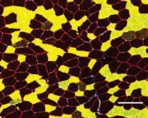
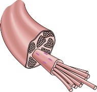
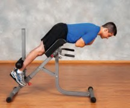

CONTENTS

1
chapter Hypertrophy-Related Responses
and Adaptations to Exercise Stress 1
Endocrine, Paracrine, and Autocrine Systems 16
chapter 2 Mechanisms of Hypertrophy
chapter 3 The Measurement of Muscle Hypertrophy

4
chapter Role of Resistance Training Variables

5
chapter Advanced Training Practices 136
Supersets and Pre-exhaustion 143
6
Eccentric Overload Training 145

chapter Role of Aerobic Training in Hypertrophy 150
Hypertrophic Effects From Aerobic-Only Training 150
7

chapter Factors in Maximal Hypertrophic Development 166
8

chapter Program Design for Maximal Hypertrophy 178
Exercise Selection Strategies 183
9

chapter Nutrition for Hypertrophy 211
References 231
Author Index 279
Subject Index 297
This book truly has been a labor of love.
I had envisioned writing an evidence-based text on muscle hypertrophy since my days as a graduate student in exercise science. At the time there were a plethora of consumer-oriented books describing programs for building muscle. However, they all relied largely on anecdote to make recommendations; none extensively delved into the actual science of the topic. A more scientific approach was clearly needed for the masses. In 2016, my vision became reality with publication of the first edition of Science and Development of Muscle Hypertrophy.
Much has transpired since the release of the book’s first edition. For one, research
on muscle hypertrophy has skyrocketed. Thousands of new studies have been pub- lished, helping to further our understanding as to what makes muscle grow and how to best go about optimizing muscle development. Moreover, feedback and the perspective of time have allowed me to see ways in which the original text could be improved and expanded. Ultimately, I determined that a revision of the original text was warranted.
I am thrilled to present the second edition of Science and Development of Muscle Hypertrophy. The text has been completely updated, with inclusion of more than 30% new content. In addition to containing extensive discussion of new research findings and their practical implications to muscle building, I have added two new chapters of importance: one that delves into the methods employed to measure muscle growth and another that evaluates various advanced training practices commonly employed to enhance hypertrophy. Further, 10 new sidebars highlight specific topics of interest to gaining lean mass.
A few words of note about the book in general: While the writing is geared toward master’s level students in exercise-related disciplines, the majority of the text should be accessible to anyone with a fundamental understanding of the principles of exercise science. The first two chapters are the most scientifically technical, and will require some background in exercise physiology and biomechanics to fully appre- ciate the complexities and challenges faced when attempting to draw inferences as to the underlying mechanisms of what drives hypertrophic adaptations. However, even if you do not possess a strong scientific background, much information can be gleaned from at least reading through these chapters to familiarize yourself with basic concepts and terminology.
Despite its scientific basis, the overall focus of the book is on the applied aspects of muscle development. As such, each chapter contains “key points” that summarize take-home messages and their practical applications. There also is an entire chapter (chapter 8) devoted to synthesizing the literature in an evidence-based fashion to create customized hypertrophy-oriented programs.
In sum, I hope you agree this is the most complete resource on the market for bridging the gap between science and practice to optimize muscle development.
Knowledge is power; learn and thrive.
ACKNOWLEDGMENTS
First and foremost, to Roger Earle, for envisioning this project and providing all the necessary resources to ensure its quality. I am thankful for your trust in me writing the book and for your continual guidance throughout the publication process. With- out your efforts, this book would not have come to fruition. I am eternally grateful. To Shawn Donnelly, for effectively and efficiently managing the development of this project so that everything ran smoothly. Your efforts were greatly appreciated. To Grant Tinsley, Mike Israetel, Cody Haun, Henning Wackerhage, James Krieger, Adam Sharples, Alan Aragon, Bret Contreras, Mike Roberts, and Andrew Vigotsky, for providing input on the book. Your insights helped to improve its breadth and
ensure its accuracy.
Finally, to my past and present students, who perpetually inspire me to learn and grow and to be the best I can be in my field. Your personal development and success are what drive me to keep doing what I am doing and are part of what make my life so fulfilling.
chapter
essential to have a foundational knowledge of how the body reacts and adapts to exercise stress. This chapter reviews the structure and function of the neuromuscular system and the responses and adaptations of the neuromuscu- lar, endocrine, paracrine, and autocrine systems. Although these systems are discussed separately, they are integrally connected; their interactions ultimately mediate lean tissue growth.
Neuromuscular System
A detailed discussion of the complexities of muscle hypertrophy requires a fundamental understanding of the neuromuscular system— in particular, the interaction between nerves and muscles that produces force to carry out human movement. Although a thorough explo- ration of the topic is beyond the scope of this book, this section provides a general overview of concepts that are referenced in later chap- ters. Those interested in delving further into the subject are advised to seek out one of the many textbooks specific to exercise physiology.
Structure and Function

From a functional standpoint, individual skel- etal muscles are generally considered single entities. However, the structure of muscle is highly complex. Muscle is surrounded by layers of connective tissue. The outer layer covering the entire muscle is called the epimysium; within the whole muscle are small bundles of fibers called fasciculi that are encased in the perimy-
of endomysium. The number of fibers ranges from several hundred in the small muscles of the eardrum to over a million in large muscles such as the gastrocnemius. In contrast to other cell types, skeletal muscle is multinucleated (i.e., contains many nuclei), which allows it to pro- duce proteins so that it can grow larger when necessary. Individual muscle fibers can span lengths of up to approximately 600 millimeters (23 inches) and their volumes can exceed those of typical mononucleated cells by more than 100,000-fold (202).
Skeletal muscle appears striped, or striated, when viewed under an electron microscope. The striated appearance is due to the stacking of sarcomeres, which are the basic functional units of myofibrils. Each muscle fiber contains hundreds to thousands of myofibrils, which are composed of many sarcomeres joined end to end. Myofibrils contain two primary protein filaments that are responsible for muscle con- traction: actin (a thin filament) and myosin (a thick filament), which comprise approximately 50% of the protein content of a muscle cell
(53). Each myosin filament is surrounded by six actin filaments, and three myosin filaments surround each actin filament, thereby max- imizing their ability to interact. Additional proteins, including titin, nebulin, and myotilin, are present in muscle to maintain the structural integrity of the sarcomere or aid in regulating muscular contractions, or both. Figure 1.1 shows the sequential macro- and microstruc- tures of muscle tissue.

Hypertrophy-Related Responses and Adaptations
to Exercise Stress
To comprehend the many factors related to maximizing skeletal muscle hypertrophy, it is
sium; and within the fasciculus are individual
muscle cells (i.e., fibers) covered by sheaths
1
Myofilaments (cross sections)
M-line
I-band
A-band
Myofibril
M-line
Z-line
H-zone
Z-line
Sarcomere
Resting state
Myosin (thick) filament
Head Tail Backbone
Tropomyosin
Actin (thin) filament
Actin
Troponin
A-band
I-band
Actin filament Myosin filament
Cross-bridge
Myosin
Actin
Z-line end

FIGURE 1.1 Sequential macro- and microstructures of muscle.
M-bridge H-zone level
Motor Unit
Muscles are innervated by the nervous system. Individual nerve cells associated with muscular actions are called motor neurons. Motor neurons consist of three regions: a cell body, an axon, and dendrites. When a decision is made to carry out a movement, the axon conducts nerve impulses away from the cell body to the muscle fibers, ultimately leading to muscular contrac- tion. Collectively, a single motor neuron and
all the fibers it innervates is called a motor unit (figure 1.2). When a motor unit is innervated, all of its fibers contract; this is known as the all-or-none principle.
Sliding Filament Theory
It is generally accepted that movement takes place according to the sliding filament theory pro- posed by Huxley in the early 1950s (97). When a need to exert force arises, an action potential
Dendrites
Nucleus
Axon
Node of Ranvier
Myelin sheath
Neuromuscular
junction
Muscle
I-band A-band I-band
H-zone
Z-line
Z-line
Myosin
a filament
Actin filament
Z-line
H-zone
Z-line
I-band A-band I-band
b
FIGURE 1.2 A motor unit.
travels down the nerve axon to the neuromuscu- lar junction, where the neurotransmitter acetyl- choline is released across the synaptic cleft and ultimately binds to the muscle fiber’s plasma- lemma. This depolarizes the muscle cell, causing calcium to be released from the sarcoplasmic
reticulum. Calcium binds to troponin, which c

Z-line
A-band
Z-line
in turn moves tropomyosin from actin binding
sites so they are exposed to myosin. Assuming sufficient ATP to drive muscular contraction, the globular myosin heads bind to exposed actin sites, pull the thin filament inward, release, and then reattach at a site farther along the actin filament to begin a new cycle. The continu- ous pulling and releasing between actin and myosin is known as crossbridge cycling, and the repeated power strokes ultimately cause the sarcomere to shorten (figure 1.3).
Fiber Types
Muscle fibers are broadly categorized into two primary fiber types: Type I and Type II. Type I fibers, often referred to as slow-twitch fibers, are
FIGURE 1.3 Contraction of a myofibril. (a) In stretched muscle, the I-bands and H-zone are elongated, and there is low force potential as a result of reduced crossbridge– actin alignment. (b) When muscle contracts (here, partially), the I-bands and H-zone are shortened. Force potential is high because of optimal crossbridge–actin alignment. (c) With contracted muscle, force potential is low because the overlap of actin reduces the potential for crossbridge–actin alignment.
fatigue resistant and thus well suited for activi- ties requiring local muscular endurance. How- ever, peak tension takes time—approximately 110 ms—to achieve in these fibers, thereby limiting their ability to produce maximal force.
Type II fibers, also known as fast- twitch fibers, serve as a counterpart to Type I fibers. They can reach peak ten- sion in less than half the time—just 50 ms—thereby making them better suited for strength- or power-related endeavors. However, they fatigue quickly and thus have limited capac- ity to carry out activities requiring high levels of muscular endurance. The greater myoglobin and capillary content in slow-twitch fibers contrib- utes to their higher oxidative capacity compared to fast-twitch fibers. Table
1.1 summarizes the characteristics of the primary muscle fiber types.
Muscle fiber types are further dis- tinguished according to the predom- inantly expressed isoform of myosin heavy chain; they are referred to as Type I, Type IIa, and Type IIx (236). Several other similar forms (com- monly called isoforms) have been
FIGURE 1.4 A photomicrograph showing Type I (black), Type IIa (white), and Type IIx (gray) muscle fibers.
Reprinted by permission from W.L. Kenney, J.H. Wilmore, and D.L. Costill, Physiology of Sport and Exercise, 5th ed. (Champaign, IL: Human Kinetics, 2012), 37.
identified, including Ic, IIc, IIac, and IIax
(figure 1.4). From a practical standpoint, the c isoform typically comprises less than 5% of human muscle and thus has minimal impact on total cross-sectional area.
On average, human muscle contains approximately equal amounts of Type I
and Type II fibers. However, a large inter-
individual variability exists with respect to fiber type percentage. The quadriceps of elite sprinters have been shown to have a predominance of Type II fibers, whereas quadriceps of elite aerobic endurance ath- letes are primarily composed of Type I fibers.
TABLE 1.1 Characteristics of Muscle Fiber Types
Type I | Type IIa | Type IIx | |
Size of motor neuron | Small | Medium | Large |
Contraction time | Slow | Moderately fast | Fast |
Force production | Low | Moderate | High |
Resistance to fatigue | High | Moderate | Low |
Mitochondrial density | High | Moderate | Low |
Oxidative capacity | High | High | Low |
Glycolytic capacity | Low | High | High |
Capillary density | High | Moderate | Low |
Myoglobin content | High | Moderate | Low |
Glycogen stores | Low | High | High |
Triglyceride stores | High | Moderate | Low |
That said, a wide variability in these percent- ages exists even at the top levels of sport. World champion hurdler Colin Jackson was deter- mined to have a fast-twitch fiber population of 71% in the vastus lateralis, with an extremely high abundance (24%) of the pure Type IIx isoform (230); in comparison, research shows elite Danish sprinters possess 57% fast-twitch fibers in the vastus lateralis, with just approxi- mately 11% of the Type IIx variety (14). More- over, certain muscles are predisposed to higher percentages of a given fiber type. For example, the endurance-oriented soleus contains an average of more than 80% Type I fibers; the more strength-oriented triceps brachii contains approximately 60% Type II fibers (50).
Many experts claim that all Type II fibers are inherently larger than Type I fibers. However, there is evidence that women often display a larger cross-sectional area of Type I fibers than of Type IIa fibers (236). Research does indicate that the oxidative properties of a fiber, rather than fiber type, influence muscle size. Specifi- cally, the cross-sectional area of glycolytic Type IIx fibers is significantly greater than that of the more oxidative Type I and Type IIa fibers. It has been speculated that the smaller size of high-ox- idative myofibers is an evolutionary design constraint based on the premise that muscle tissue has a limited capacity to hypertrophy and increase oxidative capacity at the same time
(236). This is consistent with the hypothesis that competition exists between the turnover rates of structural (myofibrillar) proteins and those involved in metabolism (i.e., mitochon- drial proteins), which is seemingly mediated by interactions between signaling pathways involved in either the synthesis or degradation of the respective muscle proteins (236).
Another often-proposed assumption is that Type II fibers are primarily responsible for exer- cise-induced increases in muscle size. This is principally based on studies showing that Type II fibers experience superior growth compared to Type I fibers after regimented resistance training (1, 40, 43, 111, 201, 217). When considered as a whole, the literature indicates that the growth capacity of Type II fibers is approximately 50% greater than that of Type I fibers (6), although substantial interindividual variability is seen in
the extent of fiber type–specific hypertrophic adaptation (111). There also is evidence that the rate of muscle protein synthesis is elevated to a greater extent in the primarily fast-twitch human vastus lateralis muscle (approximately 50% to 60% Type II fibers) compared to the pri- marily slow-twitch soleus muscle (~80% Type I fibers) following heavy resistance exercise (231). A caveat when attempting to extrapolate such findings is that relatively high loads (>70% of 1RM) were used in a majority of studies on the topic, which potentially biases results in favor of fast-twitch fibers. Thus, it is conceivable that the superior capacity for hypertrophy of this particular fiber type may be a function of the models in which it has been studied rather than an inherent property of the fiber itself (158). The practical implications of this topic are dis- cussed in later chapters.
Responses and Adaptations

KEY POINT
Early-phase adaptations to resistance train- ing are primarily related to neural improve- ments, including greater recruitment, rate coding, synchronization, and doublet firing.
Resistance exercise elicits a combination of neural and muscular responses and adapta- tions. Although an increased protein synthetic response is seen after a single bout of resistance training, changes in muscle size are not observed for several weeks of consistent exercise (207). Moreover, appreciable muscle protein accumu- lation (commonly referred to as accretion) gener- ally takes a couple of months to become appre- ciably apparent (141). Early-phase increases in strength therefore are primarily attributed to neural improvements (141, 173, 196). Such observations follow the principles of motor learning. During the initial stages of training, the body is “getting used to” the movement patterns required for exercise performance. A general motor program must be created and then fine- tuned to carry out the exercise in a coordinated fashion. Ultimately, this results in a smoother, more efficient motor pattern and thus allows greater force to be exerted during the movement.
Neural Drive
Several neural adaptations have been pro- posed to account for strength gains during acclimation to resistance training. Central to these adaptations is an increase in neural drive. Research indicates that humans are incapable of voluntarily producing maximal muscle force (55), but repeated exposure to resistance train- ing enhances this ability. Numerous studies have reported increases in surface electromy- ography (EMG) amplitude after a period of regular resistance training, consistent with a heightened central drive to the trained mus-
High
Motor units
Type II
Type I
Recruitment electrical threshold
Low
Low


Force production
High
cles (2, 3, 80, 150). Research using the twitch interpolation technique, in which supramax- imal stimuli are delivered to a muscle while subjects perform voluntary contractions, shows that as much as 5% of the quadriceps femoris muscle is not activated during maximal knee extension testing before exercise. After 6 weeks of training, however, subjects increased activa- tion by an additional 2% (110). Similarly, Pucci and colleagues (174) reported an increase in voluntary activation from 96% to 98% after 3 weeks of training the quadriceps muscles. These results are consistent with research showing that trained athletes display greater muscle acti- vation during high-intensity resistance exercise compared to nonathletes.
Muscle Activation
The findings of increased activation resultant to training are most often ascribed to a com- bination of greater recruitment (the number of fibers involved in a muscle action) and rate coding (the frequency at which the motor units are stimulated). It has been well established that muscle fiber recruitment follows the size principle (1, 12, 14, 16-19, 23, 33, 34). First explained by Henneman (90), the size princi- ple dictates that the capacity of a motor unit to produce force is directly related to its size (figure 1.5). Accordingly, smaller, low-thresh- old, slow motor units are recruited initially during movement, followed by progressively larger, higher-threshold, fast motor units as the force demands increase for a given task. This orderly activation pattern allows for a smooth gradation of force, irrespective of the activity performed.
FIGURE 1.5 The Henneman size principle.
Two primary factors are responsible for the extent of muscle recruitment: level of muscle force and rate of force development. Training with heavy loads requires substantial force pro- duction and therefore calls on both low- and high-threshold motor units to maximize force. Although there is an intent to lift heavy loads quickly, the actual velocity of the lift is rela- tively slow. As the intensity of load decreases, the required force production from the muscle decreases, and fewer motor units are necessary to complete the lift given the same speed of shortening. By lifting a lighter weight quickly, however, most motor units are likely to be recruited even at loads equivalent to 33% of maximum (56). The extent of reductions in recruitment threshold from rapid contractions is greater for motor units in slow-contracting muscles, such as the soleus, compared with fast-contracting muscles, such as the masseter, one of the primary muscles involved in chew- ing food (56). The role of fatigue also must be considered with respect to recruitment. As fatigue increases during low-load contractions, the recruitment threshold of higher-threshold motor units progressively decreases even at somewhat slower speeds (95, 195, 242). It has been hypothesized that fatigue-induced reduc- tions in motor unit threshold recruitment is an attempt by the neuromuscular system to sustain necessary levels of force generation to continue work output during repeated contractions (38).
The upper limit of motor unit recruitment
is approximately 85% of maximal applied
isometric force; recruitment thresholds during dynamic actions are even lower (56). This sug- gests that enhancements in motor unit recruit- ment likely play a limited role in strength-re- lated training adaptations. The ability to maximally recruit all available fibers in a given motor unit pool is essential for maximizing the hypertrophic response to resistance training. After all, the stimulus for a muscle fiber to adapt is predicated on its recruitment. However, it is important to note that simply recruiting a fiber does not necessarily promote a hypertrophic response. For example, a substantial recruit- ment of the full spectrum of muscle fibers, including those associated with high-threshold motor units, is achieved by cycling to fatigue
2
at 75% of V˙O max (195). Although this obser-
vation suggests that submaximal cycle exercise would promote substantial size increases across fiber types, research shows that muscle growth associated with aerobic exercise is limited pri- marily to Type I fibers (87).
Increases in force production above 85% of maximal voluntary contraction are thought to occur through greater discharge rates. Thus, an increase in rate coding would seem to be the most likely target for neural adaptation. Research is limited on the topic, but a study by Kamen and Knight (101) provides supporting evidence for training-induced enhancements in rate coding. Fifteen untrained young and older adults were tested for maximal voluntary contraction in knee extensions before and after 6 weeks of resistance exercise. By the end of the study, young subjects increased maximal discharge rate by 15%, and older subjects showed a 49% increase. Similarly, Van Cutsem and colleagues (234) showed that 12 weeks of resisted dorsiflexion training increased average firing frequency in the tibialis anterior from 69 to 96 pulses per second. In contrast, Pucci and colleagues (174) reported an increase of approximately 3% of maximal voluntary activa- tion following 3 weeks of isometric quadriceps exercise, but no changes in discharge rate were noted. Differences in findings may be related to the methods employed for analysis. Recently, Del Vecchio and colleagues (51) demonstrated that changes in motor unit function of the tib- ialis anterior were mediated by adaptations in
both recruitment and rate coding following 4 weeks of isometric strength training.
Motor Unit Synchronization
Several other factors have been speculated to account for neural improvements following resistance exercise. One of the most commonly hypothesized adaptations is an enhanced synchronization of motor units, whereby the discharge of action potentials by two or more motor units occurs simultaneously. A greater synchrony between motor units would necessarily result in a more forceful muscle contraction. Semmler and Nordstrom (204) demonstrated that motor unit synchronization varied when they compared skilled musicians (greatest degree of synchronization), Olympic weightlifters, and a group of controls (lowest degree of synchronization). However, other studies have failed to show increased syn- chronization following resistance training or computer simulation (105, 251). The findings cast doubt on whether synchronization plays a meaningful role in exercise-induced ear- ly-phase neuromuscular adaptations; if it does, the overall impact seems to be modest.
Antagonist Coactivation
Another possible explanation for exercise-in- duced neural enhancement is a decrease in antagonist coactivation. The attenuation of antagonist activity reduces opposition to the agonist, thereby allowing the agonist to pro- duce greater force. Carolan and Cafarelli (41) reported that hamstring coactivation decreased by 20% after just 1 week of maximal voluntary isometric knee extension exercises, whereas no differences were seen in a group of controls. These findings are consistent with observations that skilled athletes display reduced coacti- vation of the semitendinosus muscle during open-chain knee extensions compared to sed- entary people (13). The extent to which these adaptations confer positive effects on strength or hypertrophy remains unclear.
Doublets
An often-overlooked neural adaptation asso- ciated with resistance training is the effect on doublets, defined as the presence of two close
spikes less than 5 ms apart. Doublets often occur at the onset of contraction, conceivably to produce rapid force early on and thus generate sufficient momentum to complete the intended movement. Van Cutsem and colleagues (234) reported that the percentage of motor units firing doublets increased from 5.2% to 32.7% after 12 weeks of dynamic resisted dorsiflexion training against a load of 30% to 40% of 1RM. Interestingly, the presence of these doublets was noted not only in the initial phase of force development, but also later in the EMG burst. The findings suggest that doublet discharges contribute to enhancing the speed of volun- tary muscle contraction following regimented resistance training.
Protein Balance
The maintenance of skeletal muscle tissue is predicated on the dynamic balance of muscle
protein synthesis and protein breakdown. The human body is in a continual state of pro- tein turnover; bodily proteins are constantly degraded and resynthesized throughout the course of each day. Skeletal muscle protein turnover in healthy recreationally active people averages approximately 1.2% a day and exists in dynamic equilibrium; muscle protein break- down exceeds muscle protein synthesis in the fasted state and muscle protein synthesis exceeds muscle protein breakdown postpran- dially (19).
Protein synthesis has two basic components: transcription and translation (figure 1.6). Tran- scription occurs in the cell nucleus through a complex process that is segregated into three distinct phases: initiation, elongation, and termination. The process involves the creation of a messenger ribonucleic acid (mRNA) template that encodes the sequence of a specific protein
tRNA
Ribosome Protein
Translation
Transport to cytoplasm
DNA
mRNA
Transcription
FIGURE 1.6 Protein translation and transcription—the basic processes of reading DNA sequence information and using it to build a protein molecule. The DNA sequence is read in the cell’s nucleus, where a complementary RNA strand is built. That mRNA strand then moves to the cell cytoplasm, where it is used to manufacture the amino acid sequence of the protein.
from the genome. Each phase of transcription is regulated by various proteins (i.e., transcription factors, coactivators) that ensure the correct gene is transcribed in response to appropriate signals. Messenger ribonucleic acid concentra- tion for a given protein is ultimately regulated by the myonuclear or the mitochondrial den- sity and the transcription factors required for promoter activity (236).
Translation occurs in organelles called ribo- somes located in the cell’s sarcoplasm, which occupy approximately 20% of cell volume and comprise approximately 85% of total cellular RNA (64, 244). Ribosomes can be thought of as large peptide factories that regulate the trans- lation of genetic material encoded in mRNA templates into muscle proteins. Each ribosome is composed of two subunits: a smaller subunit that binds the mRNA and a larger subunit that integrates specific transfer RNAs along with their bound amino acids (44). After binding with mRNA, the ribosomes synthesize a cor- responding peptide strand by joining amino acids to transfer ribonucleic acid (tRNA) at the carboxyl end of the chain (44). The result is that translational capacity depends highly on the number of ribosomes in myocytes (5).
As with transcription, reactions are segre- gated into three phases: initiation, elongation, and termination. Each phase involves a distinct cluster of translation factors that are aptly termed initiation factors (eIF), elongation factors (eEF), and release factors (eRF) (the e stands for eukaryotic, referring to a cell that contains a nucleus and other cell structures). The availa- bility and the state of activation of these factors determine the rate of translation of mRNA into muscle proteins (236). Translation initiation is believed to be the rate-limiting step in the protein synthetic response (130, 180). Not surprisingly, therefore, hormones and other growth factors that regulate muscle protein synthesis exert their effects by either increasing or decreasing the rate of translation initiation
(44). That said, under certain circumstances, control of translation elongation can be critical to regulation of the protein synthetic rate (226). During a bout of resistance training, muscle protein synthesis is suppressed and proteolysis (the breakdown of proteins into amino acids)
is heightened so that net protein balance is in a net negative state. Note that protein breakdown resultant to exercise is considered an important component of exercise-induced hypertrophy because it helps to support amino acid reallo- cation as well as prevent the buildup of mis- folded and nonfunctional proteins (133). After completion of the workout, muscle protein synthesis is increased 2- to 5-fold along with nutrient delivery, with effects lasting 48 hours or more post-exercise (168). An enhanced translational efficiency likely contributes to the exercise-induced increase in muscle protein synthesis (94, 160). Thus, when repeated bouts are performed over time and sufficient recov- ery is afforded between sessions, the synthetic response outpaces that of proteolysis, resulting in an increased accretion of muscle proteins.

KEY POINT
Muscular adaptations are predicated on net protein balance over time. The process is mediated by intracellular anabolic and cata- bolic signaling cascades. Ribosome biogen- esis is critical to maximizing hypertrophy over time.
Emerging evidence indicates that ribosome biogenesis is critical to increasing muscle mass. While translational efficiency appears to be a primary driver of the muscle protein synthesis response to exercise, the total number of ribo- somes also plays an important role in the pro- cess (35, 244). The ribosomal pool is limited and must be expanded to support long-term growth because a given ribosome can translate only a finite amount of muscle proteins (183, 244). Numerous studies in both animals and humans have demonstrated strong correlations between muscle hypertrophy and ribosome biogenesis (244). Moreover, research in rodents shows that varying increases in hypertrophy following synergist ablation of 22%, 32%, and 45% are paralleled by dose-dependent increases in ribosomal content (1.8-fold, 2.2-fold, and 2.5-fold, respectively) (149); these findings emphasize the importance of expanding the number of ribosomes to realize progressively greater growth potential.
Hypertrophy
By definition, muscle hypertrophy is an increase in the size of muscle tissue. During the hyper- trophic process, contractile elements enlarge and the extracellular matrix expands to support growth (198). Growth occurs by adding sarco- meres, increasing noncontractile elements and sarcoplasmic fluid, and bolstering satellite cell activity.
Parallel and In-Series (Serial) Hypertro- phy Contractile hypertrophy can occur by adding sarcomeres either in parallel or in se- ries (figure 1.7). In the context of tradition- al exercise protocols, the majority of gains in muscle mass result from an increase of sarcomeres added in parallel (161, 224). Me- chanical overload causes a disruption in the ultrastructure of the myofibers and the corre- sponding extracellular matrix that sets off an intracellular signaling cascade (see chapter 2 for a full explanation). With a favorable an-
abolic environment, this process ultimately leads to an increase in the size and amounts of the contractile and structural elements in the muscle as well as the number of sarcom- eres in parallel. The upshot is an increase in the diameter of individual fibers and thus an increase in total muscle cross-sectional area (228).
Conversely, an in-series increase in sarco- meres results in a given muscle length corre- sponding to a shorter sarcomere length (228). An increase in serial hypertrophy has been observed in cases in which a muscle is forced to adapt to a new functional length. This occurs when limbs are placed in a cast and the corresponding immobilization of a joint at long muscle lengths leads to the addition of sarcomeres in series; immobilization at shorter lengths results in a reduction in sarcomeres
(228). Cyclic stretch in rodent models also has shown to be a potent stimulator of in-series sarcomere addition (235).

Serial hypertrophy (more sarcomeres in series)
Original fiber, with a zoomed view of a sarcomere
Myosin Actin
Sarcomere
H-zone I-band
M-line Z-disc A-band
Parallel hypertrophy (more sarcomeres in parallel)
FIGURE 1.7 Parallel hypertrophy and serial hypertrophy.

KEY POINT
Hypertrophy can occur in series or in par- allel. The primary means by which muscles increase in size following resistance training is through parallel hypertrophy.
Research indicates that certain types of exer- cise actions can affect fascicle length. There are three distinct types of actions: concentric, eccentric, and isometric. Concentric actions occur when a muscle is shortening; eccentric actions occur when a muscle is lengthening; and iso- metric actions occur when a muscle is producing force at an immobile joint. Lynn and Morgan
(123) demonstrated lower sarcomere counts when rats climbed on a treadmill (i.e., incline) compared to when they descended (i.e., decline). This indicates that repeated eccen- tric-only actions result in a greater number of sarcomeres in series, whereas exercise consist- ing solely of concentric contractions leads to a serial decrease in sarcomere length, at least during unaccustomed aerobic-type exercise.
With respect to traditional resistance exer- cise, there is evidence that serial hypertrophy occurs to an extent during the early stages of participation. Seynnes and colleagues (207) reported a 9.9% increase in fascicle length in a group of recreationally active men and women after a 35-day high-intensity resistance training program. However, a longer-term study by Blazevich and colleagues (30) found that fas- cicle length changes were specific to the initial 5 weeks of resistance training, and that adap- tations did not persist beyond this period. Evi- dence suggests that altering the style of training may influence changes in serial hypertrophy. Increases in fascicle length have been reported in athletes who replace heavy resistance train- ing with high-speed training (11, 29). These findings suggest that performing concentric actions with maximal velocity may promote the addition of sarcomeres in series even in those with considerable training experience.
Sarcoplasmic Hypertrophy It is hypoth- esized that a training-induced increase in
various noncontractile elements (i.e., col- lagen, organelles) and fluid may augment muscle size (126, 209). This phenomenon, often referred to as sarcoplasmic hypertrophy, conceivably enhances muscle bulk without concomitantly increasing strength (209). The sarcoplasmic component of muscle is illus- trated in figure 1.8. Increases in sarcoplasmic hypertrophy are purported to be training spe- cific—that is, lighter-load, higher repetitions promote greater accumulation of sarcoplas- mic fractions compared to heavy-load, low repetitions. Support for this belief is based on research showing that muscle hypertrophy differs between bodybuilders and powerlift- ers (224). In particular, bodybuilders tend to display higher amounts of fibrous endomysial connective tissue as well as a greater glycogen content compared to powerlifters (125, 225), presumably as a result of differences in train- ing methodology.
The chronic changes in intramuscular fluid
Mitochondrion
Opening to T-tubule
T-tubule
Sarcoplasmic reticulum
Myofibril Sarcolemma
are an intriguing area of discussion. Without question, exercise training can promote an increase in glycogen stores. MacDougall and colleagues (124) reported that resting concen- trations of glycogen increased by 66% after 5 months of regimented resistance training. Moreover, bodybuilders display double the gly- cogen content of those who do not participate in regular exercise (4). Such alterations would

FIGURE 1.8 Sectional view of a muscle fiber showing the sarcoplasmic component of muscle.
seem to be mediated both by enzymatic alter- ations and the greater storage capacity of larger muscles. The relevance to sarcoplasmic changes is that 1 g of glycogen attracts approximately 3 to 4 g of water (42, 159).
Training-induced increases in intracellular hydration have been demonstrated after 16 weeks of progressive resistance training (185). Subjects performed a bodybuilding-type rou- tine consisting of 3 sets of 8 to 12 repetitions with 60 to 90 seconds of rest between sets. A total of 11 exercises were performed per session using a combination of free weights, cables, and machines. All sets were taken to the point of momentary muscular failure. Analysis by bioelectrical impedance spectroscopy found significant increases in intracellular water content both at the midpoint of the study and at the study’s end; results showed a moderate effect size. Conceivably, these alterations were mediated by increases in glycogen content because osmosis-promoting properties would be required to maintain the ratio of fluid to proteins and thus preserve the integrity of cel- lular signaling. Although the study provides evidence that training does in fact promote an increase in intracellular hydration (and, thereby, likely an increase in glycogen stores), what remains unclear is whether training-in- duced increases in intracellular hydration are specific to bodybuilding-type training or inherent to all types of resistance training. Bodybuilding-type training relies primarily on fast glycolysis to fuel performance, and glucose is the primary energy source. As such, the body necessarily adapts by increasing its capacity to store glycogen and thus fuel the demands of future performance. On the other hand, the short duration of powerlifting-type training requires that fuel be derived from immediately available ATP and PC sources. The lack of need to substantially use glucose during these bouts would seemingly diminish the need to ramp up glycogen storage capacity, and thus reduce localized fluid accumulation.
Although this line of reasoning provides a
logical basis for training-specific alterations in sarcoplasmic volume, evidence that this occurs in practice remains equivocal. Burd and
colleagues (37) found that training at 90% of 1RM induced greater early-phase post-exercise (~4 hours) increases in sarcoplasmic protein synthesis compared to training at 30% of 1RM, but the low-load condition showed a greater increase at 24 hours post-exercise. Although these findings are specific to myocellular pro- tein fractions and do not necessarily reflect the long-term changes in hydration status associated with resistance training, the two are related. However, it is unknown whether such acute results would have persisted over time.
Recently, Haun and colleagues (89) pro- vided intriguing longitudinal evidence that sarcoplasmic hypertrophy may in fact occur in the absence of myofibrillar growth in cer- tain contexts. Thirty-one college-aged men with previous resistance training experience performed a regimented resistance training program that progressively increased volume from 10 sets per week to 32 sets per week over a 6-week training period. Fifteen subjects who exhibited notable muscle fiber cross-sectional area increases in the vastus lateralis, measured through muscle biopsy, were interrogated fur- ther to better understand the specific mode by which hypertrophy occurred. The results sug- gested that mitochondrial volumes decreased, glycogen concentrations were maintained, and, surprisingly, actin and myosin concentrations significantly decreased while sarcoplasmic pro- tein concentrations tended to increase. From proteomic analyses, it appeared that proteins involved in anaerobic metabolism increased in expression. Collectively, the findings suggest that short-term, high-volume resistance train- ing may elicit disproportionate increases in sarcoplasmic volume as opposed to hypertro- phy of contractile elements. Given the limited current evidence on the topic, more research is warranted to provide confirmation or refu- tation of these results.
Satellite Cells Skeletal muscle is a postmi- totic tissue, meaning that it does not under- go significant cell replacement throughout its life. An efficient means for regeneration of fib- ers is therefore required to maintain healthy
tissue and avoid cell death. It is widely accept- ed that satellite cells are essential to this pro- cess. These myogenic stem cells, which reside between the basal lamina and sarcolemma, remain inactive until a sufficient mechanical stimulus is imposed on skeletal muscle (239). Once aroused, they produce daughter cells that either self-renew to preserve the satellite cell pool or differentiate to become myoblasts that multiply and ultimately fuse to existing fibers, providing agents necessary for the re- pair and remodeling of the muscle (228, 254). This process is regulated by the Notch signal- ing pathway (208) and the transcription factor known as serum response factor (178). The satellite cell response may include the co-ex- pression of myogenic regulatory factors such as Myf5, MyoD, myogenin, and MRF4 (47) that bind to sequence-specific DNA elements present in the promoter of muscle genes; each plays a distinct role in growth-related process- es (193, 210). A subpopulation of satellite cells remains uninvolved in the adaptive me-
chanical response and instead is committed to self-renewal to ensure maintenance of the satellite cell pool (57).
The satellite cell response to a bout of resistance exercise lasts for many days, with effects peaking approximately 72 to 96 hours post-workout (23). The majority of evidence indicates that Type I fibers possess a greater resting number of satellite cells compared to Type II fibers, but it appears their population is increased to a greater extent in Type II fibers after resistance training (23). See figure 1.9.
It has been theorized that the most impor- tant hypertrophic role of satellite cells is their ability to retain a muscle’s mitotic capacity by donating nuclei to existing myofibers (see figure 1.10), thereby increasing the muscle’s capacity to synthesize new contractile proteins (22, 144). This phenomenon is generally con- sidered obligatory for maximizing overload-in- duced hypertrophy (60).
Given that a muscle’s ratio of nuclear con- tent to fiber mass remains relatively constant


Inactive satellite cell
Mechanical stimulus
Resting muscle fiber Myonuclei
1 Satellite cell activation and proliferation
Self-renewal
4 Repaired/remodeled muscle fiber
2 Movement of satellite cells (chemotaxis) to an existing muscle fiber
3 Fusion of satellite cells to the muscle fiber
FIGURE 1.9 Cycle of satellite cell activation, differentiation, fusion, and repair and remodeling following a suf- ficient mechanical stimulus.
Adapted by permission from W.L. Kenney, J.H. Wilmore, and D.L. Costill, Physiology of Sport and Exercise, 6th ed. (Champaign, IL: Human Kinetics, 2015), 249.

KEY POINT
Satellite cells appear to be crucial to maxi- mizing the hypertrophic response to resist- ance training. The primary role of satellite cells appears to be their ability to retain a muscle’s mitotic capacity by donating nuclei to existing myofibers, and they may contrib- ute to hypertrophic gains in other ways as well.
Myofibrils
Nuclei
a
Basement membrane
Plasmalemma
Satellite cell
Myonucleus
b

FIGURE 1.10 (a) Single muscle fiber with myonuclei at the periphery. (b) Myonucleus and satellite cell. The satellite cell is separated from the fiber by its own plasmalemma and that of the fiber, but it lies within the basement membrane of the skeletal muscle fiber.
during growth, the satellite cell–derived addi- tion of myonuclei appears to be essential for sustaining muscular adaptations over the long term (227). This is consistent with the concept of myonuclear domain, which proposes that the myonucleus regulates mRNA production for a finite sarcoplasmic volume and any increases in fiber size must therefore be accompanied by a proportional increase in myonuclei (167). Considering that skeletal muscle contains mul- tiple myonuclear domains, growth could occur by either an increase in the number of domains (via an increase in myonuclear number) or an increase in the size of existing domains. Both events are believed to occur during the adap- tive response to exercise, and satellite cells are believed to contribute significantly to the pro- cess (228). Satellite cells may further contrib- ute to increases in muscle size independent of myonuclear addition by regulating remodeling of extracellular matrix components (96).
Although controversy exists regarding the precise hypertrophic role of satellite cells (132), the prevailing body of research indi- cates that they are crucial for the regulation of load-induced muscular growth (6, 157). Compelling support for this contention was demonstrated in a cluster analysis by Petrella and colleagues (167) that showed extreme hypertrophic responders to resistance training (>50% increases in mean myofiber cross-sec- tional area of the vastus lateralis over the course of a 16-week study period) displayed a much greater capacity to expand the satellite cell pool compared to those who experienced moderate or negligible increases in growth. More recently, Bellamy and colleagues (24) showed a strong positive relationship between the acute temporal satellite cell response to 16 weeks of resistance training and subsequent muscle protein accretion. Correlations were noted in all fiber types, and expansion of the satellite cell pool showed the greatest associated hypertrophic increases in Type II fibers. Satellite cells also play an essential role in regulation of the extracellular matrix, which has been shown to be integrally involved in mediating exercise-induced hypertrophic adaptations (67, 146) and replenishment of the satellite cell pool (181). These findings are consistent with research showing that hypertrophy is significantly impaired when satellite cells are obliterated by gamma irradiation (238).
It seems likely that satellite cells become
relevant only when muscle growth reaches a certain threshold. Kadi and colleagues (100) found that increases in myofiber hypertrophy of up to 15% could be achieved without sig- nificantly adding new myonuclei; however, myonuclear addition was required when hyper-
trophy reached 26%, conceivably because of an inability to further expand the myonuclear domain. This observation suggests that satellite cell function might be particularly important in well-trained people because the size of myofib- ers would necessarily reach the upper limits of their myonuclear domain. Despite speculation that the threshold for myonuclear addition occurs when increases in myofiber size reach approximately 26%, this does not necessarily play out in practice (146). Thus, rather than a “rigid” myonuclear domain, the threshold at which nuclei are required to sustain fiber growth appears to be flexible (146).
Interestingly, myonuclei appear to be maintained over time even after long periods of detraining and the corresponding muscle atrophy. In animal models, a technique called synergist ablation is often used to study muscle tissue; the process involves an agonist muscle being surgically removed so that other syner- gist muscles are forced to carry out a move- ment (see chapter 4). In an elegant design, Bruusgaard and colleagues (36) used synergist ablation to cause significant hypertrophy in the extensor digitorum muscle of rodents and a 37% increase in myonuclei count. Subsequent denervation of a parallel group of animals produced marked muscular atrophy, but the number of myonuclei remained constant (36). Work from the same lab showed that mice treated with testosterone propionate for 14 days elicited a 77% increase in muscle hyper- trophy and a 66% increase in myonuclei count
(59). Muscle fiber size returned to baseline
levels 3 weeks after discontinuation of steroid administration. However, the myonuclei count remained elevated for at least 3 months, which amounts to over 10% of the animal’s life span. These findings indicate that the retention of satellite cells associated with hypertrophic adaptations serves as a cellular memory mecha- nism that helps to preserve the future anabolic potential of skeletal muscle (59), although a recent study found that satellite cell accretion in mice subjected to 8 weeks of resistive exercise returned to basal levels following 12 weeks of detraining (58). Based on the preponderance of current research, the number of myonuclei might be limited by a person’s ability to add
muscle during the initial stages of overload, but the subsequent addition of satellite cell– derived nuclei associated with muscle protein accretion might facilitate increased synthesis upon retraining (77, 202).
Hyperplasia
It has been theorized that exercise-induced muscle growth may be due in part to hyperpla- sia—an increase in fiber number (figure 1.11). Evidence supporting the ability of muscles to undergo hyperplasia is primarily derived from animal research. Alway and colleagues (12) attached a weight to the right wings of adult Japanese quails that corresponded to 10% of their body mass. The contralateral limb served as a control. After 5 to 7 days of chronic stretch, fiber number was approximately 27% greater than that in nonloaded controls. These findings indicate a substantial contribution of hyperpla- sia to gains in lean mass. Follow-up work by the same lab evaluated a comparable stretch protocol except that loading was carried out for 24-hour intervals interspersed with 48- to 72-hour rest periods (16). Although signifi- cant increases in mean cross-sectional fiber area were noted in the stretched limb, fiber number did not change over the course of the study. Subsequent work by the lab expanded on this study to employ progressive overload
(17). Loading was increased from 10% to 35% of the bird’s body mass over a period of 28 days, interspersed by short periods of unload- ing. Histological analysis determined an 82% increase in fiber number at the study’s end. These findings seem to indicate that extreme loading conditions can induce hyperplasia, at least in an avian model. It is hypothesized that once fibers reach a critical size threshold, they cannot enlarge further and thus split to allow additional hypertrophy to occur.
Whether hyperplasia occurs in humans using traditional training protocols remains controversial. A meta-analysis on the topic of 17 studies meeting inclusion criteria concluded that a stretch overload consistently produced greater fiber counts, and exercise-based proto- cols produced highly inconsistent results (103). Moreover, increases in myofiber number were substantially greater in studies that used avian
Single fiber
Split fiber
arrangements of elongating fibers as increases in fiber number. These researchers noted the difficulty in attempting to analyze fiber count, particularly in pennated muscles in which fibers do not all lie in the plane of sectioning, and in muscles with multiple endplate bands and many intrafascicularly terminating fibers in series. The body of evidence suggests that the notion that new myofiber formation contrib- utes to loading-induced muscle hypertrophy in humans is questionable. If a contribution does exist, its impact on increases in muscle cross-sectional area appears to be minimal (6). Most likely, humans cannot naturally increase muscle size to reach the critical threshold that warrants fiber splitting. It remains possible that administration of supraphysiological doses of illicit anabolic agents may result in extreme hypertrophy that allows individuals to exceed the limits of hypertrophic capacity and thus promotes hyperplasia (147).
Endocrine, Paracrine, and Autocrine Systems

Muscle protein balance is influenced, in part, by the neuroendocrine system. Various hor- mones have been shown to alter the dynamic balance between anabolic and catabolic stimuli in muscle, helping to mediate an increase or decrease in muscle protein accretion (212). Moreover, certain substances (hormones and myokines) are secreted locally, either in a paracrine (between adjacent cells) or autocrine
FIGURE 1.11 Muscle fiber splitting (hyperplasia).
(~21%) versus mammalian (~8%) models. MacDougall and colleagues (126) evaluated myofiber count of the biceps brachii in 5 elite male bodybuilders, 7 intermediate-caliber bodybuilders, and 13 age-matched controls. Despite markedly greater hypertrophy in the bodybuilders, the fiber counts of the groups were similar, indicating that consistent intense resistance training had no effect on hyperplasia. Paul and Rosenthal (161) proposed that the authors of studies showing evidence of hyper- plasia may have misinterpreted the intricate
(within the cell itself) fashion, in response to exercise to cause specific adaptations.
Responses and Adaptations of Hormones
Endocrine hormones are produced within glands, released into the blood, and then transported to target tissues where they bind to receptors either on the sarcolemma or in the sarcoplasm. Table 1.2 provides a summary of the primary anabolic hormones and their actions. There is clear and compelling evidence that basal concentrations of anabolic hormones influence growth and regenerative capacity of skeletal muscle (46); when anabolic hormonal
TABLE 1.2 Primary Hormones and Their Respective Actions
Hormone | Actions |
Insulin-like growth factor-1 (IGF-1) | Primary hypertrophic effects of the systemic isoform appear to be in stimulating differentiation and fusion following myotrauma and thereby facilitating the dona- tion of myonuclei to muscle fibers. Although IGF-1 does directly influence ana- bolic intracellular signaling, it is not clear whether these effects are synergistic for exercise-induced muscle growth. |
Growth hormone (GH) | Anabolic effects of GH on muscle tissue are carried out primarily via its poten- tiating effect on IGF-1. Although some evidence supports that GH promotes anabolism independent of IGF-1, it remains questionable whether these effects have an appreciable impact on postnatal muscle development. |
Testosterone | Directly increases myofibrillar protein synthesis and decreases proteolysis. Potentiates the release of GH and IGF-1 while inhibiting activity of IGFBP-4. Increases the number of myogenically committed satellite cells. |
Insulin | Primary effect on exercise-induced hypertrophic adaptations is believed to be a reduction in protein breakdown as opposed to increases in MPS. |
concentrations are chronically suppressed, muscular adaptations are blunted. The follow- ing sections address the hypertrophic role of the primary anabolic hormones (insulin-like growth factor 1, growth hormone, testosterone, and insulin) and the resistance training–medi- ated alterations caused by these hormones.
Insulin-Like Growth Factor 1
Insulin-like growth factor 1 (IGF-1) is a homol- ogous peptide that, as the name implies, has structural similarities to insulin. IGF-1 carries out intracellular signaling via multiple path- ways (see chapter 2) (78, 189, 205). These signaling cascades have both anabolic and anticatabolic effects on muscle and thus pro- mote increased tissue growth (197). In vitro research (studies done in a laboratory setting on extracted cells, not inside the body) consist- ently shows that IGF-1 incites protein synthesis, inhibits protein breakdown, and increases both myotube diameter and the number of nuclei per myotube (88). Despite its known anabolic properties, however, evidence suggests that a functional IGF-1 receptor is not essential for exercise-induced muscle hypertrophy (214).
Three distinct IGF-1 isoforms have been
identified in humans: IGF-1Ea, IGF-1Eb, and IGF-1Ec. Both IGF-1Ea and IGF-1Eb are pro- duced mainly in the liver and then released into systemic circulation. Other tissues express these isoforms as well, however, and the extent
of nonhepatic synthesis increases in response to physical activity. In fact, contracting muscles produce the majority of systemic IGF-1 during intense exercise, and much of the circulating IGF-1 is inevitably taken up by active myofibers (33, 71). On the other hand, IGF-1Ec is a splice variant of the IGF-1 gene specific to muscle tissue. It is expressed in response to mechani- cal loading and then carries out its actions in an autocrine/paracrine fashion (71). Because IGF-1Ec is stimulated mechanically, and given that its carboxy peptide sequence is different from the systemic isoform, it has been termed mechano growth factor (MGF). (Because MGF carries out its actions locally as opposed to systemically, it is specifically discussed in the section on myokines and only briefly covered in this section.)
The age-related decrease in serum IGF-1
levels is associated with muscle atrophy (84); this suggests that a minimum threshold exists for circulating concentrations of this hormone, below which muscle mass is compromised. IGF-1 is a potent effector of the PI3K/Akt path- way (see chapter 2) and is widely thought to be necessary for activating the signal transduction required for the initiation of protein translation following mechanical loading (215). However, the extent to which systemic IGF-1 is involved in compensatory hypertrophy remains contro- versial, and some researchers dispute whether it has a primary role in the anabolic response
to exercise (132, 157). Serum concentrations of IGF-1 are not necessarily correlated with post-workout increases in muscle protein synthesis (257). Furthermore, IGF-1–deficient mice exhibiting an 80% reduction in circulating IGF-1 levels do not exhibit an impaired hyper- trophic response to resistive exercise (128). The inconsistencies in studies on this topic have yet to be reconciled.
The upregulation of systemic IGF-1 is delayed following exercise, and this temporal pattern of release coincides with later-stage satellite cell regulation (166). Hence, the primary hyper- trophic effects of systemic IGF-1 may manifest in its ability to stimulate differentiation and fusion following myotrauma and thereby facilitate the donation of myonuclei to muscle fibers to maintain optimal DNA-to-protein ratios (228, 238). Whether the systemic IGF-1 isoforms have additional hypertrophic actions as a result of resistance training remains to be established.
Growth Hormone
Growth hormone (GH) is a superfamily of polypeptide hormones released by the anterior pituitary gland. GH is secreted in a pulsatile manner, and the highest nonexercise emission takes place during sleep. GH possesses both anabolic and catabolic properties (238). On one hand, it stimulates lipolysis (the breakdown of lipids); on the other hand, it promotes cellu- lar uptake and the incorporation of amino acids into various proteins (239). Although there is evidence that endogenous GH plays a role in the regulation of skeletal muscle mass (238), at physiological levels its primary anabolic action appears to be more specific to collagen synthesis as opposed to increasing accretion of myofibrillar proteins (54).
The anabolic influence of GH on muscle tissue is thought to be carried out primarily via its potentiative effect on IGF-1 (238). Animal research shows that an increase in skeletal muscle mass associated with GH requires an intact IGF-1 receptor (106). These findings are consistent with studies showing significant increases in circulating IGF-1 levels following GH administration (18, 83, 188). In addition to mediating the release of systemic IGF-1 iso-
forms, GH also appears to increase the action of MGF. Klover and Hennighausen (109) found that removing the genes for signal transducers and activators of transcription (STAT), which are considered compulsory regulators of GH-induced transcription of the IGF-1 gene, led to a selective loss of skeletal muscle STAT5 protein, whereas hepatic expression remained unaltered (109). These findings are consistent with in vitro research showing that treating myoblast C2C12 cells with recombinant GH directly potentiates MGF expression before that of IGF-1Ea (99). In addition, the administra- tion of GH in mice significantly elevated MGF, indicating that MGF mRNA expression occurs in parallel with GH release (98). Alternatively, GH-independent expression of IGF-1Ea and MGF has been observed in hypophysectomized (pituitary gland removed) rats following syn- ergist ablation (249), which implies that GH serves to potentiate rather than regulate IGF-1 function. Interestingly, there is evidence that mRNA levels of MGF are greatly increased when elderly men combine resistance training with recombinant GH treatment (83), but similar results are not seen in young adult men (18). Discrepancies in findings are not clear, but there may be a minimum level of GH required to mediate MGF production. It is conceivable that age-related reductions in the hormone may lead to a deficiency that requires exogenous GH administration to reach the required threshold. The claim that GH mediates hypertrophy solely via potentiating IGF-1 release remains controversial. Some researchers have sug- gested that the two hormones may confer additive effects (213, 238). The possibility of IGF-1–independent anabolic effects of GH is indicated by research showing reduced growth retardation in IGF-1 knockout mice compared to those lacking both an IGF-1 and GH recep- tor (122). Moreover, a reduction in myofiber size is seen in skeletal muscle deficient of functional GH receptors (213). These effects are thought to be carried out, at least in part, by later-stage GH-regulated cell fusion that results in an increase in the number of nuclei per myotube (213). The actions of GH also seem to cause a permissive, or perhaps even a synergistic, effect on testosterone-mediated
muscle protein synthesis (240). Whether these effects are seen as a result of endogenous GH production within normal physiological levels remains speculative.
Testosterone
Testosterone is a steroidal hormone derived from cholesterol in the Leydig cells of the testes via the hypothalamic-pituitary-gonadal axis, and small quantities are synthesized in the adrenals and ovaries (39). Men have an amount of circulating testosterone approximately 10-fold greater than women, and this hormonal discrepancy between the sexes is believed to be in large part responsible for the greater mus- cularity seen in postpubescent males (88). The overwhelming majority of circulating testoster- one is bound to either sex hormone–binding globulin (60%) or albumin (38%); the residual amount of approximately 2% circulates in an unbound state. Unbound testosterone is bio- logically active and available to be taken up by bodily tissues; weakly bound testosterone can rapidly dissociate from albumin and become active (119). In its unbound form, testosterone binds to androgen receptors in the cytoplasm of target tissues. This causes a conformational change that shuttles the testosterone–androgen receptor complex to the nucleus of the cell, where it regulates gene transcription (240).
The anabolic actions of testosterone are irrefutable. The administration of exogenous testosterone produces large increases in muscle mass in both men and women regardless of age (25, 27, 210), and these effects are amplified when combined with resistance training (26). Elderly women display significantly greater exercise-induced growth when testosterone concentrations are chronically high versus low (81, 82). Kvorning and colleagues (116) showed that blunting testosterone production in young men by administering goserelin, a gonadotro- pin-releasing hormone analogue, significantly impaired muscular adaptations after 8 weeks of resistance training.
The anabolic actions of testosterone have been partly attributed to its direct ability to increase protein synthesis and diminish pro- teolysis (233, 256). It also is suggested that testosterone increases the release of other ana-
bolic agents, including GH (237) and IGF-1/ MGF (203), while inhibiting the activity of IGFBP-4, which is an IGF-1 antagonist (233). Evidence also shows that the combined eleva- tion of testosterone and GH acts synergistically to increase IGF-1 (240). Moreover, myoblasts have been shown to contain androgen recep- tors. Accordingly, evidence suggests a dose-de- pendent effect of testosterone on satellite cell proliferation and differentiation, and that higher testosterone concentrations increase the number of myogenically committed cells (88, 210). Detrimental effects of low testosterone levels on muscle mass appear to be more related to an accelerated rate of proteolysis than to an attenuation of muscle protein synthesis (191). The normal range for total testosterone levels in healthy young men is 264 to 916 ng/ dL (232). Although research shows that hypo- gonadism (defined as a testosterone level 2 standard deviations below the mean for healthy young men) results in an impaired ability to build muscle (32, 116), it is not clear whether testosterone fluctuations within the normal physiological range affect hypertrophy. Some research indicates that disparate effects are seen at the extremes of the range, with those in the upper range showing more favorable measures of lean mass than those in the lower range
(145). However, evidence remains indetermi-
nate as to whether muscle-building differences exist in the midrange of normal values (i.e., approximately 400 to 700 ng/dL). Although some studies show that long-term adherence to regimented resistance training can increase basal testosterone levels, these findings are not universal (93).
There is evidence that the quantity of andro- gen receptors may play a role in the anabolic response to exercise (10). Androgen receptor concentration is diminished immediately after resistance training, but levels rise significantly over the ensuing several hours (240). Indeed, evidence suggests an association between post-exercise androgen receptor content and muscle hypertrophy (142). Some studies indicate this post-exercise androgen receptor upregulation is dependent on corresponding elevations in testosterone levels (216), while others do not support such a relationship (142).
The immediate acute rise in testosterone levels post-exercise followed by the combination of its rapid decline (within ~1 hour) and corre- sponding upregulation of the muscle androgen receptor may suggest a movement of testoster- one from circulation into the muscle tissue (93). Overall, the findings on whether acute tes- tosterone spikes influence exercise-induced hypertrophic adaptations either directly or through their effects on androgen receptors are conflicting; more importantly, the practical rel- evance of such an effect, if it does in fact occur, remains questionable (see the discussion on acute versus chronic hormonal responses later
in the chapter).
Insulin
Insulin is a peptide hormone secreted by the beta cells of the pancreas. In healthy people, insulin regulates glucose metabolism by facili- tating its storage as glycogen in muscle and liver tissue. Among other secondary roles, insulin is involved in muscle anabolism, stimulating both the initiation and elongation phases of protein translation by regulating various eIFs and eEFs. Insulin also exerts anabolic effects through activation of the mammalian target of rapamycin, universally abbreviated as mTOR. A serine/threonine protein kinase, mTOR plays a critical role in regulating cell growth and mon- itoring cellular nutrient, oxygen, and energy levels (see the PI3K/Akt pathway discussion in chapter 2 for more information).
Despite its anabolic properties (28, 65), the primary role of insulin on exercise-induced hypertrophic adaptations is believed to be a reduction in protein breakdown as opposed to promoting increases in muscle protein synthe- sis (52, 69, 91, 104). The mechanisms by which insulin reduces proteolysis are not well under- stood at this time. Given that muscle hypertro- phy represents the difference between muscle protein synthesis and proteolysis, a decrease in protein breakdown would conceivably enhance the accretion of contractile proteins and thus facilitate greater hypertrophy.
It should be noted that in nondiabetic popu- lations, exercise has little effect on insulin levels and can actually blunt its release depending on intensity, duration, and pre-exercise nutri-
tional consumption (115). Rather, the primary mechanism to manipulate insulin is through nutrient provision. Thus, its hypertrophic role is further explored in chapter 9 in the discussion of nutrient timing strategies.
Acute Versus Chronic Hormonal Responses
Exercise has been shown to significantly increase the release of anabolic hormones in the immediate post-workout period. Strong correlations have been shown between hyper- trophy-type training and acute hypophyseal GH secretion (74-76, 79, 170, 219, 220), and the magnitude of these increases is sizable. Fujita and colleagues (68) reported a 10-fold increase in GH levels following blood flow restriction exercise (see chapter 2), whereas Takarada and colleagues (220) found that elevations reached 290-fold over baseline. It is believed that elevations are at least in part mediated by metabolite production (74, 79). An increase in acidosis from H+ buildup also may potentiate GH production via chemoreflex stimulation regulated by intramuscular metaboreceptors and group III and IV afferents (120, 241).
Performance of hypertrophy-type training also has been shown to significantly increase circulating IGF-1 levels (112, 113, 192), although these results have not been consistent across all trials (114). It is not clear whether such elevations are mediated primarily by cor- responding increases in GH release or whether the exercise itself enhances acute production. Research on the acute testosterone response to resistance training has been somewhat incon- sistent. Several studies have shown greater elevations in testosterone following hypertro- phy-type resistance training versus strength- type protocols (39, 76, 79, 134, 211), whereas others failed to detect significant differences (112, 182, 218). It should be noted that sex, age, and training status profoundly influence testosterone synthesis (115), and these factors may account for conflicting results.
Given the positive relationship between ana- bolic hormones and hypertrophy-type training, researchers formulated the hormone hypothesis, which proposes that post-workout hormonal elevations are central to long-term increases
in muscle size (75, 85). It has been proposed that these momentary hormonal spikes may be more important to muscle growth–related responses than chronic alterations in resting hormonal concentrations (115). Theoretically, hormonal spikes increase the likelihood that the secreted hormones interact with target tissue receptors (48), which may be especially beneficial after exercise when muscles are primed for tissue anabolism. In addition, large hormonal elevations may positively influence intracellular signaling to rapidly reduce post-ex- ercise proteolysis and heighten anabolic pro- cesses to achieve a greater supercompensatory response.
Despite a seemingly logical basis, a number of researchers have questioned the legitimacy of the hormone hypothesis (121, 169) and have proposed an alternative hypothesis that such biological events are intended to mobi- lize fuel stores rather than promote tissue anabolism (247). In particular, the anabolic role of acute GH production has been dis- missed largely based on studies showing that injections of genetically engineered recombinant GH do not promote greater increases in muscle growth (118, 252, 253). Although this contention may have merit, it fails to take into account the fact that exog- enous GH administration does not mimic the in vivo (within a whole, living organism) response to exercise-induced hormonal ele- vations either temporally or in magnitude. The intracellular environment is primed for anabolism following intense training, and it is conceivable that large transient spikes in GH enhance the remodeling process. More- over, recombinant GH is composed solely of the 22-kDa isoform (61), whereas more than 100 molecular isoforms of GH are produced endogenously (154). These isoforms peak in the early post-exercise period, and a major- ity of those isoforms are of the non-22-kDa variety (61). Recombinant GH administered in supraphysiological doses (i.e., a dose that is larger or more potent than would occur naturally in the body) actually inhibits the post-workout stimulation of these alternative isoforms (61), and thus conceivably could blunt anabolism. Whether these factors sig-
nificantly affect hypertrophic adaptations has yet to be established.
The binding of testosterone to cell receptors can rapidly (within seconds) trigger second messengers involved in downstream pro- tein kinase signaling (49), suggesting a link between momentary post-workout elevations and muscle protein synthesis. Kvorning and colleagues (117) demonstrated that suppress- ing testosterone levels with goserelin blunted exercise-induced muscle growth despite no alterations in acute mRNA expression of MyoD, myogenin, myostatin, IGF-1Ea, IGF-1Eb, IGF- 1Ec, and androgen receptor, suggesting that tes- tosterone may mediate intracellular signaling downstream from these factors. Both total and free testosterone levels in the placebo group increased by approximately 15% immediately post-exercise, whereas those treated with gos- erelin displayed a reduction in total and free testosterone 15 minutes after the training bout, suggesting an anabolic effect from the tran- sient elevations. In contrast to these findings, West and colleagues (245) reported that acute elevations in post-exercise anabolic hormones had no effect on post-exercise muscle protein synthesis in young men compared to those performing a protocol that did not significantly elevate hormones. Although these studies provide insight into general hypertrophic responses, it is important to recognize that the acute protein synthetic response to exercise training does not always correlate with chronic anabolic signaling (45), and these events are not necessarily predictive of long-term increases in muscle growth (227). This is particularly true with respect to the untrained subjects used in these studies because their acute responses may be more related to their unfamiliarity with the exercise per se and the associated muscle damage that inevitably occurs from such training (19).
Several longitudinal studies show signifi-
cant associations between the post-exercise hormonal response and muscle growth. McCall and colleagues (131) investigated the topic in 11 resistance-trained young men over the course of a 12-week high-volume resist- ance training program. Strong correlations were found between acute GH increases and
the extent of both Type I (r = .74) and Type II (r = .71) fiber cross-sectional area. Similarly, Ahtiainen and colleagues (9) demonstrated strong associations between acute testoster- one elevations and increases in quadriceps femoris muscle cross-sectional area (r = .76) in 16 young men (8 strength athletes and 8 physically active people) who performed heavy resistance exercise for 21 weeks. Both of these studies were limited by small sample sizes, compromising statistical power. Subse- quently, several larger studies from McMaster University cast doubt on the veracity of these findings. West and Phillips (248) studied the post-exercise systemic response to 12 weeks of resistance training in 56 untrained young men. A weak correlation was found between transient GH elevations and increases in Type II fiber area (r = .28), which was estimated to explain approximately 8% of the variance in muscle protein accretion. No association was demonstrated between the post-exercise testosterone response and muscle growth. Interestingly, a subanalysis of hormonal variations between hypertrophic responders and nonresponders (i.e., those in the top and bottom ~16%) showed a strong trend for correlations between increased IGF-1 levels and muscular adaptations (p = .053). Follow-up work by the same lab found no relationship between acute elevations in tes- tosterone, GH, or IGF-1 and mean increases in muscle fiber cross-sectional area following 16 weeks of resistance training in a group of 23 untrained young men (140). Although the aforementioned studies provide insight into possible interactions, caution must be used in attempting to draw causal conclusions from correlative data.
A number of studies have attempted to directly evaluate the effect of the transient post-exercise hormonal release on muscle protein accretion. The results of these trials have been conflicting. Madarame and col- leagues (127) found a significant increase in elbow flexor cross-sectional area following unilateral upper-arm exercise combined with lower-body occlusion training compared to identical arm training combined with non- occluded lower-body exercise. Differences in
GH levels between conditions did not rise to statistical significance, but the authors stated that this was likely a Type II error due to lack of statistical power. Given that comparable protocols have resulted in marked increases in post-exercise hormones (74, 75, 79, 170, 219, 220), findings suggest a possible role of systemic factors in the adaptive response. It also should be noted that muscle cross-sectional area remained unchanged in the nontrained arm, indicating that the acute systemic response had no hypertrophic effect in the absence of mechanical stimuli.
Employing a within-subject design, West and colleagues (246) recruited 12 untrained men to perform elbow flexion exercise on separate days under two hormonal conditions: a low-hormone condition in which one arm performed elbow flexion exercise only and a high-hormone condition in which the con- tralateral arm performed the same arm curl exercise followed immediately by multiple sets of lower-body resistance training designed to promote a robust systemic response. After 15 weeks, increases in muscle cross-sectional area were similar between conditions despite sig- nificantly higher post-exercise concentrations of circulating IGF-1, GH, and testosterone in those in the high-hormone condition.
Ronnestad and colleagues (190) carried out a similar within-subject design as that of West and colleagues (246), except that the high-hormone group performed lower-body exercise before elbow flexion exercise. In contrast to the find- ings of West and colleagues (246), significantly greater increases in elbow flexor cross-sectional area were noted in the high-hormone condition, implying a causal link between acute hormo- nal elevations and hypertrophic adaptations. Differences were region specific, and increases in cross-sectional area were seen only at the two middle sections of the elbow flexors where muscle girth was largest.
Most recently, Morton and colleagues (142) reported that increases in hypertrophy pursu- ant to a 12-week total-body strength training program were unrelated to acute hormonal elevations. Importantly, this study employed a cohort of 49 resistance-trained men, indicating that previous resistance training experience does

KEY POINT
The endocrine system is intricately involved in the regulation of muscle mass, although the exact role of acute hormonal elevations in hypertrophy is unclear and likely of mi- nor consequence. The chronic production of testosterone, growth hormone, IGF-1, and other anabolic hormones influences protein balance to bring about changes in resistance training–mediated muscular adaptations.
not factor into the relevance of post-exercise systemic responses to muscular adaptations.
Evidence from the body of literature as to whether post-exercise anabolic hormonal ele- vations are associated with increases in muscle growth remains murky. Although it is premature to completely dismiss a potential role, it seems likely that if such a role does exist, the overall magnitude of the effect is at best modest (199). More likely, these events confer a permissive effect, whereby hypertrophic responses are facil- itated by the favorable anabolic environment.
Responses and Adaptations of Myokines
The term myokine is commonly used to describe cytokines that are expressed and locally secreted by skeletal muscle to interact in an autocrine/
paracrine fashion as well as reaching the circu- lation to exert influence on other tissues (171, 172). Exercise training results in the synthesis of these substances within skeletal muscle, and an emerging body of evidence indicates that they can have unique effects on skeletal muscle to promote anabolic or catabolic processes (see table 1.3) (153, 177, 206). The actions of myok- ines are purported to be biphasic, where they first bind to cellular receptors and then regulate signal transduction via an array of intracellular messengers and transcription factors (162). Myokine production provides a conceptual basis for clarifying how muscles communicate intracellularly and with other organs. There are dozens of known myokines, and new variants continue to be identified. This section addresses some of the better studied of these agents and their effects on muscle hypertrophy.
Mechano Growth Factor
Mechano growth factor (MGF) is widely consid- ered necessary for compensatory muscle growth, even more so than the systemic IGF-1 isoforms
(88). As previously mentioned, resistance train- ing acutely upregulates MGF mRNA expression
(107). Current theory suggests that this event helps to kick-start post-exercise muscle recovery by facilitating the local repair and regeneration following myotrauma (71). In support of this view, Bamman and colleagues (20) recruited 66
TABLE 1.3 Primary Myokines and Their Respective Actions
Myokine | Actions |
Mechano growth factor (MGF) | Believed to kick-start the growth process following resistance training. Upregulates anabolic pro- cesses and downregulates catabolic processes. Involved in early-stage satellite cell responses to mechanical stimuli. |
Interleukins (ILs) | Numerous ILs are released to control and coordinate the post-exercise immune response. IL-6, the most studied of the ILs, appears to carry out hypertrophic actions by inducing satellite cell proliferation and influencing satellite cell–mediated myonuclear accretion. Emerging research indicates that IL-15 may be important to exercise-induced anabolism, although evidence remains somewhat preliminary. Other ILs also have been postulated to play a role in hypertrophy, including IL-4, IL-7, IL-8, and IL-10, although evidence on their exercise-induced effects remains equivocal. |
Myostatin | Serves as a negative regulator of muscle growth. Acts to reduce myofibrillar protein synthesis and may also suppress satellite cell activation. |
Hepatocyte growth factor (HGF) | Activated by nitric oxide synthase and possibly calcium–calmodulin as well. HGF is believed to be critical to the activation of quiescent satellite cells. |
Leukemia inhibitory factor (LIF) | Upregulated by the calcium flux associated with resistance exercise. Believed to act in a paracrine fashion on adjacent satellite cells to induce their proliferation. |
men and women of various ages to undertake 16 weeks of lower-body resistance training. Based on their hypertrophic response to the program, subjects were then categorized as either extreme responders (mean myofiber hypertrophy of 58%), moderate responders (mean myofiber hypertrophy of 28%), or nonresponders (no significant increase in myofiber hypertrophy). Muscle biopsy analysis showed a differential MGF expression across clusters: Whereas MGF levels increased by 126% in those classified as extreme responders, concentrations remained virtually unchanged in nonresponders. These results imply that transient exercise-induced increases in MGF gene expression serve as critical cues for muscle remodeling and may be essential to producing maximal hypertrophic gains.
MGF is purported to regulate muscle growth by several means. For one, it appears to directly stimulate muscle protein synthesis by the phos- phorylation of p70S6 kinase (a serine/threonine kinase that targets the S6 ribosomal protein; phosphorylation of S6 causes protein synthesis at the ribosome; it is also written as p70S6K or p70S6K) via the PI3K/Akt pathway (see chapter 2) (7, 8, 156). MGF also may elevate muscle pro- tein synthesis by downregulating the catabolic processes involved in proteolysis. Evidence indicates that the activation of MGF suppresses FOXO nuclear localization and transcriptional activities, thereby helping to inhibit protein breakdown (73). These combined anabolic and anticatabolic actions are thought to heighten the post-exercise hypertrophic response.
MGF also is believed to influence hyper-
trophic adaptations by mediating the satellite cell response to exercise training. Although systemic IGF-1 promotes later-stage effects on satellite cell function, local expression of the peptide has been shown to be involved primarily in the initial phases. This is consist- ent with research demonstrating that MGF regulates extracellular signal–regulated kinases (ERK1 and ERK2; also abbreviated as ERK1/2), whereas the systemic isoforms do not. It is also consistent with research demonstrating that MGF is expressed earlier than hepatic (liver)-type IGF-1 following exercise (21, 72). Accordingly, MGF appears to be involved in
inducing satellite cell activation and prolifer- ation (92, 250), but not differentiation (250). This observation suggests that MGF increases the number of myoblasts available for post-ex- ercise repair as well as facilitating the replenish- ment of the satellite cell pool. However, other research challenges MGF’s role in satellite cell function. Fornaro and colleagues (66) demon- strated that high concentrations of MGF failed to enhance proliferation or differentiation in both mouse C2C12 murine myoblasts and human skeletal muscle myoblasts, as well as primary mouse muscle stem cells. Interestingly, mature IGF-1 promoted a strong proliferative response in all cell types. The discrepancies between this study and previous work are not readily apparent.
Interleukins
The interleukins (ILs) are a class of cytokines released by numerous bodily tissues to control and coordinate immune responses. The most studied of these isoforms is IL-6, an early-stage myokine believed to play an important and perhaps even critical role in exercise-induced muscular growth. This contention is supported by research showing that IL-6 deficient mice dis- play an impaired hypertrophic response (206). IL-6 is also considered an important growth factor for human connective tissue, stimulating collagen synthesis in healthy tendons (15). Such actions enhance the ability of muscle tissue to endure high levels of mechanical stress.
Resistance training acutely upregulates IL-6 by up to 100-fold, and exercise-induced meta- bolic stress may further stimulate its production
(62). Moreover, the magnitude of post-exercise IL-6 expression significantly correlates with hypertrophic adaptations (140). Contracting skeletal muscles account for a majority of circu- lating IL-6; additional sources are synthesized by connective tissue, adipocytes, and the brain
(163). The appearance of IL-6 in the systemic circulation precedes that of other cytokines, and the magnitude of its release is by far more prominent. It was initially thought that muscle damage was a primary mediator of the IL-6 response. This seems logical, given that damage to muscle tissue initiates an inflammatory cas-
cade. However, emerging evidence indicates that myodamage is not necessary for its exer- cise-induced release. Instead, damaging exer- cise may result in a delayed peak and a slower decrease of plasma IL-6 during recovery (163). The primary hypertrophic actions of IL-6 appear to be related to its effects on satellite cells, both by inducing proliferation (102, 229) and by influencing satellite cell–mediated myo- nuclear accretion (206). There also is evidence that IL-6 may directly mediate protein synthesis via activation of the Janus kinase/signal trans- ducer and activator of transcription (JAK/STAT),
ERK1/2, and PI3K/Akt signal transduction pathways (see chapter 2) (184).
IL-15 is another myokine that has received considerable interest as having a potential role in skeletal muscle growth. Muscle is the pri- mary source of IL-15 expression, and exercise regulates its production. Resistance training, in particular, has been shown to acutely elevate IL-15 protein levels, apparently through its release via microtears in muscle fibers as a result of inflammation, oxidative stress, or both (177, 186). Type II fibers show a greater increase in IL-15 mRNA levels than Type I fibers (152).
Early animal research suggested that IL-15 exerted anabolic effects by acting directly on differentiated myotubes to increase muscle pro- tein synthesis and reduce protein degradation
(177). A polymorphism in the gene for IL-15 receptor was found to explain a relatively large proportion of the variation in muscle hyper- trophy (186). Moreover, recombinant IL-15 administration in healthy growing rats pro- duced more than a 3-fold decrease in the rate of protein breakdown, leading to an increase in muscle weight and contractile protein accretion
(177). However, recent research is conflicting as to whether IL-15 causes the hypertrophic adaptations originally thought. For one, IL-15 mRNA correlates poorly with protein expres- sion. In addition, hypertrophic effects of IL-15 have been observed solely in diseased rodents. Quinn and colleagues (176) demonstrated that transgenic mice constructed to oversecrete IL-15 substantially reduced body fat but only minimally increased lean tissue mass. Muscular gains were limited to the slow/oxidative soleus
muscle, whereas the fast/glycolytic extensor digitorum longus muscle had slight decreases in hypertrophy. Given this emerging evidence, it has been hypothesized that IL-15 serves to regulate the oxidative and fatigue properties of skeletal muscle as opposed to promoting the accretion of contractile proteins (172). In con- trast, Pérez-López and colleagues (165) demon- strated an upregulation of skeletal muscle gene expression after a resistance training bout, with an association between its expression and ear- ly-stage elevations in post-exercise myofibrillar protein synthesis. Despite the burgeoning research on this myokine, the extent of its hypertrophic role during regimented resistance training remains unclear.
Research on other ILs are limited at this time. IL-10 has been implicated as an impor- tant mediator of processes that drive myoblast proliferation and myofiber growth (171). Other evidence suggests that IL-4 is involved in myogenic differentiation (194). IL-7 also is believed to play a role in muscle hypertro- phy and myogenesis (164), and IL-8 has been shown to have potent anticatabolic effects on skeletal muscle (138). Substantially more research is needed for developing a complete understanding of the roles of each of these IL isoforms (and perhaps others) with respect to exercise-induced muscular adaptations.
The acute effects of resistance exercise on ILs must be differentiated from chronically elevated levels of these cytokines. Evidence indicates that chronic low-grade inflammation, as determined by increased circulating con- centrations of pro-inflammatory cytokines, is correlated with the age-related loss of muscle mass (137). Moreover, hospitalized patients exhibiting chronically high levels of inflam- mation display a reduced capacity to increase muscle mass following performance of a reg- imented resistance training program (155). This is consistent with evidence that while acute exercise-induced increases in IL-6 induce myogenic progression, persistent elevations of this myokine suppress muscle protein synthesis
(151). Reducing chronically elevated inflamma- tory levels with nonsteroidal anti-inflammatory drugs has been shown to restore muscle protein
anabolism and significantly reduce muscle loss in aging rats (187). Moreover, physical activity displays an inverse correlation with low-grade systemic inflammation (163): The acute eleva- tion of ILs enhances anabolism, whereas the suppression of chronic IL production mitigates catabolic processes.
Myostatin
Myostatin (MSTN), a member of the transform- ing growth factor-β superfamily, is recognized as a powerful negative regulator of developing muscle mass (108). The MSTN gene is expressed almost exclusively in muscle fibers throughout embryonic development as well as in adult ani- mals (200). A mutation of the MSTN gene has been shown to produce marked hypertrophy in animals. A breed of cattle known to be null for the MSTN gene, called the Belgian Blue, displays a hypermuscular appearance (figure 1.12), so much so that they are popularly referred to as Schwarzenegger cattle after the champion bodybuilder. Targeted disruption of the MSTN gene in mice causes a doubling of skeletal muscle mass (136), ostensibly from a combination of hyperplasia and hypertrophy. Moreover, MSTN inhibition increases myofiber hypertrophy by 20% to 30% in both young and
old mice in the absence of structured exercise (129, 175).
The regulatory effects of MSTN are present in humans, as exemplified in a case report of an infant who appeared extraordinarily mus- cular at birth, with protruding thigh muscles
(200). The child’s development was followed over time, and at 4.5 years of age he continued to display superior levels of muscle bulk and strength. Subsequent genetic analysis revealed that the child was null for the MSTN gene, which conceivably explains his hypermuscularity.
There is conflicting evidence as to the quality of muscle tissue in MSTN deficiencies. Racing dogs found to be null for the MSTN gene were significantly faster than those carrying the wild- type genotype, suggesting a clear performance advantage (143). Alternatively, other research shows that a mutation of the MSTN gene in mice is associated with impaired calcium release from the sarcoplasmic reticulum (31). So although these mice are hypermuscular in appearance, the increased muscle mass does not translate into an increased ability to pro- duce force. There also is evidence that MSTN dysfunction negatively affects hypertrophy in muscles comprised of primarily slow-twitch fibers, which in turn may have a detrimental
FIGURE 1.12 Belgian Blue, a breed of cattle known to be null for the myostatin gene.
© Eric Isselee/Fotolia.com
impact on muscular endurance (139). At this point, the functional implications of alterations in MSTN remain undetermined.
MSTN carries out its actions via downstream signaling of the transcription factors SMAD2 and SMAD3, which in turn negatively regulate hypertrophy independent of the catabolic enzyme muscle ring finger protein-1 (MuRF-1). Early research indicated that atrophic actions of MSTN were attributed to an inhibition of satellite cell activation, thus impairing protein synthetic capacity (135). Moreover, in vitro research showed that MSTN blunted satellite cell proliferation and differentiation (255). However, subsequent research has refuted these findings, showing instead that MSTN inhibi- tion increases muscle mass primarily by acting on muscle fibers as opposed to satellite cells, thereby increasing the cytoplasmic volume to DNA ratio (243). The body of evidence appears to suggest that the primary mechanism of MSTN action in the postnatal period is the modula- tion of myofibrillar muscle protein synthesis (6), although it may still play a minor role in regulating satellite cell function (86). The negative regulation of muscle protein synthesis is thought to occur via a combined inhibition of the Akt/mTOR pathway (see chapter 2) as well as downregulation of both calcineurin signaling and the transcription factors MyoD and myogenin (236). Myostatin-induced inhi- bition of mTOR is self-perpetuating because this downregulation in turn further amplifies MSTN signaling (70).
In addition to acutely upregulating numer-
ous growth-related factors, resistance train- ing also downregulates inhibitory factors, including MSTN (107). Untrained people show modest decreases in MSTN following a resistance exercise bout, and these reductions are more than 3-fold greater, with consistent resistance training experience (148). Moreover, an inverse relationship was shown between thigh muscle mass and the resistance training– induced load-mediated decrease in myostatin mRNA expression, indicating that those larger muscles were more responsive to reductions in MSTN (107). Other research also shows a cor-
relation between the downregulation of MSTN and increases in muscle cross-sectional area following resistance exercise (179), although these findings are not universal (63). Thus, the specific role of MSTN with respect to its hypertrophic effects during resistance training remains to be fully elucidated.
Other Myokines
A number of additional myokines have been identified, and emerging evidence indicates that many of these substances may play a role in hypertrophic adaptations. Perhaps the most intriguing of these is hepatocyte growth factor (HGF), which exerts mitogenic actions on numerous bodily tissues, including muscle. Evidence shows that HGF is critical for the activation of dormant satellite cells (5). To date, HGF is the only myokine shown to stimulate quiescent satellite cells to enter the cell cycle early both in vitro and in vivo (223).
The active form of HGF is present in the extracellular compartment of uninjured skeletal muscle (221), and it is activated by mechanical signaling via the dystrophin-associated protein complex (5). Muscular contractions alter this complex, leading to nitric oxide synthase acti- vation, which stimulates the release of HGF from the extracellular matrix and facilitates its interaction with receptors on satellite cells (5). There is also evidence that calcium–calmodu- lin signaling mediates HGF release from the matrix independent of nitric oxide production
(222). Evidence shows that HGF is critical for the activation of inactive satellite cells (5). Interestingly, chronically high levels of HGF are associated with the upregulation of MSTN mRNA, which in turn may have a negative effect on the proliferative response and return satel- lite cells to quiescence (6). These data highlight the fine regulatory role that HGF seems to have in the growth process.
Leukemia inhibitory factor (LIF) is another myokine that has been shown to play a role in muscle hypertrophy (215). During exer- cise, skeletal muscle markedly upregulates the expression of LIF mRNA, likely as a result of fluctuations in intracellular calcium concen-
trations (34). Mice null for the LIF gene were incapable of increasing muscle size following muscular overload, but the growth response was restored following recombinant LIF admin- istration (215). It is hypothesized that LIF exerts hypertrophic effects primarily by acting in a paracrine fashion on adjacent satellite cells, inducing their proliferation while preventing premature differentiation (34).
Many additional myokines with potential hypertrophic effects have been identified in the literature, including fibroblast growth factor, brain-derived neutrophic factor, tumor necro- sis factor, follistatin, platelet-derived growth factor-BB, vascular endothelial growth factor, and chitinase-3-like protein 1, among others.

KEY POINT
Myokines are autocrine or paracrine agents that exert their effects directly on muscle tissue as a result of mechanical stimulation. Numerous myokines have been identified, although the specific roles of the substanc- es and their interactions with one another have yet to be elucidated.
Myokines are a relatively new area of research, and the study of these substances is continually evolving. Over the coming years, we should have a much greater understanding of their scope and effects on muscle growth.

TAKE-HOME POINTS
Early-phase adaptations to resistance training are primarily related to neural improvements including greater recruitment, rate coding, synchronization, and doublet firing. The extent and temporal course of neural adaptations depend on the degrees of freedom and complexity of the movement patterns.
Muscular adaptations are predicated on net protein balance over time. The process is mediated by intracellular anabolic and catabolic signaling cascades.
Hypertrophy can occur in series or in parallel, or both. The primary means by which muscles increase in size following resistance training is through parallel hypertrophy. Resistance training does promote changes in sarco- plasmic fractions, but it is not clear whether these adaptations are practi- cally meaningful from a hypertrophic standpoint, nor is it known whether different training protocols elicit differential effects on the extent of these changes. There is contradictory evidence as to whether hyperplasia occurs as a result of traditional resistance training; if any fiber splitting does occur, the overall impact on muscle size appears to be relatively minimal.
Satellite cells appear to be crucial to maximizing the hypertrophic response to resistance training. The primary role of satellite cells appears to be their ability to retain a muscle’s mitotic capacity by donating nuclei to existing myofibers. Satellite cells also are involved in the repair and remodeling of muscle tissue, including the co-expression of myogenic regulatory factors that mediate growth-related processes. Additional hypertrophic effects of satellite cells may lie in their regulatory role in the remodeling of extracel- lular matrix components.
The endocrine system is intricately involved in the regulation of muscle mass. The chronic production of testosterone, growth hormone, IGF-1, and other anabolic hormones influences protein balance to bring about changes in resistance training–mediated muscular adaptations. Although the manipu- lation of resistance training variables can acutely elevate systemic levels in the immediate post-workout period, it is not clear whether these transient hormonal spikes play a role in the hypertrophic response; if there are any such effects, they appear to be of relatively minor consequence and most likely permissive in nature.
Myokines are important players in exercise-induced muscular adaptations. These autocrine/paracrine agents exert their effects directly on muscle tissue as a result of mechanical stimulation. Numerous myokines have been iden- tified, although the specific roles of the substances and their interactions with one another have yet to be elucidated.

chapter
primary mechanisms: mechanical tension, met- abolic stress, and muscle damage (240). This chapter addresses each of these mechanisms and the theoretical rationale for their promo- tion of a hypertrophic response.
Mechanical Tension
Skeletal muscle is highly responsive to alter- ations in mechanical loading. Accordingly, a number of researchers have surmised that mechanical tension is the primary driving force in the hypertrophic response to regimented resistance training (77, 88) and at the very least initiates critical hypertrophy-related intracellular signaling following resistance exercise (226). In simple terms, mechanical tension can be defined as a force normalized to the area over which it acts, with units expressed in either newtons per square meter or pascals (31). Mechanical ten- sion alone has been shown to directly stimulate mTOR (113), possibly through activation of the extracellular signal–regulated kinase/tuberous sclerosis complex 2 (ERK/TSC2) pathway (188). It is theorized that these actions are mediated via the synthesis of the lipid second messenger phosphatidic acid by phospholipase D (113, 206). There also is evidence that phosphatidic acid can phosphorylate p70S6K independent of mTOR (151), presenting another potential avenue whereby mechanical stimuli may directly influence muscle protein synthesis.
Research indicates that mechanosensors are
sensitive to both the magnitude and temporal
Martineau and Gardiner (167) subjected rat plantaris muscles to peak concentric, eccentric, isometric, and passive tensions. Results showed tension-dependent phosphorylation of c-Jun N-terminal kinase (JNK) and ERK1/2; eccentric actions generated the greatest effect, and passive stretch generated the least. Peak tension was determined to be a better predictor of mito- gen-activated protein kinase (MAPK) phospho- rylation than either time under tension or rate of tension development. In a follow-up study by the same lab (168), an in situ evaluation of the rat gastrocnemius muscle showed a linear relationship between time under tension and the signaling of JNK, whereas the rate of change of tension showed no effect. This suggests that time under tension is an important param- eter for muscle hypertrophic adaptations. In support of these findings, Nader and Esser
(193) reported increased activation of p70S6K following both high-intensity and low-intensity electrical stimuli of the rat hind limb; however, the response was not as prolonged following the low-intensity protocol. Similarly, in vitro research shows a magnitude-dependent effect on p70S6K signaling when mouse C2C12 myo- blasts are subjected to biaxial strain (74).

Mechanosensors also appear to be sensitive to the type of load imposed on muscle tissue. Stretch-induced mechanical loading elicits the deposition of sarcomeres longitudinally (i.e., in series), whereas dynamic muscular actions increase cross-sectional area in parallel with the axes (74). Moreover, the hypertrophic response

2
Mechanisms of Hypertrophy
Increased muscle protein accretion following resistance exercise has been attributed to three
aspects of loading. Using an in situ model (i.e., examining an intact muscle within the animal),

KEY POINT
Mechanical tension is the most important factor in training-induced muscle hypertro- phy. Mechanosensors are sensitive to both the magnitude and the duration of loading, and these stimuli can directly mediate intra- cellular signaling to bring about hypertroph- ic adaptations.
can vary based on the type of muscle action. Isometric and eccentric actions stimulate the expression of distinct genes in a manner that cannot be explained by differences in the mag- nitude of applied mechanical force (74). These examples highlight the intricate complexity of mechanosensors and their capacity to distin- guish between types of mechanical information to produce an adaptive response. What follows is a discussion of how mechanical forces regulate muscle hypertrophy via mechanotransduction and associated intracellular signaling pathways.
Mechanotransduction
Exercise has a profound effect on muscle pro- tein balance. When muscles are mechanically overloaded and then provided with appropriate nutrients and recovery, the body initiates an adaptive response that results in the accretion of muscle proteins. Transmission of mechanical
forces from the sarcomeres to tendons and bones occurs both longitudinally along the length of the fiber and laterally through the matrix of fascia tissue (259). The associated response is accomplished through a phenomenon called mechanotransduction, whereby mechanical forces in muscle are converted into molecular events that mediate intracellular anabolic and catabolic pathways (see figure 2.1) (308).

Mechanical stimulus (stretch)
ECM
proteins
Integrin
Protein translation/ Protein synthesis
Muscle fiber membrane
Activation of integrins
Myofibrillogenes
Gene expression
Cascade of intracellular signaling in muscle fiber cytoplasm
DNA
Transcription
Nuclear response

FIGURE 2.1 The process of mechanotransduction.

Adapted from P.G. De Deyne, “Application of Passive Stretch and Its Implications for Muscle Fibers,” Physical Therapy 81, no. 2 (2001): 819-827.
A diverse array of tissue and substances help to carry out mechanotransduction, including stretch-activated ion channels, caveolae, integ- rins, cadherins, growth factor receptors, myosin motors, cytoskeletal proteins, nuclei, and the extracellular matrix (74). These mechanosen- sory elements do not function independently, but rather act in a coordinated manner with structural components such as the cytoskele- ton to elicit intracellular events (74). Central to the process are mechanosensors that detect mechanical tension and transduce the stimuli into chemical signals within the myofiber. Integrins have been identified as a primary mechanosensor. These receptors reside at the cell surface and interact with the extracellular matrix to facilitate the transmission of mechan- ical and chemical information from the outside to the inside of the cell (307, 308). Integrins mediate intracellular signal transduction as part of focal adhesion complexes (i.e., costa- meres), which are sarcolemmal proteins that bridge the connection between the extracellular matrix and the cytoskeleton. Focal adhesion complexes can directly enhance protein trans- lation via activation of ribosomal proteins, and their disruption impairs intracellular anabolic signaling (173). Emerging evidence shows that an enzyme called focal adhesion kinase (FAK) serves as a key player in signal initiation (48). The expression of FAK displays load-depend- ent characteristics whereby its activation is suppressed during unloading and heightened during mechanical overload, highlighting the mechanosensitive role of FAK in exercise-in- duced hypertrophy (9).
Other stimuli and sensors have been surmised
to play a role in hypertrophic adaptations. For example, emerging evidence implicates titin as a primary mechanosensor, and the level of signaling depends on its passive stiffness: High stiffness mediates a stronger anabolic response whereas low stiffness moderates the response
(285). Moreover, G protein–coupled receptors, which show structural similarity to integrin receptors, are proposed as a potential link between mechanical force transduction and upregulation of intracellular anabolic pathways
(301). It also has been hypothesized that the
“flattening” of myonuclei during mechanical loading may act as a sensory signal for various growth-related proteins (e.g., YAP) to translo- cate from the cytosol to the nucleus and thus initiate anabolism (294), although this theory remains speculative. Overall, our understand- ing of the stimuli and sensors involved in mechanotransduction is poorly characterized; the topic will be an important area of future research.
Once forces are transduced, intracellular enzymatic cascades carry out signaling to downstream targets that ultimately shift muscle protein balance to favor synthesis over degra- dation. Certain pathways act in a permissive role, whereas others directly mediate cellular processes that influence mRNA translation and myofiber growth (172). A number of pri- mary anabolic signaling pathways have been identified, including the PI3K/Akt pathway, MAPK pathways, calcium-dependent pathways, and the phosphatidic acid pathway (see figure 2.2), among others. Although these pathways may overlap at key regulatory steps, there is evidence they may be interactive rather than redundant (276).
Alternatively, muscle catabolism is regulated by four proteolytic systems: autophagy-lysoso- mal, calcium-dependent calpains, the cysteine protease caspase enzymes, and the ubiquitin– proteasome system (211). The 5’-AMP-activated protein kinase (AMPK) pathway is believed to act as a metabolic master switch in these sys- tems. It is activated in response to environmen- tal stressors (e.g., exercise) to restore cellular energy balance via an increase of catabolic pro- cesses and a suppression of anabolic processes (see figure 2.3 on page 34). The MSTN-SMAD pathway also is considered a strong catabolic regulator of muscle protein accretion.
Signaling Pathways
This section provides a general overview of the primary anabolic intracellular signaling path- ways and their significance to skeletal muscle hypertrophy. Although huge strides have been made to elucidate these pathways, our under- standing of their relative importance is limited at this time.

eIF2B
Transcription
Protein degradation
Protein synthesis
MAPKs
eIF2
eIF4E
MAFbx
NFATs
4E-BP1
P70S6K
Calcineurin
mTOR
GSK3
FOXO
Ca2+-dependent
PI3K/AKT
Resistance exercise
MuRF1
FIGURE 2.2 Primary anabolic intracellular signaling pathways.
Reprinted from B.J. Schoenfeld, “Potential Mechanisms for a Role of Metabolic Stress in Hypertrophic Adaptations to Resistance Training,” Sports Medicine 43, no. 3 (2013): 179-194, by permission of Springer Nature.

KEY POINT
Numerous intracellular signaling pathways have been identified in skeletal muscle in- cluding PI3K/Akt, MAPK, phosphatidic acid, AMPK, and calcium-dependent pathways. The serine/threonine kinase mTOR has been shown to be critical to resistance training– induced hypertrophic adaptation.
PI3K/Akt Pathway
The phosphatidylinositol 3-kinase (PI3K)/Akt pathway is considered a master network for reg- ulating skeletal muscle growth (20, 125, 274). Akt, also known as protein kinase B (PKB), acts as a molecular upstream nodal point that functions both as an effector of anabolic sig- naling and a dominant inhibitor of catabolic signals (279). Multiple isoforms of Akt have been identified in skeletal muscle (Akt1, Akt2, Akt3), and each has a distinct physiological role. Of these isoforms, Akt1 appears to be most responsive to mechanical stimuli (307). Early research indicated that high mechanical intensities were required to activate Akt; how- ever, subsequent studies demonstrate evidence to the contrary (307).
A primary means by which Akt carries out its actions is by signaling mTOR, which has been shown to be critical to hypertrophic adapta- tions induced by mechanical loading. mTOR, named because the pharmacological agent rapamycin antagonizes its growth-promoting effects, exists in two functionally distinct sign- aling complexes: mTORC1 and mTORC2. Only mTORC1 is inhibited by rapamycin (203), and this complex was originally thought to be responsible for mTOR’s hypertrophic regula- tory actions; however, recent research indicates that rapamycin-insensitive mTORC2 also plays a role in load-induced anabolism (202). Some evidence shows that early increases in muscle protein synthesis are regulated by mTORC1, while continued elevations at later time points involve rapamycin-insensitive or perhaps even mTOR-independent mechanisms (92). It should be noted that mTOR is regulated by a variety of inputs and functions as an energy and nutrient sensor: Elevated energy levels promote its activation while reduction in energy levels and nutrient availability result in its suppres- sion (19).
Once activated, mTOR exerts its effects by turning on various downstream anabolic
Low energy
Thr-1227, Ser-1345 Thr-172
P P
Ser-413/588
P
TSC1/TSC2
AMPK
FoxO3a
MAFbx/MuRF1 Atgs
GTP-ase
Rheb
mTOR Raptor
Ser-722/792
P
P Ser-467
Ulk1
Autophagy Ubiquitin-proteasome
system
Thr-37/46 Thr-389
P P
4E-BP1 S6K1
P Thr-229
PDK1
Ser-235/236
P
Lysosomal system
eIF4E rpS6
Protein synthesis
Protein degradation

FIGURE 2.3 Primary proteolytic pathways.
Reprinted by permission from A.M.J. Sanches et al., “The Role of AMP-Activated Protein Kinase in the Coordination of Skeletal MuscleTurnover and Energy Homeostasis,” American Journal of Physiology—Cell Physiology 303, no. 5 (2012): C475-C485.
effectors. A primary target of mTOR is p70S6K, which plays an important role in the initiation of mRNA translation (90). mTOR also exerts anabolic effects by inhibiting eukaryotic initi- ation factor 4E-binding protein 1 (eIF4EB1), a negative regulator of the eIF4E protein that is a potent mediator of protein translation (86). Interestingly, persistently elevated basal levels of mTOR have been shown to impair fast-twitch fiber growth in mice and contribute to anabolic resistance in elderly humans; thus, it has been postulated that mTOR mediates hypertrophy within a given range, and deviations outside of this range may be detrimental to the growth process (56, 92).
Signaling through PI3K/Akt also regulates mTOR-independent growth regulatory mol- ecules to directly inhibit catabolic processes. For one, Akt phosphorylates FOXO proteins—a
subgroup of the Forkhead family of transcrip- tion factors that encourage atrophy—which induces their translocation from the nucleus to the cytoplasm (90, 106). The cytoplasmic sequestration of FOXO proteins, in turn, blocks upregulation of the ubiquitin ligases MuRF-1 and atrogin-1 (also called MAFbx) and thus helps to lessen the extent of muscle protein breakdown. Indeed, activation of Akt was found to be sufficient to impair increases in the atrophy-associated enzymes MuRF-1 and atrogin-1 transcription via FOXO phosphoryl- ation (86). Akt also suppresses the activation of glycogen synthase kinase 3 beta (GSK3β), which blocks protein translation initiated by the eIF2B protein (86, 206). As opposed to mTORC1, which regulates the translation of a small subset of mRNAs, eIF2B is believed to control the translation initiation of virtually all
mRNAs, and therefore acts to regulate global rates of protein synthesis (90). Thus, the anti- catabolic actions of PI3K/Akt may indirectly provide an even more potent stimulus for growth than its anabolic effects.
The hypertrophic properties of PI3K/Akt are incontrovertible. Induction of the pathway has been shown to mediate protein translation both in vitro and in vivo, as well as promote myoblast differentiation (86). However, recent research indicates that PI3K/Akt activation is not obligatory for increases in muscle hypertro- phy (292). Resistance exercise activates p70S6K in humans via an Akt-independent pathway (60, 170, 271). Moreover, mTOR can be acti- vated via a variety of intracellular signals other than PI3K/Akt, indicating that the pathways influencing growth are complex and diverse. The primary anabolic property of Akt1 during load-induced hypertrophy may be in its ability to regulate satellite cell proliferation (189).
MAPK Pathways
Mitogen-activated protein kinase (MAPK) is a primary regulator of gene expression, redox status, and metabolism (141). With respect to exercise-induced muscle growth, MAPK is believed to link cellular stress with an adaptive response in myofibers, modulating their growth and differentiation (231). It is theorized that the maximal anabolic response to resistance exercise is at least in part reliant on coactivation of the MAPK and mTORC1 signaling cascades
(210). Moreover, MAPK has been implicated in the regulation of ribosome biogenesis, which is critical to sustained increases in muscle growth
(67). Three distinct MAPK signaling modules are associated with mechanically stimulated hypertrophic adaptations: ERK1/2, p38 MAPK, and JNK. Activation of these modules depends on the type, duration, and intensity of the stimulus.
ERK1/2 is upregulated by both aerobic endur- ance and resistance training, and the magnitude of its phosphorylation correlates with the inten- sity of exercise (141). Studies investigating the role of ERK1/2 in the regulation of muscle mass have been somewhat conflicting. On one hand, there is evidence that it mediates satellite pro- liferation and induces muscle protein synthesis
(85); on the other hand, some research shows opposite effects (61). That said, early signaling of mTORC1 likely occurs through activation of the ERK/TSC2 pathway (188). Whereas Akt and ERK1/2 both stimulate mTOR to a similar extent, their combined effects lead to an even greater stimulation compared to either alone
(305). Moreover, the two pathways appear to be synergistic to satellite cell function; ERK1/2 stimulates cell proliferation, and PI3K facili- tates differentiation (101).
Activation of p38 MAPK occurs primarily following aerobic endurance exercise. Four p38 isoforms have been identified (p38α, p38β, p38δ, and p38γ). Of these isoforms, p38γ is specific to muscle tissue, whereas p38α and p38β are expressed throughout the body; p38δ does not appear to be involved with muscular actions; p38γ is preferentially upregulated in slow-twitch fibers while remaining largely inac- tive in fast-twitch fibers (73). Moreover, a loss of p38γ in rat and mouse models is associated with a decrease in slow-twitch fiber size and no change in fast-twitch fibers (73). As opposed to directly binding to DNA, p38 MAPK mediates transcription of target genes by activating other transcription factors (96). There is evidence that p38 may regulate hypertrophy by stimu- lating Notch signaling, which has been deemed essential for the activation, proliferation, and progression of myogenic satellite cells necessary for muscle regeneration and repair (25).
Of all the MAPK modules, JNK appears to be the most sensitive to mechanical tension, and it is particularly responsive to eccentric actions. Contraction-induced phosphorylation of JNK correlates with a rapid rise in mRNA of transcription factors that mediate cell prolifer- ation and DNA repair (7, 8), indicating a role in muscle regeneration following intense exer- cise. Moreover, JNK phosphorylation displays a linear increase, with heightened levels of con- tractile force (141). However, the specific role of JNK in exercise-induced muscle hypertrophy remains undetermined. Some researchers have deemed JNK a molecular switch that, when activated, stimulates a hypertrophic response and, when suppressed, induces smaller, more oxidative muscle fibers; these effects were found to be regulated, at least in part, by myostatin
inhibition (152). However, other research sug- gests that inhibition of JNK actually enhances muscle protein accretion (25), so its precise role in muscle anabolism remains somewhat unclear.
The interplay between the MAPK modules and their potential hypertrophic synergism with one another has yet to be established. In response to synergist ablation of the rat gastroc- nemius, p38α MAPK phosphorylation occurred early following overload and remained elevated in both slow-twitch soleus and fast-twitch plan- taris muscles over the ensuing 24-hour study period. Conversely, ERK2 and JNK phosphoryl- ation increased transiently post-ablation; levels returned to that of sham-operated controls (placebo-controlled surgical interventions) by 24 hours. The implications of these findings are not clear at present.
Calcium-Dependent Pathways
Intracellular calcium plays an important role in signal transduction in a variety of cell types, including skeletal muscle (38). An increase in myoelectrical activity substantially elevates calcium levels within myofibers, and this alter- ation is considered to be a primary mediator of skeletal muscle gene expression (38). Increased intracellular calcium levels have been shown to amplify protein synthesis via TORC1 sign- aling, although the mechanism of action is as yet unknown (173). Moreover, elevations in extracellular ATP promote muscle hypertrophy via an increase in intracellular calcium levels, leading to subsequent downstream anabolic signaling in rodents (124). Intriguingly, the hypertrophy occurred in the soleus but not the plantaris muscles, suggesting that calcium-de- pendent effects are specific to slow-twitch fibers.
Various calcium-dependent pathways have been implicated in the control of skeletal muscle mass. Calcineurin, a calcium-regulated phosphatase, is believed to have a particularly important role in muscular adaptations. Cal- cineurin is activated by a sustained increase in intracellular calcium levels. Once aroused, it acts on various downstream anabolic effectors, including myocyte-enhancing factor 2 (MEF2), GATA transcription factors, and nuclear factor
of activated T cells (NFAT) (183). Calcineurin has been shown to promote hypertrophy in all fiber types, whereas its inhibition prevents growth even when muscles were subjected to overload (57, 58). Early evidence suggested that, along with PI3K/Akt signaling, activation of calcineurin was required for IGF-1–medi- ated hypertrophic adaptations (119). It was hypothesized that these effects were expressed via activation of NFAT, which in turn mediated the signaling of transcriptional regulators such as proliferator-activated receptor gamma coac- tivator 1-alpha (PGC1α) and striated muscle activator of Rho signaling (STARS) (162, 169). However, subsequent research challenged these findings, indicating that calcineurin in muscle was primarily responsible for producing a shift toward a slower phenotype (195, 267). When considering the body of literature as a whole, evidence suggests both correlative and causal links between calcineurin and muscle fiber size, especially in slow-twitch fibers (119). That said, muscle growth does not appear to be depend- ent on calcineurin activity (14), and the role (if any) that the enzyme plays in the hypertrophic response to exercise overload is unclear.
The calcium-calmodulin-dependent kinases (i.e., CaMKII and CaMKIV) also have a prom- inent role in muscle plasticity. CaMKII and CaMKIV have multiple isoforms that detect and respond to calcium signals via multiple downstream targets (38). CaMKII is activated by both acute and long-duration exercise, indi- cating that it mediates muscle growth as well as mitochondrial biogenesis (38). Interestingly, increases in one of the CaMKII isoforms (CaM- KIIγ) occurs during muscle atrophy, leading to the possibility that it is upregulated as a compensatory response to counter the wasting process (38).
Phosphatidic Acid Pathway
Phosphatidic acid (PA) is a lipid second mes- senger that regulates a diverse array of cellular processes, including muscle growth in response to mechanical load. The activation of PA is mediated via several classes of enzymes. In par- ticular, it is synthesized by phospholipase D1 (PLD1), which hydrolyzes phosphatidylcholine into PA and choline. Once activated, PA exerts
effects on both protein synthesis and proteoly- sis. This is principally accomplished by its direct binding to mTOR and then activating p70S6K activity (248, 307). PA also can phosphorylate p70S6K in an mTOR-independent manner, pre- senting yet another path whereby mechanical stimuli may directly drive anabolic processes
(151). In addition, overexpression of PLD1 is associated with a decrease in catabolic factors such as FOXO3, atrogin-1, and MuRF-1 (91). Suppression of these atrophy-related genes is believed to be due to Akt phosphorylation and subsequent activation of mTORC2. Thus, PLD1 carries out anabolic and anticatabolic actions through varied intracellular mechanisms.
PA is highly sensitive to mechanical stim- ulation. Both ex vivo passive stretch (i.e., stretch performed on a muscle removed from the body) and in vivo eccentric actions (i.e., actions of a muscle that is intact in the body) were found to increase PA and mTOR signaling
(91). Moreover, administration of 1-butanol—a PLD antagonist—blunts both PA synthesis and mTOR signaling (114). In combination, these data indicate that PLD-derived PA is integrally involved in the mechanical activation of mTOR
(91). It should be noted that PA can be synthe- sized by alternative enzymes, and there is some evidence that its activation by diacylglycerol kinase may play a role in its hypertrophic effects as well.
AMPK Pathway
The trimeric enzyme 5’-AMP-activated protein kinase (AMPK) plays a key role in the regu- lation of cellular energy homeostasis. AMPK acts as a cellular energy sensor; its activation is stimulated by an increase in the AMP/ATP ratio (90). As such, conditions that elicit sub- stantial intracellular energy stress—including exercise—can activate AMPK. Once activated, AMPK suppresses energy-intensive anabolic processes such as protein synthesis and ampli- fies catabolic processes, including protein breakdown (90).
Because of its inherent actions, AMPK is theorized to be involved in the maintenance of skeletal muscle mass. This contention is supported by evidence showing that knock- out (inactivation) of AMPK in animal models
causes hypertrophy both in vitro and in vivo (90). Alternatively, activation of AMPK by AICAR—an AMPK agonist—promotes myotube atrophy, whereas its suppression counteracts the atrophic response (90). Taken together, these findings indicate that AMPK impairs muscle hypertrophy by suppressing protein synthesis and stimulating proteolysis. The precise mechanisms by which AMPK carries out its actions are still being elucidated. Proteolytic effects of AMPK appear to be related at least in part to its influence over atrogin-1. Protein degradation induced by AMPK agonists (AICAR and metformin) has been found to correlate with atrogin-1 expression, whereas another AMPK antagonist (Compound C) blocks such expression. Evidence shows that these actions may involve an AMPK-induced increase in FOXO transcription factors, thereby stimulating myofibrillar protein degradation via atrogin-1 expression (194). AMPK has also been shown to induce protein degrada- tion via activation of autophagy (regulated cell degradation by organelles termed lysosomes) (90), although it remains to be determined whether this mechanism plays a role in skele- tal muscle adaptations following mechanical overload. Other research indicates that AMPK reduces cell differentiation of myoblasts and thus negatively affects hypertrophic adapta- tions without necessarily accelerating protein
degradation (286).
In addition to the catabolic actions of AMPK, compelling evidence suggests that it suppresses the rate of protein synthesis. It is theorized that this negative influence is mediated at least in part by antagonizing the anabolic effects of mTOR, either by direct phosphorylation of mTOR, indirect phosphorylation of the tuber- ous sclerosis complex (TSC), or both, which has the effect of inhibiting the Ras homolog enriched in brain (RHEB) (187, 258). The upshot is an inhibition of translation initiation (19), the rate-limiting step in muscle protein synthesis.
Another potential means whereby AMPK is theorized to negatively affect muscle pro- tein synthesis is the inhibition of translation elongation and the indirect suppression of the anabolic effector eIF3F (90). Thus, there are
multiple potential mechanisms for AMPK-me- diated regulation of protein synthesis.
A number of studies lend support to the theory that AMPK plays a role in the muscular adaptations in response to regimented exer- cise training. AMPK activation shows a strong inverse correlation with the magnitude of muscle hypertrophy following chronic over- load (275). In addition, AMPK inhibition is associated with an accelerated growth response to mechanical overload, whereas its activation attenuates hypertrophy (90). However, other research calls into question the extent to which AMPK regulates exercise-induced hypertrophy. In humans, mTOR signaling and muscle pro- tein synthetic rate are elevated following resist- ance exercise despite concomitant activation of AMPK (54). This indicates that, at the very least, the activation of AMPK is not sufficient to completely blunt growth. Moreover, growth in mice lacking the primary upstream kinase for AMPK was not enhanced following func- tional overload, casting uncertainty about the importance of AMPK in muscular adaptations to mechanical loading (175).
MSTN-SMAD Pathway
The role of MSTN in muscle hypertrophy was outlined in chapter 1 and thus will only be briefly discussed here. MSTN, a member of the transforming growth factor-β superfamily, is a potent negative regulator of muscle growth. Knockout of the MSTN gene causes hyper- muscularity whereas its overexpression causes atrophy. MSTN carries out its effects through activation of SMAD2 and SMAD3 (via phos- phorylation of activin Type I receptors), which in turn translocate to the cell nucleus and regu- late transcription of target genes via interaction with DNA and other nuclear factors (229).
MSTN plays an important role in the main- tenance of muscle mass, and its expression decreases in almost all resistance exercise studies. Intriguingly, some research shows cor- relations between resistance training–induced reductions in MSTN and subsequent increases in muscle growth (222), while other research has failed to demonstrate such associations
(66). The specific role of MSTN with respect to its hypertrophic effects during resistance train-
ing therefore remains to be fully elucidated. For further insights on the topic, please see the myokine section that covers MSTN in chapter 1.
Metabolic Stress
Although the importance of mechanical ten- sion in promoting muscle growth is indisputa- ble, there is evidence that other factors also play a role in the hypertrophic process. One such factor proposed to be of particular relevance to exercise-induced anabolism is metabolic stress (230, 244, 255). Simply stated, metabolic stress is an exercise-induced accumulation of metab- olites, particularly lactate, inorganic phosphate, and H+ (261, 272). However, it should be noted that approximately 4,000 metabolites have been detected in human serum (294), and thus other metabolic byproducts may be relevant to training-related adaptations as well. Several researchers have surmised that metabolite buildup may have an even greater impact on muscle hypertrophy than high-force development (250), although other investiga- tors dispute this assertion (71).
Metabolic stress is maximized during exercise

KEY POINT
Evidence suggests that metabolic stress associated with resistance training can pro- mote increases in muscle hypertrophy, al- though it is unclear whether these effects have a synergistic relationship with me- chanical tension or are redundant.
that relies heavily on anaerobic glycolysis for energy production, which is characterized by a reduced PCr concentration, elevated lactate levels, and a low pH. Anaerobic glycolysis is dominant during exercise lasting 15 to 120 seconds, and corresponding metabolite accu- mulation causes peripherally (as opposed to centrally) induced fatigue (i.e., fatigue related to metabolic or biochemical changes, or both, as opposed to reductions in neural drive) (227). Research shows that performing 1 set of 12 repetitions to failure (with a total time under tension of 34 to 40 seconds) elevates muscle lactate levels to 91 mmol/kg (dry weight), and
values increase to 118 mmol/kg after 3 sets
(160). In contrast, minimal metabolite buildup is seen in protocols involving very heavy load- ing (≥90% of 1RM) because the short training durations involved (generally <10 seconds per set) primarily tap the phosphagen system for energy provision. In addition, muscle oxygena- tion is compromised during resistance training that relies on fast glycolysis. The persistent compression of circulatory flow throughout a longer-duration set results in acute hypoxia, thereby heightening metabolite buildup (268). The combination of these factors causes the rapid accumulation of intramuscular metabo- lites along with a concomitant decrease in pH levels (260).
Typical bodybuilding routines are intended to capitalize on the growth-promoting effects of metabolic stress at the expense of higher inten- sities of load (77, 240). These routines, which involve performing multiple sets of 8 to 12 repetitions per set with relatively short interset rest intervals (145), have been found to increase metabolic stress to a greater degree than high- er-intensity regimens typically employed by powerlifters (135-137). It is well documented that despite regular training at moderate inten- sities of load, bodybuilders display hypermus- cular physiques and levels of lean body mass at least as great as, if not greater than, those achieved by powerlifters (77, 128). Indeed, there is evidence that bodybuilding-type rou- tines produce superior hypertrophic increases compared to higher-load powerlifting-style routines (39, 171, 238), although findings are not consistent across all trials when equating for volume load (32, 243).
Evidence suggests that various metabolites can directly function as hypertrophic stimuli. Of particular relevance, several studies have demonstrated that culturing muscle cells in vitro with lactate enhances anabolic signaling and myogenesis (204, 205, 282, 303), and similar results have been shown using an in vivo murine model (34). An in vivo study by Oishi and colleagues (205) showed that daily oral administration of a lactate and caffeine supplement combined with treadmill exercise produced significantly greater hypertrophic increases in the gastrocnemius and tibialis
anterior muscles of male rats than in the exercise-only and sedentary control groups. The inclusion of caffeine in the supplement confounds these findings, although acute results from the same study showed only minor benefits of the combination of lactate and caffeine versus lactate alone on markers of intracellular anabolic signaling. Similarly, Ohno and colleagues (204) found that oral lactate administration in mice increased fiber cross-sectional area of the tibialis anterior along with a corresponding increase in Pax7-positive nuclei in the muscle. Most recently, Tsukamoto and colleagues (282) demonstrated that intra- peritoneal injection of lactate in rodents, at levels similar to those seen following resistive exercise, elicited significantly greater hypertro- phy of the tibialis anterior muscle compared to saline injection. Although the mechanisms of potential hypertrophic effects of lactate have not been elucidated, it is hypothesized that they may be regulated via calcium-dependent sig- naling pathways (205). Notably, these animal studies do not replicate the in vivo response during human exercise, so the practical implica- tions of results must be interpreted cautiously. Intriguingly, lactate production serves to inhibit activity of histone deacetylase (149), a negative regulator of muscle growth (179), thereby pro- viding another potential avenue for inducing hypertrophic effects.
There also is evidence that H+ can alter
hypertrophic adaptations. Type II fibers are particularly sensitive to acidosis. It is theorized that the intramuscular buildup of H+ impairs calcium binding in these fibers, causing a progressive reduction in their force-produc- ing capacity as metabolically taxing exercise continues (97). Accordingly, this places an increased burden on Type I fibers to maintain force output and conceivably enhance their development. Several additional factors are theorized to mediate hypertrophic adaptations from exercise-induced metabolic stress, includ- ing increased fiber recruitment, myokine pro- duction alterations, cell swelling, metabolite accumulation, and elevated systemic hormone production (93, 94, 198, 265). What follows is a discussion of how these factors are thought to drive anabolism (figure 2.4).

Increased fiber recruitment
Elevated hormonal response
Accumulation of ROS
Cellular swelling
Metabolic stress
Altered myokine production
FIGURE 2.4 Mechanisms of metabolic stress.
Reprinted from B.J. Schoenfeld, “Potential Mechanisms for a Role of Metabolic Stress in Hypertrophic Adaptations to Resistance Training,” Sports Medicine 43, no. 3 (2013): 179-194, by permission of Springer Nature.
Fiber Recruitment
As discussed in chapter 1, muscle fiber recruitment is carried out in an orderly fash- ion whereby low-threshold motor units are recruited first and then higher-threshold motor units are progressively recruited thereafter to sustain muscle contraction depending on force demands (110). Although heavy loading rapidly activates the full spectrum of fiber types, research indicates that metabolic stress increases the recruitment of higher-threshold motor units even when lifting light loads. Studies show that as fatigue increases during sustained submaximal exercise, recruitment thresholds correspondingly decrease (116, 234, 293). Accordingly, activation of fast-twitch fibers is high provided a set is carried out to the point of muscular failure. Studies employing electromyography (EMG) (265, 266), glycogen
depletion (123), and organic phosphate split- ting (260, 261) have all demonstrated increased fast-twitch fiber activation in BFR training, causing some researchers to speculate that this is the primary factor by which occlusion mediates anabolism (155, 182).
The precise mechanisms whereby metabolic stress augments fast-twitch fiber recruitment are not entirely clear. It has been hypothesized that H+ accumulation plays a substantial role by inhibiting contractility in working fibers and thus promoting the recruitment of additional high-threshold motor units (51, 186, 266). MacDougall and colleagues (160) proposed that fatigue during single-set training to failure is due to a combination of acidosis and PCr depletion, whereas acidosis is more likely the cause in multiset resistance exercise.
Although it would seem that increased fiber recruitment is at least partly responsible for the
RESEARCH FINDINGS
BLOOD FLOW RESTRICTION
The impact of metabolic stress on hypertrophic adaptations is exemplified by blood flow restriction (BFR) training studies. BFR training involves restricting venous inflow via the use of a pressure cuff while training (figure 2.5) with light weights (generally equating to <40% of 1RM), thereby heightening ischemia in the muscle as it contracts.
The prevailing body of literature shows that BFR training stimulates anabolic signaling and muscle protein synthesis (78) and markedly increases muscle growth (156) despite employ- ing loads often considered too low to promote significant hypertrophy (32, 140).
It has been speculated that metabolic stress is the driving force behind BFR-induced muscle hypertrophy. Significant metabolite buildup has been noted during such training (154), pointing to an association between metabolic stress and
muscle growth. In further support of this conten- tion, significant increases in cross-sectional area of the thigh muscle were found in college-aged
FIGURE 2.5 A blood flow restriction imple- ment on an arm.
males after 3 weeks of walking with BFR of the legs (3). Given that healthy young
subjects generally do not gain muscle from performing low-intensity aerobic exercise, the study provides strong evidence that factors other than mechanical tension were responsible for hypertrophic adaptations. Indeed, increases in muscle cross-sectional area were found to be significantly correlated with the changes in inorganic phosphate (r = .876) and intramuscular pH (r = .601) during BFR training carried out at 20% of 1RM. Results suggest that metabolic stress generated during exercise may be a key regulator of muscle growth (263). In further support of this hypothesis, evidence indicates that ischemia—a potent mediator of metabolic stress—upregulates anabolic myokines during exercise performance, although the duration of these elevations is rather transient, returning to baseline values within approximately 30 minutes after cessation of training (249).
Studies investigating resistance training under conditions of hypoxia provide further evidence of an association between metabolic stress and muscle growth. Kon and colleagues (133) found that breathing 13% oxygen during a multiset, low-load (~50% of 1RM) protocol with fairly short interset rest intervals (~1 minute) significantly heightened blood lactate levels compared to the same routine performed under normoxic conditions, providing proof of principle that hypoxia heightens metabolite accumulation. Several studies show that hypoxia enhances the hypertrophic response to resistance training. Nishimura and colleagues (198) reported significantly greater increases in elbow flexor cross-sectional area when 4 sets of 10 repetitions at 70% of 1RM were performed under conditions of acute hypoxia versus normoxia. Similar findings have been reported elsewhere (19). Although these findings do not provide a causal link between hypertrophy and metabolic stress, they raise the possibility that increased metabolite accumulation plays a role in the process (247). It should be noted that reactive oxygen species (ROS) released during conditions of hypoxia have been implicated in carrying out a variety of signaling responses, providing another
(continued)
Blood Flow Restriction (continued)
potential explanatory mechanism for hypoxic-induced hypertrophy to heightened metabolic stress (19), possibly mediated by direct inducement of myogenesis via activation of HIF-1α (40). Moreover, not all studies have shown greater hypertrophy when training under hypoxic versus normoxic conditions (75), suggesting that dif- ferences in the methods by which hypoxia is delivered and the duration of exposure may cause different effects on muscular adaptations. How metabolic stress factors into the response remains speculative.

increases in hypertrophy associated with meta- bolic stress, it appears that other factors likely play a role as well. Suga and colleagues (261) demonstrated that only 31% of subjects dis- played recruitment of fast-twitch fibers during occlusion training at 20% of 1RM compared with 70% of subjects who performed nonoc- cluded training at 65% of 1RM. Considering that BFR at this intensity (20% of 1RM) has been shown to increase muscle growth to an extent similar to, or greater than, high-intensity resistance training (150, 306), the anabolic effects seemingly cannot be solely a function of equal fiber recruitment. These findings are further supported by research showing signif- icantly higher surface EMG amplitudes when traditional training is carried out at 80% of 1RM compared to occluded training at 20% of 1RM, indicating reduced muscle activation at the lower intensity (165). Recent studies investigat- ing heavy- versus light-load training also show significantly greater muscle activation during the higher-intensity bout despite an apparently much greater metabolite accumulation during the light-load condition (5, 46, 242). However, surface EMG only provides insights into neural drive, which encompasses not only recruitment but also rate coding, synchronization, muscle fiber propagation velocity, and intracellular action potentials (16, 53).
Muddle and colleagues (191) decomposed
EMG signals to provide more accurate insights into motor unit recruitment during low-load (30% maximal voluntary isometric contrac- tion) versus high-load (70% maximal voluntary
isometric contraction) training to muscular failure. Results showed that although fatigue brought about progressively greater recruitment of high-threshold motor units during light-load training, the extent of high-threshold recruit- ment was greater during heavier loading. More recently, Morton and colleagues (190) reported that high- and low-load training results in similar glycogen depletion in Type I and Type II fibers when sets are taken to momentary muscle failure; although metabolic stress was not measured, this suggests that the buildup of metabolites may have contributed to enhancing fiber recruitment. Importantly, while motor unit recruitment is required for muscle growth to occur, recruitment alone is not necessarily sufficient to promote hypertrophy; fibers also must be adequately stimulated to bring about an adaptive response.
Myokine Production
Metabolic stress may influence growth by upreg- ulating anabolic myokines or downregulating catabolic myokines, or both (239). Although there is a logical basis for this claim, research on the topic is equivocal. Takarada and colleagues
(265) demonstrated a gradual increase in IL-6 following multiple sets of knee extensions with BFR compared to volume-matched exercise without occlusion; levels remained elevated 24 hours post-exercise. The effect size was small, however, and the absolute amount of the increase was only 1/4 that reported for heavy- load eccentric exercise. Fujita and colleagues
(80) found that 6 days of leg extensor occlusion
training increased thigh cross-sectional area by 2.4% without any changes noted in IL-6 levels. Similarly, other studies showed that IL-6 levels remained unchanged following BFR training protocols known to elevate metabolic stress (1, 78). The totality of these findings seem to refute a role for IL-6 in hypertrophy induced by metabolic stress. The correlation between met- abolic stress and other local growth factors has not been well studied, precluding the ability to draw conclusions regarding their potential relevance.
Evidence suggests that metabolic stress may influence muscle growth by downregulat- ing local catabolic factors. Kawada and Ishii
(129) reported significantly decreased MSTN levels in the plantaris muscle of Wistar rats following BFR exercise versus a sham-operated control group. Conversely, no differences in MSTN gene expression were seen in humans 3 hours after low-intensity exercise with and without occlusion (55). Another human trial showed that although BFR had no effect on MSTN, it downregulated several important proteolytic transcripts (FOXO3A, atrogin-1, and MuRF-1) 8 hours after exercise compared to a nonoccluded control group (166). In a study of physically active males, Laurentino and colleagues (150) investigated the effects of BFR on chronic MSTN levels following 8 weeks of training. Results showed a significant 45% reduction in MSTN gene expression with BFR compared to a nonsignificant reduction when performing low-intensity exercise with- out occlusion. The conflicting nature of these findings makes it difficult to formulate conclu- sions about whether hypertrophic adaptations from metabolic stress are related to alterations in myokine production. Moreover, none of the trials directly compared results to a heavy-load condition, further clouding the ability to draw causal inferences on the topic.
Cell Swelling
Another mechanism purported to mediate hypertrophy via metabolic stress is an increase in intracellular hydration (i.e., cell swelling). Cell swelling is thought to serve as a physio- logical regulator of cell function (107, 108).
A large body of evidence demonstrates that an increase in the hydration status of a cell concomitantly increases protein synthesis and decreases protein breakdown. These findings have been shown in a wide variety of cell types, including osteocytes, breast cells, hepatocytes, and muscle fibers (147).
Current theory suggests that an increase in cellular hydration causes pressure against the cytoskeleton and cell membrane, which is perceived as a threat to the cell’s integrity. In response, the cell upregulates an anabolic signaling cascade that ultimately leads to reinforcement of its ultrastructure (148, 240). Signaling appears to be mediated via integ- rin-associated volume osmosensors within cells (158). These sensors turn on anabolic protein-kinase transduction pathways, which are thought to be mediated by local growth fac- tors (41, 146). PI3K appears to be an important signaling component in modulating amino acid transport in muscle as a result of increased cellular hydration (158). Research suggests that anabolic effects are also carried out in an mTOR-independent fashion (237), with evi- dence of direct regulation by MAPK modules (68, 236). Moreover, swelling of myofibers may trigger the proliferation of satellite cells and promote their fusion to the affected fibers (50), providing a further stimulus for growth. Evidence is lacking as to whether cell swell- ing resulting from exercise-induced metabolic stress promotes hypertrophy. However, a sound rationale can be made for such an effect. Resist- ance exercise acutely alters intra- and extra- cellular water balance (253), and the extent of alterations depends on the type of exercise and the intensity of training. Cell swelling is thought to be heightened by resistance training that generates high amounts of lactic acid via the osmolytic properties of lactate (76, 252), although some research refutes this hypothe- sis (284). Intramuscular lactate accumulation activates volume regulatory mechanisms with effects seemingly amplified by the associated increased acidosis (147). Fast-twitch fibers are thought to be especially sensitive to osmotic changes, presumably because they contain high concentrations of aquaporin-4 (AQP4)
water transport channels (76). Considering that fast-twitch fibers have been shown to have the greatest growth potential (134), an increased swelling in these fibers could conceivably enhance their adaptation in a meaningful way. In an effort to determine whether cell swelling mediates hypertrophic adaptations, Gundermann and colleagues (98) carried out a randomized crossover study whereby 6 young males performed a low-intensity resistance exercise bout with BFR consisting of 4 sets of leg extensions at 20% of 1RM and a similar low-intensity resistance exercise bout without BFR; at least 3 weeks separated the trials. During the non-BFR session, a pharmacological vasodi- lator (sodium nitroprusside) was infused into the femoral artery immediately post-exercise to simulate the cell-swelling response induced by BFR exercise. Mixed-muscle protein syn- thesis measured 3 hours post-exercise showed increases only in the BFR condition; pharmaco- logical vasodilation was insufficient to promote an anabolic response. While these findings appear to discount the role of cell swelling in hypertrophy, it must be noted that the blood flow response immediately post-exercise was almost twice as large in the BFR condition than in the non-BFR condition. Moreover, the non- BFR protocol involved performing the same number of repetitions at the same load as the BFR condition; thus, the intensity of effort in the non-BFR condition was very low, with sets stopped well short of muscular fatigue, result- ing in suboptimal stimulation of myofibers. Taken together, it is difficult to draw relevant practical implications from the findings as to what, if any, role cell swelling plays in exer-
cise-induced muscular adaptations.
Systemic Hormone Production
It has been posited that acute post-exercise elevations in anabolic hormones resulting from metabolite accumulation during resist- ance training may augment the hypertrophic response. In particular, exercise-induced met- abolic stress is strongly associated with a spike in post-workout growth hormone levels (93-95, 102, 218, 264, 265). Although transient, the magnitude of these elevations is sizable. One study reported a 10-fold increase in GH levels
with BFR training over and above that seen with similar-intensity nonoccluded exercise (81); another showed that post-workout increases reached 290-fold over baseline (265). Post-ex- ercise elevations are thought to be mediated by a heightened accumulation of lactate or H+, or both (93, 102). People who lack myophos- phorylase, a glycolytic enzyme responsible for breaking down glycogen and thus inducing lactate production, demonstrate an attenuated post-exercise growth hormone response (87), providing strong evidence for a link between lactate production and GH release. A metabo- lite-induced decrease in pH also may augment GH release via chemoreflex stimulation regu- lated by intramuscular metaboreceptors and group III and IV afferents (154, 291).
Given that GH is known to potentiate IGF-1 secretion, it seems logical that metabolite accu- mulation would be associated with increased post-exercise IGF-1 levels as well. This has been borne out to some extent by studies showing significantly greater IGF-1 elevations following the performance of metabolically fatiguing routines (135, 136, 232), although other research has failed to find such an association
(138). Moreover, several (2, 81, 264), but not all (55), studies have reported acute increases in post-exercise IGF-1 levels following BFR training, which suggests that the results were mediated by metabolic stress. Importantly, the body of research is specific to the circulating IGF-1 isoform, and findings cannot necessarily be extrapolated to intramuscular effects.
The effect of metabolic stress on acute tes- tosterone elevations remains unknown. Lu and colleagues (159) reported that exercise-induced lactate production correlated with increases in testosterone during a bout of high-intensity swimming in Sprague-Dawley rats. In a second component of the study, direct infusion of lac- tate into rat testes was found to cause a dose-de- pendent elevation in testosterone levels. On the other hand, controlled research in humans has produced disparate findings. While some studies show higher post-exercise testosterone release following metabolically fatiguing proto- cols compared with those that do not cause sig- nificant metabolite buildup (29, 95, 102, 174, 254), others show no significant differences
tations remains questionable. If there is such an effect, it would seem to be of small conse- quence and likely not a meaningful contributor to metabolite-induced anabolism.
Muscle Damage
Intense exercise, particularly when it is unac- customed, can cause damage to skeletal muscle (45, 59, 144). This phenomenon, commonly known as exercise-induced muscle damage (EIMD), can be specific to just a few

RESEARCH FINDINGS
CONCLUSIONS ABOUT THE HYPERTROPHIC ROLE OF METABOLIC STRESS
Strong evidence suggests that exercise-induced metabolic stress contributes to the hypertrophic response. What remains to be determined is whether these effects are additive to the stimulus from mechanical forces or perhaps redundant provided a given loading threshold is achieved. The difficulty in trying to draw inferences from experimental resistance training designs is that mechanical tension and metabolic stress occur in tandem, confounding the ability to tease out the effects of one from the other. This can result in mistakenly attributing growth to metabolic factors when mechanical factors are, in fact, responsible, or vice versa.
The ability to draw a cause–effect relationship between metabolic stress and hypertrophy is further confounded by the fact that the exercise-induced buildup of metabolites generally occurs in tandem with damage to myofibers. Given the com- monly held belief that damaging exercise mediates anabolism (241), it is difficult to distinguish the effects of one variable from the other with respect to hypertrophic adaptations. Research showing that blood flow restriction training increases muscle growth without significant damage to fibers suggests that the hypertrophic effects of metabolite accumulation are indeed separate from myodamage (157), although con- flicting evidence on the topic renders a definitive conclusion premature (299). Some evidence indicates that metabolic stress only contributes to muscle growth during performance of low-load resistance training, with no additive hypertrophic effects seen when training with heavy loads (80% of 1RM), at least at the whole-muscle level (18).
Finally and importantly, the mechanisms responsible for anabolic effects of meta-
bolic stress have not been fully elucidated. Although it is conceivable that increased muscle fiber recruitment is the primary mechanism by which metabolite accumulation induces hypertrophic adaptations, it seems unlikely that this phenomenon solely accounts for any or all of the observed effects. Rather, evidence suggests that the combined integration of multiple local and perhaps systemic factors contributes to muscular growth in a direct or permissive manner, or both (302). The fact that human studies to date have been primarily carried out in untrained subjects leaves open the prospect that mechanisms may differ based on training experience.
macromolecules of tissue or manifest as large tears in the sarcolemma, basal lamina, and supportive connective tissue, as well as injury to contractile elements and the cytoskeleton (figure 2.6) (289). EIMD generally sets off a cascade of subsequent responses that include local inflammation, disturbed Ca2+ regulation, activation of protein breakdown, and secretion of substances from damaged fibers that result in increased blood-levels of proteins such as creatine kinase (294). The severity of EIMD depends on factors such as the type, intensity, and total duration of training (164). In a recent review, Hyldahl and Hubal (121) proposed that EIMD exists on a continuum spanning from favorable adaptive cell signaling with mild damage to maladaptive responses such as per-


FIGURE 2.6 Sarcomere disruption following eccentric contractions. (a) Sarcomeres from normal muscle show excellent alignment and regular banding patterns; (b) sarcomeres from muscle exposed to eccentric con- tractions show regions of Z-disc streaming and frank sarcomere disruption next to sarcomeres that appear normal.
Reprinted by permission from R.L. Lieber,T.M. Woodburn, and J. Friden, “Muscle Damage Induced by Eccentric Contractions of 25% Strain,” Journal of Applied Physiology 70, no. 6 (1991): 2498-2507.
vasive membrane damage and tissue necrosis with severe myocellular disruptions.
EIMD is highly influenced by the type of muscular action. Although concentric and iso- metric exercise can bring about EIMD, eccentric actions have by far the greatest impact on its manifestation (43, 83). Eccentrically induced EIMD is more prevalent in fast-twitch than in slow-twitch fibers (290). Possible reasons include a reduced oxidative capacity, higher levels of tension generated during training, and structural differences between fiber phenotypes (220).
Damage from eccentric actions are attributed to mechanical disruption of the actomyosin bonds rather than ATP-dependent detachment, thereby placing a greater strain on the involved machinery in comparison to concentric and isometric actions (62). Studies show that the weakest sarcomeres reside in different aspects of each myofibril, leading to speculation that the associated nonuniform lengthening results in a shearing of myofibrils. This sets off a chain of events beginning with a deformation of T-tubules and a corresponding disruption of calcium homeostasis that mediates the secre- tion of the calcium-activated neutral proteases (such as calpain) involved in further degrada- tion of structural muscle proteins (6, 17). There is evidence of a dose–response relationship, whereby higher exercise volumes correlate with a greater degree of myodamage (199). Symp- toms of EIMD include decreased force-pro- ducing capacity, increased musculoskeletal stiffness and swelling, delayed-onset muscle soreness (DOMS), and a heightened physio- logical stress response typified by an elevated heart rate response to submaximal exercise and heightened lactate production (270).
EIMD decreases when a person performs the same exercise program on a consistent basis; a phenomenon commonly known as the repeated bout effect (177). Several factors are thought to be responsible for this effect, includ- ing an adaptive strengthening of connective tissue, increased efficiency in the recruitment of motor units, enhanced synchronization of motor units, a more even distribution of the workload among fibers, and a greater contri- bution of muscle synergists (24, 270). Research
indicates that α7β1 integrin may be involved in the process. It has been shown that α7β1 integrin expression is increased after a dam- aging exercise bout, which then initiates tran- scription of genes that afford protection from future mechanical stress as well as potentially promoting anabolism (163).
Effects of the repeated bout effect are seen rapidly after unaccustomed exercise. Evidence suggests that just one additional bout of the same exercise protocol reduces the EIMD-as- sociated swelling response to just 1/3 of the initial bout (70). Similarly, Chen and col- leagues (36) reported marked reductions in damage-related markers (soreness, creatine kinase activity, and plasma myoglobin concen- tration) in a follow-up bout of eccentric exercise performed 2 weeks after a bout consisting of the same training protocol. Repeated training with the same exercise program over time further diminishes EIMD-associated effects, as elegantly demonstrated in a study by Damas and colleagues (49), who tracked indices of myodamage across 10 weeks of regimented resistance training carried out to volitional muscular failure. Results showed substantial EIMD after the initial training session; how- ever, damage was markedly attenuated by the fifth session and practically inconsequential 48 hours after the last session. Other research has shown a similar attenuation of damage-related markers during longitudinal training programs when performing the same routine over time
(18). The effects of the repeated bout effect can last for several months, even in the absence of unaccustomed training during this period. Evidence that the upper-extremity muscles have a greater predisposition to EIMD than the leg muscles suggests a protective benefit in mus- cles that are frequently used during everyday activities (37). Other factors that can influence the magnitude of the protective effect include the specific composition of exercise variables (e.g., training intensity, velocity, number of damaging contractions), muscle length, muscle group, age, and sex (122).
Although EIMD can be deleterious from a performance standpoint, some researchers have speculated that the associated increases in inflammation and protein turnover are
necessary for muscle growth (63, 300). The rationale is based on the hypothesis that structural alterations associated with damage influence gene expression in a manner that strengthens the affected tissue, thereby serving to protect the muscle against further injury
(12). Substantial evidence links muscle damage to factors involved in the hypertrophic response to exercise, although these correlations do not establish causality for a positive effect.
Despite the sound theoretical basis, there is a dearth of research directly investigating the causal relationship between EIMD and muscle growth. Exposure of murine tibialis anterior muscles to injury-producing myotoxin injec- tion was found to result in both larger muscle fibers and a 3-fold greater satellite count com- pared to uninjured fibers (105). Moreover, evidence shows transplantation of satellite cells into damaged myofibers elicits an increase in muscle hypertrophy across an animal’s life span (103). Taken together, these data suggest that myocellular damage alone, as well as in combination with an increase in the number of satellite cells, can provide a sufficient stimulus to elicit muscle growth. However, the protocols employed have minimal relevance to human exercise protocols, and thus the practical impli- cations of these findings are limited.
Alternatively, Komulainen and colleagues
(132) exposed the tibialis anterior muscles of anesthetized Wistar rats to repeated concen- tric or eccentric muscle actions. The eccentric muscle actions produced massive injury to the muscle; beta-glucuronidase activity (a measure of myodamage) showed a 7.1-fold increase from baseline. Alternatively, concentric muscle actions resulted in a modest 2.6-fold increase in beta-glucuronidase activity, indicating that the damage was relatively minor. Similar increases in muscle cross-sectional area were noted in both groups, suggesting a thresh- old for EIMD-induced growth beyond which myodamage provides no additional beneficial hypertrophic effects. The study is confounded by evaluating polar-extreme levels of damage. Whether a dose–response relationship exists between hypertrophy and moderate levels of EIMD, therefore, cannot be determined. Moreover, the severe damage experienced in
RESEARCH FINDINGS
CHALLENGES TO THE EIMD HYPOTHESIS
As discussed, muscles become increasingly less susceptible to damage with recurring exercise—a function of the repeated bout effect. This phenomenon would seem to rule out potential involvement of EIMD in the hypertrophic response of those who are well trained (199). However, evidence suggests that myodamage is indeed present in trained lifters when performing unaccustomed exercise, albeit to a lesser extent than in novices. Gibala and colleagues (84) recruited six resistance-trained men to perform 8 sets of 8 repetitions at a load equivalent to 80% of 1RM. The researchers employed a unilateral protocol whereby one arm performed only concentric actions while the other arm performed only eccentric actions. Muscle biopsies taken 21 hours after the exercise bout showed a significantly greater disruption in fibers from the eccentrically trained arms than in the concentrically trained arms. These findings underscore the fact that the repeated bout effect only attenuates the magnitude of muscle damage on a general level as opposed to preventing its occurrence when a novel routine is employed and leaves open the possibility that EIMD may contribute to hypertrophy in well-trained lifters. It seems that the key to this response is to provide a novel stimulus by altering training variables in an unaccustomed fashion. Some researchers have questioned whether EIMD confers any anabolic effects, based on research showing marked hypertrophy from low-intensity BFR training with ostensibly minimal tissue damage (2, 265). The BFR technique combines light loads (20% to 50% of 1RM) with occlusion via pressure cuff to impede venous return without obstructing arterial inflow. Regular performance of BFR induces marked hypertrophy, often similar to what is observed with the use of heavy loads. Given the light loads employed, it is hypothesized that BFR confers these hypertrophic benefits while minimizing disruption of myofibers. However, muscle damage is a known con- sequence of reperfusion subsequent to ischemia (72, 99). Takarada and colleagues
(265) demonstrated that although markers of muscle damage were attenuated after
BFR training, there was evidence of fine microdamage within myofibers, leaving open the possibility that damage may have contributed to the results. Moreover, it remains possible that hypertrophy would have been enhanced to an even greater extent had EIMD been heightened in the BFR group. Markers of muscle damage following BFR have been demonstrated elsewhere, including lengthy decrements in maximal voluntary contraction, heightened delayed-onset muscle soreness, and elevated sarcolemmal permeability (64, 298, 299).
Some investigators have questioned whether EIMD mediates hypertrophic adapta- tions based on research showing that downhill running can induce significant damage to muscle tissue without corresponding growth (24). This observation, however, fails to take into account the unique molecular responses associated with aerobic versus resistance exercise, and the corresponding post-workout stimulation of myofibers. The two types of training activate and suppress distinctly different subsets of genes and cellular signaling pathways (109), thereby bringing about divergent muscular adaptations. It also should be noted that damage elicited by aerobic training manifests differently from that elicited by resistance exercise. Peak creatine kinase activity is noted approximately 12 to 24 hours after downhill running, whereas that associated with resistance training is not evident until about 48 hours after the training bout and can peak 4 to 6 days post-workout (246). In addition, downhill running is associ- ated with peak creatine kinase levels of between 100 to 600 IU, whereas those of

resistance range from 2,000 to 10,000 IU (44). The implications of these variances remain to be established. Moreover, creatine kinase levels do not necessarily reflect the degree or time course of myodamage (45), calling into question their practical relevance with respect to exercise training. What can be inferred from aerobic training data is that muscle damage by itself is not sufficient to induce significant muscle growth. Thus, if EIMD does play a role in the hypertrophic response to exercise, it can do so only in the presence of resistance-based mechanical overload.

the eccentric muscle actions may have been so excessive that it negatively affected remodeling. In a human trial on the topic, Flann and colleagues (69) randomly assigned 14 young, healthy men and women into one of two groups: (1) a control group that engaged in eccentric cycle ergometry at a “somewhat hard” level (gauged by a rating of perceived exertion scale; training was performed 3 times per week for 20 minutes over an 8-week period), and (2) a pretrained group that carried out a protocol identical to the control group’s, except that it included a 3-week ramp-up period during which subjects performed exercise at a low intensity to gradually acclimate their muscles to the training stimulus. At the study’s end, similar increases in muscle girth were found between the groups. Although these results are intrigu- ing, the study had numerous methodological limitations, including the use of untrained subjects, unequal training duration between the groups, and a small sample size that com- promised statistical power. In addition, the pre- trained group showed evidence of myodamage as assessed by elevated creatine kinase levels, although the extent was significantly less than that noted in the control group. This raises the possibility that the magnitude of damage sustained by those who were pretrained was adequate to maximize any added hypertrophic adaptations. Alternatively, it remains conceiva- ble that EIMD incurred during training by the untrained subjects exceeded the body’s repara- tive capabilities, ultimately mitigating growth by impairing the ability to train with proper intensity and delaying supercompensatory
adaptations.
A recent study by Damas and colleagues
(49) has been interpreted by some as refuting a hypertrophic role of EIMD. In the study, 10 untrained young men performed a 10-week progressive resistance training program con- sisting of the leg press and leg extension exer- cises (3 sets of each exercise, 9RM to 12RM per set, 90-second rest between sets) carried out twice weekly. Myofibrillar protein synthesis and muscle damage were assessed after the first training session, after 3 weeks of training, and at the end of the 10-week study period. Results showed greater increases in protein synthesis after the initial exercise bout than after later bouts. Muscle damage, as determined by Z-band streaming, was greatest after the initial bout as well, and rapidly declined to minimal levels by the end of the study. Most interestingly, despite the high correlation between the initial damaging bout and high levels of protein synthesis, these outcomes did not correlate with muscle growth obtained at the conclusion of the study period; only after attenuation of EIMD at week 3 did results show an association between protein synthesis and hypertrophy. This has led to speculation that exercise-induced muscle protein synthesis is only directed to generating muscle hypertrophy after attenuation of EIMD.
However, such conclusions appear to be an overextrapolation of the findings by Damas and colleagues (49). While the study elegantly demonstrated that an initial bout of damage was explanatory as to why muscle protein syn- thesis is not necessarily associated with exer- cise-induced hypertrophy over time, the data cannot be used to draw inferences about long-

KEY POINT
Research remains equivocal as to whether EIMD can enhance muscular adaptations, and excessive damage most certainly has a negative effect on muscle development. If EIMD does in fact mediate muscular adapta- tions, it remains to be determined the extent to which these proposed mechanisms are synergistic and whether an optimal combi- nation exists to maximize the hypertrophic response to resistance training.
term effects of damage on muscular adapta- tions. To properly study the topic would require carrying out a longitudinal resistance training study in which one group experiences mild to moderate damage and then compare those results with another group that experiences minimal damage. Unfortunately, such a design is problematic because attempting to isolate EIMD in this fashion would involve altering other resistance training variables that would confound the ability to determine causality. It is impossible to determine whether some level of muscle damage experienced by subjects in the study by Damas and colleagues (49) con- tributed to the observed hypertrophic changes. Moreover, it is not clear whether more (or less) damage may have influenced hypertrophy over time. The only conclusion that can be made is that the damage experienced in an initial exer- cise bout in untrained individuals appears to be directed toward structural repair as opposed to hypertrophy; the effects of repeated expo- sure to varying levels of damage beyond the initial bout cannot be deduced from the study design. Overall, the difficulty in controlling confounding variables when attempting to study the effects of EIMD on hypertrophy in human trials precludes our ability to draw relevant inferences.
The regeneration and repair of muscle tissue
following EIMD is carried out by novel tran- scriptional programs that are associated with or promoted by inflammatory processes, satellite cell activity, IGF-1 production, and cell swell- ing (162). Following is an overview of factors hypothesized to promote an EIMD-induced hypertrophic response.
Inflammatory Processes
The body’s response to EIMD can be equated to its response to infection (240). After a damaging exercise bout, neutrophils migrate to the injury site while agents are released by affected fibers that attract macrophages to the region as well (176). This sets off a cascade of events in which inflammatory cells then secrete other substances to facilitate the repair and regeneration of damaged muscle. Inflammatory processes resulting from EIMD can have either
a beneficial or deleterious effect on muscular function depending on the magnitude of the response, previous exposure to the applied stimulus, and injury-specific interactions between the muscle and inflammatory cells (277).
Neutrophils are more abundant in the human body than any other type of white blood cell. In addition to possessing phago- cytic capabilities, neutrophils release proteases that aid in breaking down cellular debris from EIMD. They also secrete cytolytic and cytotoxic substances that can exacerbate damage to injured muscle and inflict damage to healthy neighboring tissues (277). Hence, their primary role in skeletal muscle is likely confined to myolysis and other facets associated with the removal of cellular debris as opposed to the regeneration of contractile tissue.
Despite a lack of evidence directly linking neutrophils to hypertrophy, it is conceivable that they may mediate anabolism by signaling other inflammatory cells necessary for subse- quent muscle remodeling. One such possibility is reactive oxygen species (ROS) (283), which have been shown to mediate intracellular signa- ling in response to intense physical activity (89, 126, 127, 217, 273). Neutrophils are associated with the production of numerous ROS vari- ants, including hydrogen peroxide, superoxide, hydroxyl radical, and hypochlorous acid (131). ROS are associated with hypertrophy of both smooth muscle and cardiac muscle (262), and some speculate that anabolic effects extend to skeletal muscle as well (265). In support
of this hypothesis, transgenic mice displaying suppressed levels of selenoproteins (a class of proteins that act as powerful antioxidants) had 50% more muscle mass following synergist ablation compared to wild-type controls (112). Moreover, supplementation with antioxidants that inhibit ROS production impairs both intracellular anabolic signaling and muscle hypertrophy following muscular overload
(181). Collectively, these findings suggest that redox-sensitive signaling pathways may enhance exercise-induced muscular adaptations.
ROS have been shown to mediate anabo- lism via activation of the MAPK pathway. The treatment of C2 myoblasts with an ROS variant heightens MAPK signaling, and the temporal response varies between MAPK subfamilies (ERK1/2, JNK, and p38 MAPK) (130). Given
that eccentric exercise is associated with greater MAPK activation compared to concentric or iso- metric actions (162, 167), it is conceivable that ROS production contributes to this stimulus. There also is evidence that ROS enhance growth processes by amplifying IGF-1 signaling. In vitro ROS treatment of mouse C2C12 myocytes significantly increased phosphorylation of the IGF-1 receptor, whereas phosphorylation was markedly suppressed with antioxidant pro- vision (104). These findings suggest a crucial role for ROS in the biological actions of IGF-1. Interestingly, there is evidence that ROS interfere with the signaling of various serine/ threonine phosphatases, such as calcineurin. ROS activity impairs calcineurin activation by blocking its calmodulin-binding domain (33). Calcineurin is thought to be involved in both skeletal muscle growth (58, 183) and fiber phenotype transformation (209), and thus its inhibition may be detrimental to anabolism. Moreover, some studies have failed to demon- strate that ROS are in fact activated in response to EIMD (235). When considering the body of literature as a whole, any anabolic effects of ROS are likely dependent on exercise mode (i.e., anaerobic versus aerobic), the species of
ROS produced, and perhaps other factors.
In contrast to neutrophils, research indicates a potential role for macrophages in regenerative processes following EIMD (277), and some researchers even speculate that they are necessary
for muscle growth (131). Macrophages appear to exert anabolic effects by secreting local growth factors associated with inflammatory processes. Vascular endothelial growth factor (VEGF), a myokine considered crucial for overload-in- duced hypertrophy, is thought to play a particu- larly important role in the process. Following muscle injury, VEGF acts as a chemoattractant for macrophages, initiating the inflammatory response and release of IGF-1, among other ana- bolic agents (120). Macrophage accumulation is associated with an increased satellite cell con- tent, providing another potential mechanism for enhancing muscle growth (295).
It was originally thought that myodamage directly led to the production of pro-inflam- matory myokines (26, 213). Although this would seem to have a logical basis, more recent research indicates that such myokine produc- tion may be largely independent of EIMD. A study by Toft and colleagues (278) showed that IL-6 levels were only modestly elevated relative to increases in creatine kinase following 60 minutes of eccentric cycle ergometry exercise, suggesting a weak association between EIMD and IL-6 production. These results are consist- ent with those of other studies showing poor correlation in the time course of IL-6 and cre- atine kinase appearance (47). The totality of findings has led to the supposition that IL-6 release is predominantly a function of muscle contraction. Mechanistically, some research- ers have hypothesized that this facilitates the mobilization of substrate from fuel depots so that glucose homeostasis is maintained during intense exercise (65).
It is important to note that only IL-6 and IL-8 have been shown to be released from skeletal muscle in the absence of damaging exercise
(35). Many other myokines may play a role in the hypertrophic response to EIMD. Sys- temic IL-15 levels and IL-15 mRNA in skeletal muscle are markedly elevated after eccentric (but not concentric) exercise, giving credence to the notion that elevations are contingent on damage to fibers (27, 224). Some studies show that IL-15 directly regulates hypertrophy by increasing muscle protein synthesis and reduc- ing proteolysis in differentiated myotubes (197, 221), although these findings recently have
been challenged (219). There also is evidence that fibroblast growth factors (FGFs)—powerful proliferative agents involved in hypertrophic processes—are preferentially upregulated fol- lowing eccentric exercise. Research indicates that FGFs are secreted from damaged fibers (41) and that their time course of release parallels the increased creatine kinase levels associated with EIMD (42). These findings lend mecha- nistic support to the hypothesis that damaging exercise promotes an anabolic stimulus.
Satellite Cell Activity
A large body of evidence links EIMD with satellite cell activity (52, 233, 245). Damaged myofibers must rapidly acquire additional myonuclei to aid in tissue repair and regen- eration or otherwise face cell death. Satellite cells facilitate these means by proliferating and fusing to damaged fibers. Because satellite cells tend to populate under the myoneural junction (111, 251), it is speculated that they may be further stimulated by activation from motor neurons innervating damaged fibers, enhancing the regenerative response (289). It has been hypothesized that under certain conditions, stimulated satellite cells fuse to each other to form new myofibers (13), but evidence as to how this relates to traditional resistance train- ing practices is lacking.
Initial signaling to activate satellite cells fol- lowing EIMD is purported to originate from muscle-derived nitric oxide, potentially in com- bination with the release of HGF (4, 269, 277). The process appears to be controlled at least to some extent by the cyclooxygenase (COX)-2 pathway, which is considered necessary for maximizing exercise-induced hypertrophic adaptations (257). COX-2 acts to promote the synthesis of prostaglandins believed to stimu- late satellite cell proliferation, differentiation, and fusion (22). Research shows an enhanced myogenic response when inflammatory cells are abundant and a blunted response in their absence (22), suggesting that inflammatory processes subsequent to damaging exercise are critical to remodeling. The hypertrophic impor- tance of COX-2 is further supported by research investigating the effects of COX-inhibiting non- steroidal anti-inflammatory drugs (NSAIDs)
on the post-exercise satellite cell response (11). A majority of studies show decreased post-ex- ercise satellite cell activity when NSAIDs are administered (22, 23, 161, 184), which would conceivably limit long-term muscle growth, although these findings are not universal (212). It is important to point out that mechanical stimuli alone can instigate satellite cell pro- liferation and differentiation even without appreciable damage to skeletal muscle (196, 296). Hence, it is not clear whether the effects of EIMD are additive or redundant with respect to maximizing muscle protein accretion.
IGF-1 Production
There is evidence that EIMD potentiates IGF-1 production and, thus, given the anabolic func- tions of this hormone, may enhance muscle growth. McKay and colleagues (178) studied the effects of performing a series of 300 length- ening knee extension contractions on all three IGF-1 isoforms in untrained young men. The results showed a significant increase in MGF mRNA 24 hours post-exercise. Intriguingly, expression of both IGF-1Ea and IGF-1Eb mRNA were not elevated until 72 hours after training. The early-phase activation of MGF as a result of the damaging protocol suggests that this IGF-1 isoform is preferentially involved in the repair and remodeling process following EIMD. Similarly, Bamman and colleagues (10) evalu- ated the effects of 8 sets of 8 eccentric versus concentric actions on muscle IGF-1 mRNA concentration. The eccentric exercise resulted in a significant 62% increase in IGF-1 mRNA concentrations as opposed to a nonsignificant increase from concentric exercise. In addition, eccentric exercise caused a reduction of IGFBP-4 mRNA—a strong inhibitor of IGF-1—by 57%, whereas the concentric condition showed only modest changes in the levels of this protein. Importantly, results were positively correlated with markers of muscle damage, suggesting that the IGF-1 system is involved in the repair process.
The association between EIMD and IGF-1
upregulation has not been universally con- firmed in the literature. Garma and colleagues
(82) compared the acute anabolic response of volume-equated bouts of eccentric, concen-
PRACTICAL APPLICATIONS
EFFECT OF NSAIDS ON MUSCLE HYPERTROPHY
Nonsteroidal anti-inflammatory drugs (NSAIDs) are a class of analgesics commonly used to relieve the pain and swelling associated with delayed-onset muscle soreness. NSAIDs are thought to promote pain-reducing effects by inhibiting the activity of cyclooxygenase (COX), a family of enzymes that catalyze the conversion of arachidonic acid to pro-inflammatory prostanoids (30, 288). Thirty million people are estimated to take NSAIDS daily (15), and their use is especially widespread among those who participate in intense exercise programs (297).
An often-overlooked issue with NSAID consumption in combination with resistance training, however, is the potential interference with muscular adaptations. In addition to the effects of NSAIDs on pain sensation, prostanoids also are purported to stim- ulate the upstream regulators of protein synthesis, including PI3K and extracellular signal-regulated kinases (79, 208, 228). Moreover, there is evidence that prostanoids are intricately involved in enhancing satellite cell proliferation, differentiation, and fusion (21), thereby facilitating greater muscle protein accretion (115). These data provide compelling evidence that COX enzymes are important and perhaps even necessary for maximizing resistance training–induced muscle hypertrophy (256).
Despite a seemingly logical basis for COX-mediated hypertrophic effects, acute studies on the use of NSAIDs do not seem to show a detrimental impact on post-exer- cise protein synthesis. Although NSAID administration in animal trials following chronic overload has consistently found impairments in protein metabolism (208, 228, 287), only one human trial showed a blunting of protein synthesis (280), whereas several others failed to note a deleterious effect (28, 185, 215). Discrepancies between find- ings may be related to methodological variances, physiological differences between species, or differences in the mechanisms of the NSAIDs used (i.e., selective versus nonselective COX inhibitors).
On the other hand, the body of literature strongly suggests that NSAID use inter- feres with satellite cell function. This has been shown in vitro (180, 207) as well as in vivo in both animal (21, 23) and human trials (161, 184). It has been proposed that hypertrophy is limited by a myonuclear domain ceiling, estimated at approximately 2,000 μm2; beyond this ceiling, additional nuclei must be derived from satellite cells for further increases in hypertrophy to occur (216). Although a rigid ceiling threshold has been challenged (192), the general consensus among researchers is that when fibers reach a certain critical size, satellite cell–derived nuclei are needed to promote additional gains. Therefore, a blunting of satellite cell function would seemingly limit a person’s hypertrophic potential by restricting the satellite cell pool.
How the acute data play out over the long term is not clear. Results from studies that have directly investigated the effects of NSAIDs on hypertrophy are conflicting. Consistent with the research on protein synthesis, animal studies indicate that NSAID administration markedly reduces overload-induced muscle growth (23, 201, 256). Alternatively, several human trials have either failed to demonstrate hyper- trophic impairments (142, 214) or showed a positive effect from NSAID use during regimented resistance training (281). When attempting to reconcile differences between studies, it is possible that NSAIDs reduce protein breakdown to a similar or even greater degree than they suppress protein synthesis, thus resulting in a non-negative protein balance. Rodent studies lend support to this hypothesis (228). The fact that the study showing increased hypertrophy from the use of NSAIDs (281)
(continued)


Effect of NSAIDs on Muscle Hypertrophy (continued)
was carried out in elderly adults (60 to 85 years of age) raises the possibility that positive benefits were due to a suppression of chronic inflammation, which has been shown to impair anabolism and accelerate proteolysis (225). It is also conceivable that the extent of hypertrophy in human trials was below the subjects’ myonuclear domain ceiling. This would seemingly explain why animal models using techniques designed to promote extreme rates of hypertrophy (i.e., synergist ablation, chronic stretch) far beyond that of traditional resistance training in humans show substantial hypertrophic impairment, because a robust satellite cell pool would be required for continued muscle growth.
Lilja and colleagues (153) conducted the most comprehensive human study to date on the topic in resistance-trained, young, healthy individuals. As opposed to previous work in young subjects (142), the study administered a higher dosage (1,200 mg/day vs. 400 mg/day of ibuprofen), and training was carried out over a longer study period (8 weeks vs. 6 weeks), thereby providing better insights into effects on muscular adaptations. Contrary to other findings, results showed that quadriceps growth in the NSAID group was blunted to approximately half that of the group receiving a placebo (3.7% vs. 7.5%, respectively). The researchers noted a downregulation of IL-6 in the NSAID group compared to the placebo group, providing a potential mech- anistic explanation for the impaired gains associated with ibuprofen consumption. In summary, evidence indicates that the occasional use of NSAIDs does not impair muscle hypertrophy. Whether chronic NSAID administration is detrimental to muscle growth remains undetermined and likely is population specific: those with chronic low-grade inflammation might benefit from their use, whereas healthy, well-trained people could see long-term impairments.
tric, and isometric exercise in rodents. Results showed similar effects on cell signaling inde- pendent of the type of muscle action; no sig- nificant differences were seen in IGF-1 mRNA levels, and pre- to post-exercise increases were actually greatest in the isometric condition. The reason for these conflicting findings is not read- ily evident and likely relates to methodological differences in the studies.
Cell Swelling
As discussed earlier in the section on meta- bolic stress, cell swelling has been shown to positively regulate anabolic and anticatabolic processes. Specifically, increases in cellular hydration are associated with an increase in muscle protein synthesis and a concomitant
decrease in proteolysis. The inflammatory response that accompanies damaging exer- cise involves a buildup of fluid and plasma proteins within damaged muscle. Depend- ing on the extent of damage, the amount of accumulated fluid can exceed the capacity of the lymphatic drainage system, which leads to tissue swelling (100, 176, 220). Trauma to capillaries may increase the magnitude of edema (45). Swelling associated with an acute bout of eccentric elbow flexion exercise in untrained subjects produced an increase in arm circumference of as much as 9%, and values remained elevated for up to 9 days
(118). Similarly, Nosaka and Clarkson (200) found that edema increased arm circumfer- ence by as much as 1.7 inches (4.3 cm) after
unaccustomed eccentric exercise, and swelling was evident in all subjects by 3 days after per- formance. Although swelling is diminished over time with regimented exercise via the repeated bout effect, substantial edema can persist even in well-trained subjects for at least 48 hours post-workout provided a novel exercise stimulus is applied (117).
Whether the swelling associated with EIMD contributes to myofiber hypertrophy is unknown. Confounding factors make this an extremely difficult topic to study directly. There is some evidence that the use of NSAIDs, which blunt the inflammatory response and hence moderate the extent of cell swelling, impairs the
increase in muscle protein synthesis normally associated with resistance exercise (208, 228, 280). It is feasible that deleterious effects on anabolism may be related to a decrease in cell swelling. However, these findings do not imply a cause–effect relationship between increased cellular hydration and muscle protein accre- tion; factors such as impaired satellite cell and macrophage activity may also be responsible for any negative effects. Moreover, other studies have failed to show an impaired muscle protein synthetic response following NSAID adminis- tration (28, 185), further clouding the ability to draw conclusions on the topic.

PRACTICAL APPLICATIONS
CONCLUSIONS ABOUT THE HYPERTROPHIC ROLE OF MUSCLE DAMAGE
A sound theoretical rationale exists for how EIMD may contribute to the accre- tion of muscle proteins. Although exercise-induced hypertrophy can apparently occur without significant myodamage (304), evidence implies that microtrauma enhances the adaptive response or at least initiates the signaling pathways that mediate anabolism. That said, a cause–effect relationship between EIMD and hypertrophy has yet to be established, and if such a relationship does exist, the degree of damage necessary to maximize muscle growth remains to be determined. Research does suggest a threshold for a hypertrophic stimulus, beyond which additional myodamage confers no further benefits and may in fact interfere with growth-related processes. There is clear evidence that excessive EIMD reduces a muscle’s force-producing capacity. This in turn interferes with the ability to train at a high level, which impedes muscle development. More- over, although training in the early recovery phase of EIMD does not seem to exacerbate muscle damage, it may interfere with the recovery process (143, 199). Taken as a whole, it can be speculated that a protocol that elicits a mild to moderate amount of damage may help to maximize the hypertrophic response. Considering that a ceiling effect slows the rate of hypertrophy as one gains training experience, EIMD may be particularly relevant to the anabolic response in well-trained people. These hypotheses require further study to ascertain their veracity.

TAKE-HOME POINTS
Numerous intracellular signaling pathways have been identified in skeletal muscle including PI3K/Akt, MAPK, phosphatidic acid, AMPK, and calci- um-dependent pathways. The serine/threonine kinase mTOR has been shown to be critical to mechanically induced hypertrophic adaptations.
Mechanical tension is clearly the most important mechanistic factor in train- ing-induced muscle hypertrophy. Mechanosensors are sensitive to both the magnitude and duration of loading, and these stimuli can directly mediate intracellular signaling to bring about hypertrophic adaptations.
There is compelling evidence that the metabolic stress associated with resis- tance training promotes increases in muscle protein accretion. Hypothesized factors involved in the process include increased fiber recruitment, height- ened myokine production, cell swelling, and systemic hormonal alterations. Whether the hypertrophic effects of metabolite accumulation are additive or redundant to mechanical tension is yet to be established.
Research suggests that EIMD may enhance muscular adaptations, although excessive damage clearly has a negative effect on muscle development. Hypothesized factors involved in the process include the initiation of inflammatory processes, increased satellite cell activity, the mediation of IGF-1 production, and cell swelling. The extent to which these mechanisms are synergistic or redundant, and whether an optimal combination exists to maximize the hypertrophic response to resistance training, remains to be determined.

chapter
important to note that these methods merely provide estimates of muscle mass, and all have limitations that must be considered when attempting to draw conclusions from their use. The gold standard reference in the determina- tion of muscle morphology is cadaver analysis; thus, in vivo techniques can never meet the highest degree of accuracy (95). That said, rea- sonable predictions can be gleaned from other assessment methods, with some demonstrating better accuracy than others.
This chapter focuses on describing how to employ various assessment techniques to determine muscle size and its change over the course of regimented exercise programs. Thus, the discussions of the underlying concepts on which these techniques are based are brief; if you seek greater insights into this topic, refer to the authoritative text, Human Body Composition
(53). In this chapter, methods are categorized

based on whether the assessment of muscle is made indirectly or in a site-specific fashion. Indirect methods include skinfold measure- ment, hydrodensitometry, air displacement plethysmography (ADP), dual X-ray absorp- tiometry (DXA), and bioelectrical impedance analysis (BIA); site-specific measures include circumference measurement, ultrasound, computerized tomography (CT), magnetic resonance imaging (MRI), and muscle biopsy.
Indirect measures of body composition anal- ysis can be categorized into one of three basic models: two component (2C), three compo- nent (3C), or four component (4C). As the name implies, 2C models partition the body into two distinct compartments: fat mass and fat-free mass (30, 54). Fat-free mass includes all nonfat components, including skeletal muscle, body organs, bone, and body fluids. The 2C model is predicated on assumptions that the density of fat-free mass and the ratio of protein to mineral remains constant—an assumption that may not always hold true. Examples of 2C models include skinfold measurement, hydro- densitometry, and ADP.
The major issue when attempting to extrap- olate findings from 2C models to determine changes in muscle mass is that other nonfat components, particularly water, may influ- ence fat-free mass readings. The water content in the human body can vary from day to day and also over longer periods. This is especially relevant to women during the phases of their menstrual cycle, where cyclical hormonal alter- ations can cause total body water to fluctuate greatly. Moreover, resistance training–asso- ciated changes in fat-free mass hydration are routinely observed, with results at least par- tially attributed to alterations in blood volume
(89). Finally and importantly, considerable

The Measurement of Muscle Hypertrophy
A variety of measurement techniques are avail- able for assessing muscle hypertrophy. It is
Indirect Measures
3
interindividual variability exists in the density of fat-free mass, particularly in the ratio of water to mineral, which can confound results in an athletic population (82).
The 3C model uses the 2C approach of par- titioning the body into fat mass and fat-free mass, and then it further segments the fat-free mass portion into protein and mineral frac- tions. Although the 3C model is more sophisti- cated than the 2C model, it is still limited by an inability to distinguish body water from other fat-free tissue proteins. DXA is an example of a 3C model.
Four-component models are considered the gold standard in indirect body composition analysis. This model segments the body into fat, protein, mineral, and water. Moreover, it eschews assumptions of constancy in the hydra- tion component of fat-free mass, as well as the ratio between protein and mineral content. This is particularly important when assessing body composition changes over the course of a weight-loss protocol because water loss from adipose tissue is otherwise reported as a loss of fat-free mass (3). Multiple measurement methods are needed to devise a 4C model; the preference is to use reference standards that target each of the components. Common 4C components include hydrodensitometry, DXA, and BIA.
Although multicompartment models are considered true criterion methods for body composition assessment (93), it is important to note that their findings reflect overall fat- free mass, and observed changes are thus not specific to individual skeletal muscles or muscle groups. This poses several limitations. For one, the magnitude of hypertrophy can differ between muscles over the course of an exercise program. Different protocols from 4C models might show similar increases in hypertrophy, but differences may exist in how certain mus- cles responded compared to others. Thus, if one protocol found greater hypertrophic increases in the upper-body musculature while another showed greater increases in the lower-body musculature, the results may not be reflected in 4C findings. Moreover, the 4C model would have limited value in programs that target a spe- cific muscle or muscle group. For example, it is
common in research to employ protocols that target only the upper arms or the upper legs and often just one muscle in a region (e.g., triceps or biceps; quadriceps or hamstrings). There- fore, as with all indirect measures, 4C models are generally best employed in combination with site-specific methods to provide a better understanding of musculoskeletal dimensions and their changes over time.
What follows is an overview of these indi- rect hypertrophy assessments: skinfold meas- urement, hydrodensitometry, DXA, ADP, and BIA. The discussion will include the basic procedures, advantages, disadvantages, and associated research supporting their validity for assessing muscle mass and hypertrophic changes that may occur through exercise reg- imens.
Skinfold Measurement
The skinfold technique is perhaps the most basic indirect method for obtaining estimates of fat-free mass. The very low cost and con- venience of skinfold measurement makes it a popular choice as a field assessment, and its predictions are more accurate than those based on circumference measurement (9).
Skinfold measurements are obtained on the right side of the body in sequential fashion. Common skinfold sites include the chest, midaxilla, triceps, subscapular, abdomen, suprailium, thigh, biceps, and calf (figure 3.1). Valid results can be obtained using three-, four-, seven-, and nine-site assessments. At least two measurements are taken at each site, and results are averaged to enhance accuracy. Once final values are acquired, the sum of the skinfolds is entered into one of many regression equations to generate an estimate of body composition. Accuracy of the skinfold technique is highly dependent on the skill of the practitioner. Its biggest potential downside is a lack of testing competency, leading to technical measurement error. Proper training and many hours of prac- tice on a wide variety of individuals are neces- sary for becoming proficient in the technique. The quality of the calipers is another possible source of error in skinfold analysis. Calipers can differ in dial accuracy, surface area of the jaw faces, and force or pressure exerted at the

FIGURE 3.1 A person taking a skinfold assessment.
jaw faces (76), and these differences can have a profound impact on results (16). As a general rule, inexpensive calipers provide less accurate measurements than more costly units. Another potential issue with skinfold measurement involves interindividual differences in skin qualities and subcutaneous fat patterning, which can result in an inability to palpate the fat–muscle interface and thus unduly bias results (9). Finally, prediction formulas are specific to a particular sample of the popula- tion and on factors such as age, sex, nutritional status, genetic background, and activity levels; the assumptions used to create these equations, which are based on the premise that fat-free mass is similar in a limited sample of a given population, may not be universally valid and thus result in errors of estimation (9).
Despite its limitations, skinfold measure- ment generally provides valid assessments of
fat-free mass at a single time point. Its predictive capacity in bodybuilders was found to be highly correlated with the 4C model (r = .93) (89). Lean mass estimates by skinfold also showed high agreement with hydrodensitometry (r =
.94) in a cohort of NCAA Division I football
players (70).
When assessing fat-free mass changes in male athletes over a 7-day creatine monohydrate loading protocol, seven-site skinfold measures showed a strong correlation with hydroden- sitometry (r = .93) (48). Compared to a 4C model, however, results have been mixed. Skin- fold measurement was well correlated with 4C (r = .88) for estimating fat-free mass changes in bodybuilders over an 8-week resistance training program; these values were higher than those obtained from a 3C model (89). Alternatively, both the three- and seven-site skinfold methods underestimated changes in fat-free mass (by
−2.5 to 2.7 kg, or −5.5 to 5.8 lb) compared with a 4C method in elite male judo athletes at baseline and before competition (82), indi- cating potentially meaningful differences.
Equations have been developed to esti- mate muscle cross-sectional area from the combination of circumference and skinfold measurements. Although these methods show reliability compared to a CT scan, they sig- nificantly underestimate cross-sectional area changes during regimented resistance training

KEY POINT
The skinfold technique can be a practical method for assessing muscle development. However, the accuracy of results will be high- ly dependent on the practitioner’s proficien- cy, and, with this in mind, findings must be interpreted skeptically. Combining skinfold measurements with circumference measure- ments is a viable means for tracking changes in muscle cross-sectional area, and the same caveats apply based on the skill of the prac- titioner.
(18). That said, the errors in results are rela- tively consistent and therefore track changes in a pattern that is similar to CT (18), making the assessment a viable tool for evaluating muscle mass over time.
Hydrodensitometry
Hydrodensitometry (also known as underwater weighing) is a well-established method for esti- mating lean tissue mass (figure 3.2). It is often considered the gold standard of 2C models and for this reason is frequently used as a criterion reference for validating other measures and is commonly included in 4C models. The concept is based on Archimedes principle, which states that a body’s weight under water is directly proportional to the volume of water displaced by the body’s volume. Given that lean tissue is denser than water, and fat mass is less dense, a person with more body fat necessarily will have greater buoyancy and thus weigh less under water than someone with a greater amount of lean tissue.
FIGURE 3.2 An underwater weighing tank.
A limitation of hydrodensitometry is the need for a dedicated water tank, making it less accessible than other methods of assessment. Data are obtained by completely submerging a person in the water tank while he or she is attached to a scale and then calculating body volume as the difference between dry weight and underwater weight, with corrections made for water density. Body density is then derived by dividing body mass by body volume. Var- ious formulas can be employed to estimate lean mass from the data. Although the Siri and Brozek equations have been most commonly used for prediction, these formulas are based on findings from white male and female cadav- ers and thus may not accurately estimate results for other races and ethnicities (45).
Hydrodensitometry has several potential sources of error that can negatively influence determination of lean mass. For one, the person being tested must maximally exhale and remain completely motionless throughout testing; deviations from this protocol can substantially alter results. In addition, corrections must be made for residual lung volume; relatively modest differences (600 ml) in this variable can affect body composition measures by as much as 8%, and the magnitude of error rising with increasing body size (45).
Hydrodensitometry is generally accurate in estimating lean mass across populations. It shows an almost perfect correlation (r =
.99) with the 4C model when comparing lean

KEY POINT
Hydrodensitometry can be considered a useful tool for estimating lean mass. How- ever, as with every 2C model, its results re- flect all fat-free components. Accordingly, if used to assess hypertrophic changes asso- ciated with regimented resistance training, the values obtained would not necessarily represent changes in muscle mass because alterations in other components (e.g., wa- ter) may obscure the ability to draw valid inferences.
mass in bodybuilders at a single point in time;

PRACTICAL APPLICATIONS
BIOCHEMICAL ASSESSMENT OF MUSCLE MASS: A VIABLE METHOD OF HYPERTROPHY MEASUREMENT?
Several biochemical methods can be employed to estimate total body skeletal muscle mass. Although not as well-known as other methods of measurement, biochemical techniques can be viable options for morphological assessment. The most studied of these methods involves the measurement of 24-hour urinary creatinine excretion, which shows a good correlation with muscle mass in humans (44). The approach originated from animal research showing congruity between total body creatine and urinary excretion of creatinine. However, the validity of the method depends on the assumption that conversion of creatine to creatinine is constant among and within individuals. While this may have credence in a sedentary population, it does not necessarily hold true during resistance training, in which values can vary widely. Moreover, validity of the technique is predicated on accurate urine collection over the entire study period as well as stable maintenance of dietary protein intake, which can be challenging under free-living situations.
A novel technique using deuterated creatine, referred to as the D3-creatine dilution
method, has been proposed as a superior alternative to other biochemical approaches. D3-creatine is a stable isotope that is consumed orally in water and taken up almost exclusively by skeletal muscle, which represents the storage site of approximately 95% of the body’s creatine stores (muscle has no capacity for creatine synthesis). The total-body creatine pool is then calculated from D3-creatinine enrichment in urine via liquid chromatography–tandem mass spectrometry; an estimate of muscle mass is obtained by dividing the creatine pool size using an estimation of creatine content in muscle.
The D3-creatine dilution method was initially validated in rodents, showing a strong relationship with estimates of lean tissue mass (r = .96) (83). A follow-up study demonstrated the method could be employed repeatedly over time to accurately measure lean tissue changes in growing rats (84). Collectively, the findings show promise for D3-creatine dilution as an assessment tool.
Subsequent pilot work in humans reported good agreement in muscle mass estimates between D3-creatine dilution and MRI (r = .87) (13). The method showed less bias than DXA-derived estimates, which overestimated muscle mass by approx- imately 2-fold compared to MRI. However, the study was carried out in a hospital setting with a 5-day period of continuous urine collection; hence, its applicability to free-living populations is extremely limited.
In an attempt to enhance practicality, a study was undertaken to determine whether a urine sample obtained after an overnight fast would suffice to accurately predict muscle mass, both as a single measurement and for longitudinal assessment (14). Correlation analysis showed strong agreement between the D3-creatine dilution method and MRI-derived predictions of muscle mass (r = .88 to .91). However, the method underestimated muscle mass by 2.3 to 3.0 kg (5.1 to 6.6 lb) as well as pro- duced significantly greater intraindividual variability than MRI. Moreover, variances were greater in women than in men, calling into question its validity when assessing in women.
(continued)
Biochemical Assessment of Muscle Mass: A Viable Method of Hypertrophy Measurement? (continued)
Overall, emerging evidence indicates that D3-creatine dilution is a potentially useful tool in determining muscle morphology. However, measurements are specific to the entire body; it is not possible to glean insights into regional muscular dimensions. In addition, and perhaps more important from a hypertrophy standpoint, validity of the method is dependent on a stable population, which precludes its use in exercise protocols. Therefore, its applicability seems to be limited to sedentary populations and may be most relevant for assessing sarcopenia.

moreover, its accuracy remains high when assessing changes in lean mass over the course of an 8-week resistance training program (r =
.91) (89). When compared with single-point
4C assessment across 54 validation studies, hydrodensitometry underestimated body fat percentage by a relatively small 0.1% to 1.2%, which implies only a slight overestimation of lean mass. Results tend to be less accurate for premenopausal women, whose values obtained through this technique vary widely across the phases of their cycles. These fluctuations can be partly explained by changes in total body water, but other factors also seem to play a role (12). To minimize potential error, premenopausal women should be assessed at the same time within their cycle for repeated measurements.
Air Displacement Plethysmog- raphy
ADP estimates body composition using prin- ciples similar to those of hydrodensitometry. However, as the name implies, it uses air dis- placement (as opposed to water displacement) along with pressure–volume relationships to estimate body volume. The concept is con- sistent with Boyle’s law, which states that the volume of a gas is inversely proportional to the pressure exerted by the gas at a fixed tem- perature.
ADP is commonly carried out in an egg- shaped, fiberglass unit called a Bod Pod (figure 3.3). The testing procedure is relatively simple:
The person sits motionless inside the Bod Pod chamber, a test is performed, and the unit derives an estimate of body composition based on a predetermined algorithm. A benefit of ADP is its convenience, taking only about 10 minutes to complete after calibration of the unit. Also, by eliminating the need to be sub- merged under water, the Bod Pod provides a more inviting alternative to hydrodensitometry. Because of these attributes, it is often used as a reference method in 4C models.
Several factors can alter the validity of ADP measurements. First and foremost, the measurement is affected by body hair, body temperature, moisture, and clothing (28, 71). Hence, valid results require individuals to wear a scalp cap and tight-fitting swimsuit and, if applicable, shave body and facial hair. Modi- fications in body position during testing also can affect results, albeit to a relatively small degree (72). As with other indirect assessment modalities, physical activity and food and fluid intake must be restricted before testing to prevent confounding the analysis. Finally, the Bod Pod unit is sensitive to alterations in room temperature; readings can be significantly altered by modest deviations in the surround- ing environment (29).
In general, ADP produces results similar to those of hydrodensitometry for determining body composition at a single time point over a wide array of populations (80). However, its accuracy is somewhat compromised in

FIGURE 3.3 A Bod Pod, which carries out ADP.
comparison to 3C and 4C models. A study in collegiate male hockey players found that ADP overestimated fat-free mass compared with DXA (19). Similar overestimations have been observed when comparing Bod Pod to a 4C model (47). The extent of these differences is relatively modest, but nevertheless may be potentially meaningful when attempting to discern the practical implications of research. ADP generally has not fared well in predict- ing changes in body composition across longi- tudinal studies. The technique showed a strong correlation to hydrodensitometry (r = .95) when assessing fat-free mass changes in athletes consuming creatine monohydrate over a 7-day period. On the other hand, estimates of fat-free mass using ADP showed a poor correlation with DXA (r = .34) in a cohort of overweight men and women in response to an 8-week weight loss program (96). Moreover, a study tracking body composition across a 6-month weight loss program in overweight men and women found no correlation at all between the Bod Pod and DXA for predicting lean mass changes (34). The combined findings indicate ADP is not a viable assessment method in this population. A dearth of longitudinal research comparing ADP
with 3C and 4C reference methods in athletic populations precludes the ability to draw strong inferences as to its efficacy.

KEY POINT
ADP has merit for assessing lean mass at a given time point but may lack accuracy when attempting to estimate changes over the course of a training program. Limit- ed longitudinal data in athletes suggest it can be a valid option, but conclusions are difficult to interpret because of the lack of comparison with reference methods in this population.
Dual X-Ray Absorptiometry
DXA is a 3C model that divides the body into total bone, lean soft-tissue mass, and fat mass (figure 3.4). The technique has gained popular- ity as a method to measure body composition in research-based settings, largely because of its combination of high reliability, convenience, and relatively low per-scan cost. Although DXA emits radiation, the associated amounts are very low and generally not considered an issue with infrequent use. However, a licensed radiological technician is often required to operate the unit, making it less practical in these circumstances.
A distinct benefit of DXA is its ability to estimate segmental lean mass for the arms, trunk, and legs. Validated equations have been developed to calculate skeletal muscle mass from DXA-derived data (49), although the algorithm was found to have an unexplained systematic bias that overestimates the variable in Caucasians (38). Nevertheless, DXA is often considered a surrogate measure for hypertrophy and was recently deemed the reference stand- ard for measuring muscle mass by a European Society for Clinical and Economic Aspects of Osteoporosis and Osteoarthritis working group on frailty and sarcopenia (11).
Numerous potential sources of error are associated with DXA. For one, the type of unit used can influence findings; the level of accuracy varies between pencil- and fan-beam
a
b
FIGURE 3.4 (a) A DXA unit and (b) a DXA image of lean body mass.
(a) Doncaster and Bassetlaw Hospitals/Science Source; (b) courtesy of Dr. Grant Tinsley.
units (45). In addition, accuracy also varies by population. Factors that can introduce bias include sex, size, fatness, and disease state. The magnitude of these biases is approximately ≤2 kg (4.4 lb) of fat-free mass (97), which may be practically meaningful. Moreover, although DXA is less prone to fluctuations in total body water compared to hydrodensitometry (45), it nevertheless is quite sensitive to dietary manip- ulation. In particular, increased glycogen stores and the associated water it attracts can increase bodyweight by several kilograms, potentially having a profound effect on results. A recent study found that food consumption, irrespec- tive of macronutrient content, increased DXA estimates of total and regional lean soft-tissue mass up to 1.7% and 3%, respectively, with results holding true for both men and women
(88). Thus, an overnight fast is needed to pre- vent confounding caused by nutrient intake.
When measurements are obtained at a single time point, DXA displays very high correlation with the 4C model for estimating lean mass in bodybuilders (r = .97) (89). DXA also performs adequately in comparison to site-specific meas- ures in this regard. Thigh skeletal muscle area
as determined by single-slice CT showed a good correlation with DXA-derived measures of thigh fat-free mass (r = .86); correlations with thigh muscle volumes derived from multislice CT were even higher (r = .98) (51). Comparisons with MRI have produced correlation coefficient values ranging from .86 to .97 (85), indicating strong relationships between modalities.
While DXA’s predictive ability is fairly high, it demonstrates a reduced ability to track changes in markers of muscle mass over the course of a regimented exercise program. When tracking changes in a cohort of bodybuilders across an 8-week resistance training program, it demonstrated a fairly high correlation with 4C (r = .77), although this relationship was significantly lower than when assessed at a single time point (89). A study in elite judo- kas reported similar findings; DXA results explained only 38% of the 4C reference values for fat-free mass when tracking the athletes from a period of weight stability to just before competition. Agreement with changes in lean mass as assessed by site-specific measures is even more compromised; the correlation coef- ficient was just .49 compared to MRI-derived

KEY POINT
DXA is perhaps the best indirect method for assessing lean mass. Given its convenience and relatively low risk, it is a good option for estimating muscle development at the group level. Nevertheless, it is not sensi- tive to alterations in body water, and lacks the ability to detect subtle changes over the course of a regimented resistance train- ing program. Ideally, it should be used in combination with site-specific measures to provide greater insights into muscle tissue composition (51).
values of midthigh volume (85). Similarly, although both DXA and CT scans were able to detect significant increases in thigh mass over a 10-week strength training program, a poten- tially meaningful difference of approximately 2 kg (4.4 lb) was noted between methods. Other research lends support to these findings
(20). The discrepancies between single-point measures and those taken over the course of a longitudinal training study are likely caused by confounding from variations in adipose tissue or skin mass over time, which alters how the DXA algorithm determines lean mass (51).
Bioelectrical Impedance Analysis
BIA emits a low-level electrical current through- out the body and then estimates body com- position based on the ease of electrical flow through the body while taking into account the individual’s height, weight, and sex. BIA is perhaps the most convenient of all body composition modalities, taking less than a few minutes to complete. It also is relatively inex- pensive and thus is employed extensively in research settings. Higher-end BIA units are able to estimate segmental lean mass and skeletal muscle mass. A unique feature of certain BIA units is an ability to calculate intracellular and extracellular fluid compartments, which cannot
Single-frequency units commonly emit a 50 kHz electrical impulse that not only passes through extracellular bodily fluids but also may traverse the cellular membrane (10, 50). The limitations in making estimations from a single 50 kHz frequency in combination with potential confounding from intracellular pene- tration of the electrical current compromise the validity of these units (10, 57). Alternatively, multifrequency units apply currents below 50 kHz to quantify extracellular water with min- imal penetration of the cellular membrane as well as currents up to 1,000 kHz that estimate the quantity of total body water and thus allow for the calculation of intracellular water (10) (figure 3.5). Because of these advanced capa- bilities, multifrequency BIA units are purported to be less prone to error than single-frequency units, and thus may represent a superior choice for predicting body composition (37, 64, 86). Regardless of frequency capacity, BIA has several potential sources of error. For one, it

be gleaned from other techniques.
BIA can be classified into two basic cate- gories: single frequency and multifrequency.
FIGURE 3.5 A multifrequency BIA unit.
Photo courtesy of InBody USA.
(94). Finally, electrode configurations can vary between units. Hand-to-hand, foot-to-foot, and hand-to-foot are common arrangements, and differences in analysis between these designs can influence body composition results (88). Because of the vast differences between methods and units, it is somewhat difficult to draw general conclusions about the validity of BIA in measuring fat-free mass. Single-fre- quency BIA was shown to correlate well with the 4C model in single-point assessment of lean mass in bodybuilders (89). Single-point comparisons between multifrequency BIA and DXA generally show agreement between modalities, although BIA tends to overesti- mate fat-free mass (23, 26, 37, 92). In regard to segmental lean mass analysis, BIA tends to slightly underestimate fat-free mass compared to reference methods, although agreement is
relatively good at the group level (94).
When evaluating changes in hypertrophy-re- lated measures over time, BIA shows somewhat mixed results. A high correlation was found between BIA and hydrodensitometry (r = .92) when assessing changes in fat-free mass in a cohort of male athletes consuming creatine monohydrate over a 7-day loading period (48). Good agreement was demonstrated between multifrequency BIA and DXA (r = .71) for lean mass changes in young men across a 10-week resistance training program; however, the two methods were poor predictors of each other

KEY POINT
BIA can be a valid option for assessing lean mass, although accuracy depends on the sophistication of the given unit and its al- gorithms. While BIA theoretically has an en- hanced ability to determine skeletal muscle mass by parceling out the effects of body water, the validity of these measures have not been well studied.
in regard to changes in segmental measure- ments (77). Alternatively, compared to DXA, multifrequency BIA overestimated fat-free mass in a cohort of resistance-trained men and women following a 4-week hypoenergetic diet; however, the differences were relatively small (0.18 to 0.25 kg, or 0.39 to 0.55 lb) and not statistically significant (5). Moreover, a study comprising middle-aged and older females found that while DXA was able to identify a small increase in lean tissue mass, the change went undetected by multifrequency BIA (81). The type of BIA unit also must be taken into account; a multifrequency, hand-to-foot unit showed a substantially higher correlation with DXA (r = .66) than a single-frequency foot-to- foot unit (r = .30) following a 6-month weight loss program (34).
Table 3.1 summarizes the advantages and disadvantages of indirect hypertrophy meas- ures.
Site-Specific Measures
As the name implies, site-specific assessments evaluate muscle morphology at a given aspect of a muscle. Site-specific measures can be obtained either in vitro (biopsy), whereby muscle is assessed on a microscopic level, or in vivo (circumference measurement, ultrasound, CT, MRI), whereby muscle is assessed on a mac- roscopic level. In vitro measures allow analysis of the size of individual fibers, whereas in vivo measures assess gross muscle morphology. In vivo measures can be assessed in a single dimension (muscle thickness), which looks at a given point of a portion of a muscle; in two dimensions, which looks at a given slice of a
TABLE 3.1 Advantages and Disadvantages of Indirect Hypertrophy Measures
Modality | Advantages | Disadvantages |
Skinfold |
|
|
Hydrodensitometry |
|
|
ADP |
|
|
DXA |
|
|
BIA |
|
|
Abbreviations: CSA = cross-sectional area; FFM = fat-free mass; FM = fat mass; ADP = air displacement plethysmography; DXA = dual X-ray absorptiometry; BIA = bioelectrical impedance analysis.
RESEARCH FINDINGS
DISCERNING BETWEEN INDIVIDUAL AND GROUP RESULTS
As with results in all applied exercise-related studies, it is important to understand the difference in the implications of body composition research when studying a group versus an individual. Research findings generally are reported as the collective mean (i.e., average) of data obtained from a cohort of subjects. However, there will be a variance in responses across different subjects, the extent of which is exhibited as the standard deviation of the data. Sometimes these variances can be quite large. Hence, simply taking the mean at face value does not necessarily reflect the results a given person can expect to see.
In the case of body composition testing, a given method of assessment can produce a wide range of values in lean mass changes, both positive and negative, and end up showing no mean change. However, from a mean statistical standpoint, the findings can be virtually identical to another assessment tool showing a much narrower range of values that hover around the zero mark. These issues have been demonstrated in numerous validation studies for hypertrophy assessments. For example, ADP and hydrodensitometry were found to be interchangeable with the 4C model for quantifying group changes in fat-free mass when using a diet-induced weight loss program; however, large differences were seen on an individual level, leading the authors to conclude: “as indicated by the wide limits of agreement . . . individual estimates of changes in body composition when taken alone should be interpreted with caution” (55). Similarly, a study that investigated agreement between 4C, 3C, and 2C models found all three methods gave acceptable group mean values, but on an individual level, only the 3C model served as a valid alternative to 4C (89). Group versus individual discrepancies also may apply to sources of error associated with a given assessment tool. For instance, alterations in food intake increased DXA estimates of total and regional lean soft-tissue mass up to 1.7% and 3%, respec- tively, on a group level; on an individual level these increases were >4.5% and 9%, respectively (88). From an individual standpoint, a person therefore potentially could expect to experience much larger variations in body composition measure from dietary
alterations than that seen for the cohort as a whole.
The greatest interest in body composition assessment for most individuals gen- erally involves tracking lean mass changes over time. In this regard, it is relatively unimportant (within reason) whether a given assessment tool may over- or under- estimate lean mass compared to a reference standard at a given time point. Most relevant is that the method of choice is reliable, providing consistent measurements from one assessment to the next. For example, single time point analysis shows multifrequency BIA overestimates fat-free mass by 0.58 to 0.84 kg (1.3 to 1.8 lb) compared with DXA (61). However, if one’s primary objective is to determine the extent to which fat-free mass changes in conjunction with an exercise program, these differences essentially would be moot provided the same absolute magnitude of error persists on a consistent basis. That said, there is evidence that the magnitude of error may change with alterations in body composition (25, 55, 74), presumably because the density of fat-free mass is altered with changes in body weight, violating the assumption that it remains constant. Monitoring large changes in muscle mass using indirect measurement tools therefore should be treated more skeptically when examining individual-level data.

portion of a muscle (muscle cross-sectional area); or in three dimensions, which accounts for hypertrophic changes across the entire muscle (muscle volume). The ramifications of these classifications are important because they encapsulate different constructs, and therefore can lead to different conclusions drawn from the same data (42).
Although one-dimensional assessments can be used in hypertrophic analysis, their usefulness is limited because muscle size may increase differently in different dimensions. For example, width may increase differently than length, and this difference would not be observed in muscle thickness measurements.
Accordingly, two-dimensional measures can provide greater insights into muscle morphol- ogy compared to one-dimensional assessments. Two primary classifications of two-dimensional measurements are anatomical cross-sectional area (ACSA) and physiological cross-sectional area (PCSA). ACSA is operationally defined as the cross-sectional area of its muscle obtained perpendicular to its longitudinal axis. Alterna- tively, PCSA represents the cross-sectional area of a muscle obtained perpendicular to its fibers. Because the fibers of nonpennate muscles are all parallel to the long axis, ACSA and PCSA produce similar results. However, the fibers in pennate muscles such as the deltoids, rectus femoris, and triceps brachii are aligned orthog- onally, and thus values between the constructs (ACSA versus PCSA) can vary widely when assessing these muscles.
Three-dimensional assessments allow for the determination of muscle volume. This can be accomplished with MRI or CT by taking mul- tiple serial scans along a muscle’s length and then integrating them as a function of distance to obtain volume (42). Alternatively, three-di- mensional ultrasound affords the ability to stitch frames together with the aid of motion capture technology, then transform the frames to create a singular image of the entire muscle
(42). In general, muscle volume provides the most accurate depiction of muscle size at the whole-muscle level. However, by considering muscle growth as a whole, volume estimates discount the potential importance of a given strategy to elicit regional-specific changes in
muscle mass. For example, a 10-week program of isolated eccentric and concentric resistance exercise reported similar increases in muscle volume between conditions (31). However, evaluation of hypertrophic changes along the length of the muscle found greater distal growth with eccentric training, whereas the growth in the midportion was greater with concentric training. Collectively, the findings indicate a benefit to combining the two types of action when the goal is maximal muscle development. This emphasizes the relevance of reporting both total volume and hypertrophy of specific regions of a muscle (e.g., proximal, mid, and distal aspects) to develop a complete understanding of the hypertrophic effects of a given program.
Another important point is that macroscopic measures do not provide insight into potential fiber type–specific changes in muscle growth. Some strategies appear to promote greater hypertrophy in Type I or Type II fibers (40), which may indicate a synergistic benefit of com- bining various training approaches. Different training strategies also may elicit differences in exercise-induced sarcoplasmic versus myofibril- lar hypertrophy (41). Thus, both site-specific imaging and histology are needed to derive a complete perspective on the impact of a train- ing program on muscle development.
The following is an overview of these site-specific hypertrophy assessments: cir- cumference measurements, ultrasound, CT, MRI, and biopsy. As in the section on indirect hypertrophy measures, these sections discuss the basic procedures, advantages, and disad- vantages associated with each method and the research on the validity of drawing morpholog- ical inferences about muscle mass.
Circumference Measurements
Circumference (girth) measurements are by far the crudest site-specific assessment for hypertrophy. The technique involves placing a flexible tape measure, generally made of cloth, over an area of the body and measuring its girth (figure 3.6). Measurements are commonly taken at the midpoint of the body area, but any site along the muscle can be assessed.


KEY POINT
Circumference measurements are poorly suited to the evaluation of muscle develop- ment. The method provides only gross esti- mates of hypertrophy and, as a standalone assessment, results must be viewed skep- tically. However, combining the technique with other methods can help glean greater insights into human muscle mass and its changes over time.
FIGURE 3.6 A person taking a circumference measure- ment.
Reliability of circumference assessments is acceptable and is better than that reported with skinfold testing (9). However, the technique has several serious limitations that call into question its utility for measuring muscle mass. First, unlike other site-specific methods that directly measure a given muscle, circumference assessments measure a general area of the body. So, while other methods can, for example, directly assess the size of the biceps brachii and vastus lateralis, circumference measures the entire upper arm or thigh. As such, a girth measurement of the chest could be confounded by growth of the latissimus dorsi. Second, and most importantly, the circumference method cannot distinguish between different tissue components within the area of measurement. Changes in fat mass, skin thickness, muscle tissue, and intra- and extracellular water will be reflected in the measure, thus compromising construct validity (9).
Ultrasound
Ultrasonography is a noninvasive technique that uses sound waves emitted from a trans- ducer to assess muscle morphology (figures 3.7 and 3.8). A transducer is coated with gel
and then placed over the muscle of interest. The transducer emits sound waves that pen- etrate bodily tissues; these waves are partially reflected back to the unit and displayed as an image. When a satisfactory scan is obtained, the sonographer freezes the image and obtains the desired measurement. The image can then be stored to a hard drive for future retrieval and comparison. The modality is very safe; the same technology is routinely used to track fetal development over the course of a pregnancy. Moreover, scanning can be carried out relatively quickly and inexpensively. Thus, ultrasound is the most popular site-specific modality employed in hypertrophy research.
Ultrasound has two primary imaging modes: A-mode (amplitude modulation) and B-mode (brightness modulation). A-mode involves the emission of a narrow sound beam to scan tissue discontinuity; the resultant output takes

FIGURE 3.7 An ultrasound unit.
SIGRID GOMBERT/Science Source
a b

FIGURE 3.8 Two ultrasound images of muscle showing (a) muscle thickness and (b) cross-sectional area.
Brad Schoenfeld (both photos)
the form of spikes on a graph. Alternatively, B-mode emits a linear array of sound waves to generate images of the tissue of interest, and hence produces resolution superior to that of A-mode. Although A-mode has been used in research to assess muscle morphology, its validity for this purpose has not been well-stud- ied. Thus, further discussion will be specific to B-mode imaging, which has substantial support in the literature as a valid assessment tool.
Ultrasound scans can be obtained either one dimensionally by measuring the thickness of a muscle or two dimensionally by measuring a muscle’s cross-sectional area. For muscle thickness, measures are obtained at a single site along the muscle belly; multiple sites can be scanned to obtain insight into potential regional-specific adaptations that may have taken place. The fairly recent introduction of extended field-of-view ultrasound represents a technological advance in the ability to achieve high-quality cross-sectional imaging. These techniques involve the sonographer manually sweeping the transducer across the muscle at a regulated rate of speed. The software algorithms of the ultrasound unit then merge the sequen- tial frames collected during real-time scanning to reconstruct a panoramic two-dimensional image. Three-dimensional ultrasound imaging is an emerging technology that shows promise for accurately estimating muscle volume (6); however, research into its validity for assessing hypertrophic changes over time is scant.
The biggest threat to internal validity (i.e., the trustworthiness of the data) when using ultrasonography is the skill of the operator. A high level of proficiency is required to obtain reliable, high-quality images. Differences in the amount of pressure that the sonographer exerts on the transducer against the skin can result in substantial variations in measurements, resulting in a high degree of inter-rater error. That said, measures can be highly reproduc- ible with appropriate training (33). Another potential issue with ultrasound is that when tracking changes in muscle size over time, scans must be taken at the same site in each testing session; deviations in where measurements are obtained along the line of the muscle skew results. Finally, it is more difficult to obtain high-quality images in some individuals than in others and in some muscles than in others. The reasons for these discrepancies are not always apparent, but lean individuals tend to be easier to scan than those carrying higher levels of body fat in the region of interest. In regard to scanning differences between muscles, some research indicates the posterior thigh is more difficult to visualize than the anterior thigh, potentially because of the geometry of the femur (2).
Overall, high intra-rater reliabilities for ultra- sound have been reported for the lower extrem- ity muscles, with the majority of intraclass correlation coefficients (ICCs) ranging from
.90 to .99 (2). Studies show good inter-rater
reliability as well, with ICCs between .82 and
.95. Ultrasound also displays good accuracy for muscle thickness measurements obtained at a single time point. Compared to cross-sectional area as determined by MRI or CT, ultrasound measures of anterior thigh muscle thickness showed correlation coefficients of .76 to .98, with the majority of reported values >.90 (2). Similar findings have been shown for the lower leg, with good to strong correlations noted between ultrasound and CT or MRI findings (correlation coefficients of .70 to .91). Sin- gle-point assessments of quadriceps cross-sec- tional area using panoramic ultrasound also show good to excellent agreement with MRI (4, 78) and CT (69); however, its agreement was found to be poor when assessing cross-sectional area of the gastrocnemius (78).
Findings are somewhat disparate when com- paring changes in muscle development over time between ultrasound and MRI. A study involving 6 weeks of blood flow restriction training concluded that ultrasound measures of muscle thickness produced similar conclusions about hypertrophy as MRI-derived measures of cross-sectional area; however, the estimates of the magnitude of change were not equiva- lent (52). In another study, pre- to poststudy ultrasound-derived measures of vastus lateralis muscle thickness obtained at 50% of femur length showed a moderate to strong correlation with MRI-derived measures of ACSA (r = .69) following 12 weeks of isokinetic resistance training for the knee extensors (32). However, correlation between ultrasound measures and muscle volume determined by MRI in the same study was poor (r = .33) (32). Discrepancies in findings seemingly can be explained by differences in regional hypertrophy that are routinely seen in the quadriceps across train- ing studies (8, 66, 67). Additionally, extended field-of-view ultrasound imaging showed high agreement with MRI in detecting changes in muscle cross-sectional area (ICC = .929, SEM =
.94 cm2) over the course of a 21-week resistance training program (4).
Equations have been developed to estimate muscle volume from ultrasound imaging. A formula combining measures of muscle thickness along with limb length was found

KEY POINT
Ultrasound testing presents an efficient method for assessing muscle hypertrophy and displays good accuracy when carried out by a qualified sonographer. Obtaining scans at multiple sites along the length of a given muscle can provide greater insight into over- all development of that muscle. This is par- ticularly relevant in the quadriceps muscula- ture, which routinely shows distinct regional intramuscular adaptations in response to regimented resistance training.
to be a reasonably good predictor of muscle volume compared to MRI, with coefficients of determination varying from 41.9% for the knee extensors to 70.4% for the elbow flexors (63). However, values were obtained at a single time point, and given regional-specific differences in hypertrophy that occur with regimented exer- cise (8, 56, 66, 67), the accuracy of the formula for assessing hypertrophic changes in muscle volume over time seems suspect.
Computerized Tomography
CT uses X-ray-based technology to produce cross-sectional images of a given body area, including muscles (figures 3.9 and 3.10). Along with MRI, it is considered a reference method for evaluating muscle morphometry.
Scanning is carried out in a doughnut-shaped device with a table through the middle. The

FIGURE 3.9 A CT unit.
DR P. MARAZZI/Science Source

KEY POINT
CT imaging is an excellent option for evalu- ating muscle hypertrophy, and it can be con- sidered a reference standard. However, it is costly and generally only available in a hos- pital-based setting. Importantly, it cannot be used for frequent measurements because of the high dose of radiation emitted per scan. Thus, CT has limited practical use as a tool in assessing muscle morphology in the gen- eral population.
FIGURE 3.10 A CT image of a muscle.
Courtesy of Dr. Tom Maden-Wilkinson and Dr. Alex Ireland.
person lies supine on the table, and an X-ray tube rotates around the muscle of interest, emitting ionizing radiation beams. The emit- ted X-ray beams are attenuated while crossing the muscle and then received by the machine’s detectors to produce thin-sliced images, which are processed with the aid of algorithms that define each CT slice. Two-dimensional images of the muscle’s cross-sectional area are ren- dered, with pixels related to tissue density.
While CT provides excellent insights into muscle morphology, it is expensive (although less so than MRI) and inconvenient. Moreover, its emission of relatively high levels of ionizing radiation is not considered safe for repeated measurements (73). Thus, the practical value of CT is limited for assessing hypertrophy.
CT has consistently shown high reproducibil- ity for the determination of human muscle size
(58) and generally displays good agreement when validated against cadaver values (62). However, although CT is considered a reference method for measurement of muscle mass, its accuracy is somewhat less than MRI. Whereas MRI-derived cross-sectional area assessments were shown to be within ±7.5% of cadaver anal- ysis, those of CT systematically overestimated measurements by 10% to 20% (22). Moreover, validity is further compromised in muscles that have closely apposed muscle bellies, which can increase difficulty in determining intermuscular boundaries (22).
With respect to muscle volume, CT of the legs shows very high agreement with DXA measures of leg fat-free mass (r = .98) (51). However, as previously noted, the validity for DXA in determining highly accurate measurements of regional lean mass remains somewhat suspect. Studies examining the validity of CT’s ability to measure changes in muscle volume are lacking.
Magnetic Resonance Imaging
MRI is widely regarded as the gold standard for assessing muscle hypertrophy because it dis- plays better soft-tissue contrast than CT (figures 3.11 and 3.12). The technique is noninvasive and does not produce ionizing radiation (as with CT), making it a safe and relatively com-
FIGURE 3.11 An MRI unit.
STEPHANE DE SAKUTIN/AFP via Getty Images


KEY POINT
MRI is the preferred choice for evaluating muscle hypertrophy and can be considered the reference method for validating other techniques. However, as with CT, its high cost and lack of accessibility make it imprac- tical for widespread use.
FIGURE 3.12 An MRI image of a muscle.
Courtesy of Dr. Martino Franchi.
fortable measurement option. However, its high cost is a major drawback, limiting wide- spread use in practice. Moreover, MRI units are bulky and require controlled environments, thereby limiting accessibility.
The MRI scanning process generally involves lying supine in a tube-like machine and remaining motionless for the duration of the test. The MRI unit creates a magnetic field inside the muscle of interest, causing protons to align in the magnetic field. The protons are then activated by a pulsed radio frequency, causing them to absorb energy. The protons then release energy as the pulse is discontinued, and the protons return to their original position. The released energy is detected by the machine, facilitating image acquisition (73). Image reso- lution is generally excellent, providing distinct delineation of muscle borders that allows for precise measurements of muscular dimensions. MRI has been validated in vivo, showing very high correlations in muscle cross-sectional area measures of the arms and legs when compared to cadavers (7, 22, 62). However, as with CT, accuracy can be somewhat compromised when subjectively interpreting boundaries between muscles in close proximity to one another,
especially muscles with multiple heads (22). MRI also demonstrates the ability to accu-
rately determine measures of whole-muscle volume, although results are not as impressive as with cross-sectional area estimates. The tech- nique has been validated for this purpose across a wide array of muscles for both the upper (21,
87) and lower (79) body. However, the volume of certain muscles demonstrates a greater abil- ity to be accurately assessed than others; one study reported differences between MRI and dissection measurement ranging from 7.7% to 21.6% (21). In particular, muscles with high ratios of surface area to volume may predispose them to segmentation error, compromising the validity of measurement (21). Moreover, volumes of smaller, shorter muscles tend to be underestimated, likely due to an inability to obtain a sufficient number of samples along the muscle’s length. The adductor brevis, for example, showed a large measurement error between MRI and cadaver analysis, with results attributed to the fact that the muscle was visible in only 3 of the 12 images sampled (79). Thus, the ability of MRI to accurately estimate muscle volume is highly dependent on the number of serial images obtained along the longitudinal axis of a given muscle. Although no studies have validated MRI-derived measures of muscle volume over the course of a longitudinal exer- cise study, it seems reasonable to conclude that its precision would be similar to single-point analysis.
Muscle Biopsy
Site-specific measures of muscle size can be assessed at the microstructural level via tissue biopsy (figures 3.13 and 3.14). The process involves making an incision in the region of interest, and then inserting a needle into the incision site and extracting a small amount of muscle tissue. The extracted tissue is cut into thin slices and analyzed microscopically. Var- ious techniques can be employed to stain the samples for assessment of fiber cross-sectional area and fiber type–specific cross-sectional area



FIGURE 3.13 A researcher taking a muscle biopsy.
Courtesy of Mark Tarnopolsky, MD, PhD.
as previously described in the literature (42). Biopsies also can be used to analyze differences between protein subfractions (e.g., sarcoplas- mic versus contractile) within extracted tissue, providing further insights into the composition of exercise-induced muscle hypertrophy.
Despite its unique and wide-ranging capa- bilities for assessing muscle hypertrophy, the biopsy method has several drawbacks. First and foremost, it is an invasive technique. Although the biopsied area is anesthetized, some dis- comfort is experienced during the procedure; depending on individual pain tolerance, the discomfort can be onerous. In addition, biop- sies are specific to a very small region of muscle tissue (~100 mg, or the size of a pencil eraser). As previously mentioned, hypertrophy can manifest in a nonuniform manner along the length of a muscle, and the results obtained by a single biopsy do not necessarily reflect those of the entire muscle. Moreover, differences exist in the location of fibers within a muscle, with Type I fibers tending to reside deeper into the muscle than Type II fibers (17, 65) and both fiber types generally displaying a larger size in the deeper muscular regions (43); thus, the depth of needle penetration can influence findings.
Differences generally exist between the reported magnitude of hypertrophy from biopsy measures and those obtained from site-specific methods, although there are exceptions (59).
FIGURE 3.14 A microscopic image of a muscle biopsy (cross-sectional area).
Courtesy of Dr. Michael Roberts.

KEY POINT
Although valuable hypertrophy-related in- ferences can be gleaned from biopsies, the limitations of the method make it somewhat flawed as a standalone measure. Its greatest value lies when used in combination with site-specific measures because it provides unique insights into hypertrophic changes occurring at the microstructural level.
When compared to whole-muscle quadriceps cross-sectional area measures via MRI, most studies show higher increases in muscle fiber cross-sectional area with biopsy (24, 27, 91, 98), although some have reported lower values (67). Similar discrepancies are seen when biopsy is compared to CT, again generally biasing to a higher increase in quadriceps cross-sectional area (35, 68, 90). The relative differences in the magnitude of findings between micro- and macroscopic measures often are substantial. For example, Verdijk and colleagues (90) reported increases in Type II quadriceps cross-sectional area of 28% as obtained via biopsy, while CT measures showed just an 8.5% increase. Results from Frontera and colleagues (36) were almost identical, with 28% increases shown by biopsy and only 10% increases by CT. Correlational analysis shows a moderate association (r = .58) between resistance training–induced changes in biopsy-derived fiber cross-sectional area versus that obtained for the quadriceps cross-sectional
area as a whole by MRI (1). Regardless of the differences in magnitude of changes, the vast majority of studies show that microscopic and macroscopic methods track in parallel with one another. Limited research on changes in upper-body cross-sectional area seem to show congruity with lower-body findings (75).
Table 3.2 shows the advantages and disad- vantages of site-specific hypertrophy measures.
Conclusion
Many methods for measuring and estimating muscle hypertrophy are available. Of the indi- rect measures, 2C models are limited by their insensitivity to changes in body water. However, they can serve as valuable assessment tools in the proper context and with a comprehension of their limitations. DXA is perhaps the most
TABLE 3.2 Advantages and Disadvantages of Site-Specific Hypertrophy Measures
Modality | Advantages | Disadvantages |
Circumferences |
|
|
Ultrasound |
|
|
CT |
|
|
MRI |
|
|
Biopsy |
|
|
Abbreviations: MRI = magnetic resonance imaging; CT = computerized tomography; CSA = cross-sectional area; FFM = fat-free mass.
useful indirect method, both in terms of accu- racy and its ability to provide segmental esti- mates of morphology. BIA also can be a valua- ble tool and has the added benefit of being able to estimate body water. However, qualitative differences between units and brands must be considered when attempting to draw relevant practical conclusions from data. The 4C method provides the greatest accuracy as a whole-body proxy of muscle mass but lacks the ability to provide regional-specific information. Given wide-ranging differences in the distribution of body fat and muscle mass between ethnicities (46), the use of proper ethnic-specific formulas are imperative for accurately determining body composition across populations.
Of the site-specific methods, circumference measurements have the least ability to estimate muscle growth when used as a standalone assessment. However, when combined with
other methods such as skinfold measurement, it can provide valid, useful data. Imaging techniques (i.e., ultrasound, CT, and MRI) are excellent assessment options, but each has drawbacks that require consideration. Muscle biopsies have several inherent limitations, but they provide unique insights into fiber type– specific responses and important hypertrophic implications that cannot be gleaned from other methods.
It is important to understand that these methods don’t always show consistency in the magnitude of estimated exercise-induced hypertrophy. However, by taking into account that the various estimates represent different hypertrophic constructs, findings can be put in the proper context. A complete picture of hyper- trophy can be obtained only when combining multiple types of assessments and interpreting their results as a whole.

TAKE-HOME POINTS
No single measurement tool provides comprehensive insights into muscle hypertrophy and its associated changes over time.
All methods of measurement offer advantages and disadvantages.
Indirect measures of hypertrophy lack the ability to detect subtle changes in muscle mass over time.
Muscle volume provides an estimate of whole-muscle changes but does not account for potential regional hypertrophic differences.
Muscle biopsy is the only method capable of providing information about fiber type–specific hypertrophy and differences between protein subfractions (sarcoplasmic versus contractile) within muscle.
Combining multiple types of methods is needed to provide a complete picture of muscle development in a given individual or group of individuals.

chapter
ical stimuli. For example, synergist ablation of the gastrocnemius muscle results in the soleus and plantaris muscles being forced to carry out plantar flexion. The heightened load on these muscles results in increases in muscle cross-sectional area of 30% to 50% within several weeks post-surgery. Neuromuscular electrical stimulation also is frequently used to promote hypertrophy in animal models. This technique, which involves stimulating muscles with high-frequency electrical impulses (levels above 60 Hz), produces significant gains in muscle mass in just a few sessions. In humans, however, resistance training is the primary means for increasing muscle growth.
Resistance training programs are a composite of program design variables that include volume, frequency, load, exercise selection, type of muscle action, rest interval length, repetition duration, exercise order, range of motion, and intensity of effort. These variables can be manipulated to stimulate the neuromuscu- lar system, and they do so in different ways. Consistent with the SAID principle (specific adaptations to imposed demands), the way such stimuli are applied influences phenotypic adaptations. This chapter provides an overview of each variable with respect to how its manip- ulation affects the hypertrophic response to resistance training.

Note that to strengthen the ability to draw causal inferences, studies generally attempt to
for research, in practice there is an interaction between variables, and manipulating one vari- able tends to affect the others. Thus, while each variable will be discussed in isolation, the impli- cations of their manipulation must be taken into account within the context of the other variables when designing hypertrophy-oriented programs such as those discussed in chapter 8.
Volume
Volume refers to the amount of exercise per- formed over a period of time. Volume is often expressed as the number of repetitions com- pleted in a resistance training bout (sets × repetitions). However, this value does not take into account the amount of load lifted. Thus, a more appropriate term to reflect the total work completed is volume load, which is the product of sets × repetitions × load. Although an increase in training frequency can create the largest increase in weekly volume load, provided volume per session is kept static, an increase in the number of sets performed (and thus total repetitions) in a training bout can also substantially increase training volume (99). Despite the relevance of volume load, resistance training volume for hypertrophy is most often expressed as set volume, operationally defined as the number of sets performed per muscle group over a given period of time, generally per week. This approach was reported to be viable

4
Role of Resistance Training Variables in Hypertrophy
A number of research-based methods exist for examining the muscular response to mechan-
manipulate a given variable while controlling all other variables. Although this is beneficial
for quantifying resistance training volume when the repetition range lies between 6 and at least 20, training is carried out to failure, and all other variables are held constant (16).
Research provides compelling evidence that higher training volumes are necessary to max- imize anabolism. This relationship has been demonstrated in multiple lines of evidence. For one, studies generally show heightened ana- bolic intracellular signaling studies with higher volumes. Terzis and colleagues (252) showed that phosphorylation of p70S6K and ribosomal protein S6 increases 30 minutes following resist- ance training in a volume-dependent manner. The fact that values did not reach a plateau in the volumes studied suggests that higher vol- umes might have led to even greater increases. Intriguingly, the study found similar elevations in mTOR independent of training volume, suggesting that increased training volumes may augment S6 phosphorylation via alternative anabolic pathways, anticatabolic pathways, or a combination of the two. Consistent with these findings, Ahtiainen and colleagues (2) reported that markers of mTORC1 and p70S6K increased to a greater extent after performing 10 sets versus 5 sets at 10RM. Similar results were recently shown when performing 6 versus 2 sets, with significantly greater phosphorylation of mTOR (12%), S6 kinase 1 (19%), and ribosomal pro- tein S6 (28%) observed for the higher-volume condition (92).
Evidence also shows a volume-dependent
effect on the muscle protein synthetic response to an acute training bout. This was demon- strated by Burd and colleagues (29), who found significantly greater increases in muscle protein synthesis 5 hours after 3 sets of knee extension exercises versus a single set (3.1- vs. 2.3-fold, respectively). Moreover, muscle protein synthe- sis in the 3-set condition remained significantly elevated (by 2.3-fold) at 29 hours post-work- out, whereas levels in the 1-set condition had returned to baseline. In contrast to the afore- mentioned studies, however, phosphorylation of S6 was similar in the 1- and 3-set conditions. The combined findings from these studies indi- cate that multiple-set protocols in resistance training programs have greater positive effects
on intracellular signaling and muscle protein synthesis than single-set protocols.
Training volume affects the satellite cell response as well. Hanssen and colleagues (93) reported a greater increase in the number of satellite cells in the quadriceps femoris after 11 weeks of performing 18 sets compared to 6 sets of knee extension exercises per week. However, no significant differences were seen in the upper-body musculature despite similar volume differences, suggesting the hypertrophic influence of volume is more pronounced in the leg musculature. These findings are consistent with previous data from the same cohort show- ing significantly greater hypertrophy from a multiple- versus single-set protocol in the lower body (11% vs. 7%, respectively), whereas no significant differences were noted in the upper- body musculature (196). The studies were carried out with untrained subjects, so whether discrepancies persist in those with considerable lifting experience remains unclear.

The prevailing body of evidence from longitudinal studies parallels evidence from the acute study data. A systematic review by Wernbom and colleagues (267) carried out in 2007 showed that the cross-sectional area of the elbow flexors increased from 0.15% per day when 7 to 38 repetitions were performed per session to 0.26% per day when 42 to 66 repetitions were performed per session. The rate of increase diminished to 0.18% per day with volumes in the range of 74 to 120 repe- titions per session, suggesting that very high volumes impair the hypertrophic response, perhaps by causing an overtrained state. With respect to total sets, hypertrophic increases peaked between 4 and 6 sets per session (0.24% increase in cross-sectional area per day); lesser responses were noted from the performance of 3 to 3.5 sets and ≥9 sets (0.17% and 0.18% increase per day, respectively). With respect to the quadriceps, the findings were similar across a wide spectrum of clusters; 0.12% to 0.13% increases in cross-sectional area per day were seen from the performance of 21 to 100+ rep- etitions per session. The only exception was in the cluster of 66 to 90 repetitions per day, in which cross-sectional area increases were on the

KEY POINT
Multiset protocols favoring high volumes of resistance training optimize the hypertroph- ic response. To avoid overtraining, people should increase volume progressively over the course of a training cycle and integrate periods of reduced training volume (i.e., deloads) regularly to facilitate the recovery process.
order of 0.08% per day. Analysis of the optimal number of sets showed a benefit to higher volumes, and the greatest response was seen in studies incorporating ≥10 sets per session. Importantly, the vast majority of these studies were carried out in untrained subjects, thereby limiting the ability to generalize findings to trained lifters.
More recently, a meta-analysis from our group (215) quantified the pooled data from 15 studies meeting inclusion criteria and found significantly greater hypertrophic increases when comparing higher to lower resistance training volumes. Stratification of volume into <5, 5 to 9, and 10+ sets per week showed a dose–response relationship. Higher volumes correlated to greater increases in muscle mass; the graded increases were noted in percentage gains across categories (5.4%, 6.6%, and 9.8%, respectively). Moreover, subgroup analysis showed that results strengthened with the use of more accurate site-specific methods of hyper- trophy measurement (e.g., MRI, ultrasound). The totality of findings provides compelling evidence that volume is a primary driver of muscle hypertrophy. However, a lack of data investigating the effects of higher training volumes precludes the ability to determine whether additional hypertrophic gains could be achieved from >10 weekly sets per muscle and, if so, at what point it would reach a threshold.
Table 4.1 summarizes the research related to volume and muscle hypertrophy.
Although the evidence for a dose–response relationship is compelling, there is undoubt- edly a limit above which additional volume confers no additional hypertrophic benefits. A
number of bodily systems, including metabolic, hormonal, nervous, and muscular, are sensitive to the magnitude of training volume (125), and overstressing these systems is bound to have negative consequences on adaptations. The relationship between volume and hypertrophy is hypothesized to follow an inverted-U curve, whereby muscle accretion peaks at a given volume load and, beyond this point, further increases in volume can actually impair mus- cular gains (figure 4.1) (99). It is important to note that the threshold for volume-related hypertrophic benefits varies based on genetics (see chapter 7); lifestyle-related factors such as nutritional status, daily stress levels, and sleep patterns also play a role in individual responses. Some authors have posited that well-trained lifters require a particularly high training volume (>10 sets) to induce maximal hypertrophy (176), although this hypothesis remains controversial.
Optimal volume
Single-set routines
Overtraining
Hypertrophy
Since publication of our meta-analysis (215), which included studies published up to December 2014, several additional studies have investigated the limits of a volume threshold in people with previous resistance training expe- rience. Some of these studies indicate that the volume threshold may extend up to 30+ per muscle per week (95, 186, 218), whereas others show a plateau at 10 or fewer sets (14). While it is difficult to reconcile the discrepancies
Volume

FIGURE 4.1 Dose response for the effects of volume on hypertrophy.
TABLE 4.1 Summary of Hypertrophy Training Studies Investigating Training Volume
Study | Subjects | Design | Study duration | Hypertrophy measurement | Findings |
Amirthalingam et al. (6) | 19 trained young men | Random assignment to a resistance training protocol in which one group performed 5 or 10 sets of various compound exercises for the major muscle groups performed in a split-routine. Subjects also performed 3 to 4 sets of additional targeted exer- cises for each muscle group. Training was carried out at 10RM for each exercise 3 days per week. | 6 weeks | Ultrasound (elbow flexors, elbow extensors, quadriceps, ham- strings), DXA | No significant differences in muscle thickness between conditions. Increases in trunk and arm lean soft-tissue mass favored the lower volume condition. |
Barbalho et al. (13) | 37 trained young men | Random assignment to a resistance training protocol comprising either 5, 10, 15, or 20 sets per muscle per week. All subjects performed a total- body training program carried out at 10RM for each exercise 3 days per week. | 24 weeks | Ultrasound (biceps brachii, triceps brachii, pectoralis major, quadriceps, glu- teus maximus) | No significant differences in muscle volume between conditions. Relative changes were greater in the lower-vol- ume conditions vs. the high- er-volume conditions. |
Barbalho et al. (14) | 40 trained young women | Random assignment to a resistance training protocol comprising either 5, 10, 15, or 20 sets per muscle per week. All subjects performed a total- body training program carried out at 10RM of each exercise 3 days per week. | 24 weeks | Ultrasound (biceps brachii, triceps brachii, pectoralis major, quadriceps, glu- teus maximus) | No significant differences in muscle volume between conditions. Relative changes were greater in the lower-vol- ume conditions vs. the high- er-volume conditions. |
Bottaro et al. (26) | 30 untrained young men | Random assignment to a resistance training protocol in which one group performed 3 sets of knee extension exercises and 1 set of elbow flexion exercises, while the other group performed 3 sets of elbow flexion exercises and 1 set of knee extension exercises. All subjects performed 8RM to 12RM of each exercise twice per week. | 12 weeks | Ultrasound (elbow flexors, quadriceps) | No significant differences in muscle thickness between conditions |
Cannon and Marino (41) | 31 untrained young and elderly women | Random assignment to a resistance training protocol of either 1 or 3 sets per exercise. Exercise consisted of bilateral knee extensions and knee curls for 10 reps at an intensity of 50% to 75% of 1RM. Training was carried out 3 days per week. | 10 weeks | MRI (quadriceps) | No significant differences in muscle volume between conditions |
Correa et al. (51) | 35 untrained postmen- opausal women | Random assignment to a resistance training protocol of either 1 or 3 sets per exercise. All subjects performed 8 exercises targeting the entire body at 15RM. | 12 weeks | Ultrasound (quadriceps) | No significant differences in quadriceps muscle thickness between conditions. Relative increases in muscle thickness favored the higher-volume condition for the vastus medialis, vastus lateralis, and rectus femoris. |
Galvao et al. (75) | 28 untrained elderly men and women | Random assignment to a resistance training protocol of either 1 or 3 sets per exercise. All subjects performed 7 exercises targeting the entire body at 8RM. Training was carried out twice weekly. | 20 weeks | DXA | No significant differences in lean body mass between conditions |
(continued)
Study | Subjects | Design | Study duration | Hypertrophy measurement | Findings |
Hackett et al. (88) | 12 trained young men | Random assignment to a resistance training protocol in which one group performed 5 or 10 sets of various com- pound exercises for the major muscle groups performed in a split routine. Subjects also performed 3 to 4 sets of additional targeted exercises for each muscle group. Training was carried out at 10RM for each exercise 3 days per week. | 12 weeks | DXA | No significant differences in lean body mass between con- ditions. Increases in lean leg mass favored the higher-vol- ume condition for the first 6 weeks, but these gains were wiped out during the final 6 weeks of the program. |
Heaselgrave et al. (97) | 49 trained young men | Random assignment to a resistance training protocol comprising either 9, 18, or 27 sets of biceps exercise per week. Subjects performed 10 to 12 reps per set with training carried out 1 or 2 days per week. | 6 weeks | Ultrasound (elbow flexors) | No significant differences in muscle thickness between conditions. Greater relative increases in muscle thickness were observed in the 18-set condition. |
Marzolini et al. (141) | 53 untrained elderly men and women with coronary artery dis- ease | Random assignment to a resistance training protocol of either 1 or 3 sets per exercise. All subjects performed 10 exercises targeting the entire body for 10 to 15 reps. | 24 weeks | DXA | Markedly greater increases in lean body mass, lean arm mass, and lean leg mass for the high-volume condition |
McBride et al. (146) | 28 untrained young men and women | Random assignment to a resistance training protocol consisting of 5 exercises, including the biceps curl, leg press, chest fly, sit-up, and back extension. One group performed a single set of each of these exercises, while the other group performed 6 sets for the biceps curl and leg press and 3 sets for all other exercises. All subjects performed 6RM to 15RM of the exercises twice weekly. | 12 weeks | DXA | No significant differences in lean body mass between conditions |
Mitchell et al. (153) | 18 untrained young men | Random assignment to perform 2 of 3 unilateral knee extension protocols: 3 sets at 30% of 1RM, 3 sets at 80% of 1RM, 1 set at 80% of 1RM. Each participant trained both legs and was thus assigned to 2 of the 3 possible training conditions. Training was car- ried out 3 days per week. | 10 weeks | MRI (quadriceps) | No statistically significant differences in quadriceps hypertrophy between condi- tions, although the high-vol- ume condition experienced more than double the relative growth of the low-volume condition. |
Munn et al. (160) | 115 untrained young men and women | Random assignment to a resistance training protocol of 1 or 3 sets per exercise in either a slow or fast fash- ion. Training was carried out using elbow flexion exercises at 6RM to 8RM for 3 days per week. | 6 weeks | Skinfold and circumference measurements | No significant differences in lean mass between condi- tions |
Ostrowski et al. (174) | 27 resist- ance-trained young men | Random assignment to a resistance training protocol of 1, 2, or 4 sets per exercise. All subjects performed a 4-day split-body routine, working each of the major muscle groups with mul- tiple exercises in a session at 7RM to 12RM. | 10 weeks | Ultrasound (elbow exten- sors, quadriceps) | No significant differences in muscle thickness between conditions. Greater relative increases in quadriceps muscle thickness favoring the highest volume condition. |
Study | Subjects | Design | Study duration | Hypertrophy measurement | Findings |
Radaelli et al. (184) | 20 untrained elderly women | Random assignment to a resistance training protocol of either 1 or 3 sets per exercise. All subjects performed 10 exercises targeting the entire body at 10RM to 20RM. Training was car- ried out twice weekly. | 13 weeks | Ultrasound (elbow flexors, quadriceps) | No significant differences in muscle thickness between conditions |
Radaelli et al. (186) | 48 recreation- ally trained young men | Random assignment to a resistance training protocol of 1, 3, or 5 sets per exercise. All subjects performed 8RM to 12RM for multiple exercises for the entire body. Training was carried out 3 days per week. | 6 months | Ultrasound (elbow flexors, elbow extensors) | Significantly greater increases in elbow flexor muscle thick- ness for the 5-set condition compared to the other two conditions. Only the 3- and 5-set groups significantly increased elbow flexor muscle thickness from base- line. Significantly greater increases in elbow extensor muscle thickness in the 5-set condition compared with the other two conditions. Only the 5-set group significantly increased elbow extensor thickness from baseline. |
Radaelli et al. (187) | 27 untrained elderly women | Random assignment to a resistance training protocol of either 1 or 3 sets per exercise. All subjects performed 10 exercises targeting the entire body at 10RM to 20RM. Training was car- ried out twice weekly. | 6 weeks | Ultrasound (quadriceps) | No significant differences in muscle thickness between conditions |
Radaelli et al. (185) | 20 untrained elderly women | Random assignment to a resistance training protocol of either 1 or 3 sets per exercise. All subjects performed 10 exercises targeting the entire body at 6RM to 20RM. Training was carried out twice weekly. | 20 weeks | Ultrasound (elbow flexors, quadriceps) | Significantly greater increases in quadriceps thickness for the high-volume group |
Rhea et al. (191) | 18 resist- ance-trained young men | Random assignment to a resistance training protocol of either 1 or 3 sets per exercise. All subjects performed 4RM to 10RM on the bench press and leg press. Subjects also performed an additional set of multiple exercises considered unrelated to the bench press or leg press. Training was car- ried out 3 days per week. | 12 weeks | BodPod | No significant differences in lean body mass between conditions |
Ribeiro et al. (192) | 30 untrained elderly women | Random assignment to a resistance training protocol consisting of 8 exer- cises for the total body performed either 1 or 3 days per week. All sub- jects performed 10 to 15 reps. | 12 weeks | DXA | No significant differences in lean body mass between conditions |
Ronnestad et al. (196) | 21 untrained young men | Random assignment to a resistance training protocol in which one group performed 3 sets of upper-body exer- cises and 1 set of lower-body exer- cises, while the other group performed 3 sets of lower-body exercises and 1 set of upper-body exercises. Training consisted of 8 exercises for the entire body performed at 7RM to 10RM and carried out 3 days per week. | 11 weeks | MRI (trapezius, quadriceps) | Significantly greater increases in thigh muscle cross-sec- tional area for the higher-vol- ume condition |
(continued)
Study | Subjects | Design | Study duration | Hypertrophy measurement | Findings |
Schoenfeld et al. (218) | 34 trained young men | Random assignment to a total body resistance training protocol performed with either 1, 3, or 5 sets per exer- cise. All subjects performed 8 to 12 reps for 3 days per week. | 8 weeks | Ultrasound (elbow flexors, elbow extensors, quadriceps) | Significant increases favoring the higher-volume conditions were seen for the elbow flexors, midthigh, and lateral thigh. |
Sooneste et al. (235) | 8 untrained young men | Within-subject crossover in which all subjects performed a 2-day-per- week resistance training protocol of preacher curls so that one arm used 3 sets in a session and the other arm used a single set in the following session. Training was performed at 80% of 1RM and carried out 2 days per week. | 12 weeks | MRI (elbow flex- ors) | Significantly greater increases in upper-arm cross-sectional area for the high-volume con- dition |
Starkey et al. (239) | 48 untrained mixed-aged men and women | Random assignment to a resistance training protocol of knee flexions and extensions performed either 1 or 3 days per week. All subjects performed 8 to 12 reps for 3 days per week. | 14 weeks | Ultrasound (quadriceps, hamstrings) | No significant differences in the thickness of the anterior or posterior thigh muscles between conditions, although only the high-volume group significantly increased hyper- trophy of the vastus medialis relative to control. |
Abbreviations: RM = repetition maximum; DXA = dual X-ray absorptiometry; MRI = magnetic resonance imaging.

Evidence for a dose–response relationship between volume and hypertrophy is compelling: Higher training volumes are positively associated with greater muscular gains. A volume of approximately 10 to 20 sets per muscle per week appears to be a good general recommendation for hypertrophy-related goals. More advanced lifters seem to require greater volumes to maximize muscle protein accretion and thus might need to train at the higher end of these recommendations; experimen- tation is warranted to determine individual responsiveness. There may be a benefit to selectively employing even higher volumes to bring up lagging muscle groups. Given that consistently employing high volumes over time hastens the onset of overtraining, periodizing programming by progressively increasing volume over the course of a training cycle appears beneficial. Moreover, periods of reduced training volume should be integrated regularly to facilitate the recovery process and resen- sitize muscle tissue.
VOLUME
PRACTICAL APPLICATIONS
between studies, a possible explanation may be related to the composition of the routines in the studies. Specifically, studies showing ben- eficial effects for very high volumes employed total-body workouts in which the volume for each muscle was spread out over the course of the week. Alternatively, studies showing no
additional benefits to higher-volume training used split routines with the volume for each muscle condensed into a single workout. An unpublished simulation analysis suggests that a threshold for per-session volume exists at approximately 10 sets per week; beyond this point, additional volume appears to confer
minimal further hypertrophic benefits (per- sonal communication). This hypothesis war- rants further study.
It is important to note that studies investigat- ing volume are generally specific to given muscle groups, and results therefore cannot be general- ized to all muscle groups for training programs as a whole. For example, in a study from my lab (218) showing hypertrophic benefits from 30+ sets per muscle per week, the total training time for the highest-volume group was just ~3.5 hours per week. The apparent paradox can be explained by the fact that the study specifically focused on assessing hypertrophy of the muscles of the arms and legs, and hence included only 7 exercises per session. So while the muscles of interest received high volumes, others were worked at much more modest volumes.
The response to different volumes is highly individual. In perhaps the most elegant study on the topic to date, Hammarström and col- leagues (92) employed a within-subject design in which untrained subjects were randomized to perform a higher volume with one leg (~15 sets per muscle per week) and a lower volume with the other leg (~5 sets per muscle per week). After 12 weeks of training, the higher-volume
condition elicited significantly greater quadri- ceps hypertrophy than the lower-volume con- dition. Moreover, these changes coincided with a greater activation of anabolic intracellular signaling pathways and a heightened stimula- tion of ribosome biogenesis. Most interestingly,
~44% of the cohort derived a clear benefit from the higher-volume condition while only ~9% showed a clear benefit from the lower-volume approach; the remaining subjects (~47%) showed similar responses irrespective of train- ing volume. These findings are especially rele- vant given the within-subject design whereby subjects served as their own controls, thus reducing the potential confounding influence from individual variability. Consistent with these results, a study from my lab (218) also showed fewer poor responders when training at higher volumes than when training at lower volumes based on analysis of the smallest worthwhile change (figure 4.2).
When considering the body of literature as a whole, as well as taking practical considera- tions into account, a volume of approximately 10 to 20 sets per muscle per week appears to be a good general recommendation to max- imize hypertrophy. Some may thrive with
100
90
80
% Minimum responders
70
60
50
40
30
20
10
0
1 Set
3 Sets
5 Sets
Biceps
Triceps Mid-thigh Lateral thigh

FIGURE 4.2 Percent responders in 1 vs. 3 vs. 5 sets per exercise.
Data from Schoenfeld et al. (218).
Frequency
Frequency of training pertains to the number of exercise sessions performed in a given period of time, generally a week (205). Perhaps more important to hypertrophic outcomes, frequency also includes the number of times a muscle group is worked over the course of a week. With respect to hypertrophy training, frequency can be varied to manipulate training volume. Neuromuscular factors limit how much volume can be incorporated into a single training ses- sion; beyond a given threshold, the quality of training begins to degrade. Studies show supe- rior neuromuscular adaptations, hormonal markers for recovery, strength improvement, and gains in lean body mass in those perform- ing volume-equated programs with higher frequencies and less volume per session (99). Thus, distributing volume per muscle group over more frequent bouts can be an effective strategy for maintaining weekly volume with less fatigue per session.
Hypertrophy-oriented routines generally
involve a high volume of work per muscle group in a session but relatively infrequent training of each muscle group. To best carry out this strategy, people often follow a split- body routine in which they perform multiple
exercises for a specific muscle group in one training session. In comparison to a total- body routine, split routines allow total weekly training volume to be maintained or increased with fewer sets performed per training session and greater recovery afforded between sessions
(119). Moreover, performing multiple exercises for a muscle group in the same bout heightens metabolic stress and thus may enhance anabo- lism (205). A survey of competitive male body- builders revealed that more than 2/3 trained each muscle group only once per week, and none reported working a muscle group more than twice weekly; every respondent reported using a split-body routine (87).
General hypertrophy training guidelines recommend allowing at least 48 hours between resistance bouts for the same muscle group (205). It has been surmised that train- ing before muscle protein synthesis has fully run its course—which lasts up to ~48 hours post-exercise—impairs muscle protein accre- tion (135). Research in rodents shows that myogenic responses are attenuated when recovery occurs less than 48 hours after the previous resistance bout (89). Moreover, total RNA has been shown to be elevated in humans 72 hours after a bout of maximal iso- metric electrical contractions (21). Because the majority of skeletal muscle RNA is ribosomal, these findings suggest that a cell’s potential for protein synthesis remains heightened even beyond the 2-day time point.
The extent of perturbations to exercised muscle also mitigates training frequency. Metabolically fatigued muscle fibers display a greater membrane permeability consequent to an increase in free calcium ions, leading to the activation of potassium channels and proteolytic enzymes. Performing a multiset, high-volume routine consistent with hypertro- phy training protocols may thus require at least 48 to 72 hours of rest between workouts for the same muscle group to ensure adequate repair, recovery, and adaptation (126, 136). How- ever, these findings do not take into account the adaptive capacity of the neuromuscular system, whereby protective mechanisms (i.e.,
the repeated bout effect) ameliorate ultrastruc- tural myodamage.
A 2007 systematic review by Wernbom and colleagues (267) determined that although novice lifters benefit from training muscle groups up to 4 days a week, those with more experience realize optimal gains with a weekly frequency of 2 or 3 days. There was insufficient data for determining whether higher frequen- cies would be beneficial in a well-trained pop- ulation. However, these findings were based on limited data. Importantly, the analysis did not account for greater volumes associated with higher training frequencies, thereby con- founding the ability to draw conclusions on the specific impact of varying the number of weekly training sessions.
Since publication of the Wernbom and colleagues review (267), an emerging body of research has been published examining the effects of frequency on long-term hypertrophic adaptations in humans. Our group performed a meta-analysis of the current data, which at the time comprised 25 studies that directly compared higher versus lower resistance training frequencies (219). When volume was equated between conditions, results showed similar hypertrophic changes regardless of whether muscle groups were worked 1, 2, 3, or 4+ days per week. Alternatively, pooling data from studies whereby volume was not equated showed a small but significant ben- efit for higher training frequencies (although there was insufficient data to evaluate whether effects persisted for frequencies above 3 days per week). These findings indicate that, as a standalone variable, frequency does not have much impact on muscle development; it seems that its primary utility is to act as a vehicle to manage weekly volume.
The value of spreading volume across greater weekly frequencies appears to become increas- ingly important with the implementation of higher training volumes. As mentioned in the previous section on volume, evidence points to a per-session volume threshold of approximately 10 sets per muscle group, with diminishing value in performing additional sets. Thus, when performing a target volume of, say, 20 sets per muscle per week, greater muscular adaptations are attained by appor- tioning volume into two weekly sessions of 10 sets for a given muscle group as opposed to a single session of 20 sets. The implementation of higher volumes for a given muscle group (e.g., 30 sets) would theoretically necessitate even higher weekly frequencies for training that muscle (e.g., 3 days per week).

KEY POINT
Split routines allow for a greater volume of work per muscle group per session, poten- tially enhancing muscular adaptations via the dose–response relationship between volume and hypertrophy.
A popular strategy to increase volume by manipulating training frequency is to split up a workout by performing multiple sessions in a day (often morning and evening). This strategy, called a double-split routine, is commonly used by bodybuilders to allow for high weekly training volumes while maintaining optimal mental and physical abilities during training. A study by Häkkinen and Kallinen (90) lends support to the value of double splits for hypertrophy training. Employing a crossover design, female athletes performed 2 training blocks lasting 3 weeks each. The athletes trained once a day during the first block and twice a day during the second block. The training volume was the same for each block, and training occurred 3 days per week. Results showed greater increases in muscle cross-sectional area when the athletes performed 2 sessions per day rather than when they performed all sets in a single bout. Conversely, Hartman and colleagues
(94) found that once-daily training produced
slightly greater cross-sectional area increases compared to twice-daily splits in a group of nationally competitive male weightlifters over a 3-week period, although the differences were not statistically significant. Both of these studies were of very short duration, limiting the ability to draw practical conclusions on the topic. The conflicting results leave open the possibility that double-split routines are a viable option for hypertrophy training provided that the person can fit such an approach into his or her daily schedule.
Some researchers have speculated that very frequent training sessions comprised of low per-session volumes may help to maximize the hypertrophic response. This hypothe- sis is based on the premise that the muscle protein synthetic response to a training bout is truncated as an individual gains training experience (55). Indeed, while muscle protein synthesis in untrained individuals remains elevated for ≥48 hours (177), trained lifters experience a higher initial peak response that returns to baseline after <28 hours (243). Based on these data, more repetitive stimula- tion of the muscle with higher weekly training frequencies would seem to allow for greater time spent in a net-positive protein balance, conceivably promoting a greater accretion of muscle proteins over time.
However, the aforementioned reports of a blunted anabolic response in trained individ- uals are specific to mixed measures of muscle protein synthesis, which comprise all myocel- lular proteins, not just contractile elements. Research indicates that whereas post-exercise synthesis of noncontractile proteins is dimin- ished with resistance training experience, the increases in synthesis of myofibrillar proteins are largely preserved (120). Accordingly, stud- ies show that measures of myofibrillar protein synthesis remain elevated in trained lifters for at least 48 hours, if not longer (54). This calls into question the rationale on which the high training frequency hypothesis is based.
Proponents of very high frequency training often point to a study carried out on Norwe- gian powerlifters (the Norwegian Frequency Project) as evidence supporting the strategy
(183). The study remains unpublished and has been presented only as a conference abstract. Based on what can be gleaned from available information, members of the Norwegian
national powerlifting team were randomized to perform the squat, deadlift, and bench press either for 4 sets across 3 nonconsecutive days per week or 2 sets across 6 consecutive days per week. After 15 weeks, the higher-fre- quency condition increased in quadriceps cross-sectional area by 4.2%, whereas the lower-frequency condition showed a slight decrease (−0.6%), despite an equated total volume between conditions. While the find- ings seem to support a hypertrophic benefit to more frequent training stimuli, it should be noted that sets were stopped well short of muscle failure, and thus the protocol does not reflect training practices consistent with hypertrophy-oriented routines.
A recent study endeavored to replicate the essence of the Norwegian Frequency Project, but the design employed a protocol more common to bodybuilding programs (201). As with the aforementioned study (183), subjects were randomized to perform 4 sets of each exercise across 3 nonconsecutive days per week or 2 sets across 6 consecutive days per week. However, a variety of multi- and single-joint exercises were included in the protocol, and sets were carried out until volitional failure. Results showed similar increases in muscle thickness of the triceps and quadriceps between condi- tions. Alternatively, elbow flexor growth in the lower-frequency condition was significantly greater than that of the higher-frequency con- dition, which in fact did not show any change in muscle thickness over the 8-week study period. Thus, support for the use of very high frequency training routines to enhance muscle development remains equivocal.
Table 4.2 provides a summary of the research related to training frequency and muscle hyper- trophy.
TABLE 4.2 Summary of Hypertrophy Training Studies Investigating Training Frequency
Study | Subjects | Frequency | Study duration | Volume equated? | Hypertrophy measurement | Findings |
Arazi and Asadi (8) | 39 untrained young men | 1 vs. 2 vs. 3 days per week | 8 weeks | Yes | Circumference measurements | No significant differences in arm or thigh girth between conditions |
Barcelos et al. (15) | 20 trained young men | 2 vs. 3 vs. 5 days per week | 8 weeks | No | Ultrasound (vastus lateralis) | No significant differences in muscle thickness between groups |
Benton et al. (20) | 21 untrained middle-aged women | 3 vs. 4 days per week | 8 weeks | Yes | BodPod | No significant differences in lean body mass between conditions |
Brigatto et al. (27) | 20 untrained young men | 1 vs. 2 days per week | 8 weeks | Yes | Ultrasound (elbow flexors, elbow extensors, vastus lateralis, anterior quadri- ceps) | No significant differences in muscle thickness between groups |
Calder et al. (38) | 30 untrained young women | 2 vs. 4 days per week | 20 weeks | Yes | DXA | No significant differences in lean mass between groups |
Candow and Burke (40) | 29 untrained middle-aged men and women | 2 vs. 3 days per week | 6 weeks | Yes | DXA | No significant differences in lean body mass between conditions |
Carneiro et al. (44) | 53 untrained elderly women | 2 vs. 3 days per week | 12 weeks | No | DXA | No significant differences in skeletal muscle mass between groups |
Colquhoun et al. (50) | 28 trained young men | 3 vs. 6 days per week | 6 weeks | Yes | Ultrasound (FFM) | No significant differences in FFM between conditions. Relative increases in FFM favored the higher-frequency condition. |
Fernandez- Lezaun et al. (68) | 68 untrained older men and women | 1 vs. 2 vs. 3 days per week | 24 weeks | No | DXA | No significant differences in FFM between conditions |
Gentil et al. (76) | 30 untrained young men | 1 vs. 2 days per week | 10 weeks | Yes | Ultrasound (elbow flexors) | No significant differences in elbow flexor thickness between groups |
Gentil et al. (77) | 16 trained young men | 1 vs. 2 days per week | 10 weeks | Yes | Ultrasound (elbow flexors) | No significant differences in muscle thickness between groups. Only the 1-day-per- week condition significantly increased muscle thickness from baseline. |
Gomes et al. (81) | 23 trained young men | 1 vs. 5 days per week | 8 weeks | Yes | DXA | No significant differences in FFM between conditions |
Häkkinen et al. (90) | 10 resist- ance-trained young women | Once daily vs. twice daily | 3 weeks | Yes | Ultrasound (quadriceps) | Greater increases in quadri- ceps thickness in the high- er-frequency condition |
Hartman et al. (94) | 10 elite-level male weight- lifters | Once daily vs. twice daily | 3 weeks | Yes | Ultrasound (quadriceps) | No significant differences in thickness of the quadriceps femoris between conditions |
(continued)
Table 4.2 (continued)
Study | Subjects | Frequency | Study duration | Volume equated? | Hypertrophy measurement | Findings |
Lasevicius et al. (130) | 36 trained young men | 2 vs. 3 days per week | 10 weeks | Yes | Ultrasound (elbow flexors, elbow extensors, quadriceps) | No significant differences in thickness between condi- tions. Effect size differences favored the lower-frequency condition for all measures. |
McLester et al. (149) | 25 recreation- ally trained young men and women | 1 vs. 3 days per week | 12 weeks | Yes | Skinfold tech- nique, circumfer- ence measure- ments | Nonsignificant trend for greater increases in lean mass in the higher-frequency condition |
Murlasits et al. (161) | 24 untrained older men and women | 2 vs. 3 days per week | 8 weeks | No | DXA | No significant differences in FFM between conditions |
Nascimento et al. (164) | 45 untrained older women | 2 vs. 3 days per week | 12 weeks | No | DXA | No significant differences in skeletal muscle mass between conditions |
Ochi et al. (171) | 20 untrained young men | 1 vs. 3 days per week | 11 weeks | Yes | Ultrasound (vastus lateralis, rectus femoris, vastus medialis, vastus interme- dius) | No significant differences in quadriceps muscle thickness between conditions |
Pina et al. (179) | 39 untrained older women | 2 vs. 3 days per week | 24 weeks | No | DXA | No significant differences in lean mass between condi- tions. Relative differences favored the 2-days-per-week condition. |
Ribeiro et al. (193) | 10 elite male bodybuilders | 2 vs. 3 days per week | 4 weeks | Yes | DXA | No significant differences in lean mass between condi- tions |
Richardson et al. (194) | 40 untrained older men and women | 1 vs. 2 days per week performed with either high velocity/low loads or low velocity/high loads | 10 weeks | No | BIA | Significantly greater increases in FFM 1 day per week with low velocity/high load compared to 2 days per week using high velocity/low load. Overall, increases in FFM were minimal across all groups. |
Saric et al. (201) | 27 trained young men | 3 vs. 6 days per week | 6 weeks | Yes | Ultrasound (elbow flexors, elbow extensors, rectus femoris, vastus interme- dius) | No significant difference in elbow extensor or quadri- ceps muscle thickness between conditions. Elbow flexor muscle thickness was significantly greater in the 3-days-per-week condition. |
Schoenfeld et al. (212) | 19 resist- ance-trained young men | 1 vs. 3 days per week | 8 weeks | Yes | Ultrasound (elbow flexors, elbow extensors, quadriceps) | Significantly greater increases in elbow flexor muscle thickness and a trend for greater increases in vastus lateralis thickness for the greater-frequency, total- body condition |
Study | Subjects | Frequency | Study duration | Volume equated? | Hypertrophy measurement | Findings |
Serra et al. (226) | 74 untrained young men and women | 2 vs. 3 vs. 4 days per week | 12 weeks | No | Skinfold measure- ments | No significant difference in lean mass between condi- tions |
Taaffe et al. (241) | 46 untrained older men and women | 1 vs. 2 days per week | 24 weeks | No | DXA | No significant difference in lean soft-tissue mass between conditions |
Tavares et al. (246) | 33 untrained young men | 1 vs. 2 days per week | 8 weeks | Yes | MRI (quadriceps) | No significant differences in quadriceps CSA between conditions |
Thomas and Burns (254) | 19 trained men and women | 1 vs. 3 days per week | 8 weeks | Yes | DXA | No significant differences in lean soft-tissue mass between conditions |
Turpela et al. (256) | 106 untrained older men and women | 1 vs. 2 vs. 3 days per week | 24 weeks | No | DXA, ultrasound (quadriceps) | No significant differences in lean soft-tissue mass or CSA between conditions |
Yue et al. (275) . | 18 recreationally trained young men | 1 vs. 2 days per week for lower body; 2 vs. 4 days per week for upper body | 6 weeks | Yes | BodPod, ultra- sound (elbow flexors, vastus medialis, anterior deltoids) | No significant difference in FFM or quadriceps muscle thickness. Only the lower-fre- quency condition significantly increased elbow flexor muscle thickness. |
Zaroni et al. (276) | 18 trained young men | 1 vs. 5 days per week for lower body; 2 vs. 5 days per week for upper body | 8 weeks | Yes | Ultrasound (elbow flexors, elbow extensors, vastus lateralis) | Greater increases in muscle thickness for all muscles studied in the 5-days-per- week condition |
Abbreviations: RM = repetition maximum; DXA = dual X-ray absorptiometry; FFM = fat-free mass; CSA = cross-sectional area; MRI = mag- netic resonance imaging.

Modulating training frequency is an effective way to manipulate training volume. When performing relatively low weekly volumes, frequency of training does not play much if any role in muscle growth, and individuals can choose the frequency that best fits their schedule and goals. Alternatively, when moderate to high volumes are performed (>10 sets per muscle per week), higher training frequencies (at least twice per week) provide better volume management and thus facilitate greater muscular adaptations. If very high volumes are implemented for a given muscle group (~30 sets per muscle per week), spreading training across at least 3 weekly sessions appears to be warranted. Very high training frequencies (6 days per week) do not appear to be more effective than moderately high frequencies (3 days per week) for enhancing hypertrophy, although limited evidence precludes the ability to draw strong inferences on the topic. Although both total-body and split routines can be viable training strategies, dividing workouts by body region (e.g., upper and lower, pushing and pulling) may be more effective when training with higher volumes because it allows higher weekly frequencies (and thus shorter sessions) while affording greater muscular recuperation between workouts.
FREQUENCY
PRACTICAL APPLICATIONS
The load lifted is widely considered one of the most important factors in the hypertrophic response to resistance training. Intensity of load refers to the percentage of 1RM employed in a given exercise. For example, if someone has a maximal bench press of 100 lb (45.5 kg) and per- forms a set with 80 lb (36.4 kg), then the intensity of load would be expressed as 80% of 1RM.
Intensity of load is often categorized into loading zones that correspond to repetition ranges. Typically, repetition ranges are classi- fied as heavy (1RM to 5RM), medium (6RM to 12RM), and light (15+RM) (205). Although formulas have been devised to estimate repe- titions at a given percentage of 1RM, at best they provide only a crude approximation of the relationship between repetitions and the percentage of 1RM. The combination of genetic factors (e.g., muscle fiber typing, internal moment arm length), physiological factors (e.g., buffering capacity), and exercise types (e.g., upper body versus lower body, single joint versus multi-joint) affect the generalizability of values. Hoeger and colleagues (104) found that a load of 80% of 1RM corresponded to 10RM in the bench press, lat pulldown, and knee extension; however, this intensity of load varied from 6RM for the leg curl and 7RM to 8RM for the arm curl, to 15RM for the leg press. More- over, the accuracy of these formulae declines substantially as loads become progressively lighter. To this end, another study showed that, for individual subjects, repetitions to failure in the leg press ranged between 7 and 24 at 75% of 1RM, whereas the disparity widened to 30 to 71 at 30% of 1RM (207).
In a 2007 systematic review, Wernbom and
colleagues (267) concluded that maximal hyper- trophy is achieved through the use of a medi- um-repetition range, a claim that has been echoed by other researchers (125, 205). This hypothesis is primarily based on an extrapolation of mech- anistic factors associated with the hypertrophic response to resistance training. At the time of the review, only a limited number of studies had directly compared training with higher loading schemes to training with lower loading schemes. Heavy loading is generally believed to pro- mote neural adaptations and to have lesser
effects on hypertrophy (109). High intensities of load (>85% of 1RM) naturally result in high levels of mechanical tension on muscles. How- ever, because the duration of a heavy set is short (<15 seconds), energy during such training is primarily derived from the ATP-PC system and little contribution occurs from fast glycolysis. Thus, metabolite accumulation is relatively low, which is supported by research showing that peripheral fatigue induced via metabolic stress was significantly reduced when training in a low-repetition range (5 repetitions per set) com- pared to sets carried out in a medium-repetition range (10 repetitions per set) (195).
At the other end of the loading zone con- tinuum, light-load training is associated with high amounts of metabolic stress. Sets of ≥15 repetitions generally last 45 seconds or more, requiring the majority of energy production to be derived from the fast-glycolytic system. This results in a substantial buildup of metabolites and acidosis and generates a significant muscle pump. However, it has been theorized that the forces required to lift light loads are insufficient to recruit the highest-threshold motor units (207), which would mitigate hypertrophic gains.
Training in a medium-repetition range is pur- ported to provide an optimal combination of mechanical tension and metabolic stress for max- imizing hypertrophic adaptations. Loads during such training are heavy enough to recruit the majority of fibers in the target musculature and to maintain their stimulation over a sufficient period of time. Moreover, sets generally last between 20 and 40 seconds, requiring a substantial contri- bution from fast glycolysis and correspondingly generating higher levels of metabolic stress (58). Because of these factors, medium loading is often referred to as the hypertrophy range.
Despite having a sound logical basis, the con-
cept of an optimal hypertrophy range has come under scrutiny. With respect to muscle recruit- ment, fast-twitch fibers begin to be activated when force exceeds 20% of maximal voluntary isometric contraction, and activation of the full motor unit pool occurs at approximately 80% of maximal voluntary isometric contraction (80, 253). Recruitment during traditional resist- ance training under dynamic conditions is less clear. Research shows corresponding increases in electromyography (EMG) amplitude during

KEY POINT
Training across a wide spectrum of repeti- tion ranges (1 to 20+) is recommended to maximize all possible avenues for the com- plete development of the whole muscle. However, there is some merit in focusing on a medium-repetition range (6RM to 12RM), which may provide an optimal combination of mechanical tension and metabolic stress.
fatiguing contractions, ostensibly as a result of an increased contribution of higher-threshold motor units recruited to maintain force output
(237). It has therefore been postulated that training to the point of concentric muscular failure, regardless of the magnitude of load, ultimately results in the recruitment of the full spectrum of available motor units (33, 45). How- ever, although acknowledging that motor unit activity does increase with fatigue, others claim that lifting very heavy loads results in specific recruitment patterns that are not attainable with light-load training (125).
Research from surface EMG studies consist- ently show a reduced EMG amplitude in low- er-load training than in higher-load training when carried out to failure (112, 158, 203, 207), with evidence indicating that a minimum load of approximately 70% of 1RM is required to achieve equated amplitudes (82). However, surface EMG represents the neural drive to a given muscle, which comprises not only motor unit recruitment but other factors such as rate coding, synchroni- zation, muscle fiber propagation velocity, and intracellular action potentials as well (17, 57). In an effort to achieve better clarity on the topic, Muddle and colleagues (159) employed the EMG decomposition technique, which allows the ability to isolate motor unit recruitment during high-load and low-load contractions. Results showed that the higher-load condition recruited a greater portion of high-threshold motor units compared to the lower-load condition. That said, some participants were able to achieve similar recruitment levels regardless of the magnitude of load, indicating recruitment ability may have an individual component. It should be noted that the utility of EMG decomposition for predicting
recruitment has come under scrutiny (62), raising questions about the veracity of these findings.
Tesch and colleagues (253) employed glycogen depletion analysis to evaluate recruitment during dynamic knee extension performance at loads of 30%, 45%, and 60% of 1RM. Results showed that Type IIa fibers began to be recruited at 30% of 1RM, and about half of these fibers showed glycogen loss as the load approached 50% of 1RM. However, the Type IIax and IIx fibers were activated only when the load reached 60% of 1RM. The study was limited by the fact that sets were not carried out to muscular failure. More recently, Morton and colleagues (158) reported similar glycogen depletion in both Type I and Type II fibers during performance of fatiguing heavy (80% of 1RM) versus light (30% of 1RM) loading, indicating that the magnitude of load does not determine recruitment threshold when training is carried out to failure.
Overall, the findings of these studies are some- what conflicting, but they suggest that the use of light loads is sufficient for recruiting at least a majority of fibers in the available motor unit pool provided training is carried out with a high level of effort. However, recall from chapter 1 that recruitment is but one component for maximiz- ing muscle development; once recruited, the fiber must be stimulated to a sufficient magnitude and for a sufficient period of time. To put things into context, training at a higher percentage of 1RM creates more recruitment and stimulation of higher-threshold motor units upon initiation of a set and trains muscle at an earlier point than when using light loads (99). Alternatively, training with light loads maintains tension in the lower-threshold motor units for an extended period, and buildup of H+ may interfere with calcium binding in Type II fibers, thereby plac- ing an even greater burden on Type I fibers to maintain force output (86). This could be particularly important in optimizing the devel- opment of the Type I fibers, which are highly fatigue resistant. Indeed, an emerging body of research suggests that Type I fiber hypertrophy may be more effective when training with low loads than when training with high loads (85). Moreover, preferential hypertrophy of Type I fibers has been shown in research on low-load blood flow restriction (BFR) training (22, 23,
111), providing further support of a potential fiber type–specific response to load. Indeed, when matched for volitional effort (i.e., sets taken to muscle failure), low-load training and low-load BFR training produce comparable increases in muscle size (7, 67), suggesting the two forms of training may promote hypertro- phy through similar mechanisms.
The authors of several animal studies have investigated the acute molecular responses to training at various intensities of load. Using an in situ model, Martineau and Gardiner
(138) subjected rat plantaris muscles to peak concentric, eccentric, and isometric actions via electrical stimulation. Results showed tension-dependent phosphorylation of JNK and ERK1/2, and higher mechanical tension resulted in progressively greater phosphoryla- tion. This suggests that peak tension is a better predictor of MAPK phosphorylation than either time under tension or rate of tension develop- ment. Follow-up work by the same laboratory revealed a linear relationship between time under tension and signaling of JNK, whereas the rate of tension change showed no effect, highlighting the importance of time under tension in anabolic signaling (139). Taken together, these findings point to the importance of overall training volume for maximizing the acute molecular responses related to skeletal muscle hypertrophy irrespective of loading intensity.
Human data provide further insight into the process. Hulmi and colleagues (109) found that early-phase post-exercise MAPK and p70S6K phosphorylation responses were significantly greater following 5 sets of leg press exercises at 10RM compared to 15 sets at 1RM. Taylor and colleagues (247) demonstrated that the ERK1/2 pathway was similarly activated at the upper and lower limits of the medium-rep- etition range (85% vs. 65% of 1RM), but a strong trend was seen for greater circulating IGF-1 release at the higher intensity of load. Popov and colleagues (182) displayed diverse responses in anabolic signaling and myogenic gene expression following resistance exercise performed at 74% versus 54% of 1RM. Fol- low-up work from the same lab again showed divergent load-dependent intracellular signal-
ing responses in trained male powerlifters, with greater phosphorylation of p70S6K and 4E‐BP1 observed following moderate load (65% of 1RM) training and greater phosphorylation of ERK1/2 seen after high-load training (85% of 1RM) (134).
With respect to muscle protein synthesis, increases in heavy-load and moderate-load training are similar in the initial hours follow- ing resistance training on a volume-equated basis (128). In contrast, muscle protein syn- thesis appears to be blunted at lower intensities of load (<60% of 1RM) when training is not carried out to failure (128). On the other hand, Burd and colleagues (30) reported that muscle protein synthesis over 24 hours was actually greater when training to failure at 30% of 1RM compared to 90% of 1RM. Considering the body of acute data as a whole, findings suggest a robust acute response to resistance training regardless of intensity of load, provided train- ing is carried out with a high intensity of effort and, in the case of heavy loading, volume is equated. However, the responses are complex and suggest a synergism to training across loading zones.
A number of studies have attempted to com- pare muscular adaptations between loading zones over time. Those investigating heavy versus medium loading have generally favored the hypertrophy range when volume was not equated between groups. Choi and colleagues
(48) randomly assigned 11 young men to either a bulk-up protocol of 9 sets of knee extensions at 40% to 80% of 1RM with 30 seconds of rest between sets or a power-up protocol consisting of 5 sets at 90% of 1RM with 3 minutes of rest between sets. After 8 weeks, the results showed significantly greater increases in quadriceps hypertrophy for the bulk-up group. Masuda and colleagues (143) reported similar findings when employing an identical protocol. Alter- natively, studies that equated volume between heavy- and medium-load training have failed to demonstrate superiority for the hypertrophy range (39, 47). Taken collectively, the findings suggest that volume, as opposed to intensity of load, was responsible for any observed differences in muscle growth. All of the afore- mentioned studies used untrained subjects,
limiting the ability to generalize findings to trained lifters.
My lab (208) investigated heavy versus mod- erate loading in 20 resistance-trained men who were randomly assigned to one of two groups: a hypertrophy group that performed a body- building-style routine, or a strength group that performed a powerlifting-style routine. The hypertrophy group protocol was a split-body routine in which each muscle was worked once per week with 3 exercises per session, perform- ing 3 sets of 10 repetitions and resting 90 sec- onds between sets. The strength group protocol was a total-body routine in which each muscle was worked 3 times per week with 1 exercise per session, performing 7 sets of 3 repetitions and resting 3 minutes between sets. Volume load was equated so that subjects in both groups lifted approximately the same amount of weight per week. All sets were performed to the point of momentary concentric muscular failure. After 8 weeks, subjects in both groups significantly increased biceps brachii muscle thickness, with no differences between groups. Subjects in both groups also significantly increased 1RM strength, but the strength group had greater increases in the bench press and showed a trend for greater increases in the squat. From a hyper- trophy-training standpoint, these results suggest that hypertrophy is similar along a continuum of 3 to 10 repetitions as long as equal volumes are performed, but that maximizing strength requires lifting very heavy weights.
It should be noted that that per-session train-
ing time in the strength group was 70 minutes, whereas in the hypertrophy group it was 17 minutes. So, from a time-efficiency standpoint, the bodybuilding-type training produced similar hypertrophy (as well as nearly similar strength increases) in about 1/4 of the time that the powerlifting-type training did. In fact, time constraints associated with the strength group allowed for only three major body areas to be worked in the study: chest (using upper-body pushing exercises), back (using upper-body pulling exercises), and thighs. The efficiency of the hypertrophy group would have allowed for additional volume in the muscle groups trained or the inclusion of exercises for other muscle groups, or both. Working specific muscles
(and aspects of muscles), such as the middle and posterior deltoids, the hamstrings, and the calves, alone would have benefited overall muscle hypertrophy. Moreover, exit interviews revealed that those in the strength group felt overtaxed by the end of the study. Almost all complained of sore joints and general fatigue, and the two dropouts from this group were because of joint-related injury. These results indicate that although mechanistically heavy and moderately heavy weights appear to pro- mote similar hypertrophic responses when volumes are equated, from an application standpoint, it simply is not practical to con- stantly lift heavy loads at the high volumes needed for maximizing muscle growth.
With respect to high-repetition training, research shows that muscle hypertrophy is diminished when loads higher than 60% of 1RM are not carried out to a point that approaches muscular failure. This was clearly demonstrated in a study by Holm and col- leagues (105), in which subjects performed 8 repetitions of knee extensions on one leg and 36 repetitions of knee extensions on the other leg. In the light-load condition, subjects performed 1 repetition every 5th second for 3 minutes, thereby reducing the effects of fatigue; training in the heavy-load condition was car- ried out in a traditional fashion. Ten sets were performed each session, and training occurred 3 days a week. After 12 weeks, muscle cross-sec- tional area was 3-fold greater in the group that performed heavy-load training. These findings correlate with acute data showing an attenua- tion of muscle protein synthesis when training substantially short of failure at intensities of load below 60% of 1RM (128).
Research investigating the hypertrophic effects of light-load training to muscular failure provides compelling evidence that comparable whole-muscle hypertrophy can be achieved over a wide range of loading zones. A recent meta-analysis (214) sought to provide clarity on the topic by evaluating hypertrophic adaptations in randomized experimental trials that compared resistance training at ≤60% of 1RM to that at >60% of 1RM; inclusion crite- ria required that both conditions were carried out to volitional failure. The pooled data from
10 studies that assessed changes in muscle size using site-specific methods showed no difference between high- versus low-load con- ditions; the observed effect size difference of
0.03 indicates hypertrophic adaptations were virtually identical. Moreover, findings were consistent across populations including age, sex, and training status. Collectively, the body of literature indicates that load is not a deter- mining factor in the exercise-induced accretion of muscle mass, at least at the whole-muscle level.
The question then arises as to whether there is a minimum loading threshold for elicit- ing hypertrophic changes. This question was explored in an elegant study by Lasevicius and colleagues (129). Employing a within-subject design, untrained men performed 3 sets of the unilateral leg press and arm curl at 20% of 1RM to volitional failure on one of their limbs. For the other limb, subjects were randomly
assigned to one of three intensities: 40%, 60%, or 80% of 1RM. The 20% of 1RM condition was always trained first in the sequence, and the contralateral limb then performed as many sets as required to achieve the same volume load as attained in the lower-load condition. Results showed almost identical hypertrophy of both the elbow flexors and quadriceps for the 40%, 60%, and 80% of 1RM conditions. However, muscle growth in the 20% condition was less than half that observed with the heavier loads. Taken together with research showing that sim- ilar increases in muscle size are obtained with 30% versus 80% of 1RM (153), the findings indicate that an intensity of 30% of 1RM may be a minimum loading threshold for hyper- trophy training, below which muscle growth becomes compromised.
Table 4.3 provides a summary of the research related to intensity of load and muscle hyper- trophy.
TABLE 4.3 Summary of Hypertrophy Training Studies Investigating Light (≤50% of 1RM) Versus Heavy (>50% of 1RM) Training Load
Study | Subjects | Design | Study duration | Volume load equated? | Hypertrophy measurement | Findings |
Campos et al. (39) | 32 untrained young men | Random assignment to high- load (3RM to 5RM), interme- diate-load (9RM to 11RM), or low-load (20RM to 28RM) exercise. Exercise consisted of 2 to 4 sets of the squat, leg press, and knee exten- sion, performed 3 days per week. Tempo was consistent between conditions. | 8 weeks | Yes | Muscle biopsy (quadriceps) | Significant increases in CSA for high-intensity exercise; no significant increase in CSA for low-intensity exercise. Significantly greater increases in muscle strength for high- vs. low-intensity group. |
Franco et al. (73) | 32 untrained young women | Random assignment to high-load (8RM to 10RM) or low-load (30RM to 35RM) exercise. Exercise consisted of 3 sets of the leg press, leg extension, and leg curl performed twice per week. | 8 weeks | No | DXA | Greater increase in lean soft-tissue mass of the legs favoring the low- load condition |
Holm et al. (105) | 11 untrained young men | Random, counterbalanced performance of 10 sets of unilateral knee extensions, training one leg at 70% of 1RM and the contralateral leg at 15.5% of 1RM, per- formed 3 days per week. | 12 weeks | Yes | MRI (quadriceps) | Significantly greater increases in quadriceps CSA for high- vs. low- load exercise |
Study | Subjects | Design | Study duration | Volume load equated? | Hypertrophy measurement | Findings |
Jessee et al. (113) | 40 untrained men and women | Within-subject design whereby the legs were ran- domly assigned to high-load (70% of 1RM) or low-load (15% of 1RM) knee exten- sion exercise. All subjects performed 4 sets carried out twice per week. Rest intervals were 30 and 90 seconds for the low- and high-load conditions, respec- tively. Note: two additional conditions were investigated using BFR. | 8 weeks | No | Ultrasound (quadriceps) | No differences in muscle thickness between conditions |
Lasevicius et al. (129) | 30 untrained young men | Within-subject design in which subjects performed the unilateral arm curl and leg press in one limb with 20% of 1RM to failure; the other limb was randomly assigned to perform the exercise with either 40%, 60%, or 80% of 1RM. The heavier-load condition was performed with additional sets to equate volume load with the 20% of 1RM con- dition. | 12 weeks | Yes | Ultrasound (quadriceps, elbow flexors) | No differences in CSA changes between 40%, 60%, or 80% of 1RM. CSA increases in the 20% of 1RM condition were significantly lower than the higher-load conditions. |
Leger et al. (131) | 24 untrained middle-aged men | Random assignment to either high-load (3RM to 5RM) or low-load (20RM to 28RM) exercise. Exercise consisted of 2 to 4 sets of squats, leg presses, and knee extensions, performed 3 days per week. | 8 weeks | Yes | CT | No differences in CSA between low- and high-intensity exercise |
Lim et al. (132) | 21 untrained young men | Random assignment to either high-load (80% of 1RM) to failure, low-load (30% of 1RM) exercise to failure, or low-load (30% of 1RM) exercise not per- formed to failure but with work matched to the 80% of 1RM condition. Exercise consisted of 3 sets of the leg press, leg extension, and leg curl performed twice per week. | 10 weeks | Yes/No | Muscle biopsy (quadriceps) | Greater increases in Type I fiber hypertrophy for 80% and 30% of 1RM to failure than in 30% of 1RM not per- formed to failure. No dif- ferences in Type II fiber hypertrophy between conditions. |
Mitchell et al. (153) | 18 untrained young men | Random assignment to per- form 2 of 3 unilateral knee extension protocols: 3 sets at 30% of 1RM, 3 sets at 80% of 1RM, and 1 set at 80% of 1RM. Tempo was consistent between condi- tions. Training was carried out 3 days per week. | 10 weeks | No | MRI, muscle biopsy (quadri- ceps) | No differences in CSA between low- and high-intensity exercise. Significantly greater strength gains in high- vs. low-load group. |
(continued)
Table 4.3 (continued)
Study | Subjects | Design | Study duration | Volume load equated? | Hypertrophy measurement | Findings |
Ogasawara et al. (172) | 9 untrained young men | Nonrandomized crossover design to perform 4 sets of bench press exercises at 75% of 1RM. Training was carried out 3 days per week. Tempo was consistent between conditions. After a 12-month washout period, the same protocol was per- formed at 30% of 1RM. | 6 weeks | No | MRI (triceps brachii, pectoralis major) | No differences in CSA between low- and high-intensity exercise. Significantly greater increases in strength favoring high over low load. |
Popov et al. (181) | 18 untrained young men | Random assignment to either high-intensity (80% of MVC) or low-intensity (50% of MVC) exercise without relaxation. Exercise consisted of leg press exer- cises performed 3 days per week. Tempo was consistent between conditions. | 8 weeks | No | MRI (quadriceps, gluteus maxi- mus) | No differences in CSA between groups |
Schoenfeld et al. (210) | 18 well-trained young men | Random assignment to a resistance training protocol of either 8RM to 12RM or 25RM to 35RM. All subjects performed 3 sets of 7 exer- cises. Training was carried out 3 days per week. | 8 weeks | No | Ultrasound (elbow flexors, elbow extensors, quadriceps) | No significant differ- ences in thickness of the biceps, triceps, or quadriceps between conditions |
Schuenke et al. (221) | 34 untrained young women | Random assignment to moderate intensity (80% to 85% of 1RM) at a tempo of 1 to 2 seconds, low intensity (~40% to 60% of 1RM) at a tempo of 1 to 2 seconds, or slow speed (~40% to 60% of 1RM) at a tempo of 10 seconds concentric and 4 seconds eccentric. Exercise consisted of 3 sets of squats, leg presses, and knee exten- sions, performed 2 or 3 days per week. | 6 weeks | No | Muscle biopsy (quadriceps) | Significant increases in CSA for high-intensity exercise; no significant increase in CSA for low-intensity exercise |
Stefanaki et al. (240) | 13 untrained young women | Within-subject design in which subjects were ran- domly assigned to perform the arm curl and knee exten- sion at 30% of 1RM in one arm and leg and at 80% of 1RM in the contralateral limbs. Training was carried out twice per week. | 6 weeks | No | Ultrasound (elbow flexors, quadriceps) | No differences in muscle thickness between conditions |
Study | Subjects | Design | Study duration | Volume load equated? | Hypertrophy measurement | Findings |
Tanimoto and Ishii (244) | 24 untrained young men | Random assignment to 50% of 1RM with a 6-second tempo and no relaxation phase between reps, 80% of 1RM with a 2-second tempo and 1 second of relaxation between reps, or 50% of 1RM with a 2-second tempo and 1 second of relaxation between reps. Exercise consisted of 3 sets of knee extensions performed 3 days per week. | 12 weeks | No | MRI (quadriceps) | No differences in CSA or strength between low- and high-intensity exercise |
Tanimoto et al. (245) | 36 untrained young men (12 served as non-exercising controls) | Random assignment to either ~55% of 1RM with a 6-second tempo and no relaxation phase between reps or 80% to 90% of 1RM with a 2-second tempo and 1 second of relaxation between reps. Exercise con- sisted of 3 sets of squats, chest presses, lat pulldowns, abdominal bends, and back extensions, performed 2 days per week. | 13 weeks | No | Ultrasound (chest, anterior and posterior upper arm, abdo- men, subscapu- lar, anterior and posterior upper thigh) | No differences in CSA or strength between low- and high-intensity exercise |
Van Roie et al. (258) | 56 untrained older men and women | Random assignment of leg press and knee extension training at high load (2 × 10 to 15 reps at 80% of 1RM), low load (1 × 80 to 100 reps at 20% of 1RM), or low-load+ (1 × 60 reps at 20% of 1RM, followed by 1 × 10 to 20 reps at 40% of 1RM). Tempo was consistent between conditions. | 12 weeks | No | CT (quadriceps) | No differences in muscle volume between groups. Greater increases in strength for high- and low- vs. low-load condi- tions. |
Weiss et al. (266) | 44 untrained young men | Random assignment to high- load (3RM to 5RM), moder- ate-load (13RM to 15RM), or light-load (23RM to 25RM) resistance training. Exercise consisted of 3 sets of squats performed 3 days per week. | 7 weeks | No | Ultrasound (quadriceps, hamstrings) | No significant dif- ferences in muscle thickness between con- ditions |
Abbreviations: RM = repetition maximum; CSA = cross-sectional area; CT = computerized tomography; MRI = magnetic resonance imaging; BFR = blood flow restriction; DXA = dual X-ray absorptiometry; MVC = maximum voluntary contraction.

LOAD
Hypertrophy can be achieved across a wide spectrum of loading zones, with no differences apparent at the whole-muscle level. Low-load training emphasizes metabolic stress and promotes the greatest increases in local muscular endur- ance, whereas low-repetition, high-load training requires high levels of mechanical tension and enhances the ability to lift heavier loads as a result of greater neural adaptations. Some evidence suggests there may be a fiber type–specific response in which heavy-load training produces greater cross-sectional area increases in Type II fibers, and light loads have a preferential effect on Type I hypertrophy. Thus, if the primary goal is maximizing hypertrophy without regard to strength-related factors, then training across a wide spectrum of repetition ranges (1 through 20+) is recom- mended to exploit all possible avenues for the complete development of the whole muscle. There is merit to focusing on a medium-repetition range (6RM to 12RM) because it provides high levels of mechanical tension sufficient to stimulate the full array of fiber types while allowing for sufficient training volumes. Incorporating heavy loading (1RM to 5RM) enhances strength, which ultimately allows the use of heavier loads during medium-repetition lifting. Additionally, light-load training should be included both to ensure the optimal development of Type I fibers and to improve the buffering capacity of muscle so that additional repetitions can be performed at a given medium intensity of load. Training below approximately 30% of 1RM may be insufficient to fully stimulate optimal muscular development, although its potential ability to selectively target development of Type I fibers remains to be determined. On the other hand, if the goal is to promote hypertrophy to maximize muscular strength, there appears little reason to employ loads less than approximately 70% of 1RM, other than perhaps during deload periods. The compelling body of research indicates the presence of a strength–endurance continuum, in which lighter loads promote the ability to carry out submaximal resistive efforts at the expense of max-
imal force production (39).
Exercise Selection
The human body is designed to carry out move- ment in three-dimensional space. Muscle archi- tecture is intricately arranged to accomplish complex movement patterns efficiently and effectively. Therefore, varying exercise param- eters (i.e., angle of pull, plane of movement, position of extremities) can preferentially target aspects of the musculature, as well as make syn- ergists and stabilizers more active or less active
(205). Thus, choice of exercise may contribute to the degree of selective hypertrophy of specific muscles (91).
Numerous muscles have common origins, but their fibers diverge to insert at different attachment sites. These different heads provide greater leverage for carrying out multiplanar movement. A classic example is the deltoid muscle: The anterior deltoid performs shoulder flexion, the middle deltoid performs abduction, and the posterior deltoid performs horizontal abduction. Other examples are the pectoralis major (clavicular and sternal heads), biceps brachii (short and long heads), and gastrocne- mius (medial and lateral heads). Moreover, the direction of the fibers in a given muscle allow for greater or lesser leverage in a given move-
ment. The trapezius, for example, is subdivided so that the upper aspect elevates the scapula, the middle aspect abducts the scapula and the lower aspect depresses the scapula (133).
Evidence suggests that it is possible to target not only different aspects of a muscle but also portions of a given muscle fiber as a result of fiber partitioning. The partitioning hypothesis is based on research showing that the arrange- ment of individual muscles is more complex than simply a bundle of fibers attaching at aponeuroses, tendons, or bones with a single muscle nerve innervation (61). Rather, many muscles are segmented into distinct compart- ments, and these compartments are innervated by their own neural branches. Muscles such as the sartorius, gracilis, semitendinosus, and biceps femoris contain subdivisions of indi- vidual fibers that are innervated by separate motor neurons (271, 273). Moreover, the sar- torius and gracilis, among other muscles, are actually composed of relatively short, in-series fibers that terminate intrafascicularly, refuting the supposition that myofibers always span the entire origin to insertion (101).
Muscular partitions may have functional or
task-oriented roles; that is, different portions of one muscle may be called into play depending on the task-relevant demands of the situation
(61). This is exemplified in the biceps brachii, in which both the long and short heads have architectural compartments that are innervated by private branches of the primary neurons
(223). Research indicates that fibers in the lat- eral portion of the long head of the muscle are recruited for elbow flexion, fibers in the medial aspect are recruited for supination, and fibers that are centrally located are recruited for non- linear combinations of flexion and supination (250, 251). Moreover, the short head demon- strates greater activity in the latter part of an arm curl (i.e., greater elbow flexion), whereas the long head is more active in the early phase of movement (28). These findings lend support to the notion that a variety of exercises will ensure the complete stimulation of all fibers.
Although evidence that varying the exercises enhances muscle activation is compelling, the extent to which selective activation of a given portion of a muscle enhances its site-specific
hypertrophic response remains to be deter- mined. A large body of research shows that muscle hypertrophy occurs in a nonuniform fashion in terms of preferential growth of both individual muscles in a muscle group and different regions within the same muscle. For example, multiple studies have shown that knee extension exercises result in a heteroge- neous hypertrophic response in which certain areas of the quadriceps femoris show greater hypertrophy than others (91, 108, 163). Similar nonuniform growth has been demonstrated in the triceps brachii following regimented elbow extension exercises (262, 263).
Some evidence suggests that regional hypertrophy is specific to the site of muscle activation. Using magnetic resonance imaging technology, Wakahara and colleagues (262) determined muscle activation in a group of subjects performing 5 sets of 8 repetitions of the lying triceps extension exercise. Another group of subjects then underwent a 12-week supervised exercise program employing the same variables used in the acute activation study. Results showed that the extent of hyper- trophy in the triceps was specific to the region of activation. Follow-up work by the same lab showed a similar outcome from the close-grip bench press exercise; triceps hypertrophy cor- related to the site of activation, but occurred in a different region of the muscle compared to the previous study (263). To the contrary, other research shows that regional differences in quadriceps femoris hypertrophy following regimented resistance training are a function of muscle oxygenation status during exercise as opposed to neuromuscular activity (154).
Fonseca and colleagues (71) demonstrated the importance of varying exercise selection in a study in which they compared muscular adaptations following performance of the Smith machine squat with a volume-equated combination of the Smith machine squat, leg press, lunge, and deadlift. Results showed that the varied exercise routine produced more uniform muscle hypertrophy of all four quadri- ceps muscles compared to performing the Smith machine squat alone. In fact, the Smith machine squat failed to significantly increase cross-sectional area in the vastus medialis and
rectus femoris muscles. It is interesting to spec- ulate whether hypertrophic results would have been enhanced even further if more targeted single-joint exercises, such as the knee exten- sion, had been included in the varied routine because research indicates this movement pref- erentially targets the rectus femoris (59, 63).
Although the growth-related benefits of training variety are clear, the concept should not be taken to an extreme. When exercise variation occurs too frequently, a person may spend too much time developing motor skills with suboptimal loads, which compromises
the hypertrophic response (99). This is par- ticularly important during the initial stages of training in which improvements in strength are largely related to an improved neuromuscular response (see chapter 1). During this motor learning period, the number of exercises in a program should be limited so that neural patterns become ingrained into the subcon- scious. On the other hand, trained lifters can be more liberal in varying exercise selection; their neural patterns are much more entrenched, and depending on the complexity of the exercise, coordinated movements are maintained even after a lengthy period without training. More- over, significant transfer of training from exer- cise variations (e.g., back squat to front squat) facilitates the retention of neural patterns over time. As a general rule, more complex move- ments, particularly those involving multi-joint free weight exercise, should be maintained in a regular program rotation while those requir- ing less skill to perform (e.g., single-joint and machine exercises) can be varied more freely.

KEY POINT
Once trainees have learned the movement patterns of basic resistance training exercis- es, they should use a variety of exercises to maximize whole-body muscle hypertrophy. This should include free-form as well as machine-based exercises. Similarly, both multi- and single-joint exercises should be included in hypertrophy-specific routines to maximize muscular growth.
Table 4.4 provides a summary of the research related to exercise selection and muscle hyper- trophy.
TABLE 4.4 Summary of Hypertrophy Training Studies Investigating Exercise Selection
Study | Subjects | Design | Study duration | Volume equated? | Hypertrophy measurement | Findings |
Balsalobre et al. (11) | 21 resist- ance-trained young men | Random assignment to a resistance training protocol using either a fixed exercise selection or having exer- cises randomly varied each session via a computerized app. Both groups performed 3 sets of 6 exercises, with training carried out 4 times per week. | 8 weeks | Yes | Ultrasound (quadriceps) | No significant dif- ferences in muscle thickness between conditions but the magnitude of changes modestly favored the fixed exercise selection condition |
Fonseca et al. (71) | 49 untrained young men | Random assignment to a resistance training protocol involving performance of the Smith machine squat or a combination of the Smith machine squat, leg press, lunge, and deadlift. All sub- jects performed the routine twice per week at 6RM to 10RM for each exercise. | 12 weeks | Yes | MRI (quadriceps) | Greater hypertrophy of the vastus media- lis and rectus femoris muscles in the var- ied-exercise condition |
Abbreviation: RM = repetition maximum; MRI = magnetic resonance imaging.

EXERCISE SELECTION
Architectural variances of individual muscles lend support to the notion of the need to adopt a multiplanar, multiangled approach to hypertrophy training using a variety of exercises. Moreover, evidence suggests that regular exercise rotation is warranted to fully stimulate all fibers within a muscle and thus maximize the hypertrophic response. As mentioned in chapter 1, neural mechanisms are primarily responsible for increases in strength during the early stages of resistance training. Thus, lifters in the initial training phase should focus on acquiring the necessary motor learning and control to effectively carry out exercise performance. Simplification and repeated practice are important in this context. Performing the same movements over and over ingrains motor patterns so that proper technique becomes second nature. For those who have difficulty with coordination, reducing degrees of freedom with machine- based training can be an effective means to enhance neural development. They can
then progress to more complex variations in three-dimensional space.
A variety of exercises should be employed over the course of a periodized training program to maximize whole-body muscle hypertrophy, with a particular focus on working muscles based on their anatomical design. This should include a combination of free-form exercises (i.e., free weights and cables) that maximize the contribution of stabilizer muscles, as well as machine-based movements that target specific muscles or portions thereof. Similarly, both multi- and single-joint exercises should be included in a hypertrophy-specific routine to maximize muscular growth.
Type of Muscle Action
Mechanosensors are sensitive not only to the magnitude and duration of stimulation, but also to the type of imposed action. As dis- cussed in chapter 1, the three basic types of muscle actions are concentric, eccentric, and isometric. Mechanistically, there is a logical basis for speculation that eccentric actions produce the greatest anabolic response, and research often focuses on this type of muscle action. Eccentric strength is approximately 20% to 50% greater than concentric strength (12) and allows heavier loading during exercise. Moreover, forces generated during eccentric training are approximately 45% higher than those generated during concentric training
(115) and approximately double that of isomet- ric contractions (205). The greater mechanical tension per active fiber is thought to be due to a reversal of the size principle of recruitment, whereby Type II fibers are selectively recruited
at the expense of Type I fibers (228, 242). Evidence for preferential Type II recruitment has been noted during plantar flexion, as has derecruitment of the slow-twitch soleus muscle and the corresponding increase in activity of the gastrocnemius during the eccentric com- ponent of movement (162). These findings are consistent with EMG data indicating selective recruitment of a small number of motor units during eccentric hamstring exercise, including additional recruitment of previously inactive motor units (147). However, other research shows that Type I and Type II fibers are equally glycogen depleted following eccentric exer- cise, suggesting no preferential recruitment of high-threshold motor units (248).
Hypertrophic advantages of eccentric exer- cise are also thought to be related to muscle damage (206). Although concentric and iso- metric exercise can induce muscle damage, the extent of damage is heightened during eccentric actions. This is believed to be due to
greater force demands on fewer active fibers, which are prone to tear when attempting to resist lengthening. Because the weakest sarco- meres are located at different regions of each myofibril, it is hypothesized that the associated nonuniform lengthening causes a shearing of myofibrils. This deforms membranes, par- ticularly T-tubules, leading to a disturbance of calcium homeostasis that further damages muscle tissue by eliciting the release of the calcium-activated neutral proteases involved in degrading Z-line proteins (4, 18). However, muscle damage is substantially attenuated over time via the repeated bout effect (148); thus, the implications in this regard are ques- tionable for well-trained lifters, although it is possible that relatively modest myofiber dis- ruptions from eccentric training may confer a hypertrophic effect. It also is conceivable that early-phase myodamage may induce greater satellite cell responses that ultimately drive greater long-term growth. The relevance of muscle damage in eccentric training-related hypertrophic adaptations remains speculative.

KEY POINT
Concentric and eccentric muscle actions ap- pear to recruit muscle fibers in different or- ders, result in different signaling responses, and produce distinct morphological adapta- tions in muscle fibers and fascicles. There- fore, both concentric and eccentric actions should be incorporated during training to maximize the hypertrophic response.
A number of researchers have investigated the acute signaling response to modes of contractions. Franchi and colleagues (72) found that eccentric training preferentially upregulated early MAPK activation (p38 MAPK, ERK1/2, p90RSK) compared to concen- tric training, but neither mode affected Akt/ mTOR or inflammatory signaling 30 minutes after exercise. Eliasson and colleagues (60) found that maximal eccentric actions (4 sets of 6 repetitions) significantly increased ear- ly-phase (2 hours) phosphorylation of p70S6K and the ribosomal protein S6, whereas the same number of maximal concentric actions showed no effect on phosphorylation of these signaling molecules. Consistent with the study by Franchi and colleagues, neither contraction mode produced significant increases in Akt or mTOR, suggesting that eccentric actions acti- vate p70S6K via an Akt-independent pathway. In addition, eccentric exercise was shown to promote significantly greater upregulation of STARS mRNA compared to concentric exer- cise (10-fold vs. 3-fold, respectively) as well as greater expression of downstream serum
response factor (SRF) target genes (261). These findings suggest that eccentric exercise prefer- entially modulates the transcription of specific myofibrillar genes associated with hypertrophic adaptations to resistance exercise, possibly as a mechanism to protect against contractile-in- duced muscle damage.
Research investigating the effect of contraction modes on muscle protein synthesis has produced disparate results. Several studies have failed to demonstrate any differences in either mixed muscle (78, 177) or myofibrillar (52) muscle protein synthesis after submaximal eccentric or concentric resistance exercise. Conversely, Moore and colleagues (157) reported a more rapid rise in myofibrillar muscle protein synthesis follow- ing 6 sets of 10 work-matched maximal eccentric versus concentric knee extension repetitions. The discrepancies between findings suggest that although muscle protein synthesis is similar in all contraction modes during submaximal exercise, maximal eccentric actions enhance the accretion of muscle proteins.
Longitudinal studies provide limited evi- dence of a hypertrophic advantage from eccen- tric actions. In a meta-analysis encompassing 15 studies meeting inclusion criteria, our lab
(216) found a superior effect size difference for hypertrophic outcomes favoring eccentric compared to concentric actions (ES = 0.27), with results translating into modestly greater increases in muscle growth across studies (10.0% vs. 6.8%, respectively). These results must be taken in the context that the majority of studies included for analysis matched total repetitions as opposed to total work. Consid- ering that maximal eccentric strength is greater
than concentric strength, it is possible that observed differences in hypertrophy between conditions may in fact be attributed to a greater amount of work performed during eccentric actions. Limited research into matching total work between conditions provides somewhat discrepant findings. In one study (96), meas- ures of midthigh lean mass were only increased in those performing eccentric actions, whereas concentric training showed no significant changes. Alternatively, Moore and colleagues
(156) found a slight hypertrophic benefit to eccentric versus concentric training under work-matched conditions (6.5% vs. 4.6%), but results did not reach statistical significance. Emerging evidence suggests that adding supra- maximal eccentric actions to a training program may enhance hypertrophic adaptations (202); see chapter 5 for further discussion on the topic. One thing that appears quite clear from the literature is that concentric and eccentric actions produce distinct morphological adap- tations at the fiber and fascicle levels. Franchi and colleagues (72) found that eccentric train- ing produced significantly greater increases in
fascicle length compared to concentric training (12% vs. 5%, respectively), whereas concentric actions produced significantly greater increases in pennation angle (30% vs. 5%). These find- ings are consistent with those of other research on the topic (190, 227) and indicate a predispo- sition toward in-series hypertrophy following eccentric exercise. Interestingly, fascicle length changes seem to be specific to the initial stages of resistance training; increases abate after 5 weeks of consistent training (24).
Contraction modes also display region-spe- cific effects on hypertrophy; eccentric actions show preferential growth in the distal aspect of the vastus lateralis (8% eccentric vs. 2% concentric), and concentric actions target the midportion of the muscle (7% eccentric vs. 11% concentric) (72). It is speculated that site-specific hypertrophy might be related to regional muscle damage along the length of the fiber that consequently results in nonuniform changes in muscle activation (98).
Table 4.5 provides a summary of the research related to type of muscle action and muscle hypertrophy.
TABLE 4.5 Summary of Hypertrophy Training Studies Investigating Type of Muscle Action
Study | Subjects | Design | Study duration | Work matched? | Mode | Hypertrophy measurement | Findings |
Ben-Sira | 48 untrained | Random assignment to a | 8 weeks | No | Knee extension | Circumference | No significant |
et al. (19) | young | resistance training protocol | machine | measurement | differences | ||
women | of eccentric-only, concen- | in thigh girth | |||||
tric-only, mixed eccentric | between condi- | ||||||
and concentric, or supra- | tions | ||||||
maximal eccentric actions | |||||||
for the knee extensors. The | |||||||
mixed-condition group per- | |||||||
formed 3 sets of 10 reps | |||||||
at 65% of concentric 1RM; | |||||||
the supramaximal eccen- | |||||||
tric group performed 3 sets | |||||||
of 5 reps at 130% of con- | |||||||
centric 1RM; the concen- | |||||||
tric-only and eccentric-only | |||||||
groups performed 3 sets | |||||||
of 10 reps for these actions | |||||||
at 65% of concentric 1RM. | |||||||
Training was carried out | |||||||
twice per week. |
(continued)
Table 4.5 (continued)
Study | Subjects | Design | Study duration | Work matched? | Mode | Hypertrophy measurement | Findings |
Blazevich | 21 untrained | Random assignment to a | 10 weeks | Yes | Isokinetic | MRI, ultrasound | No significant |
et al. (24) | young men | resistance training protocol | dynamometer | (quadriceps) | differences | ||
and women | of either eccentric or con- | in quadriceps | |||||
centric actions for the knee | hypertrophy | ||||||
extensors. All subjects | between condi- | ||||||
performed 4 to 6 sets of | tions | ||||||
6 maximal reps. Training | |||||||
was carried out 3 days per | |||||||
week. | |||||||
Cadore et | 22 recreation- | Random assignment to a | 6 weeks | Yes | Isokinetic | Ultrasound | No significant |
al. (35) | ally trained | resistance training protocol | dynamometer | (quadriceps) | differences in | ||
young men | of either eccentric or con- | muscle thick- | |||||
and women | centric actions for the knee | ness between | |||||
extensors. All subjects | conditions | ||||||
performed 2 to 5 sets of 8 | |||||||
to 10 maximal reps. Train- | |||||||
ing was carried out twice | |||||||
weekly. | |||||||
Farup et | 22 untrained | Within-subject design in | 12 weeks | No | Knee extension | MRI (quadriceps) | No significant |
al. (66) | young men | which subjects performed | machine | differences | |||
concentric actions of the | in quadriceps | ||||||
knee extensors with one | hypertrophy | ||||||
leg and eccentric actions | between condi- | ||||||
with the other leg. All | tions | ||||||
subjects performed 6 to | |||||||
12 sets of 6RM to 15RM. | |||||||
Eccentric actions were | |||||||
performed at 120% of | |||||||
concentric 1RM. Training | |||||||
was carried out 3 days per | |||||||
week. | |||||||
Farup et | 22 untrained | Within-subject design in | 12 weeks | No | Knee extension | Muscle biopsy | Significantly |
al. (65) | young men | which subjects performed | machine | (quadriceps) | greater | ||
concentric actions of the | increases in | ||||||
knee extensors with one | Type II fiber CSA | ||||||
leg and eccentric actions | for the concen- | ||||||
with the other leg. All | tric condition | ||||||
subjects performed 6 to | |||||||
12 sets of 6RM to 15RM. | |||||||
Eccentric actions were | |||||||
performed at 120% of | |||||||
concentric 1RM. Training | |||||||
was carried out 3 days per | |||||||
week. |
Study | Subjects | Design | Study duration | Work matched? | Mode | Hypertrophy measurement | Findings |
Farthing and Chi- libeck (64) | 36 untrained young men and women | Within-subject design in which subjects performed concentric actions of the elbow flexors with one arm and eccentric actions with the other arm. Subjects were randomly assigned to perform the actions at either a fast or slow speed. All subjects performed 2 to 6 sets of 8 maximal reps. Training was carried out 3 days per week. | 8 weeks | Yes | Isokinetic dynamometer | Ultrasound (elbow flexors) | Greater increase in muscle thick- ness for the eccentric con- dition |
Franchi et al. (72) | 12 untrained young men | Random assignment to a resistance training proto- col of either eccentric or concentric actions of the lower-limb extensors. All subjects performed 4 sets of 8RM to 10RM. Eccentric actions were performed at 120% of concentric 1RM. Concentric actions were performed for 2 seconds and eccentric actions for 3 seconds. Training was car- ried out 3 days per week. | 10 weeks | No | Leg press machine | MRI (quadriceps) | No significant differences in thigh hypertro- phy between conditions |
Higbie et al. (102) | 54 untrained young women | Random assignment to a resistance training proto- col of either eccentric or concentric actions for the knee extensors. All sub- jects performed 3 sets of 10 maximal reps. Training was carried out 3 days per week. | 10 weeks | Yes | Isokinetic dynamometer | MRI (quadriceps) | Significantly greater increases in quadriceps muscle hyper- trophy for the eccentric con- dition |
Horto- bagyi et al. (106) | 21 untrained young men | Random assignment to a resistance training protocol of either eccentric or con- centric actions for the knee extensors. All subjects performed 4 to 6 sets of 8 to 12 maximal reps. Train- ing was carried out 3 days per week. | 12 weeks | Yes | Isokinetic dynamometer | Muscle biopsy (quadriceps) | Significantly greater increase in Type II fiber hypertrophy of the quadriceps for the eccentric condition |
Horto- bagyi et al. (107) | 48 untrained young men and women | Random assignment to a resistance training protocol of either eccentric or con- centric actions for the knee extensors. All subjects performed 4 to 6 sets of 8 to 12 maximal reps. Train- ing was carried out 3 days per week. | 12 weeks | Yes | Isokinetic dynamometer | Muscle biopsy (quadriceps) | Significantly greater increase in quadriceps hypertrophy of all fiber types for the eccentric condition |
(continued)
Table 4.5 (continued)
Study | Subjects | Design | Study duration | Work matched? | Mode | Hypertrophy measurement | Findings |
Jones and Rutherford (115) | 12 untrained young men and women | Within-subject design in which subjects performed concentric actions of the knee extensors with one leg and eccentric actions with the other leg. All sub- jects performed 4 sets of 6 maximal reps. Eccentric actions were performed at 145% of concentric 1RM. Training was carried out 3 days per week. | 12 weeks | No | Variable resist- ance knee extension machine | CT (quadriceps) | No significant differences in thigh hypertro- phy between conditions |
Kim et al. (121) | 13 young men and women (train- ing status not disclosed) | Random assignment to a resistance training proto- col of either eccentric or concentric actions for the shoulder abductors. All subjects performed 4 to 6 sets of 6 to 8 maximal reps. Training was carried out 3 days per week. | 8 weeks | Yes | Isokinetic dynamometer | Ultrasound (supraspinatus) | No significant differences in hypertrophy of the supraspi- natus between conditions |
Komi and Buskirk (122) | 31 untrained young men | Random assignment to a resistance training proto- col of either eccentric or concentric actions of the forearm flexors. Training was carried out 4 days per week. | 7 weeks | No | Isotonic dynamometer | Circumference measurements | Greater increases in upper-arm girth for the eccentric condition |
Maeo et al. (137) | 12 untrained young men | Within-subject design whereby subjects per- formed concentric actions of the knee extensors with one leg and eccentric actions with the other leg. All subjects performed 3 to 6 sets of maximal reps. Training was carried out twice per week. | 10 weeks | Yes | Isokinetic dynamometer | MRI (quadriceps) | Muscle volume increased only in the eccentric condition |
Mayhew et al. (144) | 20 untrained young men and women | Random assignment to a resistance training proto- col of either eccentric or concentric actions for the knee extensors. Concentric actions were performed at an intensity of 90% of maximal concentric power, whereas eccentric actions were performed at the same relative power level. Training was carried out 3 days per week. | 4 weeks | No | Isokinetic dynamometer | Muscle biopsy (quadriceps) | Greater increases in Type II quadri- ceps fiber area for the concen- tric condition |
Study | Subjects | Design | Study duration | Work matched? | Mode | Hypertrophy measurement | Findings |
Moore et al. (156) | 9 untrained young men | Within-subject design in which subjects performed concentric actions of the elbow flexors with one arm and eccentric actions with the other arm. All subjects performed 2 to 6 sets of 10 maximal reps. Training was carried out twice per week. | 9 weeks | Yes | Isokinetic dynamometer | CT (elbow flex- ors) | No significant differences in hypertrophy of the elbow flexors between conditions |
Nickols- Richard- son et al. (167) | 70 untrained young women | Random assignment to a resistance training proto- col of either eccentric or concentric actions for the limbs. All subjects per- formed 5 sets of 6 maximal reps. Training was carried out 3 days per week. | 5 months | No | Isokinetic dynamometer | DXA | No significant differences in fat-free soft-tis- sue mass between condi- tions |
Reeves et al. (190) | 19 untrained elderly men and women | Random assignment to a resistance training protocol of either eccentric or mixed (eccentric and concentric) actions for the lower body. The mixed condition was performed for 2 sets of 10 reps with a load of ~80% of the mixed-action 5RM. The eccentric-only condi- tion was performed for 2 sets of 10 reps with a load of ~80% of the eccentric 5RM. Training was carried out 3 days per week. | 14 weeks | No | Knee extension and leg press machines | Ultrasound (quadriceps) | No significant differences in vastus later- alis thickness between condi- tions |
Ruas et al. (199) | 40 untrained young men | Random assignment to 1 of 4 protocols: concentric quadriceps/concentric hamstrings; eccentric quadriceps/eccentric hamstrings; concentric quadriceps/eccentric hamstrings; or no-training control. Volume began at 1 set and was progressively increased by adding an additional set each week. Training was performed twice per week. | 6 weeks | No | Isokinetic dynamometer | Ultrasound (quadriceps, hamstrings) | Greater increases in muscle thickness for concentric/ eccentric and eccentric/eccen- tric conditions vs. concentric/ concentric |
(continued)
Table 4.5 (continued)
Study | Subjects | Design | Study duration | Work matched? | Mode | Hypertrophy measurement | Findings |
Seger et al. (224) | 10 untrained young men | Within-subject design in which subjects performed concentric actions of the knee extensors with one leg and eccentric actions with the other leg. All sub- jects performed 4 sets of 10 maximal reps. Training was carried out 3 days per week. | 10 weeks | No | Isokinetic dynamometer | MRI (quadriceps) | Greater increases in whole-quadri- ceps muscle hypertrophy distally for the eccentric con- dition |
Smith and Rutherford (233) | 10 untrained young men and women | Within-subject design in which subjects performed concentric actions of the knee extensors with one leg and eccentric actions with the other leg. All sub- jects performed 4 sets of 10 maximal reps. Eccentric actions were performed at 135% of concentric 1RM. Training was carried out 3 days per week. | 20 weeks | No | Knee extension machine | CT (quadriceps) | No significant differences in quadriceps hypertrophy between groups |
Vikne et al. (259) | 17 resist- ance-trained young men | Random assignment to a resistance training proto- col of either eccentric or concentric actions for the elbow flexors. Training was divided between maximum and medium days. Those in the maximum training group performed 3 to 5 sets of 4RM to 8RM; those in the medium train- ing group performed 3 or 4 sets of the same repetition scheme but with lighter loads. Concentric actions were performed explo- sively, whereas eccentric actions were performed in 3 to 4 seconds. Training was carried out 2 or 3 days per week. | 12 weeks | No | Specially designed cable pulley apparatus | CT, biopsy (elbow flexors) | Significantly greater increases in whole-muscle CSA of the elbow flex- ors for the eccentric con- dition. Greater increases in Type I and Type II fiber area for the eccentric condition. |
Abbreviations: RM = repetition maximum; CSA = cross-sectional area; CT = computerized tomography; MRI = magnetic resonance imaging; DXA = dual X-ray absorptiometry.

Both concentric and eccentric actions should be included in hypertrophy-oriented training programs. These actions appear to complement each other from a growth standpoint. There is a lack of research investigating whether isometric actions pro- vide an additive hypertrophic benefit when combined with dynamic concentric and eccentric training.
TYPE OF MUSCLE ACTION
Rest Interval Length
The time taken between sets is referred to as the rest interval, or rest period. Rest intervals can be classified into three broad categories: short (30 seconds or less), moderate (60 to 90 seconds), and long (3 minutes or more) (205). Research demonstrates that rest interval length has distinct effects on the acute response to resistance train- ing, and these responses have been hypothesized to affect chronic hypertrophic adaptations.
Short rest intervals have been shown to markedly increase metabolite accumulation. Ratamess and colleagues (189) found that 30-second rest intervals reduced training volume by more than 50% over the course of 5 sets at 10RM, and marked decreases in load were seen in each subsequent set. Thus, metabolic enhancement is achieved at the expense of reduced mechanical tension, resulting in the need to progressively reduce the amount of load- ing over subsequent sets to sustain performance in a given repetition range.
Long rest intervals provide a sustained ability to maintain mechanical tension throughout each successive set. Strength capacity has been shown to be largely preserved over 3 sets with rest intervals of 3 minutes or more (123, 189). However, metabolite accumulation diminishes with increasing rest between sets, particularly with respect to lactic acid buildup (1).
Moderate rest periods are believed to provide an ideal compromise between metabolic stress and mechanical tension. A hypertrophy-type workout in which people rested 90 seconds between sets showed significantly greater increases in blood lactate concentration and reductions in pH com- pared to a strength-type workout with 5 minutes of rest between sets (166). With respect to the
effect on loading, Medeiros and colleagues (152) found that using 60-second rest intervals required a reduction of 5% to 10% in each successive set to allow for the maintenance of 8RM to 12RM loads in resistance-trained subjects. Because mod- erate rest intervals induce a favorable metabolic environment without substantially compromis- ing mechanical forces, a rest interval of 60 to 90 seconds is often prescribed for maximizing hypertrophy.
Despite the commonly accepted belief that hypertrophy-oriented routines benefit from moderate rest between sets, only a handful of studies have directly investigated the effect of rest intervals on muscle growth over time. The results of these studies have been conflicting, with some showing a potential benefit from longer rest intervals (34, 211), others showing a potential benefit from shorter rest (260), and yet others showing no differences between conditions (3, 69). Differences in findings may be related to the methods and populations studied. For example, studies have included untrained young men (34, 69, 178), trained young men (3, 211), untrained older men (260), and untrained women (103). It remains unclear how the length of rest intervals may affect these diverse populations.
Moreover, only three studies to date have assessed hypertrophy using a site-specific method. Employing a crossover design in resist- ance-trained men, Ahtiainen and colleagues (3) reported no differences in MRI-derived quadri- ceps cross-sectional area between 2-minute and 5-minute rest periods. Conversely, a study from my lab found superior increases in muscle thick- ness via B-mode ultrasound favoring 3-minute over 1-minute rest intervals in a cohort of resist- ance-trained men (211). Further confounding matters, Fink and colleagues (69) showed that
changes in triceps brachii cross-sectional area as measured by MRI were similar between rest intervals of 30 and 150 seconds during training carried out using light loads (40% of 1RM) to failure; however, modestly greater (although sta- tistically nonsignificant) increases were observed for the thigh muscles when training with longer compared to shorter rest intervals (8.3% vs. 5.7%, respectively).
As with any resistance-training variable, rest intervals can be varied over a given training cycle. In a novel research design, de Souza and col- leagues (56) randomized 20 resistance-trained men to either a group that used a constant rest interval or a group that used descending rest intervals. All of the men began by performing 3 sets of 10 to 12 repetitions with 2 minutes of rest for the first 2 weeks. Thereafter, the length of the rest interval progressively decreased to 30 seconds in the descending rest interval group over an ensuing 6-week period, whereas that of the constant rest interval group remained the same throughout the study. After 8 weeks, both groups had significantly increased hypertrophy of the upper and lower extremities; no significant differences were noted in rest interval conditions despite a reduction in training volume for the descending group. A follow-up study using essentially the same protocol but with subjects receiving creatine supplementation again found no significant hypertrophic differences between constant and descending rest intervals (236). Interestingly, effect sizes were substantially greater for descending versus constant rest inter- vals in the cross-sectional area of both the upper arm (2.53 vs. 1.11, respectively) and thigh (3.23
vs. 2.02, respectively).
Given the highly heterogeneous populations and methodological designs of the studies, evi- dence on the topic is difficult to fully reconcile. A case can be made that somewhat longer rest intervals (≥2 minutes) are preferable for hyper- trophy-oriented training because this approach helps to preserve volume load across sets. Unpublished findings from our group found greater increases in quadriceps cross-sectional area as well as higher volume loads for longer (3 minutes) versus shorter (1 minute) rest intervals when the number of sets were equated between conditions. However, performing additional sets in the shorter rest condition to equate volume

KEY POINT
Although rest periods of 60 to 90 seconds induce a seemingly favorable metabolic environment for achieving hypertrophy, re- search indicates that resting at least 2 min- utes between sets provides a hypertrophic advantage compared to shorter rest periods because of the ability to maintain greater volume load.
load resulted in similar hypertrophic changes, thereby highlighting the importance of consider- ing volume load when choosing an appropriate rest interval.
It should be noted that research studies on rest intervals generally have involved protocols in which subjects trained to volitional failure in all sets. This level of exertion necessarily generates greater fatigue than nonfailure sets, thus affect- ing interset recovery and, in turn, volume load. Higher levels of effort therefore require longer rest intervals to maintain volume load, while stopping short of failure allows for the use of shorter rest periods without compromising volume load.
Exercise selection is another factor worthy of consideration when determining rest intervals for hypertrophy-oriented goals. Multi-joint exercises, particularly those employing free weights, cause substantially more fatigue than single-joint exercises. This was elegantly demon- strated in a study showing a much larger drop- off in the number of repetitions completed over the course of 5 sets during performance of the bench press compared to the machine chest fly in a cohort of resistance-trained men; in fact, the chest fly showed almost no reduction in repetitions over the first 3 sets in the series
(225). It can therefore be inferred that while multi-joint free weight exercises require rest periods of at least 2 minutes, somewhat shorter rest periods can be used during performance of single-joint exercises. Such an approach conceivably can take advantage of the greater metabolic disturbances associated with shorter rest during training without compromising volume load.
Table 4.6 provides a summary of the research related to rest interval length and muscle hyper- trophy.
TABLE 4.6 Summary of Hypertrophy Training Studies Investigating Rest Interval Length
Study | Subjects | Design | Study duration | Volume load equated? | Hypertrophy measurement | Findings |
Ahtiainen et | 13 resist- | Within-subject crossover | 12 weeks | No | MRI (quadriceps) | No significant |
al. (3) | ance-trained | design in which all sub- | differences seen | |||
young men | jects performed a resist- | in muscle CSA | ||||
ance training protocol | between groups | |||||
with either 2 or 5 minutes | ||||||
of rest between sets. | ||||||
Training consisted of a | ||||||
multiset split-body routine | ||||||
of 8 to 12 reps carried out | ||||||
4 days per week. | ||||||
Buresh et al. | 12 untrained | Random assignment to | 10 weeks | No | Hydrostatic | Significantly greater |
(34) | young men | a resistance training pro- | weighing, circum- | increases in arm | ||
tocol with either 1 or 2.5 | ference measure- | CSA and a trend for | ||||
minutes of rest between | ments | greater increases | ||||
sets. Training consisted | in thigh CSA for the | |||||
of a multiset split-body | longer rest interval | |||||
routine of 8 to 11 reps | condition | |||||
carried out 4 days per | ||||||
week. | ||||||
Fink et al. | 21 untrained | Random assignment | 8 weeks | No | MRI (triceps, | No significant |
(69) | young men | to a resistance training | thigh) | differences noted | ||
program with either | in CSA measure- | |||||
30-second or 150-second | ments between | |||||
rest intervals. Exercise | conditions. Relative | |||||
consisted of 4 sets of the | differences for | |||||
squat and bench press at | increases in thigh | |||||
40% of 1RM performed | CSA favored the | |||||
to failure 2 days per | longer rest condi- | |||||
week. | tion. | |||||
Hill-Haas et | 18 untrained | Random assignment to | 5 weeks | No | Circumference | No significant dif- |
al. (103) | women | a total-body resistance | measurements | ferences in thigh | ||
training program with | (thigh) | circumference | ||||
either 20-second or | between condi- | |||||
80-second rest intervals. | tions. Relative | |||||
Training consisted of 2 to | increases favored | |||||
5 sets of 15RM to 20RM | the shorter-rest | |||||
carried out 3 days per | group. | |||||
week. | ||||||
Piirainen et | 21 untrained | Random assignment to | 7 weeks | No | BIA | No significant dif- |
al. (178) | young men | a total-body resistance | ferences in FFM | |||
training program with rest | between conditions | |||||
intervals based either on | ||||||
individual heart rate (~55 | ||||||
seconds) or a fixed 120- | ||||||
second rest interval. Train- | ||||||
ing consisted of 3 sets | ||||||
of 10RM to 15RM carried | ||||||
out 3 days per week. |
(continued)
Table 4.6 (continued)
Study | Subjects | Design | Study duration | Volume load equated? | Hypertrophy measurement | Findings |
Schoenfeld | 21 resist- | Random assignment to | 8 weeks | No | Ultrasound | Significantly greater |
et al. (204) | ance-trained | a resistance training pro- | (elbow flexors, | increases in anterior | ||
young men | tocol with either 1 or 3 | elbow extensors, | thigh muscle thick- | |||
minutes of rest between | quadriceps) | ness and a trend for | ||||
sets. Training consisted of | greater increases in | |||||
7 exercises for the total | the triceps brachii | |||||
body of 8 to 12 reps car- | thickness for the | |||||
ried out 3 days per week. | longer rest interval | |||||
condition | ||||||
Villanueva et | 22 untrained | Random assignment to | 8 weeks | No | DXA | Significantly greater |
al. (260) | elderly men | a resistance training pro- | increases in lean | |||
tocol with either 1 or 4 | body mass for the | |||||
minutes of rest between | shorter rest interval | |||||
sets. Training consisted of | condition | |||||
2 or 3 sets of 4 to 6 reps | ||||||
carried out 3 days per | ||||||
week. |
Abbreviations: RM = repetition maximum; CSA = cross-sectional area; MRI = magnetic resonance imaging; DXA = dual X-ray absorpti- ometry; BIA = bioelectrical impedance analysis; FFM = fat-free mass.

Despite a theoretical concept that shorter rest intervals produce superior muscular adaptations, current research does not support such a contention. In fact, longer interset rest periods may enhance hypertrophy by allowing for maintenance of a greater volume load. Thus, resistance training protocols should generally provide rest periods of at least 2 minutes to maximize the hypertrophic response, at least when performing multi-joint free weight exercises.
That said, it may be beneficial to employ rest intervals of approximately 60 to 90 seconds for single-joint and perhaps certain machine-based exercises because these movements do not show a reduction in volume load from shorter rest, and the heightened metabolic stress may perhaps confer additional anabolic advantages. Evidence suggests that consistently training with shorter rest intervals promotes adaptations that facilitate the ability to sustain a significantly higher mean percent- age of 1RM during training (124). These adaptations include increased capillary and mitochondrial density as well as an improved capacity to buffer hydrogen ions and shuttle them out of muscle, thereby minimizing performance decrements. Conceiv- ably, this could allow maintenance of volume with even greater levels of metabolic stress, potentially enhancing anabolism.
REST INTERVAL LENGTH
PRACTICAL APPLICATIONS
Repetition duration represents the sum of the con- centric, eccentric, and isometric components of a repetition, and is predicated on the tempo at which the repetition is performed (173). Tempo is often expressed as a three-digit arrangement in which the first number is the time (in seconds) to complete the concentric action, the second number is the isometric transition phase between concentric and eccentric actions, and the third number is the time to complete the eccentric action (173). For example, a tempo of 2-0-3 would indicate a repetition taking 2 seconds on the concentric action, not pausing at the top of the movement, and then taking 3 seconds to perform the eccentric action. In the preceding example, the repetition duration would be 5 seconds.
To a certain degree, tempo can be volitionally manipulated. The extent depends on two factors: the intensity of load and the accumulated fatigue. Heavier loads take longer to lift; the closer the load is to the person’s 1RM, the slower the concentric action will be, even when the intent is to move the weight as quickly as possible. Moreover, the onset of fatigue causes velocity to decrease because of the inability of working fibers to maintain force output. The capacity to lift even very light loads is curtailed when repetitions approach failure. In one study, the first three concentric repetitions of a 5RM bench press took approximately 1.2 to
1.6 seconds to complete, whereas the fourth and fifth repetitions took 2.5 to 3.3 seconds, respec- tively (155). These results were seen despite the fact that subjects attempted to lift explosively on all repetitions.
The use of loads of ≤80% of 1RM allows lifters to vary concentric lifting cadence; lighter loads enhance this ability. Given that eccentric strength is approximately 20% to 50% greater than con- centric strength (12), the velocity of eccentric actions can be altered at loads in excess of concen- tric 1RM. Some have speculated that intentionally extending the duration of repetitions leads to a superior hypertrophic response as a result of the longer time under load (118).
A systematic review and meta-analysis from our group examined whether alterations in rep- etition duration affect the hypertrophic response to resistance training (209). Studies met inclusion criteria if they were randomized trials that directly
compared training tempos in dynamic exercise using both concentric and eccentric repetitions carried out to momentary muscular failure. Eight studies ultimately met inclusion criteria, compris- ing a total of 204 subjects. Repetition duration was stratified into four groups: fast/heavy (sets of 6 to 12 repetitions with a total repetition duration of
0.5 to 4 seconds), fast/light (sets of 20 to 30 with a total repetition duration of 0.5 to 4 seconds), medium (sets of 6 to 12 with a total repetition duration of 4 to 8 seconds), or light (sets of 6 to 12 with a total repetition duration of >8 seconds). Results of the meta-analysis showed no significant differences in muscle hypertrophy in the training durations evaluated. When considering just the studies that employed traditional dynamic con- stant external resistance (i.e., isotonic) training, it can be inferred that there are no discernable differences in hypertrophy using durations up to approximately 6 seconds.
Subanalysis of data indicates that superslow training is likely detrimental to maximizing hypertrophy. Keogh and colleagues (118) assessed muscle activation in a group of trained lifters during the bench press under a variety of training conditions, including a very slow tempo and a traditional tempo. Those in the slow lifting con- dition used a repetition duration of 10 seconds (5 seconds for both concentric and eccentric actions), whereas those in the traditional training condition attempted to lift the load as fast as pos- sible. Each condition was carried out to the point of concentric muscular failure. In comparison to the slow tempo, mean EMG activity of the pecto- ralis major during traditional lifting was markedly higher on the concentric portion of the movement (by 18%, 19%, and 12% for the first, middle, and last repetition, respectively). During eccentric actions, the activation advantage for training at a traditional versus a slow tempo increased to 32%, 36%, and 36% in the first, middle, and last repetition, respectively. These findings provide evidence that volitionally slowing the tempo during a repetition is suboptimal for maximally activating the target muscle.
In the only study to date that employed site-spe- cific measures to evaluate muscle hypertrophy subsequent to superslow versus traditional train- ing, Schuenke and colleagues (221) randomized untrained young females to perform multiple sets of the squat, leg press, and knee extension 2 or
3 days a week for 6 weeks. The superslow group carried out repetitions using a 14-second duration (10 seconds concentric, 4 seconds eccentric); the traditional training group employed a tempo of 1 to 2 seconds on both concentric and eccentric actions. Both groups performed 6RM to 10RM per set, but the loading when training in super- slow fashion was much lighter than when using a traditional tempo (approximately 40% to 60% of 1RM vs. approximately 80% to 85% of 1RM, respectively) to allow maintenance of the target repetition range. Post-study increases in Type IIa and Type IIx fibers were substantially greater using a traditional tempo (approximately 33% and 37%, respectively) versus superslow training (approximately 12% and 19%, respectively). In addition, there was a greater decrease in total Type IIx fiber area in the traditional group compared to the superslow group (approximately 39% vs. 28%, respectively), along with a correspond- ingly greater increase in total Type IIa fiber area (approximately 30% vs. 11%, respectively). This implies that lifting at a volitionally very slow cadence does not stimulate the highest-threshold motor units. Follow-up work from the same lab found that satellite cell content was significantly greater after traditional compared to superslow training across fiber types as well (100).
With respect to the individual muscle actions,
some investigators have postulated that inten- tionally slowing concentric velocity reduces the momentum during a repetition, thereby heightening the tension on a muscle (270). Hypothetically, increased mechanical tension could positively mediate intracellular anabolic signaling, promoting a greater hypertrophic response. It has been shown, however, that the effects of momentum are inconsequential in a concentric movement of 2 seconds versus 10 seconds when the load is kept constant (114). A potential downside of lifting very quickly is a reduction in metabolic stress. Performing the con- centric phase of a repetition at 2 seconds resulted in a greater lactate accumulation compared to an explosive concentric contraction despite an equated volume and lower power in the slower cadence (eccentric repetitions were standardized at 2 seconds) (145). The residual effects of this observation on hypertrophy are not clear.
Nogueira and colleagues (169) found that performing concentric actions explosively with

KEY POINT
Current evidence suggests that little differ- ence exists in muscle hypertrophy when training at isotonic repetition durations from 0.5 to 6 seconds. Training at very slow volitional durations (>10 seconds per repeti- tion) appears to produce inferior increases in muscle growth.
a 1-second concentric repetition produced greater increases in muscle thickness compared to performing the repetitions at 2 to 3 seconds. A limitation of the study was that both groups used light loads (40% to 60% of 1RM), and sets were terminated well short of muscular failure. Thus, the design would have provided a bias to the 1-second condition because faster velocities promote greater recruitment and stimulation of higher-threshold motor units in the absence of fatigue (237).
Some have theorized that performing eccentric actions at higher velocities enhances anabolism as a result of increased tension on muscle during high-speed lengthening. Roschel and colleagues
(198) found similar activation of Akt, mTOR, and p70S6K following 5 sets of 8 eccentric repetitions at a slow (20° per second) versus fast (210° per second) velocity, suggesting that the velocity of eccentric actions does not influence intracellular anabolic signaling. Several studies have shown a benefit from faster eccentric actions. Shepstone and colleagues (228) reported a trend for greater increases in muscle cross-sectional area of the elbow flexors with faster eccentric repetitions (210° per second vs. 20° per second) and Farthing and Chilibeck (64) demonstrated that fast (180° per second) eccentric actions produced greater increases in muscle thickness as compared to both slow (30° per second) and fast concentric actions, but not slow eccentric actions. It should be noted that all of these studies used isokinetic dynamometry, and the results therefore cannot necessarily be generalized to traditional isotonic training methods using coupled concentric and eccentric actions.
There is evidence that the eccentric tempo may have an impact on hypertrophic results during traditional isotonic training. Assis-Pereira and colleagues (9) reported greater increases in
muscle thickness of the elbow flexors when using an eccentric tempo of 4 seconds versus 1 second during biceps curls (6.3% vs. 16.6%, respec- tively); the concentric action was performed at a tempo of 1 second in both groups. Furthering this line of research, Shibata and colleagues
(229) showed similar hypertrophy of the thigh musculature with eccentric tempos of 4 versus 2 seconds in the squat, with both groups taking 2 seconds to perform the concentric actions. An unpublished study from our group lends support to these findings, with similar increases in muscle thickness noted when training at a 1-0-2 versus 1-0-4 tempo. Although mechanisms cannot be discerned, it is reasonable to speculate that dif- ferences between study results are due to the level of control exerted during the respective eccentric actions. A relatively fast eccentric tempo (i.e., 1 second) would seemingly allow gravity to take over a majority of the work, with limited mus- cular involvement in lowering the load. On the other hand, slowing the eccentric tempo so that the working muscles are forced to exert a braking action provides sufficient mechanical tension to initiate an anabolic response. Based on the evi- dence, it appears that a 2-second eccentric action is adequate for ensuring complete muscular stimulation during the lengthening component of a repetition; longer durations do not seem to confer additional benefit.
Some evidence suggests that the isometric component at the bottom phase of movement should be minimized to maintain constant tension on the target muscle. Tanimoto and Ishii (244) found that untrained young men performing 12 weeks of knee extensions using a 3-second concentric/eccentric cadence with no rest between eccentric and concentric repetitions experienced a similar hypertrophic response as subjects using a 1-second concentric/eccentric cadence while relaxing for 1 second after each eccentric action. These results were seen despite the use of substantially heavier loads in the faster versus slower cadence conditions (~80% vs.
~50% of 1RM, respectively). On the surface, it is tempting to speculate that the lack of a relaxation phase in the slow cadence condition positively mediated results, perhaps via effects associated with increased ischemia and hypoxia. However, the fact that other aspects of the study were not
controlled (i.e., concentric and eccentric tempo, intensity of load) clouds the ability to draw firm conclusions on the topic.
Attentional focus is perhaps the most impor- tant consideration in regard to repetition dura- tion. Simply stated, attentional focus refers to what a person thinks about when carrying out a given motor task. Numerous EMG studies show that greater muscle activation can be achieved by developing a mind–muscle connection (i.e., internal focus of attention) in which the target muscle is actively visualized and consciously forced to contract during exercise performance (36, 37, 234). A recent study from my lab indi- cates that these findings may extend to longitudi- nal muscle growth (217). A cohort of untrained young men were randomized to perform 4 sets of 8RM to 12RM of the leg extension and biceps curl using either an internal focus (subjects were repeatedly encouraged to squeeze the muscle on each rep) or an external focus (subjects were repeatedly instructed to get the weight up). After 8 weeks, the group employing the internal focus showed significantly greater increases in elbow flexor muscle thickness compared to the exter- nal-focus group (12.4% vs. 6.9%, respectively); in contrast, similar hypertrophic changes were observed between conditions for the quadriceps. We speculated that the differences between mus- cles may be a function of their use in everyday life. Namely, the arms are frequently used to perform fine motor skills such as lifting delicate objects, and thus the connection between the mind and upper-extremity musculature tends to be stronger to ensure these tasks are properly executed. Alternatively, the legs are most often used for gross motor tasks such as ambulation; hence, the connection between the mind and the lower-extremity musculature tends to be weaker because the associated tasks do not require high levels of concentration. Although more research is needed on the topic, the findings suggest that developing a mind–muscle connection may have greater relevance to hypertrophy than training at a specific tempo; provided loads are lifted with a conscious effort to make the muscle do the work, the tempo is basically moot.
Table 4.7 provides a summary of the research
related to repetition duration and muscle hyper- trophy.

Current evidence suggests little difference in muscle hypertrophy when training with isotonic repetition durations ranging from 0.5 to 6 seconds to muscular failure. Thus, it would seem that a fairly wide range of repetition durations can be used if the primary goal is to maximize muscle growth. Research is limited on the topic, making it difficult to draw concrete conclusions. Concentric tempos of 1 to 3 seconds can be considered viable options; an eccentric tempo of at least 2 seconds appears necessary to ensure loads are lowered under muscular control. On the other hand, training at very slow volitional durations (>10 seconds per repetition) appears to produce inferior increases in muscle growth, although a lack of controlled studies on the topic makes it difficult to draw definitive conclusions. It is conceivable that combining different repetition durations could enhance the hypertrophic response to resistance training, although this hypothesis requires further study.
Developing a strong mind–muscle connection is perhaps the most important
consideration in regard to repetition duration. By focusing on actively contracting the target muscle throughout the range of motion of a given exercise, maximal mechan- ical forces are directed to the musculature, heightening the degree of stimulation.
REPETITION DURATION
PRACTICAL APPLICATIONS
TABLE 4.7 Summary of Hypertrophy Training Studies Investigating Repetition Duration
Study | Subjects | Design | Repetition duration | Study duration | Load matched? | Hypertrophy measurement | Findings |
Carlson et | 59 trained | Random assignment | 6 seconds vs. | 10 weeks | Yes | BodPod | No significant |
al. (43) | young men | to a single-set, total- | 20 seconds | differences in lean | |||
and women | body resistance training | vs. 90 sec- | mass between | ||||
protocol using a moder- | onds | conditions. Relative | |||||
ate, slow, or very slow | increases in lean | ||||||
cadence carried out twice | mass favored the | ||||||
per week. | faster-tempo con- | ||||||
dition. | |||||||
Claflin et | 63 untrained | Random assignment | 0.5 to 0.66 | 14 weeks | No | Muscle biopsy | No effect of train- |
al. (49) | young and | to a resistance training | seconds vs. 1 | (quadriceps) | ing on Type I fibers; | ||
old men and | protocol at either a high | to 2 seconds | 8.2% increase in | ||||
women | velocity (hip 250° to 350° | vs. 2 to 6 | Type II fibers irre- | ||||
per second, knee 100° to | seconds vs. 4 | spective of tempo | |||||
160° per second) or low | to 8 seconds | ||||||
velocity (hip 30° to 90° | |||||||
per second, knee 20° to | |||||||
40° per second). All sub- | |||||||
jects performed 2 sets of | |||||||
10 reps with a third set | |||||||
that induced failure using | |||||||
5 to 15 reps. Training was | |||||||
carried out 3 days per | |||||||
week. |
Study | Subjects | Design | Repetition duration | Study duration | Load matched? | Hypertrophy measurement | Findings |
Keeler et | 14 untrained | Random assignment to | 6 seconds vs. | 10 weeks | No | BodPod | No significant dif- |
al. (117) | young and | either superslow or tradi- | 15 seconds | ferences in body | |||
middle-aged | tional Nautilus resistance | composition | |||||
women | training protocol. Subjects | ||||||
performed 1 set of 8RM | |||||||
to 12RM for 8 exercises | |||||||
targeting the entire body. | |||||||
Training was carried out 3 | |||||||
days per week. | |||||||
Munn et | 115 untrained | Random assignment | 2 seconds vs. | 6 weeks | No | Skinfold and | No significant |
al. (160) | young men | to a resistance training | 6 seconds | circumference | differences in lean | ||
and women | protocol of 1 or 3 sets of | measurements | mass between | ||||
elbow flexion exercise | conditions | ||||||
in either a slow or fast | |||||||
fashion. Training was at | |||||||
6RM to 8RM for 3 days | |||||||
per week. | |||||||
Neils et al. | 16 untrained | Random assignment to a | 6 seconds vs. | 8 weeks | No | DXA | No significant |
(165) | young men | protocol of either super- | 15 seconds | differences in | |||
and women | slow at 50% of 1RM | body composition | |||||
or traditional resistance | between condi- | ||||||
training at 80% of 1RM. | tions | ||||||
All subjects performed 1 | |||||||
set of 6RM to 8RM for 7 | |||||||
exercises targeting the | |||||||
entire body. Training was | |||||||
carried out 3 days per | |||||||
week. | |||||||
Nogueira | 20 untrained | Random assignment to | 3 to 4 sec- | 10 weeks | No | Ultrasound | Significantly |
et al. (169) | elderly men | an equal work output | onds vs. 4 to | (elbow flexors, | greater increases | ||
resistance training pro- | 6 seconds | quadriceps) | in thickness of the | ||||
tocol in which concentric | biceps brachii for | ||||||
actions were performed | the fast condition | ||||||
either as fast as possible | |||||||
or at a cadence of 2 to 3 | |||||||
seconds. All subjects per- | |||||||
formed 3 sets of 8 reps of | |||||||
7 exercises targeting the | |||||||
entire body. Loads were | |||||||
40% to 60% of 1RM, and | |||||||
eccentric tempo was 2 to | |||||||
3 seconds for both condi- | |||||||
tions. Training was carried | |||||||
out twice weekly. | |||||||
Rana et al. | 34 untrained | Random assignment to a | 2 to 4 sec- | 6 weeks | No | BodPod | No significant dif- |
(188) | young | resistance training proto- | onds vs. 14 | ferences in FFM | |||
women | col of moderate intensity | seconds | between condi- | ||||
(80% to 85% of 1RM) at a | tions | ||||||
tempo of 1 to 2 seconds, | |||||||
low intensity (~40% to | |||||||
60% of 1RM) at a tempo | |||||||
of 1 to 2 seconds, or slow | |||||||
speed (~40% to 60% | |||||||
of 1RM) at a tempo of | |||||||
10 seconds concentric | |||||||
and 4 seconds eccentric. | |||||||
All subjects performed 3 | |||||||
sets of 6RM to 10RM of | |||||||
3 lower-body exercises. | |||||||
Training was carried out 2 | |||||||
or 3 days per week. |
(continued)
Table 4.7 (continued)
Study | Subjects | Design | Repetition duration | Study duration | Load matched? | Hypertrophy measurement | Findings |
Schuenke | 34 untrained | Random assignment | 2 to 4 sec- | 6 weeks | No | Muscle biopsy | Significantly |
et al. (221) | young | to a resistance training | onds vs. 14 | (quadriceps) | greater increases in | ||
women | protocol of moderate | seconds | CSA for the faster | ||||
intensity (80% to 85% of | condition | ||||||
1RM) at a tempo of 1 to | |||||||
2 seconds, low intensity | |||||||
(~40% to 60% of 1RM) | |||||||
at a tempo of 1 to 2 | |||||||
seconds, or slow speed | |||||||
(~40% to 60% of 1RM) | |||||||
at a tempo of 10 seconds | |||||||
concentric and 4 seconds | |||||||
eccentric. All subjects | |||||||
performed 3 sets of 6RM | |||||||
to 10RM of 3 lower-body | |||||||
exercises. Training was | |||||||
carried out 2 or 3 days per | |||||||
week. | |||||||
Tanimoto | 24 untrained | Random assignment | 2 seconds vs. | 12 weeks | No | MRI (quadriceps) | No significant dif- |
and Ishii | young men | to 50% of 1RM with a | 6 seconds | ferences in muscle | |||
(244) | 6-second tempo and no | CSA between con- | |||||
relaxing phase between | ditions | ||||||
reps, ~80% of 1RM with | |||||||
a 2-second tempo and | |||||||
1 second of relaxation | |||||||
between reps, or ~50% | |||||||
of 1RM with a 2-second | |||||||
tempo and 1 second of | |||||||
relaxation between reps. | |||||||
All subjects performed 3 | |||||||
sets at 8RM (264) of knee | |||||||
extension exercises. Train- | |||||||
ing was carried out 3 days | |||||||
per week. | |||||||
Tanimoto | 36 untrained | Random assignment to | 2 seconds vs. | 13 weeks | No | Ultrasound | No significant dif- |
et al. (245) | young men | ~55% to 60% of 1RM | 6 seconds | (chest, anterior | ferences in muscle | ||
with a 6-second tempo | and posterior | thickness between | |||||
and no relaxing phase | upper arm, abdo- | conditions | |||||
between reps or ~80% | men, subscapu- | ||||||
to 90% of 1RM with a | lar, anterior and | ||||||
2-second tempo and | posterior upper | ||||||
1 second of relaxation | thigh) | ||||||
between reps. All sub- | |||||||
jects performed 3 sets | |||||||
at 8RM of 5 exercises | |||||||
targeting the entire body. | |||||||
Training was carried out | |||||||
twice weekly. |
Study | Subjects | Design | Repetition duration | Study duration | Load matched? | Hypertrophy measurement | Findings |
Watanabe | 40 untrained | Random assignment | 2 seconds vs. | 10 weeks | No | Ultrasound | Significantly |
et al. (264) | elderly men | to a resistance training | 6 seconds | (quadriceps, | greater quadriceps | ||
and women | protocol of a 6-second | hamstrings) | thickness for the | ||||
tempo and no relaxing | slow condition | ||||||
phase between reps or | |||||||
a 2-second tempo and | |||||||
1 second of relaxation | |||||||
between reps. All sub- | |||||||
jects performed 3 sets of | |||||||
8 reps at 50% of 1RM of | |||||||
knee extension and knee | |||||||
flexion exercises. Training | |||||||
was carried out twice | |||||||
weekly. | |||||||
Watanabe | 18 untrained | Random assignment | 2 seconds vs. | 12 weeks | No | MRI (midthigh) | Significantly |
et al. (265) | elderly men | to a resistance training | 6 seconds | greater increases in | |||
and women | protocol of a 6-second | quadriceps hyper- | |||||
tempo and no relaxing | trophy for the slow | ||||||
phase between reps or | condition | ||||||
a 2-second tempo and | |||||||
1 second of relaxation | |||||||
between reps. All sub- | |||||||
jects performed 3 sets of | |||||||
13 reps at 30% of 1RM of | |||||||
knee extension exercises. | |||||||
Training was carried out | |||||||
twice weekly. | |||||||
Young and | 18 untrained | Random assignment to a | 2 seconds vs. | 7.5 weeks | No | Ultrasound | No significant dif- |
Bilby (274) | young men | resistance training proto- | 4 to 6 sec- | (quadriceps) | ferences in muscle | ||
col of either fast concen- | onds | thickness between | |||||
tric contractions or slow | conditions | ||||||
controlled movements. | |||||||
All subjects performed | |||||||
4 sets at 8RM to 12RM | |||||||
of the barbell half-squat | |||||||
exercise. Training was | |||||||
carried out 3 days per | |||||||
week. |
Abbreviations: RM = repetition maximum; DXA = dual X-ray absorptiometry; MRI = magnetic resonance imaging; CSA = cross-sectional area; FFM = fat-free mass.
Reprinted from B.J. Schoenfeld, D.I. Ogborn, and J.W. Krieger, “Effect of Repetition Duration During ResistanceTraining on Muscle Hypertrophy: A Systematic Review and Meta-Analysis,” Sports Medicine 45, no. 4 (2015): 577-585, with kind permission from Springer Science + Business Media.

PRACTICAL APPLICATIONS
IS THERE AN IDEAL TIME UNDER TENSION TO MAXIMIZE MUSCLE GROWTH?
While resistance training volume is generally thought of in terms of sets, repetitions, and total work, a concept called time under tension (TUT) also can be considered a relevant variable. TUT can be operationally defined as the total amount of time that a muscle, or group of muscles, endures mechanical stress during resistance exercise. Anecdotally, some fitness professionals have put forth the claim that sets should have a TUT of 40 to 60 seconds to optimally build muscle.
Research into the role of TUT in muscle development is limited. In one of the few studies that attempted to directly investigate the topic, Burd and colleagues (32) car- ried out an acute, within-subject design in which subjects performed a leg extension exercise at 30% of 1RM with a slow tempo (6-0-6) with one leg and trained the other leg at the same intensity of load with a fast tempo (1-0-1). Three sets were performed for each condition with a 2-minute rest interval between sets, resulting in a 6-fold greater TUT in the slow-tempo condition. Post-exercise muscle biopsies showed sig- nificantly greater increases in myofibrillar protein synthesis and intracellular anabolic signaling favoring the slow-tempo condition; differences primarily manifested 24 to 30 hours after the training bout. While on the surface these findings seemingly sup- port the importance of TUT as a driver of hypertrophy, conclusions were confounded by the fact that people in the slow-tempo condition performed all sets to volitional failure while the number of repetitions performed for the fast-tempo condition were matched to that of the slow-tempo condition. Thus, rather than providing insights into the hypertrophic effects of TUT, the results reinforce the importance of challenging the muscles with a high level of effort for muscle building.
Studies comparing superslow training to traditional training whereby both condi-
tions are performed to volitional fatigue have not shown a benefit from higher TUTs; in fact, evidence indicates training in a traditional fashion produces superior hypertrophy despite a substantially lower TUT (221). A caveat to these findings is that the higher TUT in the superslow condition was at the expense of a much lower intensity of load. How these variables interact with one another to affect muscle growth is not clear. Despite the paucity of objective evidence, a logical case can be made that TUT does play a role in hypertrophy. However, it appears the effects are more related to the time a muscle is worked over the duration of a training session than to the TUT for a given set. In support of this hypothesis, my lab showed that performing a powerlifting-style workout consisting of 7 sets of 3RM produced increases in muscle growth similar to those of a bodybuilding-style workout consisting of 3 sets of 10RM
(208). Although TUT in the powerlifting-style sets was markedly lower than in the bodybuilding-style sets (~9 seconds vs. ~30 seconds, respectively), the total TUT for the training session was approximately equal because of the greater number of sets performed for the powerlifting-style condition. These findings are in contrast to a follow-up study showing that when the total number of sets were equated, a body- building-style workout (10RM) elicited greater hypertrophic adaptations compared to a powerlifting-style workout (3RM) (213). Here, the TUT was markedly greater both during each set as well as over the course of the training session.
It also can be hypothesized that not all repetitions equally contribute to hyper- trophy. For example, the initial repetitions in a set of 25RM are relatively easy to

Another inherent issue with TUT is that it considers the duration of the repetitions as a whole and thus neglects to take into account the individual portion of the actions. For example, a set carried out at a 4-0-1 tempo (4-second concentric actions, 1-second eccentric actions) would have the same TUT as a set carried out at a 1-0-4 tempo (1-second concentric actions, 4-second eccentric actions), provided the number of repetitions is equated between sets. This has potentially important implications given the research that shows differential intracellular signaling and hypertrophy responses
(72) between concentric and eccentric actions.
All things considered, evidence indicates that TUT plays a role in muscle hypertro- phy. However, its implications must be considered in the context of the resistance training variables comprising a given routine (i.e., repetition range, tempo of eccentric versus concentric actions). Within limits, it appears that the total TUT accumulated for a muscle group in a given session, or perhaps over time (e.g., weekly), has the most relevance from a muscle growth standpoint. A rationale for speculation exists whereby a longer TUT (>60 seconds per set) may be beneficial for targeting hyper- trophy of Type I muscle fibers; this hypothesis warrants further exploration.
Exercise Order
Current resistance training guidelines pre- scribe placing large-muscle, multi-joint exercises early in a workout, and placing small-muscle, single-joint movements later
(5). These recommendations are based on the premise that the performance of multi-joint exercises is impaired when the smaller sec- ondary synergists are prefatigued by prior sin- gle-joint exercises. For example, performance of the arm curl conceivably would fatigue the biceps brachii, thereby impeding the ability to overload the larger latissimus dorsi muscle during subsequent performance of the lat pulldown.
Despite wide acceptance that exercise order should proceed from large- to small-muscle groups, research is equivocal on the topic with respect to hypertrophic outcomes. Acute studies show that performance, as determined by the number of repetitions performed, is compro- mised in exercises performed toward the end of a session regardless of the size of the muscle trained (232). However, given the heavier loads used during multi-joint movements, the absolute magnitude of the decreases are gen- erally greater in these exercises when they are performed after those involving small-muscle groups. Thus, volume load tends to be better preserved when large-muscle exercises are placed early in the training bout.

KEY POINT
Despite widespread belief that exercise order should proceed from large- to small-muscle groups, the hypertrophic benefit has not been demonstrated in controlled research studies.
Several studies have attempted to directly quantify the effects of exercise order on muscle hypertrophy. Simao and colleagues (231) investigated the performance of upper-body exercises when progressing from large- to small-muscle groups compared to small- to large-muscle groups in untrained men. Exer- cises included the bench press, lat pulldown, triceps extension, and arm curl. Training was carried out twice per week for 12 weeks. Muscle thickness of the triceps brachii increased only in the group that performed small-muscle- group exercises first, although differences in the thickness of the biceps were similar on an absolute basis. The same lab replicated this basic study design and similarly found greater increases in triceps thickness when the order of exercises progressed from small- to large-muscle groups (238). Although these findings might seem to indicate a benefit to performing smaller-muscle-group exercises first, it should be noted that hypertrophy of the larger muscles was not assessed in either study. It is possible, if not likely, that which- ever muscles were worked earlier in the session hypertrophied to a greater extent than those performed toward the end of the bout. This suggests a benefit to prioritizing exercise order so that lagging muscles are worked at the onset of a workout.
It has been postulated that lower-body exer-
cise should precede upper-body exercise. This is based on the hypothesis that lower-body exercise causes a hypoperfusion that compro- mises the delivery of anabolic hormones to
the upper-body musculature when performed after arm training (269). Ronnestad and col- leagues (197) found that hypertrophy of the elbow flexors was magnified when training these muscles was preceded by lower-body exercise, ostensibly as a result of an increase in post-exercise hormonal elevations. These results are in contrast to those of West and colleagues (268), who showed that perform- ing lower-body exercise after arm training did not amplify elbow flexor hypertrophy. The disparate findings between these studies call into question whether there is a hypertrophic advantage to performing lower-body exercise before upper-body exercise. Subsequent work by West and colleagues (269) demonstrated that delivery of testosterone, GH, and IGF-1 to the elbow flexors was not influenced by exercise order. Moreover, the impact of acute systemic fluctuations is of questionable significance and likely has, at best, a small impact on the hypertrophic response (see chapter 2).
Table 4.8 provides a summary of the research related to exercise order and muscle hypertro- phy.

Evidence indicates a hypertrophic benefit for muscles worked first in a resistance training bout. Therefore, exercise order should be prioritized so that lagging muscles are trained earlier in the session. In this way, the person expends the greatest energy and focus on the sets of most importance. Whether the muscle group is large or small is of secondary concern.
EXERCISE ORDER
PRACTICAL APPLICATIONS
TABLE 4.8 Summary of Hypertrophy Training Studies Investigating Exercise Order
Study | Subjects | Design | Study duration | Hypertrophy measurement | Findings |
Avelar et al. (10) | 36 untrained young men | Random assignment to a total- body resistance training protocol in which exercises were performed either from multi-joint to single joint or vice versa. The protocol consisted of 3 sets of 8 to 12 reps performed 3 times per week. | 6 weeks | DXA, ultrasound (elbow flexors, quadriceps) | No significant differ- ences in lean soft-tissue mass between condi- tions. Relative increases in lean soft-tissue mass favored the multi-joint to single-joint condition. No significant differ- ences in muscle thick- ness were observed between conditions. Relative increases in muscle thickness of the quadriceps favored the multi-joint to single-joint condition. |
Cardozo et al. (42) | 30 untrained older women | Random assignment to a total- body resistance training protocol in which exercises were per- formed either from multi-joint to single joint or vice versa. Training was carried out twice per week in circuit fashion, with 3 sets of 8 to 10 repetitions performed for each exercise. | 12 weeks | Skinfold measure- ments | No significant differ- ences in lean mass between conditions |
Fisher et al. (70) | 25 resist- ance-trained mid- dle-aged men and women | Random assignment to a resist- ance training protocol in which exercises were performed either from multi-joint to single joint or rotating between a single-joint exercise followed by a multi-joint exercise. All subjects performed a single set at a moderate intensity of load to muscular failure. Training was carried out 2 days per week. | 12 weeks | BodPod | No significant differ- ences in lean mass between conditions |
Simao et al. (231) | 31 recreationally trained young men | Random assignment to a resist- ance training protocol in which exercise order began either with large- and progressed to small- muscle-group exercises or began with small- and progressed to large-muscle-group exercises. The protocol consisted of 2 to 4 sets of 4 upper-body exercises: 2 compound movements and 2 sin- gle-joint movements were carried out twice per week. Intensity of load was periodized from light to heavy each month over the course of the study, descending from 12-15RM to 3-5RM. | 12 weeks | Ultrasound (elbow flexors, elbow extensors) | No significant differ- ences in thickness of the biceps or triceps between conditions |
(continued)
Table 4.8 (continued)
Study | Subjects | Design | Study duration | Hypertrophy measurement | Findings |
Spineti et al. (238) | 30 recreationally trained young men | Random assignment to a resist- ance training protocol in which exercise order either began with large- and progressed to small- muscle-group exercises or began with small- and progressed to large-muscle-group exercises. The protocol consisted of 2 to 4 sets of 4 upper-body exercises: 2 compound movements and 2 sin- gle-joint movements were carried out twice per week. Intensity of load was carried out in an undulat- ing periodized fashion alternating between light (12RM to 15RM), moderate (8RM to 10RM), and heavy (3RM to 5RM). | 12 weeks | Ultrasound (elbow flexors, elbow extensors) | No significant differ- ences in thickness of the biceps or triceps between conditions |
Tomeleri et al. (255) | 29 untrained older women | Random assignment to a total- body resistance training protocol in which exercises were per- formed either from multi-joint to single joint or vice versa. Both groups performed 3 sets of 10 to 15 reps per exercise carried out 3 days per week | 12 weeks | DXA | No significant differ- ences in lean soft-tissue mass between condi- tions |
Abbreviations: RM = repetition maximum; DXA = dual X-ray absorptiometry.
Range of Motion
Basic principles of structural anatomy and kinesi- ology dictate that muscles have greater contribu- tions at different joint angles for given exercises. For example, there is evidence that the quadriceps muscles are differentially activated during knee extension exercise: The vastus lateralis is maximally activated during the first 60° of range of motion (ROM), whereas the vastus medialis is maximally activated during the final 60° of ROM (230). Simi- lar findings have been reported during the arm curl: The short head appears to be more active in the latter phase of the movement (i.e., greater elbow flexion), whereas the long head is more active in the early phase (28).
When comparing partial and complete ROMs, the body of literature generally shows a hypertrophic benefit to training through a full ROM. This has been displayed in both upper- and lower-body muscles using a variety of exercises. Pinto and colleagues (180) showed that full ROM training of the elbow flexors
(0° to 130° of flexion) produced greater increases in muscle thickness compared to partial-range train- ing (50° to 100° of flexion), with the difference in effect size strongly favoring the full ROM condition (0.52). Similarly, McMahon and colleagues (151) showed that although knee extension at full ROM (0° to 90°) and partial ROM (0° to 50°) both increased quadriceps muscle cross-sectional area, the magnitude of hypertrophy was significantly greater at 75% of femur length in the full-range condition. Interestingly, Bloomquist and colleagues
(25) showed that deep squats (0° to 120° of knee flexion) promoted increases in cross-sectional area across the entire frontal thigh musculature, whereas shallow squats (0° to 60° of knee flexion) elicited significant growth only in the two most proximal sites. Furthermore, the overall change in cross-sec- tional area was greater at all measured sites in the deep-squat group.
Recent research suggests the topic may be more nuanced than previously thought. In an 8-week squat study, Kubo and colleagues (127) reported that training through a full ROM (0° to 140°)

KEY POINT
Muscles are activated differentially through- out the range of motion. Full ROM move- ments should therefore form the basis of a hypertrophy training program, although including some partial-ROM training may provide additional benefit.
elicited significantly greater increases in muscle volume of the adductors and gluteus maximus compared to a partial ROM (0° to 90°). How- ever, no differences were observed in quadriceps muscle volume between conditions, suggesting that the response to variations in ROM may be muscle specific over a given joint excursion. Other research shows similar quadriceps growth when using either a partial ROM (0° to 60° knee flexion) or a full ROM (0° to 100° knee flexion) during isokinetic knee extension on a dynamom- eter (257), although findings must be taken with the caveat that this mode of training provides accommodating resistance throughout the entire ROM. In the only study to date that included resistance-trained subjects, Goto and colleagues
(84) reported greater triceps brachii hypertrophy pursuant to elbow extension exercise using a par- tial ROM (elbow range from 45° to 90°) versus a full ROM (from 0° to 120°). Intriguingly, the authors noted a positive correlation between markers of intramuscular hypoxia and the per- cent increase in muscle cross-sectional area (r
= .70) during partial-ROM training, raising the
possibility that maintaining a constant tension on the working muscle through a limited range may heighten anabolism, perhaps via compression of the surrounding vessels.
At present, no studies have endeavored to investigate the possible benefits of combining
partial- and full-ROM training. Evidence suggests that quadriceps muscle activation varies through- out the ROM during knee extension performance (230); the vastus lateralis shows greatest activity at the midportion of the movement, while the activity of the vastus medialis oblique is greatest approaching lockout. Similarly, the long head of the biceps brachii is dominant in the early phase of elbow extension, while the short head becomes more active during the latter phase (28). Moreover, partial-ROM training affords the ability to employ heavier loading during exercise performance, which may in turn facilitate the use of higher magni- tudes of load during full-range movements (142). Thus, incorporating partial-range movements into a hypertrophy-oriented program may help to enhance results.
Evidence suggests that training at longer muscle lengths (i.e., when the muscle is in a stretched posi- tion) promotes greater hypertrophic adaptations than training at shorter muscle lengths. McMahon and colleagues (150) compared the hypertrophic response to knee extensions at shortened (0° to 50° of knee flexion) or lengthened (40° to 90° of knee flexion) positions. Results showed signifi- cantly greater increases in distal cross-sectional area of the quadriceps (53% vs. 18%) as well as fascicle length (29% vs. 14%) in favor of the long- versus short-length training, respectively. Moreover, IGF-1 levels were significantly greater following long- length training than following short-length training (31% vs. 7%, respectively), suggesting that exercise at long muscle lengths induces greater metabolic and mechanical stress. Other research shows a clear hypertrophic advantage to training at longer muscle lengths during knee extension exercises (170). The combination of findings indicates that stretched muscle is in an optimal position for hypertrophy.
Table 4.9 provides a summary of the research related to ROM and muscle hypertrophy.

Maximal muscle development requires training through a complete ROM. Thus, full ROM movements should form the basis of a hypertrophy-oriented program. The stretched position appears particularly important in eliciting hypertrophic gains. That said, integrating partial-range movements may help to enhance hypertrophy.
RANGE OF MOTION
PRACTICAL APPLICATIONS
TABLE 4.9 Summary of Hypertrophy Training Studies Investigating Range of Motion
Study | Subjects | Design | Study duration | RM equated? | Hypertrophy measurement | Findings |
Bloomquist et | 24 untrained | Random assignment to | 12 weeks | Yes | MRI (front and rear | Significantly greater |
al. (25) | young men | squat training performed | thigh), ultrasound | increases in frontal thigh | ||
as either a deep squat (0° | (vastus lateralis), | CSA and greater relative | ||||
to 120° of knee flexion) or | DXA | gains in lean mass for | ||||
shallow squat (0° to 60° of | the 0° to 120° condition | |||||
knee flexion). All subjects | ||||||
performed 3 to 5 sets of | ||||||
6 to 10 reps for 3 days per | ||||||
week. | ||||||
Goto et al. | 44 resist- | Random assignment to | 8 weeks | Yes | Ultrasound (triceps | Greater increases in |
(84) | ance-trained | elbow extension exercise | brachii), circum- | elbow extensor CSA for | ||
young men | using either partial (elbow | ference measure- | the partial-ROM con- | |||
range from 45° to 90°) | ment (upper arm), | dition | ||||
or full (from 0° to 120°) | CSA calculated | |||||
ROM. Training consisted | as the product of | |||||
of 3 sets of 8 reps carried | muscle thickness | |||||
out 3 days per week. | and circumfer- | |||||
ence. | ||||||
Kubo et al. | 17 untrained | Random assignment to | 10 weeks | Yes | MRI (quadriceps, | Significantly greater |
(127) | young men | squat training using either | hamstrings, adduc- | increases in muscle | ||
a partial (0° to 90°) or full | tors, gluteus max- | volume of the adductors | ||||
(0° to 140°) ROM. Training | imus) | and gluteus maximus in | ||||
consisted of 3 sets of 8 to | the full-ROM condition. | |||||
10 reps at 60% to 90% of | No significant differ- | |||||
1RM twice per week. | ences in quadriceps | |||||
or hamstrings volume | ||||||
between conditions. | ||||||
McMahon et | 26 recrea- | Random assignment to | 8 weeks | Yes | Ultrasound (vastus | Significantly greater |
al. (151) | tionally active | lower-body training per- | lateralis) | increases in vastus lat- | ||
young men | formed either as a full | eralis CSA for the full- | ||||
and women | ROM (0° to 90° of knee | ROM condition | ||||
flexion) or partial ROM (0° | ||||||
to 50° of knee flexion). All | ||||||
subjects performed 3 sets | ||||||
at 80% of 1RM for 3 days | ||||||
per week. | ||||||
Pinto et al. | 40 untrained | Random assignment to | 10 weeks | Yes | Ultrasound (elbow | No significant differ- |
(180) | young men | elbow flexion exercises | flexors) | ences between condi- | ||
with either a full ROM (0° | tions | |||||
to 130°) or partial ROM | ||||||
(50° to 100°). All subjects | ||||||
performed 2 to 4 sets of | ||||||
8RM to 20RM twice per | ||||||
week. | ||||||
Valamatos et | 11 untrained | Within-subject design in | 15 weeks | Yes | MRI (vastus lat- | No differences in |
al. (257) | young men | which subjects’ legs were | eralis) | muscle volume of the | ||
randomly assigned to | vastus lateralis between | |||||
isokinetic knee extension | conditions | |||||
exercise using a partial | ||||||
ROM (0° to 60°) or a full | ||||||
ROM (0° to 100°). Training | ||||||
consisted of 2 to 7 sets of | ||||||
6 to 15 reps carried out 3 | ||||||
days per week. |
Abbreviations: RM = repetition maximum; MRI = magnetic resonance imaging; DXA = dual X-ray absorptiometry; ROM = range of motion; CSA = cross-sectional area.
The effort exerted during resistance training, often referred to as intensity of effort, can influ- ence exercise-induced hypertrophy. Intensity of effort is generally gauged by the proximity to muscular failure, which is defined as the point during a set at which muscles can no longer produce the force necessary to concen- trically lift a given load (205). Although the merits of training to failure are still a matter of debate, it is commonly believed that the practice is necessary for eliciting a maximal hypertrophic response (31, 272).
The primary rationale for training to fail- ure is to maximize motor unit recruitment (272), which is a requisite for achieving maximal protein accretion across all fiber types. Evidence supporting this position is lacking, however. It has been demonstrated that fatiguing contractions result in a corre- sponding increase in surface EMG activity, presumably as a result of the increased con- tribution of high-threshold motor units to maintain force output as lower-threshold motor units fatigue (237). However, as previ- ously mentioned, surface EMG is not specific to recruitment; increases in amplitude can be caused by several other factors as well, includ- ing rate coding, synchronization, muscle fiber propagation velocity, and intracellular action potentials (17, 57).
The extent of motor unit activation likely depends on the magnitude of load. During heavy-load training, the highest-threshold motor units are recruited almost immedi- ately, whereas during lighter-load training, the recruitment of these motor units is delayed. The point at which complete motor unit activation occurs is not clear, but evi- dence suggests that a majority of the motor unit pool for a working muscle is recruited with loads as low as 30% of 1RM, provided sets are carried out with a high intensity of effort (158). Thus, a high intensity of effort becomes increasingly important as the inten- sity of loading is reduced.
Training to failure may also enhance hypertrophy by increasing metabolic stress. Continuing to train under conditions of anaerobic glycolysis heightens the buildup of metabolites, which theoretically augments post-exercise anabolism. Moreover, the con- tinued compression of vessels induces greater acute hypoxia in the working muscles, which may further contribute to hypertrophic adap- tations (222).
Despite the important implications of the topic for muscle development, controlled research into the effects of failure training on hypertrophic adaptations remains somewhat limited. Initial work by Goto and colleagues
(83) compared hypertrophic adaptations between two groups of recreationally trained men performing 3 to 5 sets of 10 repetitions with an interset rest period of 60 seconds. One group performed repetitions continu- ously to failure, and the other group took a 30-second rest period at the midpoint of each set. After 12 weeks, muscle cross-sectional area was markedly greater in the group that carried out training to failure compared to the group that did not. Although these results are intriguing, the style of training does not replicate a traditional nonfailure approach in which sets are stopped just short of all-out effort. At most, the study shows that stopping well short of failure attenuates hypertrophic adaptations.

KEY POINT
Evidence that training to failure maximizes motor unit recruitment is lacking, although other benefits of training to failure have been shown.
Studies that have endeavored to study the topic more directly show conflict- ing results. Giessing and colleagues (79) reported that well-trained subjects gained significantly greater lean mass when train- ing to muscular failure at 80% of 1RM than when using a self-determined ter-
mination of a set at 60% of 1RM. Limitations of the study include the use of a single-set training protocol, which as previously discussed is sub- optimal for maximal hypertrophic gains, and different intensities of load between conditions. Results of a study by Martorelli and colleagues
(140) lend some support to these findings, showing markedly greater increases in biceps brachii thickness in a cohort of active women who performed bilateral arm curls to failure compared to those who stopped short of failure (17.5% vs. 8.5%, respectively).
Conversely, Sampson and Groeller (200) found no differences between training to failure at 85% of 1RM and stopping 2 repetitions short of failure at this intensity of load in a cohort of untrained men. The study was confounded by the fact that the nonfailure group performed a single set to failure at the end of each week to determine loading for the subsequent week. It is not clear whether this factor influenced results. Findings are consistent with those of Nobrega and colleagues (168) who showed similar increases in quadriceps cross-sectional area when training with both high (80% of 1RM) and low (30% of 1RM) loads either to failure or terminating sets at the point at which participants voluntarily decided to stop. How- ever, no specific instructions were provided to avoid reaching failure and, given that volume loads were similar across conditions, it can be inferred that sets in the nonfailure condition were performed at close to full fatigue. Research in community-dwelling older men (~66 years of age) also indicates no hypertrophic benefit to failure training versus performing sets at 50% of 1RM and doubling the number of sets to equate volume load (53). However, a group performing the same nonfailure protocol with an equal number of sets as those training to failure showed only minimal muscle growth across the study period. Alternatively, a similar study of resistance-trained men using either volume-equated sets to failure (4 sets of 10 rep- etitions at 10RM per exercise with a 2-minute rest) or sets not performed to failure (8 sets of 5 repetitions at 10RM per exercise with 1-minute rest) showed greater hypertrophic increases in the group training to failure (116). These find- ings indicate that volume is a more important hypertrophic variable than intensity of effort
in untrained older men, but proximity to fail- ure becomes increasingly more important in younger individuals with experience in resist- ance training.
Recently, Carroll and colleagues (46) rand- omized well-trained men to perform a volume load–equated total-body resistance training routine with sets either taken to failure or guided by submaximal percentages of 1RM, in which failure was not reached in any set. After 10 weeks, the group that used submaximal 1RM percentages to guide training achieved greater increases in cross-sectional area of the vastus lateralis and greater increases in individual Type I and Type II fiber cross-sectional area than the group training to failure. Although these findings suggest that managing volume by systematically stopping short of failure may enhance hypertrophic results, the results should be interpreted with the caveat that much of the training was carried out using very heavy loads (≤5RM), thus limiting extrapolation to the higher-repetition work more often used in bodybuilding routines.
A potential issue with failure training is that it increases the potential for overtrain- ing and psychological burnout when carried out regularly over time (74). Izquierdo and colleagues (110) reported reductions in resting IGF-1 concentrations and a blunting of resting testosterone levels in a group of physically active men when failure training was consistently employed over the course of a 16-week resistance training protocol. Such hormonal alterations are consistent with chronic overtraining, suggesting a det- rimental effect of repeatedly working to the point of failure. Thus, managing the amount of failure training, if it is to be undertaken, is important to ensuring progression over time. As with most studies on resistance training variables, the current research compares a group completing sets to failure with a group taking no sets to failure. However, the choice of whether to train to failure does not have to be dichotomous. Evidence suggests that stopping a set a couple of repetitions short of failure does not compromise muscle gains, at least when using moderately heavy loads (6RM to 12RM) on a volume-equated basis. However, a case can be made that selective inclusion of
some failure training may augment muscle development. This is especially important as one becomes more experienced with resistance training, which in turn necessitates progressive challenges to the neuromuscular system to elicit continued hypertrophic adaptations.
The repetitions in reserve (RIR) scale rep- resents a viable strategy to help manage the extent of training to failure (277). In this scale, an RIR of 0 equates to training to failure, an RIR of 1 equates to stopping a set 1 repetition short of failure, an RIR of 2 equates to stopping a set 2 repetitions short of failure, and so on. The scale requires experimentation, but after a period of familiarization, most trained lifters are able to use it to estimate proximity to fail- ure with good precision. When using this scale, most sets should be performed at an RIR of 1 or 2. Failure training could then be selectively employed on the last set of an exercise. This approach not only helps to prevent overtaxing the neuromuscular system, but also in preserv- ing volume load across sets; training to failure on the first set will tend to reduce the number of repetitions achieved on the ensuing sets at a given magnitude of load.
The type of exercise also should be taken into consideration during failure training. Multi-joint exercises such as squats, presses, and rows are highly taxing, both from a central and peripheral standpoint. Limiting the use of failure training in these movements can help to mitigate systemic fatigue and thus diminish the potential for overtraining. On the other hand, failure training can be implemented more freely during performance of single-joint exercises because they are less physically and mentally demanding, and thus their impact on post-exercise recovery is minimized.
Finally, periodization of failure training is a viable way to elicit a supercompensatory response. For example, a higher number of sets are taken to failure during a brief peaking cycle, while fewer failure sets are performed during the other training cycles. This balances training that challenges the neuromuscular system in a manner that spurs hypertrophic adaptation with the necessary recovery to facilitate rejuvenation.
Table 4.10 provides a summary of the research related to intensity of effort and muscle hypertrophy.

Although research remains somewhat equivocal, there is logical rationale for per- forming at least some sets to failure in a hypertrophy-oriented program, especially in individuals with considerable training experience. This seems to be of particular importance when employing high-repetition training because of the relationship between the proximity to failure and muscle activation during light-load training, and with increasingly greater resistance training experience. However, persistently training to failure increases the potential for nonfunctional overreaching and perhaps overtraining.
When taking all factors into account, it is recommended that most sets are carried out with an RIR of 1 or 2. Failure training should then be implemented selectively, usually reserved for the last set of a given exercise. As a general rule, failure should be used more judiciously with multi-joint exercises, while a more liberal approach can be employed with single-joint movements. The frequency of failure training also can be periodized to bring about a supercompensatory response. An example would be performing an initial cycle in which all sets are stopped a repetition or two short of failure, followed by taking the last set of each exercise to failure, and then culminating in a brief cycle in which the majority of sets are carried out to failure.
INTENSITY OF EFFORT
PRACTICAL APPLICATIONS
TABLE 4.10 Summary of Hypertrophy Training Studies Investigating Intensity of Effort
Study | Subjects | Design | Study duration | Hypertrophy measurement | Findings |
Carroll et al. (46) | 15 trained young men | Random assignment to a total-body resistance training protocol involving either training to failure or at a given relative intensity based on a per- centage of target RM. Training was carried out across a range of loading zones with 3 to 5 sets performed per exercise over 3 days per week. | 10 weeks | Muscle biopsy, ultrasound (quadriceps) | Greater increases in muscle thickness, CSA, and fiber type–specific hypertrophy in the nonfail- ure condition |
da Silva et al. (53) | 52 untrained older men | Random assignment to one of three groups: (1) a group that performed 2 to 3 sets of reps to failure at 65% to 75% of 1RM, (2) a nonfailure group that performed the same routine as the failure training group, but sets were carried out at 50% of the repetition load, or (3) a group that performed the same routine as the nonfailure group, but with volume equalized to the failure condition by including additional nonfailure sets. Training consisted of the leg press and knee extension performed twice per week. | 12 weeks | Ultrasound (quadriceps) | Greater increases in quadriceps muscle thick- ness for the failure and volume-equated nonfailure conditions vs. the nonfail- ure condition with une- quated volume |
Giessing et al. (79) | 79 resist- ance-trained men and women | Random assignment to a resistance training protocol involving either training to self-selected RM at 60% of 1RM or training to momentary muscular failure at 80% of 1RM. All subjects performed a single set of 8 exercises for the entire body. Training was carried out 3 days per week. | 10 weeks | BIA | Greater increases in lean mass for the training-to-fa- tigue condition |
Goto et al. (83) | 26 untrained young men | Random assignment to perform either 3 to 5 sets of 10RM or the same routine with a 30-second rest at the midpoint of each set so that failure was not induced. All groups performed 2 upper-body exercises and 1 lower-body exercise twice per week. | 12 weeks | MRI (quadriceps) | Significantly greater increases in quadriceps CSA for the training-to-fa- tigue condition |
Karsten et al. (116) | 18 trained young men | Random assignment to 1 of 2 vol- ume-equated resistance training pro- tocols involving either 4 sets of 10 reps per exercise with 2-minute rest performed to failure or 8 sets of 5 reps per exercise with 1-minute rest not performed to failure. | 6 weeks | BodPod, ultra- sound (elbow flexors, anterior deltoid, vastus medialis) | Increases in FFM and vastus medialis muscle thickness favored the failure condition. No sig- nificant between-group differences in muscle thickness were noted for the anterior deltoid or elbow flexors. |
Martorelli et al. (140) | 89 active young women | Random assignment to one of three groups: (1) a group that performed 3 sets of reps to failure at 70% of 1RM, (2) a group that performed 4 sets of 7 reps not to failure, but with volume equalized to the failure condi- tion, and (3) a group that performed 3 sets of 7 reps not to failure. Train- ing consisted of free weight biceps curls performed twice per week. | 10 weeks | Ultrasound (elbow flexors) | No significant differences in elbow flexor muscle thickness between condi- tions. Relative increases substantially favored the group training to muscle failure. |
Study | Subjects | Design | Study duration | Hypertrophy measurement | Findings |
Nobrega et al. (168) | 32 untrained young men | Within-subject design in which each lower limb was randomized to per- form 3 sets of leg extension exercise twice per week at either a high load (80% of 1RM) or low load (30% of 1RM) with training carried out either to failure or terminated at the point at which participants voluntarily inter- rupted training. | 12 weeks | Ultrasound (quadriceps) | No significant differences in vastus lateralis CSA between conditions |
Pareja-Blanco et al. (175) | 24 trained young men | Random assignment to perform multiset squat training with sets terminated at either a 20% or 40% velocity loss. Training was carried out twice per week using a load corre- sponding to ~70% to 85% of 1RM. | 8 weeks | MRI, muscle biopsy (quadri- ceps) | No significant differences in fiber CSA between con- ditions. Greater increases in whole-muscle vastus lateralis and vastus inter- medius CSA in the group that trained closer to fail- ure (40% velocity loss). |
Sampson and Groeller (200) | 28 untrained young men | Random assignment to perform resisted elbow flexion under one of three conditions: (1) a control condi- tion that performed both concentric and eccentric components at a speed of 2 seconds, (2) a rapid shortening condition that performed maximal acceleration during the concentric action followed by a 2-second eccen- tric action, or (3) a stretch–shortening group that performed both eccentric and concentric components with maximal acceleration. The control group trained to failure; the other two groups did not. Training consisted of 4 sets at 85% of 1RM performed 3 days per week. | 12 weeks | MRI (elbow flex- ors) | No significant differences in elbow flexor CSA between groups |
Schott et al. (220) | 7 untrained young men and women | Within-subject design in which sub- jects performed either an intermit- tent isometric knee extension pro- tocol consisting of 4 sets of 10 reps lasting 3 seconds with a 2-second rest between reps and a 2-minute rest between sets or a continuous protocol of 4 sets of isometric actions lasting 30 seconds with a 1-minute rest between sets. Training was carried out 3 days per week. | 14 weeks | CT (quadriceps) | Greater increases in quadriceps hypertrophy for the training-to-fatigue condition |
Teodoro et al. (249) | 36 untrained older men | Random assignment to perform the leg extension and leg press under one of three conditions: (1) to fail- ure, (2) not to failure with only 50% of the reps as the failure training group, or (3) not to failure with equal training volume of the failure training group. Training was carried out twice per week with loads ranging from 65% to 80% of 1RM. Additional moderate intensity treadmill aerobic exercise was performed concurrently with the resistance training program. | 20 weeks | Ultrasound (quadriceps) | No significant differences in muscle thickness between conditions |
Abbreviations: BIA = bioelectrical impedance analysis; RM = repetition maximum; CSA = cross-sectional area; CT = computerized tomography; MRI = magnetic resonance imaging; FFM = fat-free mass.
Science and Development of Muscle Hypertrophy

TAKE-HOME POINTS
Multiset protocols favoring higher volumes of resistance training optimize the hypertrophic response. A range of 10 to 20 sets per muscle is a general guideline for weekly volume prescription. That said, there is a fairly wide interindividual response to the volume dose, and thus some people will thrive on somewhat lower volumes, while others will benefit from slightly higher volumes. Strate- gic use of very high volumes (~30+ sets per muscle) can be employed to help bring up lagging muscle groups. To avoid overtraining, overall volume should be progressively increased over the course of a training cycle; periods of reduced training volume should be integrated regularly to facilitate the recovery process.
When employing lower total volumes, training frequency does not seem to play much if any role in muscle growth. In these cases, individuals can choose the frequency that best fits their schedule and goals. Alternatively, when moderate to higher volumes are performed (>10 sets per muscle per week), higher training frequencies (at least twice per week) allow for better volume management, thus facilitating greater muscular adaptations. Although both total-body and split routines can be viable training strategies, splitting workouts by body region or function (e.g., upper and lower, pushing and pulling) may be superior when training with higher volumes because it allows for higher weekly frequencies (and thus shorter sessions) while affording greater muscular recuperation between workouts.
Training across a wide spectrum of repetition ranges (1 to 20+) is recommended to ensure complete whole-muscle development. From an efficiency standpoint, there is merit to focusing on a medium-repetition range (6RM to 12RM) and devoting specific training cycles or sessions to lower- and higher-repetition training.
Once competency in the basic movement patterns has been established, a vari- ety of exercises should be employed over the course of a periodized training program to maximize whole-body muscle hypertrophy, with a particular focus on working muscles based on their anatomical design. This should include the liberal use of free-form (i.e., free weights and cables) and machine-based exer- cises. Similarly, both multi- and single-joint exercises should be included in a hypertrophy-specific routine to maximize muscular growth.
Both concentric and eccentric actions should be incorporated during training. Evidence of the benefits of combining isometric actions with dynamic actions is lacking at this time. The addition of supramaximal eccentric loading may enhance the hypertrophic response.
An optimal rest interval for hypertrophy training does not appear to exist. Research indicates that resting at least 2 minutes between sets provides a hyper- trophic advantage over resting for shorter periods, at least when performing multi-joint free weight exercises. It may be beneficial to employ rest intervals of approximately 60 to 90 seconds for single-joint and perhaps certain machine- based exercises because these movements do not show a reduction in volume load from shorter rest, and the heightened metabolic stress may confer additional anabolic advantages.
Current evidence suggests little difference in muscle hypertrophy when training with isotonic repetition durations ranging from 0.5 to 6 seconds to muscular failure. Thus, a fairly wide range of repetition durations can be employed if the
Role of Resistance Training Variables in Hypertrophy
primary goal is to maximize muscle growth. Training at very slow volitional durations (>10 seconds per repetition) appears to be suboptimal for increasing muscle size and thus should be avoided. A more important consideration is to develop a strong mind–muscle connection, which involves focusing on actively contracting the target muscle throughout the range of motion of a given exercise. If the target muscle is forced to work over the entire concentric and eccentric portions of movement, tempo becomes largely moot.
Evidence indicates a hypertrophic benefit for muscles worked first in a resistance training bout. Therefore, lagging muscles should be trained earlier in the session.
Full-ROM movements should form the basis of a hypertrophy-oriented program. Integrating partial-range movements may enhance hypertrophic adaptations.
Hypertrophy-oriented programs should include sets taken to muscular failure as well as those that are terminated short of an all-out effort. As a general rule, most sets should be carried out with an RIR of 1 or 2. Failure training should then be implemented selectively, generally reserved for the last set of a given exercise. Failure training should be used more judiciously with multi-joint exercises, while a more liberal approach can be employed with single-joint movements.

chapter
ment. However, as one gains training experi- ence, he or she can employ more advanced training practices to maximize individual genetic hypertrophic potential. These strategies generally allow increases in volume and inten- sity of load, primarily through the use of heav- ier loads, prolonging set duration, or both. In some instances, the strategies may also enhance hypertrophic mechanisms (mechanical ten- sion, metabolic stress, and muscle damage) over and above what is possible through tradi- tional resistance training practices.
Advanced training practices can be broadly classified into two categories. The first is accu- mulation strategies that facilitate the ability to achieve greater training volumes; examples include drop sets, supersets and pre-exhaustion, and loaded stretch. The second is intensifica- tion strategies that increase loading capacity; examples include intraset rest and accentuated eccentrics. The following is an overview of these strategies, which all have at least some higher-level evidence to either support or refute their use in hypertrophy-oriented resistance training programs.
Loaded Stretch Training
Stretch training is commonly prescribed for improving measures of mobility and flexibil- ity. However, evidence indicates that forms of stretch training may in fact mediate anabolic adaptations. For instance, research shows a
compared to training in a shortened position (52, 53). The mechanistic reasons for these findings remain unknown, but possibilities include heightened ultrastructural disruption, greater mechanical stress, or perhaps a combi- nation of the two phenomena. Regardless of the mechanisms, a logical rationale exists for integrating stretch training into a resistance training program to confer an additive effect on muscle growth.
In vitro evidence shows that passive stretch elicits a robust anabolic response (56). However, these findings have limited in vivo applicability, and in fact such protocols generally have not demonstrated an ability to mediate long-term muscle growth in humans (1, 16). That said, a recent study suggests that the inclusion of 30-second bouts of passive stretching during each 90-second interset rest period of a tradi- tional resistance training program may promote favorable effects on hypertrophic outcomes (20). On the other hand, passive interset stretching may negatively affect performance on subse- quent sets, raising questions as to the veracity of these findings. Given the very limited evidence to date, further research is required to glean greater practical insights on the topic. Some evidence suggests that higher-intensity passive stretching may mediate alterations in fascicle length (26), although these findings seem to be relegated to the early phase of training.

The intensity of stretch training can be heightened by the addition of a load. The use

5
Advanced Training Practices
Traditional resistance training practices form the cornerstone of human muscle develop-
hypertrophic benefit to dynamic training at long muscle lengths (i.e., stretched position)
of loaded stretch for promoting hypertrophy has sound research-based support in animal models. Seminal studies from the lab of Wil- liam Gonyea demonstrated that the application of a load to the stretched wings of Japanese quails produced rapid and marked increases in muscle mass. In one study, the birds’ wings were chronically elevated and loaded with a weight corresponding to 10% of body mass, thereby placing the anterior latissimus dorsi muscle under persistent stretch (2). After 30 days of consistent loaded stretch, muscle cross-sec- tional area increased 57% and fiber number increased 52%, indicating that both hypertro- phy- and hyperplasia-mediated changes had taken place. A follow-up study (5) submitted the right wings of birds to progressive stretch with loads equating to 10% to 35% of body mass for 37 days while the left wings served as unloaded controls. The initial 2 weeks involved intermittent stretch training, with each increase in load preceded by 2 to 3 days of unloading; thereafter, loading was applied daily. As previ- ously demonstrated, large post-study changes (~300%) in muscle mass were seen, with gains attributed to both hypertrophy and hyperpla- sia. Although these studies provide compelling evidence that loaded stretch elicits a potent hypertrophic stimulus, the extreme nature of the protocols have little generalizability to tra- ditional forms of resistance exercise.
To date, few human studies have endeavored

to evaluate the effects of loaded stretch training on muscular development. Employing a with- in-subject design, Simpson and colleagues (81) had subjects perform 3 minutes of dorsiflexion of the nondominant leg on a leg press machine with a load equating to 20% of maximal vol- untary contraction; loads were progressively increased by 5% weekly, with training carried out 5 days per week for 6 weeks. The authors reported significantly greater increases in gas- trocnemius thickness in the stretched versus non-stretched limb. However, subsequent data provided in response to a letter to the editor of the journal (42) indicated similar post-exercise increases between stretched and non-stretched conditions (5.9% vs. 7.6%), thus calling into question the veracity of the findings.
An intriguing potential strategy for enhanc- ing hypertrophic gains is to integrate loaded stretch into the interset rest periods. In sup- port of this approach, Silva and colleagues

KEY POINT
Loaded stretch training presents an intrigu- ing strategy for enhancing hypertrophic gains. Although evidence is still prelimi- nary, a logical rational exists for integrating loaded stretch training into the interset rest period. As demonstrated by Silva and col- leagues (80), a viable way to implement the strategy is to complete a set and then hold the load in the stretched position for a pre- scribed amount of time. There is insufficient research to develop strong evidence-based guidelines for an appropriate duration of loaded stretch, and thus experimentation with different durations is warranted; an- ecdotally, 10 to 30 seconds seems to be a good starting point, with adjustments made based on response. Importantly, adequate rest (≥90 seconds) should be afforded after cessation of the stretch to prevent compro- mising the load lifted in the ensuing set.
(80) randomized 24 resistance-trained men to perform 4 sets of plantar flexion on a leg press machine at a load corresponding to 8RM to 12RM either with or without interset stretching. The stretch training protocol required partici- pants to maintain the load of the machine for 30 seconds in dorsiflexion after completion of each set, whereas the non-stretched group rested passively throughout the rest period. Training was carried out twice per week for 5 weeks. Results showed post-exercise increases in muscle thickness favored the group that performed loaded stretch training compared to passive rest (23% vs. 9%, respectively). The underlying mechanisms of these findings are unclear but may be related to a greater time under tension, essentially corresponding to a higher volume or perhaps higher mechanical tension achieved by extended loading at long muscle lengths. However, it should be noted that these data have not been published in a peer-reviewed journal and thus must be inter- preted with circumspection.
Intraset Rest Training
Traditional resistance training involves the continuous performance of repetitions over the course of a set followed by a prescribed rest period to allow for adequate recovery before initiating the next set. When training in moderate to high repetition ranges, the contin- uous contractions result in extensive periph- eral fatigue, assuming a high level of effort is employed during training. The corresponding metabolite accumulation leads to a decline in force-generating capacity, ultimately impairing the ability to sustain performance.
Intraset rest training has been proposed as a method for overcoming the negative effects of peripheral fatigue. As the name implies, the strategy involves resting for a prescribed period of time between repetitions within a given set. These intraset rest periods conceivably allow for the accumulation of a greater total training volume while maintaining high magnitudes of loading, which in turn may promote superior muscular adaptations. However, given the mechanistic role of metabolic stress in resist- ance training–induced hypertrophy (86), it is unclear whether potential benefits associated with intraset rest supersede the negative impli- cations of altering fatigue levels.
Intraset rest training (also called cluster sets or rest–pause training) is essentially a catch-all phrase; there are myriad ways to carry out the strategy from a practical standpoint. General recommendations for this strategy prescribe rest intervals of 10 to 30 seconds between rep- etitions (39), although no guidelines exist for the point at which these rest intervals should be implemented during the course of a set. Moreover, the strategy can be performed in an undulating manner in which resistance is progressively increased in a pyramid-type fashion or as an ascending cluster set in which resistance is increased on each successive rep- etition (39).
Several studies have investigated the acute responses of resistance training performed with intraset rest. A consistent finding is that the strategy increases markers of volume (e.g., repetition volume, volume load) compared
to training in a traditional manner (41, 44, 62). Given the well-established relationship between volume and hypertrophy (76), this indicates a potential benefit to inserting intra- set rest periods during training. Moreover, the inclusion of intraset rest periods may allow for the use of greater external loads compared to traditional training (84) and thus amplify mechanical tension, which in turn could elicit a heightened hypertrophic stimulus (86).
In an effort to determine whether these theo- retical benefits translate into a greater anabolic response, a recent study compared the acute myokine release between traditional resistance training and an intraset rest protocol consisting of 4 sets of the back squat at 70% of 1RM in resistance-trained men (63). A crossover design was employed in which participants performed both protocols separated by a 1-week washout period. For the traditional resistance training protocol, participants performed 10 repetitions with 2 minutes rest between sets; the intraset rest condition involved performing the first 5 repetitions of each set, taking a 30 second rest, and then completing the final 5 repetitions. Results showed that only the traditional scheme produced elevated levels of interleukin-15 (IL- 15) levels at 24 and 48 hours post-exercise. Given that IL-15 has been implicated as a medi- ator of muscle mass (59), these findings suggest that the use of intraset rest may be suboptimal for maximizing hypertrophy, at least when performed with 30-second intraset rest periods. There is a relative paucity of longitudinal research on the hypertrophic effects of intraset rest training. Oliver and colleagues (61) rand- omized 22 resistance-trained men to a total- body resistance training program performed using either a traditional or a cluster set proto- col. The traditional group performed 4 sets of 10 repetitions with 2 minutes of rest between sets, whereas the cluster set group performed 8 sets of 5 repetitions with 60 seconds of rest. Training was carried out 4 days per week for 12 weeks, with volume load equated between conditions. Post-exercise body composition measures showed greater absolute gains in lean mass for traditional compared to cluster set training (2.3 vs. 1 kg, or 5.1 vs. 2.2 lb, respec-
tively), although results did not reach statistical significance.

KEY POINT
It is not clear whether the use of intraset rest training is a viable strategy for enhancing the hy- pertrophic response to resistance training. Although it appears the increase in training volume may translate into greater gains in muscle size, the reduction in constant tension and corre- sponding metabolite accumulation may counteract any potential benefits and possibly have a negative effect on hypertrophic outcomes (36). As noted, longitudinal research is limited, and the existing data is conflicting, precluding the ability to draw strong conclusions into potential benefits or detriments of intraset rest. The differences in the duration of intraset rest periods further clouds the ability to infer causality.
It can be speculated that the best use of intraset rest training may be to implement it in a manner similar to the protocol of Prestes and colleagues (69), whereby a set is carried out at a high level of effort and short rest periods (~10 to 20 seconds) taken between repetitions. From a practical standpoint, it is important to completely unload during the rest phase so that suffi- cient recovery is attained. For example, in exercises such as the squat or bench press, the lifter should rerack the weights to prevent unwanted fatigue from isometrically holding the load, which would impair performance on subsequent repetitions.
In the only current study to employ site- specific measures of muscle growth, Prestes and colleagues (69) randomized 18 resist- ance-trained individuals to perform 18 repe- titions in multiple exercises for major muscle groups of the body using either a traditional resistance training protocol or a rest–pause protocol. The traditional training group per- formed 3 sets of 6 repetitions at 80% of 1RM with 2- to 3-minute rest intervals between sets, whereas the rest–pause group performed the first set to muscle failure at an intensity of 80% of 1RM, rested 20 seconds, and then per- formed additional repetitions interspersed with 20-second rest intervals until completion of the 18 repetitions; 2- to 3-minute rest periods were afforded between exercises. Training was carried out 4 days a week for 6 weeks. Pre- to post-study changes in muscle thickness of the quadriceps, as measured by B-mode ultrasound, were significantly greater in the rest–pause group compared to the traditional group (11% vs. 1%, respectively). No significant between-group differences in thickness of the arm and chest muscles were noted, but effect size increases again favored the rest–pause condition. The study design was limited by the fact that the rest–pause group trained with a higher level of effort compared to the traditional group, which may have confounded results.
Drop Sets
Drop sets (also called descending sets or breakdown sets) are one of the most popular advanced training strategies for enhancing muscle growth. The approach involves carry- ing out a set to concentric muscle failure and then, with minimal rest, performing as many repetitions as possible at a reduced load. The magnitude of reduction generally ranges from 20% to 25% of initial load (4, 23, 25), although higher or lower percentages can be employed because no accepted guidelines exist. If desired, double or triple drops can be implemented to elicit greater motor unit fatigue.
Claims for a hypertrophic benefit of drop set training are based on the theory that training “beyond” muscle failure can elicit a heightened stimulation of the working musculature. Spe- cifically, muscles are not fully fatigued when sets are taken to concentric muscular failure at a given load because they are still able to produce force at lower loads. Thus, it is con- ceivable that performing additional repetitions at a reduced load immediately after achieving muscle failure in a set may facilitate greater fatigue of muscle fibers and, in turn, enhance the anabolic response (73). Moreover, it is con- ceivable that prolonging time under load may also promote an additive hypertrophic stimu- lus. In particular, the sustained compression of vessels can heighten local ischemia, which has
been implicated in resistance training–induced increases in muscle mass (36).
Early support for drop set training was derived from evidence that performing a low-intensity set (50% of 1RM) of knee exten- sions immediately after a set carried out at 90% of 1RM resulted in significantly higher post-exercise elevations in growth hormone compared to performing the high-intensity pro- tocol alone (32). However, emerging research calls into question the extent to which acute hormonal fluctuations mediate hypertrophic adaptations, raising doubt about the relevance of these findings. Recently, it was demonstrated that drop set training heightened motor unit activation and intramuscular hypoxia in trained lifters, whereas these effects were not seen in untrained individuals (35).

KEY POINT
The inclusion of drop sets in a resistance training program is of questionable bene- fit to hypertrophy when total session vol- ume is equated. However, drop sets may be useful for increasing total training volume without substantially increasing session du- ration. This not only makes workouts more efficient, but it can also potentially reduce fatigue occurring from extended-duration training sessions. Given the need to train to failure when employing drop sets, it may be best to limit the strategy to the last set of a given exercise. Weight stack machines are particularly well-suited to drop set train- ing because loads can be quickly decreased simply by moving a pin.
The results of several longitudinal studies provide interesting insight into the effects of drop sets on muscle growth. Seminal work by Goto and colleagues (33) indicated potential benefits to incorporating drop sets into tradi- tional heavy-load resistance training programs. A cohort of recreationally trained men initially performed a 6-week hypertrophy-oriented low- er-body routine (leg press and leg extension) that resulted in a 4% increase in thigh muscle cross-sectional area. The participants were then randomly assigned to a group that performed either 5 sets of lower-body exercise at 90% of 1RM or the same routine with the addition of a drop set at 50% of 1RM. Following 4 weeks of the extended protocol, those in the drop set group continued to see increases in thigh muscle cross-sectional area (~2%), whereas the group performing only high-intensity train- ing showed a slight decrease in muscle size (~0.5%). Although the positive hypertrophic effects observed for drop set training are intrigu- ing, it should be noted that the drop set group performed a higher total training volume, which may have confounded results.
Subsequently, Fisher and colleagues (25) randomized a cohort of resistance-trained men and women to a single-set resistance training program using one of the following three con- ditions: (1) a load of 8RM to 12RM, (2) a load of 8RM to 12RM with an added drop set at a 30% reduction of the initial training load, or
(3) a load of 4RM followed by two drop sets with successive reductions of 20% of load. The program employed exercises for all the major muscle groups; however, drop sets were per- formed for only the lat pulldown, chest press, and leg press. After 12 weeks, post-exercise changes in fat-free mass showed no signifi- cant differences between conditions despite a greater volume performed by the drop set groups. A limitation was the measurement of fat-free mass by air displacement plethysmog- raphy (e.g., BodPod), which provides only a gross estimate of all nonfat components (e.g., muscle, bone, body water); thus, results cannot necessarily be extrapolated to changes in skel- etal muscle size. This is particularly pertinent given that drop sets were performed on just three of the exercises.
Employing a within-subject design, Angleri and colleagues (4) randomized the legs of resistance-trained men to either a traditional set or drop set protocol of leg press and leg extension exercise with volume load (sets × repetitions × load) equated between condi- tions. The leg assigned to traditional training performed 3 to 5 sets of 6 to 12 repetitions with a 2-minute rest interval between sets; the other leg performed the same routine with up to 2 drop sets added at a 20% reduction in load. At the conclusion of the 12-week study period,
PRACTICAL APPLICATIONS
COLD-WATER IMMERSION: HYPERTROPHIC FRIEND OR FOE?
Proper recovery from training is considered essential to optimizing muscle gains. Various passive techniques have been advocated to enhance the post-exercise recov- ery process and restore the body to its normal physiological and psychological state. Cold-water immersion is one of the most commonly used modalities in this regard. The technique involves immersing all or part of the body in cold water (figure 5.1). The specific protocols vary, but prescriptions generally include water temperatures cooler than 15 °C (59 °F), with immersion durations of at least 10 minutes (12).
The findings of several systematic reviews and meta-analyses indicate that cold-water immersion helps to attenuate delayed-onset muscle soreness (DOMS) (8, 9, 46). Given that DOMS may impede lifting performance, the use of cold-wa- ter immersion seems to be of potential benefit for those involved in intensive resistance training programs. However, despite its potential recovery-related benefits, emerging evidence indicates that cold-water immersion may be det- rimental to muscle development.
Acute research shows that cold-water
immersion impairs intracellular anabolic signaling, and an attenuated p70S6K
FIGURE 5.1 An athlete in cold-water immersion.
Al Powers/Zuffa LLC/Zuffa LLC via Getty Images
phosphorylation response is seen over the course of a 48-hour recovery period after resistance training compared to an active recovery period (72). The same study also showed cold-water immersion mitigated the number of Pax7+ cells and NCAM+ cells at 24 and 48 hours after resistance exercise, indicating a deleterious effect on the satellite cell response to resistance training as well. Other research shows cold-water immersion suppresses ribosome biogenesis (21), which is thought to be a key player in the long-term regulation of muscle growth (22).
The negative acute effects on anabolism seen with cold-water immersion align with findings of longitudinal research on hypertrophic outcomes. Roberts and col- leagues (72) investigated the impact of cold-water immersion versus active recovery during a 12-week resistance training program. Twenty-four physically active young men were randomly assigned to one of the two recovery conditions. Cold-water immersion was initiated within 5 minutes post-exercise and involved sitting waist deep in water approximately 10 °C (50 °F) in an inflatable bath for 10 minutes. Those in the active recovery group cycled on an ergometer at a self-selected low intensity for 10 minutes. Results demonstrated a blunting of both whole-muscle hypertro- phy and histological measures of Type II fiber cross-sectional area with the use of cold-water immersion. Similar findings were observed by Yamane and colleagues (90), who compared muscular adaptations between cold-water immersion and pas- sive rest following a 6-week resistance training program of the wrist flexor muscles.
Cold-water immersion treatment consisted of immersing the trained arms in a water
(continued)

Cold-Water Immersion: Hypertrophic Friend or Foe? (continued)
bath within 3 minutes post-exercise. Water temperature was maintained at 10 °C (50 °F), with immersion lasting for 20 minutes. Results showed that both groups increased thickness of the wrist flexors, but hypertrophy was significantly greater in the passive recovery condition.
The underlying mechanisms by which cold-water immersion impedes anabolism remain unclear. Given that the acute inflammatory response to resistance training is implicated in anabolic signaling (75), and given that cold-water immersion alleviates symptoms of DOMS, which is associated with induction of acute inflammation, it would be logical to speculate that the anti-inflammatory effects induced by cold-wa- ter immersion play a mechanistic role. However, research on the topic is somewhat contradictory. Peake and colleagues (67) found that cold-water immersion did not alter post-exercise levels of proinflammatory cytokines and neurotrophins, or intra- muscular translocation of heat shock proteins compared to active recovery following resistance training. Alternatively, Pournot and colleagues (68) reported a diminished inflammatory response when cold-water immersion was applied pursuant to an endurance exercise bout.
It can be hypothesized that negative anabolic effects of cold-water immersion are
in some way related to a reduction in blood flow (50, 54), possibly by compromising post-exercise amino acid delivery to muscle (29). Exposure to cold temperatures also has been shown to interfere with anabolic signaling, potentially via an upregulation of AMPK, a known inhibitor of mTOR (12). Because research is limited, it is difficult to draw strong inferences on the topic.
In summary, current evidence contraindicates the use of cold-water immersion for those seeking to maximize muscular development, at least when used regularly. Any benefits to recovery seem to be outweighed by an impaired anabolic response to resistance training. Post-exercise heat therapy represents a promising strategy for enhancing recovery without interfering with hypertrophic outcomes and possibly even improving subsequent strength-related performance (13). Evidence shows that heat therapy, applied 2 hours daily over 10 days of immobilization, can attenuate skel- etal muscle atrophy (38). Although this finding indicates potential anabolic effects, results cannot be extrapolated to benefits during performance of muscle-building protocols. Another study demonstrated that topical application of heat via a heat- and steam-generating sheet for 8 hours per day for 4 days a week significantly increased quadriceps hypertrophy over a 10-week treatment period (34). Research into this modality is preliminary and warrants further study.
similar increases in quadriceps cross-sectional area were noted between conditions (7.8% for the drop set group and 7.6% for the traditional training group), indicating no hypertrophic benefit for drop set training. Similar findings were observed by Ozaki and colleagues (64), who randomly assigned nine untrained men to perform biceps curls in one of three conditions:
(1) 3 sets of heavy-load resistance training
(80% of 1RM) with a 3-minute rest period;
(2) 3 sets of light-load resistance training (30% of 1RM) with a 90-second rest period, or (3) a single-set of heavy-load resistance training (80% of 1 RM) followed by 4 drop sets at 65%,
50%, 40%, and 30% of 1RM. Similar increases in cross-sectional area were seen across condi- tions. The study was limited by a small sample size, which compromised statistical power.
Supersets
and Pre-exhaustion
Superset training refers to the performance of sets of two exercises back to back, with minimal rest between sets. Supersets can be performed in several configurations. In paired-set training, the exercises involve an agonist and antagonist (e.g., triceps pushdowns followed by biceps curls). Staggered supersets include exercises for muscles of different areas of the body (e.g., elbow flexors and plantar flexors). Compound supersets include exercises for the same muscle group (e.g., leg extensions followed by back squats). Compound supersets also can be per- formed to pre-exhaust the target musculature. For example, a lateral raise can be performed immediately before a military press to pre-ex- haust the middle deltoid, which conceivably places greater mechanical stress on the target muscle during the ensuing multi-joint move- ment.
A substantial body of research has been con- ducted into the effects of superset training on muscle activation. Electromyography (EMG) studies carried out on paired-set training show similar activation levels compared with tradi- tional training protocols for the upper-body musculature (71), whereas a beneficial effect has been demonstrated on activation of the lower-body musculature (48).
Compound supersets targeting the chest mus- culature with two multi-joint exercises (bench press followed by incline press) were found to negatively affect EMG amplitude of the clavic- ular head of the pectoralis major (88). EMG studies on pre-exhaustion compound supersets have produced somewhat contradictory find- ings. A recent study found that pre-exhausting the chest musculature with a dumbbell fly before the bench press significantly increased activation of the pectoralis major, anterior del- toid, triceps brachii, and serratus anterior versus performing the bench press alone (83). Con- versely, Gentil and colleagues (30) reported that performance of the pec deck fly immediately before the bench press did not alter activation of the pectoralis major compared to performing the exercises in the opposite order, but EMG amplitude was higher in the triceps brachii when employing the pre-exhaustion technique. Yet other studies show no differences in muscle activation between pre-exhaustion compound supersets and traditional training (10, 31). Studies investigating the effects of pre-exhaus- tion compound supersets on the lower-body musculature have shown equally conflicting results. Augustsson and colleagues (7) reported that pre-exhaustion of the quadriceps via leg extension exercise blunted subsequent activa- tion of the rectus femoris and vastus lateralis during the leg press. Alternatively, Rocha-Júnior and colleagues (43) found that performing leg extension exercise before the leg press resulted in a greater activation of the vastus lateralis compared to performing the leg press alone.
Several studies have investigated muscle
activation during performance of supersets that involve different but related areas of the body (triceps extension and bench press): Some report greater activation of the pectorals compared to a traditional training protocol (37), while others show similar EMG ampli- tudes between conditions (82, 88). Overall, it is difficult to reconcile the divergent findings between EMG studies on superset training; as such, conclusions about practical implications remain equivocal.
Superset training can alter training volume, which in turn can affect hypertrophy outcomes.
Research indicates that paired-set training of the upper-body musculature (bench press and lat pulldown) produces a greater per-session volume load and a greater level of muscular fatigue than performing the same exercises in a traditional manner (65, 70). This suggests that the use of supersets performed in agonist– antagonist fashion may promote an enhanced hypertrophic training stimulus. However, other research shows no differences in volume load using the same upper-body exercises (71). Moreover, upper-body compound supersets employing two multi-joint movements (bench press and incline press) seem to have a detri- mental effect on volume load (88).

KEY POINT
Although superset training remains a popu- lar strategy in bodybuilding circles, purport- ed hypertrophic benefits are based largely on anecdote. The paucity of longitudinal research on superset training precludes the ability to draw conclusions about its efficacy for enhancing hypertrophy with any degree of confidence; the contradictory evidence of its effects on muscle activation further clouds inferences. There is evidence that superset training can enhance workout ef- ficiency and thus reduce training time (89). The strategy therefore may be a viable op- tion when an individual is pressed for time and needs to get in a quick workout without compromising target training volume (66).
Evidence suggests that the performance of supersets may have a negative impact on mark- ers of recovery. This has been demonstrated both in compound supersets (11) as well as staggered supersets for different body regions (i.e., alternating upper- and lower-body exer- cises) (89) when compared to performing the same exercises in a traditional fashion. It should be noted that these findings are specific to an isolated bout of training. Given the well-estab- lished existence of the repeated bout effect in which the neuromuscular system adapts to an unaccustomed bout of exercise by becoming progressively more adept at withstanding ultra- structural damage to muscle tissue in future bouts of the same exercise (51), it is possible if not likely that the response to repeated use of such training practices would positively alter recovery capacity over time. Thus, practical con- clusions on the matter should be interpreted with circumspection.
To date, only two published studies have endeavored to compare longitudinal hyper- trophic adaptations in a variation of superset training versus a traditional training scheme
(24). A cohort of 39 resistance-trained men and women were randomly assigned to perform a total-body resistance training program under one of three conditions: (1) perform exercises as pre-exhaustion compound supersets (e.g., pec fly before chest press, leg extension before leg press, and pullover before lat pulldown), (2) perform the same exercises in the same order, but take a 60-second rest interval between sets, or (3) perform the multi-joint exercise before
the single-joint movement for each body part with a 60-second rest interval between sets. A single set of up to 12RM was performed for each exercise, with training carried out twice per week. After 12 weeks, no significant changes in lean mass were observed in any of the condi- tions. Conclusions are confounded by the use of air displacement plethysmography to assess lean mass, which provides limited insights into changes in skeletal muscle hypertrophy (see chapter 3). Moreover, the low-volume training protocol may have been insufficient to produce detectable changes in lean mass regardless of measurement precision.
Most recently, Merrigan and colleagues (55) randomized recreationally active women to perform 3 to 4 sets of the squat and leg press either as compound sets or using a traditional approach. For the compound sets, subjects per- formed the squat and leg press in immediate succession, then rested for 140 to 150 seconds before performing the next compound set; the traditional group performed sets of squats and then the leg press with 1-minute rest intervals. Increases in muscle thickness and cross-sec- tional area were similar between conditions, indicating that compound sets neither hinder nor enhance muscular adaptations. It should be noted that the design of this study employed
Eccentric Overload Training
Eccentric actions, in which activated muscles are forcibly lengthened, afford the ability to use maximal loads that are 20% to 40% greater than that of concentric actions. This phenom- enon has led to speculation that eccentric overload training, employing loads greater than those used during concentric actions, may provide an added anabolic stimulus.
Several lines of evidence indicate that eccen- tric training plays an important and potentially additive role in resistance training–induced hypertrophy. For one, lengthening actions have been shown to elicit a more rapid rise in muscle protein synthesis and promote greater increases in anabolic signaling and gene expression than other muscle actions do (17, 57, 78). There also is evidence that eccentric actions induce preferential recruitment of Type II myofibers (58), which in turn may facilitate their growth by an increase in mechanical tension. More- over, regional increases in hypertrophy of the quadriceps are different between actions, with eccentric training eliciting greater growth in the distal portion of the muscle and concen- tric training promoting greater growth at the midpoint (77). Thus, the inclusion of eccentric exercise should help to promote more symmet- rical muscle development, at least in the thigh musculature. Finally, it is well established that greater muscle damage occurs during eccentric actions; although speculative, this may enhance hypertrophic adaptations over time, perhaps by fostering greater satellite cell and myonuclear accretion (86).
Several studies have endeavored to compare hypertrophic changes between regimented eccentric overload training and traditional resistance training. Early work on the topic was carried out by Friedmann and colleagues (27), who randomized untrained subjects to perform low-load knee extension resistance training with the eccentric component performed either
at 30% of concentric 1RM (traditional training) or 30% of eccentric 1RM (eccentric overload); both groups performed the concentric action at 30% of concentric 1RM. After 4 weeks, the eccentric overload condition showed superior increases in muscle cross-sectional area com- pared to traditional training. In a follow-up study in resistance-trained men, 30 male ath- letes were randomly allocated to perform either traditional concentric/eccentric knee extension training or a concentric/eccentric overload routine for 6 weeks (28). As in the previous study, training for the traditional condition was carried out on a conventional device, whereas eccentric overload was performed on a computer-driven device. Results showed that whole-muscle hypertrophy was similar between conditions; however, histological analysis indi- cated greater Type IIx fiber growth with eccen- tric overload compared to traditional training. A confounding issue with both studies was the use of different training devices between con- ditions: Traditional training employed a con- ventional resistance machine, while eccentric overload training involved a computer-driven device. How this may have affected outcomes is unknown.
Horwath and colleagues (40) randomly
assigned 22 resistance-trained men to perform lower-body resistance exercise consisting of either isokinetic training combined with eccen- tric overload or traditional isotonic training for 8 weeks. Exercises consisted of heavy squats and jump squats. Mean post-exercise increases in muscle thickness across the quadriceps muscles favored the eccentric overload training com- pared to traditional training (8.9% vs. 2.1%, respectively). Although these findings suggest a potential benefit to incorporating eccentric overload training into resistance training pre- scription, the study was confounded by the use of different modalities (isokinetic versus isotonic training). Moreover, eccentric overload was performed only on the power-oriented exercise (jump squat), which would not be an ideal strategy for inducing a maximal hyper- trophic stimulus.
In what is perhaps the most ecologically valid study on the topic, Walker and colleagues (87) recruited resistance-trained men to perform

KEY POINT
Eccentric overload appears to be a promis- ing strategy for enhancing muscle growth. Eccentric overload can be fairly easily em- ployed on various machine-based exercises by performing the concentric action bilater- ally and the eccentric action unilaterally. For example, during the leg curl, both legs lift the weight, and the weight is then lowered with one leg, alternating between right and left limbs on each successive repetition. On free-weight exercises, a spotter can help lift a supramaximal load after the trainee lowers it under control. A flywheel device provides an appealing option for inducing eccentric overload in a safe and efficient manner. Although no definitive evidence exists to prescribe an ideal cadence for the eccentric action, a 2-second tempo seems to be enough to ensure the load is lowered un- der sufficient control to bring about desired results (6, 79).
3 sets of the leg press, leg extension, and leg curl exercises on standard resistance training equipment with a load corresponding to 6RM to 10RM. Subjects were randomized to carry out training either in a traditional fashion that used a constant load for both the concentric and eccentric actions, or with eccentric over- load where a 40% greater load was imposed on the eccentric portion of the lift via the use of custom weight releasers. Results showed similar overall increases in vastus lateralis cross-sectional area. There did appear to be regional hypertrophic differences between conditions, with traditional training showing greater growth at 33% of femur length and eccentric overload displaying greater growth at 50% of femur length; however, the magnitude of these differences was rather modest and within the error variance of the measurement, raising skepticism about their practical mean- ingfulness.
Flywheel training devices represent an intriguing tool for promoting eccentric overload (figure 5.2). These devices consist of a flywheel connected to a rotating shaft. The lifter initiates a concentric action that unwinds the flywheel’s strap, which in turn transfers kinetic energy to the flywheel; this in turn requires applied force to slow movement on the eccentric action. Assum-
ing a high level of effort is employed, maximal forces are generated concentrically accompanied by supramaximal forces eccentrically (85). Sev- eral studies have endeavored to investigate the
hypertrophic effects of flywheel training compared to traditional resistance training. Maroto-Izqui- erdo and colleagues (49) rand- omized 29 resistance-trained men to perform 4 sets of 7 repetitions on either a standard machine leg press or a flywheel-based unit that applied eccentric overload. After 6 weeks of twice-weekly training, thickness of the vastus lateralis was significantly greater using eccentric overload at the proxi- mal, mid, and distal portions of the muscle compared to the tradi- tional approach. Similarly, Norr- brand and colleagues (60) found that 5 weeks of coupled concen- tric–eccentric flywheel training

FIGURE 5.2 An athlete using a flywheel device for eccentric overload training.
Deadlift using kBox4, photo courtesy Exxentric.
on a knee extension apparatus produced superior increases in

PRACTICAL APPLICATIONS
STRATEGIES FOR REDUCING DELAYED-ONSET MUSCLE SORENESS
As discussed in chapter 2, delayed-onset muscle soreness (DOMS) manifests 24 to 48 hours after performance of intense exercise and tends to be most prevalent when the stimulus is unaccustomed. While mild DOMS generally is benign from a performance standpoint, moderate to severe levels of soreness can impair subsequent strength capacity, thereby potentially having a detrimental impact on muscular adaptations. Numerous strategies have been proposed to help alleviate the negative conse- quences of DOMS (15). A recent meta-analysis on the topic found that massage therapy had the greatest effect on reducing symptoms of DOMS, conceivably by increasing blood flow and diminishing edema. Other strategies shown to have a positive impact include compressive garments, cryotherapy, cold-water immersion, contrast water therapy (i.e., alternating hot- and cold-water baths), and active recov- ery. Interestingly, evidence did not show a beneficial effect of stretching on DOMS,
despite its popular use as a primary treatment.
Recently, foam rolling has been advocated for counteracting DOMS. Drinkwater and colleagues (14) found that 15 minutes of foam rolling for the lower-body musculature performed immediately after a muscle-damaging eccentric bout and 24, 48, and 72 hours post-exercise significantly increased the pressure–pain threshold compared to passive recovery. These findings were associated with a greater recovery from the exercise bout, as determined by an increase in countermovement jump performance. Although speculative, a higher pressure–pain threshold conceivably could be related to a reduction in soreness, thereby raising the possibility that foam rolling may be a viable recovery option.
A potential issue when interpreting research on the topic is the possibility that findings are due to a placebo effect. It is difficult to provide adequate sham treat- ments as a control for manipulative therapies, and subjects therefore are not ade- quately blinded to the given treatment. This limits the ability to conclude whether the treatment is actually responsible for beneficial effects or if results are influenced by subjects’ perception of treatment.
Importantly, while reducing DOMS potentially can benefit performance, some therapies may interfere with processes beneficial to muscle development. As noted elsewhere in this chapter, evidence shows that cold-water immersion ther- apy negatively affects anabolic processes (21, 72) and appears to be detrimental to long-term muscle development (72, 90). Caution should therefore be used when deciding whether to use a recovery strategy to optimize hypertrophic adaptations; the potential costs and benefits of adopting a given approach must both be taken into consideration.
quadriceps hypertrophy compared to the same set and repetition scheme (4 × 7) performed on a standard weight stack unit in a cohort of untrained men. Alternatively, a study employing a within-subject design demonstrated similar muscle-specific hypertrophy of the quadriceps
after 8 weeks of unilateral flywheel versus weight-stack knee extension exercise; however, the flywheel condition produced results with a markedly lower volume of repetitions, sug- gesting a potential beneficial effect if volume is equated (47).
Conclusion
Advanced training practices offer potential opportunities for experienced lifters to max- imize their genetic hypertrophic potential. Emerging research indicates the possibility for various beneficial effects of these strategies if properly integrated into program design. How- ever, the relative paucity of evidence makes it difficult to draw strong conclusions about how to best implement these strategies.
Eccentric overload training would seem to have the most scientific support for enhancing muscle development. The amount of evidence supporting the other strategies varies; at the very least there seems to be a logical basis for their use under certain circumstances. Several other advanced training practices such as forced repetitions and accommodating resistance using chains and bands have a hypothetical rationale that raises the possibility of a benefit when integrated into a hypertrophy-oriented resistance training program. However, research is lacking on these strategies, rendering the effi- cacy of their use speculative from a hypertrophy standpoint.
An advanced training practice that has received little research attention to date is inter- set isoholds. The strategy involves performing an isometric contraction of the agonist muscles immediately after the conclusion of a set. Our lab recently carried out a longitudinal study in an attempt to investigate the topic (74). Twen- ty-seven resistance-trained men performed a total-body resistance training program lasting 8
weeks. Training consisted of 3 sets per exercise carried out at 8RM to 12RM with a 2-minute rest period between sets. Participants were ran- domly assigned to perform the routine either in a traditional fashion or with an isometric isohold employed for the initial 30 seconds of each interset rest period. Results indicated that the isohold elicited greater increases in muscle thickness for the rectus femoris but not for other muscles of the limbs. A possible explanation may be related to the fact that the lower-body routine consisted of just the squat and leg press, which have been shown to promote preferential hypertrophy of the vasti muscles (vastus lateralis, vastus intermedius, and vastus medialis) at the expense of the rectus femoris (45). Alternatively, the leg extension is known to better target the rectus femoris (3, 19) and enhance its development over the course of regimented resistance training (18). It is therefore conceivable that results are a func- tion of the specifics of the lower-body isohold protocol, which involved performing isometric holds of the quadriceps in the seated position (similar to the finish position of the leg exten- sion exercise). This is the first and only study to date on the topic; thus, the strategy warrants further research.
Finally and importantly, some advanced
training strategies can be highly taxing to the neuromuscular system. Thus, prudence is war- ranted if implementing them on a regular basis; periodizing their use is advisable to maximize benefits while reducing the potential for over- training.

TAKE-HOME POINTS
Advanced training strategies can potentially augment hypertrophic adaptations; however, the overall paucity of evidence on the topic limits the ability to draw strong conclusions about best practices.
Eccentric overload training has the greatest research-based support for enhanc- ing muscle development. However, evidence remains insufficient to develop evidence-based guidelines for the best way to implement the strategy in practice.
Although strategies such as supersets and drop sets generally have not been found to promote greater hypertrophic increases compared to traditional training, they can provide more efficient training alternatives without compromising muscle growth.
Given the lack of research on many of these strategies, personal experimentation is warranted to determine individual response within the context of a given training program.
Many advanced training strategies can be highly taxing to the neuromuscular system, and their persistent use may potentially hasten the onset of overtrain- ing. A conservative approach is therefore warranted when implementing such strategies into a training program, and periodization (see chapter 8) should be considered for achieving an optimal cost/benefit ratio.

chapter
hypertrophy. This belief is consistent with evidence showing that aerobic-type exercise mediates catabolic pathways, whereas anaero- bic exercise mediates anabolic pathways. Ath- erton and colleagues (6) conducted pioneering work to elucidate differences in the intracellular signaling response between the two types of exercises. Using an ex vivo model, they electri- cally stimulated isolated rat muscles with either intermittent high-frequency bursts to simulate resistance-type training or continuous low-fre- quency activation to simulate aerobic-type training. Postintervention analysis revealed that AMPK phosphorylation in the low-frequency condition increased approximately 2-fold immediately and 3 hours post-stimulation, whereas phosphorylation was suppressed in the high-frequency condition over the same period. Conversely, phosphorylation of Akt was a mirror image of AMPK results: Mark- edly greater phosphorylation was seen in the high-frequency condition. Recall from chapter 2 that AMPK acts as an energy sensor to turn on catabolic signaling cascades, whereas Akt promotes the intracellular signaling responses associated with anabolism. These findings led to the AMPK–Akt switch hypothesis (see figure 6.1), which states that aerobic and anaerobic exercise produces opposing signaling responses and thus are incompatible for optimizing mus- cular adaptations (6).
and catabolic signaling pathways is at best overly simplistic and ultimately somewhat mis- leading. Considerable overlap has been shown to exist between candidate genes involved in aerobic and strength phenotypes, indicating that the two muscle traits are not at opposite ends of the molecular spectrum (70). In fact, multiple studies have shown increased mTOR activation following aerobic endurance exercise (9, 55, 56), whereas resistance training has consistently been found to increase the levels of AMPK (16, 27, 51, 76). To this end, research shows that of 263 genes analyzed in the rest- ing state, only 21 were differentially expressed in aerobic endurance–trained athletes and strength-trained athletes (69).
This chapter discusses how aerobic endur- ance exercise affects muscle growth. The topic is addressed both when aerobic exercise is performed in isolation and when it is com- bined with resistance exercise (i.e., concurrent training).
Hypertrophic Effects From Aerobic-Only Training

Contrary to popular belief, a majority of stud- ies show that aerobic training can promote a hypertrophic response in untrained subjects. Reported short-term (12 weeks) gains in skel- etal muscle mass from aerobic training are

6
Role of Aerobic Training
in Hypertrophy
It is commonly thought that aerobic endurance exercise produces little to no increase in muscle
Subsequent research, however, indicates that the concept of a switch that regulates anabolic


HFS
Tension
?
IGF-1
Sixty 3 s bursts at 100 Hz
3 h at 10 Hz
PI3K (3)
(1) LFS
[AMP] [Glycogen]
PtdIns(3,4,5)P PDK1
PKB P
(7)
(8)
P
P TSC2 (4)
?
(5)
P
(2)
Slow phenotype gene mitochondrial biogenesis
(6)
Translation initiation, elongation
?
PGC-1
AMPK
eIF2B
eEF2
4E-BP1
p70 S6k
mTOR
GSK-3
PGC-1
FIGURE 6.1 AMPK–Akt switch hypothesis.
Reprinted by permission P.J. Atherton, J.A. Babraj, K. Smith, J. Singh, M.J. Rennie, and H. Wackerhage, “Selective Activation of AMPK-PGC-1α or PKB-TSC2-mTOR Signaling Can Explain Specific Adaptive Responses to Endurance or Resistance Training-Like Electrical Muscle Stimulation,” FASEB Journal 19, no. 7 (2005): 786-788.
similar to those seen in some resistance train- ing protocols, and findings are demonstrated across a spectrum of age ranges in both men and women (50). The following mechanisms have been proposed to account for aerobic exercise–induced muscle growth (50), but the specific roles of these factors and their interac- tions have yet to be determined:
Increased insulin-mediated anabolic signaling
Increased muscle protein synthetic response to nutrition and insulin
Increased basal postabsorptive muscle protein synthesis
Increased amino acid delivery
Increased blood flow and skeletal muscle perfusion
Decreased myostatin
Decreased chronic inflammation
Decreased FOXO signaling
Decreased protein and DNA damage
Increased mitochondrial proliferation and dynamics
Increased mitochondrial energetics (e.g., decreased chronic reactive oxygen species and increased ATP production)

Although most studies have evaluated the muscular adaptations associated with low- er-body aerobic training, there is evidence that hypertrophy can be achieved from upper-body arm cycle ergometry as well (74). The extent of hypertrophic adaptations is contingent on intensity, frequency, volume, and mode, in combination with their interaction with genetic
and lifestyle factors. The following sections present the specifics of each of these factors.
Intensity
The body of literature indicates that high inten- sities are necessary for achieving significant muscle growth from aerobic training. Decreases in muscle cross-sectional area of approximately 20% have been noted in both Type I and Type II fibers after 13 weeks of marathon run training. This indicates that low-intensity exercise is not beneficial to hypertrophy and, in fact, seems to be detrimental when carried out over long dura- tions (72). Although the precise aerobic inten- sity threshold necessary to elicit hypertrophic adaptations seems to depend on the person’s level of conditioning, current research suggests that at least some of the training should be carried out at a minimum of 80% of heart rate
2
reserve (HRR). Training with brief high-inten- sity intervals (85% of V˙O peak) interspersed with recovery was shown to increase thigh muscle cross-sectional area by 24% in mid-
dle-aged people with type 2 diabetes, indicating a potential dose–response relationship between hypertrophy and aerobic intensity, at least in a metabolically compromised population.
Volume and Frequency
Volume and frequency of aerobic training also seem to play a role in the hypertrophic response to aerobic training, a conclusion supported in the literature. Harber and colleagues (38) found that untrained elderly men achieved levels of hypertrophy similar to those of their younger counterparts following 12 weeks of cycle ergometry training despite completing approximately half of the total mechanical workload. These findings indicate that longer periods of sedentarism reduce the total volume necessary for increasing muscle mass, which lends credence to the hypothesis that reviving muscle lost over time is easier to achieve than increasing levels that are close to baseline. Thus, higher aerobic training volumes would seem- ingly be required in untrained younger people to promote an adaptive response.
The impact of volume may be at least in part frequency dependent. Schwartz and colleagues

KEY POINT
Aerobic exercise can promote increases in muscle hypertrophy in untrained people, but intensity needs to be high—likely 80% of HRR or more.
compared body composition changes in younger versus older men in response to a 6-month aerobic endurance protocol. Each ses- sion lasted 45 minutes, and training occurred 5 days per week. Intensity was progressively increased so that participants ultimately worked at 85% of heart rate reserve over the last 2 months of the study. Results showed that only the older men increased muscle mass; no muscular changes were seen in the younger men. The researchers noted that attendance of the younger subjects was significantly less than that of their older counterparts, implying a hypertrophic benefit to greater aerobic training frequency. Notably, it is impossible to tease out the effects of frequency from volume in this study. Whether simply performing longer dura- tions during a single session would confer simi- lar benefits to spreading out frequency over the course of a week has not yet been determined. That said, a hypothetical case can be made that lower-duration, higher-intensity aerobic train- ing performed more frequently would help to optimize hypertrophic adaptations.
Mode
What, if any, impact the modality of aerobic training has on hypertrophic adaptations is unclear. The vast majority of studies on the topic to date have involved cycling exercise, and most of these trials have shown increased muscle protein accretion with consistent train- ing. Studies using noncycling activities have produced mixed results. The previously men- tioned study by Schwartz and colleagues (63) found increased muscle mass in elderly but not young male subjects following 6 months of a walk/jog/run protocol. In a study of elderly women, Sipila and Suominen (66) showed that a combination of step aerobics and track walking at intensities up to 80% of HRR did
not significantly increase muscle cross-sec- tional area after 18 weeks of training. These findings suggest that it may be more difficult to promote a hypertrophic effect from ambu- latory aerobic exercise, perhaps because such activity is performed more often in daily life. Jubrias and colleagues (47) reported no muscle cross-sectional area changes in elderly men and women following a 24-week stair-climbing and kayaking-type aerobic exercise protocol per- formed with progressively increased intensity up to 85% of HRR.
Other Factors
Although evidence seems to indicate that aer- obic training can induce growth in sedentary people, increases in whole-muscle hypertrophy do not necessarily reflect what is occurring at the fiber level. Consistent with its endur- ance-oriented nature, aerobic-type training appears to produce hypertrophic changes spe- cific to Type I fibers. Harber and colleagues (37) found that Type I cross-sectional area increased by approximately 16% in a group of untrained elderly women following 12 weeks of cycle ergometry training; no change was noted in Type IIa fibers. A follow-up study employing
a similar protocol in younger and older men showed that 12 weeks of cycle ergometry pro- duced an increase in Type I fiber cross-sectional area of approximately 20% (38). Type IIa fiber diameter actually decreased in younger sub- jects, although not significantly, whereas that of the older subjects remained relatively constant. These findings imply that aerobic exercise may have a detrimental effect on hypertrophy of the faster fiber types. However, other studies show beneficial effects of aerobic training on Type II fiber cross-sectional area in both older (13, 19) and younger (4) subjects. The cause of the discrepancies in findings between studies is not clear.
Evidence also suggests that an increase in mitochondrial proteins is responsible for at least some of the increased fiber growth asso- ciated with aerobic endurance training (54). A number of studies have reported that aerobic exercise increases only basal mitochondrial protein synthesis and has no effect on myofi- brillar protein synthesis (26, 33, 41, 77). How- ever, work by Di Donato and colleagues (25) showed that both mitochondrial and myofibril- lar protein fractions were elevated following an acute bout of high-intensity (90% of maximal

Aerobic exercise can increase hypertrophy in sedentary people, primarily in Type I muscle fibers. The extent of hypertrophic increases depends on the level of sedenta- rism; greater gains are seen in the elderly than in the young. Intensities of ≥80% of HRR are generally needed to elicit significant muscular growth. Although definitive evidence regarding the effects of aerobic volume on hypertrophy is lacking, research indicates that longer periods of sedentarism reduce the total weekly duration required to promote the accretion of lean mass. With respect to the modality of exercise, cycling appears to have the greatest hypertrophic benefit, although the paucity of studies on alternative modalities makes it difficult to draw firm conclusions on this variable. Importantly, muscular gains are limited to the early phases after initiating a regimented aerobic exercise program. Results plateau in a relatively short time, and evidence suggests that persistent aerobic training can actually have a detrimental impact on Type II fiber hypertrophy.
INTENSITY, FREQUENCY, VOLUME, AND MODE OF AEROBIC TRAINING
PRACTICAL APPLICATIONS
heart rate) and low-intensity (66% of maximal heart rate) aerobic exercise. Interestingly, only the high-intensity condition showed sustained muscle protein synthesis elevations at 24 to 28 hours post-exercise recovery. Based on these acute results, it would seem that sarcoplasmic proteins account for a considerable portion of aerobic-induced hypertrophic adaptations. Given evidence that the growth of a given muscle fiber is achieved at the expense of its aerobic endurance capacity (75), the accretion of mitochondrial proteins seems to have a neg- ative impact on the ability to maximize gains in contractile proteins.
An important limitation of current research is that the time course of hypertrophic adap- tations during aerobic training has not been well investigated. In those who are sedentary, virtually any training stimulus—including aer- obic exercise—is sufficient to overload muscle. This necessarily results in an adaptive response that promotes tissue remodeling. However, the intensity of aerobic training is not sufficient to progressively overload muscle in a manner that promotes further adaptations over time. Thus, it stands to reason that the body would quickly plateau after an initial increase in muscle size. Early-phase increases in aerobic-induced hypertrophy may be in part due to quantitative or qualitative mitochondrial adaptations, or both. Inactivity induces negative alterations in mitochondrial morphology, and these effects are exacerbated by prolonged sedentarism (15). Mitochondrial dysfunction is associated with increased activation of AMPK and subsequent stimulation of protein degradation, ultimately causing atrophy (34). As previously mentioned, aerobic training enhances the quality and quantity of mitochondrial protein fractions, which would confer a positive effect on ana- bolic processes. It therefore is conceivable that early-phase hypertrophy in aerobic training is due to restoring normal mitochondrial func- tion and perhaps improving these measures
above baseline.
Although aerobic exercise can positively affect muscle mass in the untrained, compel- ling evidence indicates that it is suboptimal for promoting muscle growth in physically active people. For those who are sedentary, virtually
any stimulus challenges the neuromuscular system and thus leads to an accretion of muscle proteins. Adaptations in these early stages are therefore more indicative of the novelty of the exercise bout as opposed to an increased potential for chronic adaptation. On the other hand, well-trained people have already adapted to lower-level stresses, and it therefore remains highly doubtful that aerobic training would provide enough stimulus for further muscular adaptation. In trained lifters, the mechani- cal strain associated with aerobic endurance exercise does not rise to the level necessary for mechanotransducers to switch on mTORC1 signaling (76). Indeed, aerobic endurance athletes display slight increases in Type I fiber size while showing a reduction in hypertrophy of Type II fibers (28). Even very intense aerobic exercise does not seem to confer a beneficial hypertrophic effect in those who are highly physically active. This was demonstrated by the finding that 6 weeks of high-intensity interval training resulted in a significant decrease in Type II fiber cross-sectional area in a group of well-trained distance runners (49). Moreover, Mora-Rodriguez and colleagues (59) reported an increased leg fat-free mass in obese mid- dle-aged men following a 4-month aerobic cycling program. However, biopsy analysis revealed that the increases were due to accumu- lation of intramuscular water; muscle protein concentration actually decreased by 11%.
A recent meta-analysis by Grgic and col-
leagues (36) compared hypertrophic gains between longitudinal aerobic- versus resist- ance-exercise programs. Results showed a large difference in effect size (Hedges’ g = 0.66) for increases in whole-muscle hypertrophy favor- ing resistance exercise compared to aerobic training. Comparison of individual fiber-type cross-sectional area changes were even more pronounced, with both Type I (Hedges’ g = 0.99) and Type II (Hedges’ g = 1.44) fibers displaying very large effects in favor of resist- ance training. Hypertrophic discrepancies observed between individual fibers and at the whole-muscle level suggest that at least some of the aerobic exercise–induced growth is spe- cific to sarcoplasmic fractions, consistent with acute research on the muscle protein synthetic
In summary, muscular adaptations to aerobic training exist on a continuum, and hypertrophic responses ultimately depend on a variety of individual and environmental factors. Although between-study comparisons suggest that early-phase gains in muscle mass are similar between aerobic and resistance training protocols (31), within-study results indicate a clear hypertrophic advantage to resistance training (see table 6.1). Pooled data from studies directly comparing hypertrophy in the two types of exercise show a strong overall mean effect size difference favoring resistance training both at the whole-muscle and fib- er-type level. Moreover, increases in muscle size following aerobic training are not well corre- lated with increased force capacity, indicating that hypertrophic adaptations are not entirely functional and likely the product of increases in sarcoplasmic protein fractions (54).
Table 6.1 provides a summary of the research comparing the effects of aerobic training versus resistance training on muscle hypertrophy.
Concurrent Training
Aerobic exercise is often performed in combina- tion with resistance training for accelerating fat loss or enhancing sport performance, or both. This strategy, called concurrent training, has been shown to have a positive effect on weight man- agement (1). However, evidence suggests that the addition of aerobic exercise to a regimented resistance training program may compromise muscle growth. Negative hypertrophic effects from concurrent training have been attributed to a phenomenon known as chronic interference (figure 6.2 on page 161), the hypothesis for which alleges that trained muscle cannot simul- taneously adapt optimally morphologically or metabolically to both strength and aerobic endurance training (79). Like the AMPK–Akt switch hypothesis, the chronic interference
hypothesis states that these competing adapta- tions produce divergent intracellular signaling responses that mitigate muscular gains.
Despite the logical basis for the chronic inter- ference hypothesis, the effect of the phenom- enon in humans when performing traditional training protocols is unclear. Although some studies show that combining aerobic and resist- ance exercise impedes anabolic signaling (17, 18), others have failed to observe any negative consequences (5). There is even evidence that concurrent training heightens mTOR and p70S6K to a greater extent than resistance training alone
(53). Moreover, studies show no deleterious effects of concurrent training on muscle pro- tein synthesis (12, 26). Discrepancies in the findings may be related to a number of factors. Importantly, the time course of evaluation in the current literature was generally limited to several hours post-exercise and thus does not provide a complete snapshot of the adaptive response, which can last in excess of 24 hours. Furthermore, these findings are specific to acute bouts of exercise, whereas any interference would seemingly manifest over a period of weeks or months.
It is conceivable that concurrent training negatively affects growth in other ways. For one, acute factors associated with aerobic training may interfere with resistance training capacity. Specifically, aerobic exercise can cause residual fatigue, substrate depletion, or both, which ultimately impairs the quality of the resistance training bout (31). Muscular adaptations are predicated on the capacity to train with an intensity of effort that sufficiently stimulates myofiber growth. If this ability is compromised, muscular gains necessarily suffer.
Another potential issue with concurrent training is an increased potential for overtrain- ing. When the volume or intensity of training exceeds the body’s ability to recover, physiolog- ical systems are disrupted. The stress of adding aerobic exercise to an intense hypertrophy-ori- ented resistance training program can overtax recuperative abilities, leading to an overtrained state. The interference effects of aerobic exercise associated with overtraining may be mediated by a catabolic hormonal environment and chronic muscle glycogen depletion (58).
TABLE 6.1 Summary of Research Comparing Hypertrophic Adaptations Between Aerobic and Resistance Training
Study
Subjects
Resistance training protocol
Aerobic training protocol
Aerobic training modality
Study duration; training frequency
Method of hypertrophy assessment (site)
Results
Ahtiainen et al. (3)
19
untrained older men
Periodized total- body, multiset resistance training program varying loads from 40% to 90% of 1RM
Combination of steady-state aerobic exercise and training above the lactate threshold. Duration of steady-state training ranged from 30 to 90 minutes per session; high-in- tensity intervals ranged from 5 to 10 minutes.
Cycling
21 weeks; twice per week
Ultrasound (vastus lateralis, vastus interme- dius), muscle biopsies (vastus lateralis)
Increases in quadriceps muscle thickness and Type II fiber CSA for resist- ance training;
no hypertrophic increases for aer- obic training
Bell et al. (8)
22
untrained young men and women
Total-body, mul- tiset resistance training program with loads progressively increased from 72% to 84% of 1RM
Combination of steady-state aerobic exercise and HIIT. Duration of steady state training ranged from 30 to 42 min- utes per session; interval training was carried out with a work-to-rest ratio
of 3:3 minutes with a duration of 24
to 36 minutes per session.
Cycling
12 weeks;
3 times per week
Muscle biopsy (vastus lateralis)
Increases in Type I and Type II fiber CSA for resist- ance training;
no hypertrophic increases for aer- obic training
De Souza et al. (23,
24) *
19
untrained young men
Periodized low- er-body, multiset
resistance training program varying repetitions from 6RM to 12RM
HIIT carried out at 80% to 95%
V˙ O max with a
2
duration of ~30
to 40 minutes per session.
Running
8 weeks; twice per week
MRI (quadriceps), muscle biopsy (vastus lateralis)
Increases in whole-muscle quadriceps CSA and Type I and Type IIa fiber CSA for resistance training; no hyper- trophic increases for aerobic train- ing
Farup et al. (29)
14
untrained young men
Periodized low- er-body, multiset program varying repetitions from 4RM to 10RM
Combination of steady-state exer- cise and interval training. Steady state was per- formed for 30 to 45 minutes at 60% to 75% of watt max; moderate-intensity interval training was performed for 2 × 20 minutes at 60% to 85% of watt max, with a 5-minute rest interval; HIIT was performed for 8 ×
4 minutes at 70% to 90% of watt max with a 1-minute rest interval.
Cycling
10 weeks;
3 times per week
MRI (quadriceps, hamstrings, hip adductors [these components were summed for total thigh CSA]), muscle biopsy (vastus lateralis)
Increases in whole-muscle quadriceps CSA and Type II fiber CSA for resist- ance training; no hypertrophic
increases for aer- obic training
Study
Subjects
Resistance training protocol
Aerobic training protocol
Aerobic training modality
Study duration; training frequency
Method of hypertrophy assessment (site)
Results
Ferrara et al. (30)
22
untrained older men
Single-set upper- body resistance training and 2-set lower-body train- ing with loads corresponding to 80% of 1RM
Steady-state aero- bic exercise with a duration of 60 min- utes per session
Walking or running
36 weeks;
3 times per week
CT (quadriceps)
No increases in muscle CSA for either condition
Hepple et al. (39)
20
untrained older men
Multiset low-
er-body resistance training program with 6 to 12 reps per exercise
Aerobic exercise of unspecified inten- sity lasting 30 min- utes per session
Cycling
9 weeks; 3 times per week
Muscle biopsies (vastus lateralis)
Increases in Type I fiber CSA for resistance
training; no hyper- trophic increases for aerobic train- ing
Hudel- maier et al. (42)
35
untrained mid-
dle-aged women
Periodized low- er-body, multiset
resistance training program varying loading from 60% to 80% of 1RM
Steady-state aero- bic exercise with a duration of 60 min- utes per session
Cycling
12 weeks;
3 times per week
MRI
(quadriceps, ham- strings, hip adduc- tors, sartorius)
Increases in muscle CSA of the quadriceps, hamstrings, adductors, and sartorius for resistance train- ing; increases in quadriceps and sartorius CSA for aerobic training, but no hyper- trophic increases in the hamstrings and adductors
Izquierdo et al. (43)
21
untrained older men
Periodized total- body, multiset resistance training program varying loading from 30% to 80% of 1RM
Combination of steady state and training above the lactate threshold. Training sessions lasted for 30 to 40 minutes per session; steady- state training was
performed continu- ously, whereas the training above the lactate threshold had work-to-rest ratios of 30:30 sec- onds.
Cycling
16 weeks; twice per week
Ultrasound (rectus femoris, vastus lateralis, vastus medialis, vastus intermedius)
Increases in quadriceps CSA for resistance training; no hyper- trophic increases for aerobic train- ing
(continued)
Table 6.1 (continued)
Study
Subjects
Resistance training protocol
Aerobic training protocol
Aerobic training modality
Study duration; training frequency
Method of hypertrophy assessment (site)
Results
Izquierdo et al. (44)
21
untrained mid-
dle-aged men
Periodized total- body, multiset resistance training program varying loading from 30% to 80% of 1RM
Combination of steady state and training above the lactate threshold. Training sessions lasted for 30 to 40 minutes per session; steady- state training was
performed continu- ously, whereas the training above the lactate threshold had work-to-rest ratios of 30:30 sec- onds.
Cycling
16 weeks; twice per week
Ultrasound (rectus femoris, vastus lateralis, vastus medialis, vastus intermedius)
Increases in quadriceps CSA for both resist- ance training and aerobic training
Jubrias et al. (47)
29
untrained older indi- viduals
Periodized total- body, multiset resistance training program varying loading from 60% to 85% of 1RM
Steady-state aerobic exercise lasting 40 minutes per session
One-legged press exer- cise and a kayaking-type exercise (20 minutes on each mode per session)
24 weeks;
3 times per week
MRI (quadriceps)
Increases in quadriceps CSA for resistance training; no hyper- trophic increases for aerobic train- ing
Karavirta et al. (48)
50
untrained older men
Periodized total- body, multiset resistance training program varying loading from 40% to 85% of 1RM
Training at a combi- nation of intensities both below and above the lactate threshold for 30
to 90 minutes per session
Cycling
21 weeks; twice per week
Muscle biopsy (vastus lateralis)
Increases in Type II fiber CSA for resistance
training; no hyper- trophic increases for aerobic train- ing
Kraemer et al. (52)
17 trained young men
Periodized total- body, multiset resistance training program varying repetitions from 5RM to 15RM
Combination of steady state and training above the lactate threshold. Training sessions for steady state lasted 40 minutes per ses- sion; supramaximal aerobic intervals ranged from 200 to 800 seconds per session with a work- to-rest ratio of 1:4 to 1:0.5 minutes.
Running
12 weeks;
4 times per week
Muscle biopsy (vastus lateralis)
Increases in Type I, Type IIa, and Type IIc fiber CSA for resistance training; no hyper- trophic increases for aerobic train- ing and decreases in size reported for Type I and Type IIc fibers
Study
Subjects
Resistance training protocol
Aerobic training protocol
Aerobic training modality
Study duration; training frequency
Method of hypertrophy assessment (site)
Results
McCarthy et al. (57)
20
untrained young men
Total-body, mul- tiset resistance training program performed with a repetition range of 5 to 7 per set
Steady-state aerobic exercise lasting 50 minutes per session
Cycling
10 weeks;
3 times per week
CT (quadriceps, flexors), muscle biopsy (vastus lateralis)
Increases in quadriceps CSA for both resist- ance training and aerobic training; increases in ham- strings CSA in resistance training but no increase in aerobic training; increases in Type
I and Type II fiber CSA for resist- ance training;
no hypertrophic increases for aer- obic training
Mikkola et al. (58)
27
untrained mid-
dle-aged men
Periodized total- body, multiset resistance training program varying loading from 40% to 80% of 1RM
Training at a combi- nation of intensities both below and above the lactate threshold for 30
to 90 minutes per session
Cycling and Nordic walk- ing (one per session)
21 weeks; twice per week
MRI (quadriceps)
Increases in quadriceps CSA for both resist- ance training and aerobic training
Nelson et al. (60)
9 untrained young men
Lower-body, mul- tiset resistance training program performed 6 repe- titions per set
Steady-state aerobic exercise lasting 30 to 60 minutes per session
Cycling
20 weeks;
4 times per week
Muscle biopsy (vastus lateralis)
Increases in Type IIx fiber CSA in resistance train- ing; increases in Type I, Type IIa, and Type IIx fibers in aerobic training
Poehlman et al. (62)
31
untrained young women
Total-body, mul- tiset resistance training program performed at a load of 80% of 1RM
Combination of steady state and training above the lactate threshold. Training sessions for steady state lasted 25 to 45 min- utes per session; supramaximal aer- obic intervals were performed 4 × 5 minutes at 95% of heart rate maximum with a 3-minute rest.
Walking and running
28 weeks;
3 times per week
CT (quadriceps)
No changes in quadriceps CSA in either condition
Sillanpää et al. (64)
27
untrained older men
Periodized total- body, multiset resistance training program varying loading from 40% to 90% of 1RM
Training at a combi- nation of intensities both below and above the lactate threshold for 30
to 90 minutes per session
Cycling
21 weeks; twice per week
Ultrasound (vastus lateralis, vastus intermedius)
Increases in quadriceps muscle thickness for both resist- ance training and aerobic training
(continued)
Table 6.1 (continued)
Study
Subjects
Resistance training protocol
Aerobic training protocol
Aerobic training modality
Study duration; training frequency
Method of hypertrophy assessment (site)
Results
Sipilä et al. (67,
68) *
24
untrained older women
Periodized low- er-body, multiset
resistance training program varying loading from 60% to 75% of 1RM
Steady-state aerobic exercise consisting of walking 1,500
meters to 2,700 meters per session and step aerobics sessions lasting for 40 minutes
Walking (twice per week) and step aerobics (once per week)
16 weeks;
3 times per week
CT (quadriceps, hamstrings, calves), muscle biopsy (vastus lateralis)
Increases in quadriceps and calf muscle CSA, as well as Type
I CSA for resist- ance training; increases in calf muscle CSA for aerobic training, but no other hypertrophic increases noted
Willis et al. (78)
82
untrained older men and women
Total-body, mul- tiset resistance training program performed
for 8 to 12 reps per set
Steady-state aerobic exercise lasting ~45 minutes per session
Treadmill (not specified as running or walking), ellip- tical trainer, cycling
32 weeks;
3 times per week
CT (quadriceps)
Increases in quadriceps CSA for resistance training; no hyper- trophic increases for aerobic train- ing
RM = repetition maximum; MRI = magnetic resonance imaging; CT = computed tomography; CSA = cross-sectional area; HIIT = high-intensity interval training.
*Two studies from the same dataset
Adapted from Konopka and Harber (50).

KEY POINT
Evidence suggests that, over time, aerobic exercise blunts the hypertrophic response to resistance training.
Long-term training studies investigating muscular adaptations to concurrent training have produced conflicting findings. When considering the body of literature as a whole, evidence suggests that aerobic exercise blunts the hypertrophic response to resistance train- ing. A meta-analysis by Wilson and colleagues
(79) revealed that effect size for muscular gains was reduced by almost 50% in those who solely lifted weights when aerobic endurance training was added to the mix. However, multiple fac- tors determine how and to what extent aerobic training influences the adaptations associated with resistance training. In particular, the manipulation of aerobic exercise intensity, volume and frequency, mode, and scheduling is paramount in creating the response. The following sections provide an overview of these variables and their effects on resistance training–induced hypertrophy.
Intensity
Research directly assessing the hypertrophy-re- lated effects of aerobic endurance exercise
intensities during concurrent training is lacking. Evidence suggests that high-intensity sprint cycle interval training is more detrimental to intra- cellular anabolic signaling than moderate-in- tensity steady-state cycling (17, 18). Moreover, the post-endurance-exercise activity of negative regulators of muscle protein synthesis (including AMPK and eIF4EB1) are elevated in an intensi- ty-dependent fashion. In addition, one of the two catalytic isoforms of AMPK (AMPKα1)— which has been shown to selectively inhibit mTORC1—may be preferentially activated by higher, but not lower, aerobic intensities (31). The apparently greater interference associated with high-intensity training suggests that low- er-intensity exercise may be preferable if the goal
+

mTORC1 pathway activation
AE prior to RE
AE volume
Substrate depletion
Glycogen depletion
Amino acid oxidation
?
?
Anabolic response to RE
Catabolic responses
MuRF-1, MaFbx expression
Rates of protein synthesis
Rates of protein breakdown
AMPK
activation
Anabolic responses
Compromised RE stimulus
AE intensity
Proximity
Type II fiber activation
Force production
 Residual fatigue
Residual fatigueFiber hypertrophy
FIGURE 6.2 Chronic interference hypothesis. AE = aerobic exercise; RE = resistance exercise.
Reprinted from J.J. Fyfe, D.J. Bishop, and N.K. Stepto, “Interference Between Concurrent Resistance and Endurance Exercise: Molecular Bases and the Role of Individual Training Variables,” Sports Medicine 44, no. 6 (2014): 743-762, with kind permission from Springer Science + Business Media.
is to maximize hypertrophy during concurrent training. However, caution must be used when extrapolating conclusions from non-matched studies and isolated intracellular signaling data, particularly given the general lack of correlation between acute molecular events and chronic hypertrophy in untrained subjects (2).
Long-term studies on muscular adaptations associated with varying aerobic intensities are similarly scarce. Silva and colleagues (65)
randomly assigned 44 young women to one of four groups:
Concurrent resistance and continuous running training
Concurrent resistance and interval run- ning training
Concurrent resistance and continuous cycle ergometer training
Resistance training only

KEY POINT
If hypertrophy is the desired outcome, the frequency of aerobic endurance training should remain low and a lengthy intervening recovery period should be inserted between aerobic and resistance bouts. Perhaps even better, the two should be performed on sep- arate days.
Results showed that all groups significantly increased measures of maximal strength and local muscular endurance, with no differences observed between the groups. Muscle hyper- trophy was not assessed, however, precluding conclusions about the effects of intensity on growth.
Fyfe and colleagues (32) randomized untrained young men to perform either resistance training only, resistance training plus moderate-intensity aerobic exercise, or resistance training plus high-intensity interval training for 8 weeks. Results showed that only the group performing resistance training alone increased Type I fiber area; an atrophic effect was observed for both concurrent training groups. Interestingly, the group performing a combination of resistance training and inter- val training displayed the greatest decrease in Type I fiber size. No between-group differences were seen in Type II fiber hypertrophy. Overall, current evidence suggests a potential detriment to concurrent training on muscle growth. How- ever, the paucity of research on the topic makes it difficult to draw definitive conclusions on the topic.
Volume and Frequency
Volume may have the biggest impact on the hypertrophic interference associated with concurrent training, potentially related to overtraining symptoms induced by a catabolic hormonal environment and chronic muscle glycogen depletion (58). This contention is supported by research showing attenuations in maximal strength with frequencies of more than 3 sessions per week but not less than 2 ses- sions per week (31). Pooled data from Wilson and colleagues (79) revealed a significant neg- ative correlation between muscle hypertrophy and the volume (duration and frequency) of aerobic exercise during concurrent training. With respect to the specific components of volume, inverse correlations were especially strong for the duration of exercise (r = .75), whereas frequency displayed a relatively weak correlation (r = .26).
The effect of varying aerobic frequencies on
muscular adaptations was directly studied in the context of a concurrent training program
(46). Subjects performed a 3-day-a-week resist- ance protocol and supplemented it with 0, 1, or 3 days of aerobic endurance training. Results showed an inverse dose–response relationship between increases in limb girth and aerobic frequency (4.3%, 2.8%, and 1% for the 0-, 1-, and 3-day-a-week conditions). These findings indicate that the frequency of aerobic endur- ance training should remain low if muscle hypertrophy is the primary desired outcome.
Mode
Although aerobic exercise can be carried out using a variety of modalities, running and cycling have primarily been studied in the con- text of concurrent training. The meta-analysis by Wilson and colleagues (79) revealed that running had a particularly negative effect on the hypertrophic adaptations associated with resistance training, whereas cycling did not appear to cause a significant detriment. The authors speculated that running-related impair- ments on muscle growth could be related to excessive muscle damage caused by its high eccentric component. Conceivably, this could inhibit recuperative abilities and thus blunt the post-exercise adaptive response. Alternatively, they proposed that cycling has greater biome- chanical similarities to multi-joint free weight exercise compared to running and therefore may have provided a greater transfer of training. Counterintuitively, Panissa and colleagues (61) reported that high-intensity aerobic cycling negatively affected strength to a greater degree than high-intensity treadmill running when performed immediately before a resistance training bout. Over time, this would likely have a detrimental impact on hypertrophy as
a result of chronic reductions in mechanical tension. Overall, the evidence remains unclear as to whether a given aerobic modality inter- feres more with muscular adaptations when performed in combination with a regimented resistance training program; under certain circumstances, both running and cycling may have deleterious effects.
Scheduling
Depending on the scope of the training program, aerobic endurance exercise can be performed either in the same session with resistance training or on alternate days. Several studies have examined how the order of aerobic and resistance exercise performed in the same session affects intracellular signaling responses. Researchers have put forth the acute interfer- ence hypothesis whereby performing aerobic training immediately before strength training produces residual fatigue that ultimately com- promises force production during resistance exercise (45). However, the hypothesis is specific to strength adaptations and does not necessarily reflect resultant effects on muscle hypertrophy despite a logical rationale that a reduction in mechanical tension would indeed compromise anabolism.
Coffey and colleagues (18) investigated the acute intracellular response to a combined session of knee extension resistance exercise and moderate-intensity cycling. Cycling before resistance exercise resulted in a heightened phosphorylation of Akt but a reduction in IGF-1 mRNA; alternatively, reversing the order of performance elevated concentrations of MuRF-1 mRNA. Follow-up work by the same lab revealed that performing a high-intensity sprint cycling bout prior to knee extensions blunted phosphorylation of p70S6K compared to performing resistance exercise first (17). Moreover, the upregulation of translation initiation via the PI3K/Akt signaling pathway may be altered when resistance training is per- formed after glycogen-depleting aerobic exer- cise (21). Combined, these data suggest greater interference occurs when aerobic exercise precedes a resistance bout. That said, Babcock and colleagues (7) found that performing a 90-minute bout of aerobic cycling immediately
after resistance exercise completely blunted the post-workout satellite cell response seen with resistance training alone.
Data on the long-term effects of the order of same-day concurrent training on muscular adaptations are limited. Multiple studies show that strength gains are similar regardless of the sequence of training (14, 20, 35). Hence, mechanical tension does not appear to be com- promised by the order of performance. From a hypertrophy standpoint, Cadore and colleagues
(11) found similar increases in upper- and lower-body muscle thickness independent of whether aerobic or resistance training was performed first in a session. Similarly, Davitt and colleagues (22) found that changes in body composition were unaffected by aerobic endurance exercise either before or after resist- ance training. These studies seem to cast doubt on the importance of training sequence as a variable during concurrent training.
That said, the effects of order may be intensity dependent. Higher-intensity aerobic endurance exercise impedes subsequent force production, whereas lower-intensity contin- uous aerobic exercise tends to have less of an effect on residual fatigue (31). Both high-inten- sity cycling and treadmill exercise were shown to negatively affect the maximum number of repetitions and total session volume of a resistance training protocol performed after the aerobic bout (61). Interestingly, the extent of interference was highest after cycling com- pared to running. Moderate-intensity cycling performed subsequent to arm curl exercise was found to impair hypertrophy of the elbow flex- ors compared to arm curl exercise alone (71). Alternatively, other research shows no negative effects on hypertrophy when high-intensity interval cycling is performed after a heavy resistance exercise bout (73). Residual fatigue from previous aerobic training also negatively affects the volume of work performed during subsequent resistance training (31). Given the well-established dose–response relationship between volume and muscular adaptations, such reductions in total work may impede hypertrophy over time.
Taking the body of literature on the topic into account, interference appears to be
best minimized by either inserting a lengthy intervening recovery period between aerobic and resistance bouts or, perhaps even better, performing them on separate days. Indeed, Wilson and colleagues (79) found a trend for greater hypertrophy when aerobic and resist- ance exercise were performed on separate days as opposed to in the same session (effect size of 1.05 vs. 0.8, respectively).
Interestingly, performing an acute resistance training bout 6 hours after aerobic-oriented cycle ergometry was shown to elicit greater mTOR and p70S6K phosphorylation compared to performing resistance training alone (53). This suggests that the aerobic bout actually potentiated anabolic signaling. The practical implications of these findings are undeter- mined.

RESEARCH FINDINGS
CONCURRENT TRAINING
Research indicates that concurrent training can have a negative impact on hypertrophic adaptations. Mitigating aerobic volume or intensity, or both, reduces the potential for negative consequences associated with the strategy. Non-weight-bearing aer- obic activities such as cycling appear to attenuate deleterious effects compared to running, although some evidence is contradictory. There is an absence of research on the effects of cross-training on various modalities in the context of a regimented resistance training program. Whether such variation would enhance or hinder results remains speculative.
The majority of concurrent training studies have been carried out with untrained subjects, making it difficult to extrapolate conclusions to physically active people. The few studies that have employed subjects experienced in exercise training indicate greater interference in those who are well trained. Kraemer and colleagues (52) investigated the compatibility of aerobic and resistance exercise in a group of army recruits involved in standard military training for at least 3 days per week for 2 years before the onset of the study. Subjects were randomly assigned to perform aerobic endurance exercise, resistance exercise, or concurrent training. The aerobic endur- ance protocol consisted of a combination of steady-state and high-intensity interval training. After 12 weeks, subjects in the resistance-only group displayed increases in Type I, Type IIa, and Type IIc fiber diameters, whereas those in the concurrent group showed significant increases only in Type IIa fibers. Bell and colleagues (8) found sim- ilar results in a group of physically active university students, at least some of whom had experience in strength and aerobic endurance training. Subjects performed 12 weeks of cycle ergometry, resistance training, or a combination of both modalities. Results showed that resistance training only increased both Type I and Type II fiber cross-sectional area, whereas concurrent training produced increases only in Type II fibers. Moreover, the magnitude of Type II fiber hypertrophy was markedly greater in the resistance-only group compared to those who performed concurrent training (28% vs. 14%, respectively). Taken together, these findings suggest that concurrent training may be particularly detrimental to well-trained individuals.
Consideration also must be given to the relatively short duration of most concur-
rent training studies. Hickson (40) found no evidence of interference in a combined aerobic and resistance protocol until the 8th week of training. This finding indicates that negative effects on hypertrophy may not manifest for months, but ultimately long-term increases in muscle size may be compromised, conceivably as a result of nonfunctional overreaching/overtraining.
A case can be made that adding aerobic exercise to a resistance training program may indirectly help to augment long-term hyper- trophy by improving blood flow capacity. It is well established that aerobic exercise increases angiogenesis via both vascular remodeling and increased capillarization (10). These adapta- tions have the potential to influence muscular adaptations in several ways. For one, enhanced flow to muscles allows for greater delivery of oxygen, growth factors, and macronutrients, which in turn may facilitate their ability to remodel. In addition, evidence indicates that individuals with higher capillary densities and a greater capacity for muscle perfusion display a heightened activation or expansion of the sat-
ellite cell pool, or both, conceivably increasing growth potential over time. Research indicates that resistance training alone is insufficient for increasing capillarization; only concurrent training enhances such adaptations (73). As discussed, however, the intensity and dura- tion of aerobic training must be considered in conjunction with the volume of resistance training performed so that the negative effects of nonfunctional overreaching/overtraining do not override potential benefits of enhanced angiogenesis. Moreover, order of scheduling needs to be taken into account as well, with sufficient recovery intervals afforded between aerobic and resistance exercise bouts.

TAKE-HOME POINTS
Aerobic exercise can promote increases in muscle hypertrophy in untrained people, and gains are primarily limited to Type I fibers. The extent of hypertro- phic adaptations is contingent on intensity, volume, frequency, and mode of training, as well as the person’s level of deconditioning.
Aerobic intensities of >80% of HRR are generally required to promote gains in muscle mass in untrained people.
Although highly deconditioned people can experience hypertrophic increases with relatively low volumes of aerobic training, those who are more active require higher training volumes.
Evidence suggests that cycling exercise may be more conducive to increasing muscle mass than walking, running, or jogging, possibly because ambulatory activities are performed more often in daily life.
Concurrent training can interfere with hypertrophic adaptations. Higher aerobic volumes appear particularly detrimental in this regard, although the effect of high aerobic intensities is not well elucidated.
The negative effects of concurrent training are best minimized by either inserting a lengthy intervening recovery period between aerobic and resistance bouts or, perhaps even better, performing them on separate days.
If properly structured, the addition of aerobic exercise to a resistance training program may facilitate better long-term hypertrophic increases via beneficial effects of angiogenesis.

chapter
to resistance exercise. Of particular note are genetics, age, sex, and training experience. This chapter provides an overview of these factors and their effects on the ability to increase muscle size.
Genetics
A theoretical upper limit to muscle fiber size exists, which is ultimately determined by a person’s genotype and phenotype. Genotype can be broadly defined as the genetic makeup of an organism; phenotype refers to how genotypes are expressed. In short, genetically coded informa- tion (genotype) is interpreted by the body’s cel- lular machinery to produce the physical prop- erties of the muscle (phenotype). With respect to hypertrophy, someone may have the genetic makeup to become an elite bodybuilder, for example, but if he or she never engages in a regimented resistance training program, that genotype will not be expressed to bring about a championship-caliber physique.

The manifestation of muscle genotype and phenotype has been extensively researched. Research in identical twins shows that up to 90% of the variance in baseline muscle mass is hereditary (33), and stark interindividual hypertrophic differences are seen in response to a resistance training program. In a study of over 500 subjects, Hubal and colleagues (36) demonstrated highly dissimilar responses in both men and women to 12 weeks of pro-
cross-sectional area by up to 59%, while others showed little to no muscular gains. Similarly, a cluster analysis by Bamman and colleagues (7) categorized a group of young and old men and women based on their response to 16 weeks of multiset progressive lower-body resistance exercise: The top quartile increased muscle cross-sectional area by 58%, and the bottom quartile showed no mean gains; the balance of the group showed a moderate response with an increase of 28%. These findings have led to clas- sifying subjects as responders and nonresponders to resistance exercise, thereby highlighting the role of genetics in muscle development.
Early work investigating the effects of body build on training-induced hypertrophy showed that those with a “solid” build achieved greater increases in fat-free mass compared to slender individuals following performance of a 12-week regimented resistance training program (88). However, subsequent research shows that baseline variations in muscle mass tend to be a poor predictor of hypertrophic increases induced by exercise. This indicates that a different set of genes influences varia- bility in muscle mass attained during normal growth and development compared to that acquired from repeated bouts of mechanical overload (40). In addition, the magnitude of hypertrophic changes can vary between fiber types; greater increases in slow-twitch muscles (e.g., soleus) do not necessarily predict superior adaptations in fast-twitch muscles (e.g., plan-

7
Factors in Maximal Hypertrophic Development
Several population-specific factors affect skele- tal muscle mass and the hypertrophic response
gressive resistance training of the elbow flex- ors. Some subjects increased biceps brachii
taris) and vice versa (40). Moreover, the body of evidence suggests that genetics contributes less to muscular phenotype with advancing age (83).
An array of hereditary factors are believed to influence hypertrophic potential. Pioneering multidisciplinary work published in a large exercise genomics study titled “Functional Single Nucleotide Polymorphisms Associ- ated With Human Muscle Size and Strength” (FAMuSS) identified 17 genes believed to explain some of the variances in interindi- vidual muscular adaptations (59). One such gene, bone morphogenetic protein 2 (BMP2), is believed to be especially relevant to hyper- trophic outcomes. Devaney and colleagues (20) found that polymorphisms of the BMP2 gene were responsible for differences in muscular adaptations to intense exercise. Specifically, young males with the CC genotype displayed greater gains in muscle mass following 12 weeks of progressive resistance training com- pared to those carrying the A allele (a form of a gene). BMP2 was estimated to explain 3.9% of the trait variation. Polymorphisms (variants) of the angiotensin-I converting enzyme (ACE) and α-actinin-3 (ACTN3) genes, among others, also have been implicated in exercise-induced muscle development (23).

The extent of hypertrophy also has been genetically linked to several growth and inflam- matory factors. The ability to induce gene expression of MGF, the local form of IGF-1, appears to be particularly important in this regard. Bamman and colleagues (7) found that MGF was differentially expressed across a varied group of men and women: Extreme hypertrophic responders displayed a robust increase in MGF mRNA, whereas nonrespond- ers experienced only a nonsignificant trend for an increase. Interestingly, genetic differences in the expression of the IGF-1Ea isoform did
not have an effect on gains in muscle mass, although other studies suggest a possible role

KEY POINT
A variety of genetic factors influence hyper- trophic potential, and this influence declines with advancing age.
(59). With respect to inflammatory factors, research has focused on interleukin-15 (IL-15), a myokine that has been shown to be anabolic in both in vitro and animal models. Riechman and colleagues (68) reported that a polymor- phism in the IL-15 gene explained a significant proportion of the hypertrophic variation in a group of 153 young men and women following 10 weeks of heavy resistance training. These findings are supported by a recent study show- ing an upregulation of IL-15Rα (a receptor that regulates IL-15 signaling) gene expression after resistance exercise, with a positive correlation (r
= .66) seen between elevations and increases in
myofibrillar protein synthesis (58). However, a larger trial found associations between IL-15 and baseline muscle size but no correlation in muscular adaptations to regimented resistance training (64). Findings from the latter study are consistent with recent research showing that IL-15 promotes changes more indicative of an oxidative phenotype as opposed to reg- ulating increases in muscle mass in humans
(65). Discrepancies in evidence highlight the complexities involved in determining the role of genetics in human muscular development. There is compelling evidence that individual variances in satellite cell response play a role in a person’s hypertrophic potential. A cluster analysis of 66 untrained men and women found that extreme hypertrophic responders to resistance exercise had a greater population of satellite cells at baseline and were better able to expand the available satellite cell pool during training than modest responders and nonresponders (62). Moreover, the extreme responders were most adept at incorporating new nuclei in existing myofibers. These find- ings are in line with recent research showing that the acute satellite cell response to a bout of resistance training is predictive of long-term
hypertrophic outcomes (8).
Emerging research indicates that micro RNAs (miRNAs) may play a significant role in the interindividual response to resistance exercise. Micro RNAs are short, noncoding RNA mole- cules capable of altering the translation of pro- tein-coding genes (19). Not only do miRNAs
help to fine‐tune gene expression patterns, but they also can serve as on–off switches in gene expression (95). To date, hundreds of miRNAs have been identified, and many are known to be responsive to extracellular stimuli, such as physical exercise, and thereby regulate muscle phenotype (9, 19). Davidsen and colleagues
(19) found a moderate correlation between resistance training–induced muscle growth and changes in the quantity of miRNAs. Specifically, low responders presented a downregulation of miR-378, -26a, and -29a, and an upregulation of miR-451; these changes were linked to a suppression of mTOR signaling. Additional miRNAs that have been linked to hypertrophic adaptations include miR-1, miR-29c, miR- 128a, and miR-133a/b, among others; the influence of genetics across the full spectrum of miRNAs remains to be fully explored. The collective findings suggest a hereditary link between certain miRNAs and human skeletal muscle hypertrophy.
Muscle morphology is another potential candidate for genetic differences in the hyper- trophic response to resistance training. Cadaver studies show significant interindividual dif- ferences in fiber number between individuals
(2). By the age of 24 weeks, fiber numbers remain constant; further increases in growth are attributed almost exclusively to hypertrophy as opposed to hyperplasia (83). Logically, a greater number of fibers would be advantageous to increasing muscle size. Research lends support to this hypothesis, as a moderate correlation has been noted between fiber number and whole-muscle cross-sectional area. Moreover, a group of male bodybuilders and age-matched controls showed that those with the largest biceps brachii had a larger number of fibers in this muscle (48).

KEY POINT
Although the terms responders and nonre- sponders have been proposed in the liter- ature, even nonresponders can significantly increase muscle mass over baseline levels. However, they may require longer periods of consistent training and alternative training strategies to gain additional hypertrophy.
Differences in muscle fiber type may also play a role in the phenotypic response to resistance training. Approximately 45% of the variance in fiber type is thought to be associated with genetic factors (78). Substantial heteroge- neity exists in fiber type percentages between individuals; for example, approximately 25% have either less than 35% or more than 65% Type I fibers in the vastus lateralis muscle, with a reported range of 5% to 90% (78).
Moreover, dominance of a given fiber type in a given muscle is not necessarily indicative of whole-body fiber type proportions; those with a high percentage of Type I fibers in one muscle could have a high percentage of Type II fibers in another muscle. The prospect that variances in fiber type percentage could be responsible for differential hypertrophic adaptations seems to have a logical basis. Fast-twitch fibers grow about 50% more than their slow-twitch coun- terparts following resistance training, although a high degree of interindividual variability is seen with respect to the extent of hypertrophic adaptations (42). Anecdotally, athletes with higher percentages of Type II fibers are more muscular in appearance than those dominant in Type I fibers. Interestingly, a cluster anal- ysis revealed that the degree of hypertrophy in response to regimented resistance training did not differ on the basis of pretraining per- centages of Type I and Type II myofibers (7). However, Haun and colleagues (35) recently provided contradictory evidence on the topic, showing that pretraining Type II fiber percent- age was a strong predictor of hypertrophic gains in a cohort of trained men performing a 6-week resistance training program. Additionally, results showed that the highest hypertrophic responders tended to possess lower pretraining Type II cross-sectional areas, potentially indi- cating a higher ceiling for growth.
Although it is tempting to look at genes in
isolation, it is likely that interactions of multi- ple genetic loci (the specific location of a gene, DNA sequence, or position on a chromosome) ultimately determine a person’s genetic capac- ity (59). The hypertrophic impact of a single genetic influence tends to be fairly modest,
but the combination of variances can have a profound effect on phenotype. Moreover, the term nonresponder is somewhat of a misnomer. Although approximately 25% of subjects show little to no growth following a research-based resistance training protocol (7), this does not necessarily imply that these people are inca-
pable of increasing muscle mass. The duration of most resistance training studies is relatively short—usually a few months. Anecdotally, the overwhelming majority of those who train con- sistently for long periods ultimately gain signif- icant muscle mass, albeit less than responders
(16). In addition, just because a person fails to

RESEARCH FINDINGS
DO MUSCLES HAVE AN EPIGENETIC MEMORY?
Much like the brain, skeletal muscles are said to have a “memory” that allows them to recall previous mechanical events. Skeletal muscle memory refers to both cellular and tissue retention of prior stimuli (e.g., stress from exercise) that leads to a mod- ified response if the stimulus is reencountered (77). While traditionally the concept of muscle memory applied to relearning a motor task, recent evidence indicates that it also may have relevance to hypertrophy.
In chapter 1, we discussed that satellite cells provide memory for muscles, and hypertrophy lost through detraining is regained when training resumes because of the retention of myonuclei that facilitate a greater transcriptional potential of the fibers. It has been hypothesized that muscles also possess an epigenetic (trans- lated as “above genetics”) memory that further enhances hypertrophic adaptations after reintroduction to anabolic stimuli. Epigenetics can be operationally defined as changes in the activity and expression of genes brought about by structural cellular modifications without altering the genetic code (77). These modifications are primarily specific to DNA and histones (e.g., methylation and acetylation), but they also can apply to posttranscriptional alterations of RNA. An attenuation in DNA methylation of genes mediates enhancements in gene expression because removing methylation affords greater access to the machinery that facilitates gene transcription (75).
An emerging body of research supports the concept of epigenetic muscle memory.
Acute exercise demethylates various promoters of given genes, resulting in expres- sion of the associated genes. Demethylation is specific to the intensity of aerobic exercise, with higher intensities targeting genes such as PPAR-γ, PGC-1α, PDK4, and MEF2A; these effects are seen immediately after exercise and, in some cases (such as with PPAR-δ), 3 hours post-workout (55). What is most interesting is that muscles apparently are able to retain this molecular information and use it later when faced with the same exercise stressor to facilitate appropriate adaptations.
Seminal work from the lab of Adam Sharples provides evidence that epigenetic memory extends to hypertrophic adaptations obtained from resistance training
(75). Employing a within-subject design, untrained men performed 7 weeks of reg- imented total-body progressive resistance exercise carried out 3 days a week. This was followed by a 7-week detraining period in which no exercise was performed. Subjects then reengaged in the same exercise for an additional 7 weeks. Results indicated that various hypertrophy-related genes in the trained muscles remained in a hypomethylated state during detraining, and their expression was switched on to an even greater extent upon retraining. Several genes in particular showed significantly enhanced expression upon reloading (RPL35a, UBR5, SETD3, and PLA2G16), and their expression was highly correlated with the change in lean mass.
(continued)

Do Muscles Have an Epigenetic Memory? (continued)
The UBR5 gene appears especially relevant to exercise-induced hypertrophy because it has been found to be involved at the DNA-methylation, gene, and protein level in recovery and growth across human, mouse, and rat studies. Human genetic association research (examining over 700,000 single nucleotide polymorphisms across the genome) demonstrates that certain polymorphisms of the UBR5 gene are strongly associated with a larger cross-sectional area of fast-twitch muscle fibers, and occur more frequently in strength and power athletes compared with endurance athletes and untrained individuals (76). Although speculative, the findings suggest that individuals possessing these UBR5 polymorphisms may have both a genetic and an epigenetic propensity for muscle memory.
Taken with evidence that satellite cells also possess a “memory,” the findings highlight the unique capabilities of muscle to respond and adapt to stimuli. Impor- tantly, these adaptive capabilities are constantly evolving, suggesting that a person’s hypertrophic responsiveness is, at least in part, predicated on previous training expe- rience. It also provides a basis for speculation that brief periods of reduced loading do not negatively affect growth, and in fact may present a strategy to resensitize the anabolic capacity of muscle and thus spur future hypertrophic gains.
respond to one training protocol does not nec- essarily mean that he or she will not respond to an alternative protocol. For example, it has been postulated that a fiber type–specific approach to training may enhance the genetic capacity to hypertrophy. Specifically, people dominant in Type I fibers may obtain superior results from training with lighter loads, whereas those dominant in Type II fibers would be best served by employing heavy loads (26). This hypoth- esis warrants further investigation. Moreover, some people respond better to lower training volumes and frequencies (62), suggesting that genetic limitations can be surmounted, at least in part, by manipulating both of these variables over time.
It should be noted that the genetic predis- position to hypertrophic gains can be specific to a given muscle. A common complaint from those who resistance train is the difficulty in bringing up a lagging muscle group. Indeed, observations from studies carried out in my lab routinely see one subject showing significant increases in quadriceps growth with little to no growth in the elbow flexors and another subject displaying the opposite growth pattern. Again,
this does not necessarily reflect an inability to increase muscle size in the lagging muscle, but rather the need to employ alternative training strategies to spur additional hypertrophy.
Age
The aging process is associated with alterations in both the quantity and quality of muscle. Human muscle mass reaches peak levels between the ages of 20 and 40 (14). Thereaf- ter, the body loses approximately 0.5% of its muscle mass per year during the fourth decade of life, increasing to 1% to 2% annually after the age of 50 and then accelerating to 3% annually after the age of 60 (figure 7.1) (91, 97). This age-related loss of muscle tissue has been termed sarcopenia. Sedentary people show larger rates of decline than those who are active, although leisure time physical activity has only minor effects on tempering muscle loss (91). Sarcopenic changes have been attributed to reduced rates of basal, postabsorptive myofi- brillar muscle protein synthesis or elevated proteolysis, or both, but more recent findings suggest that basal skeletal muscle net protein
Normal
Lifelong resistance training Poor protein intake Diabetes
0
Percentage of muscle loss
−5
−10
−15
Sarcopenia
−20
−25
−30
−35
25 35
43 52
60 69
Age
77 89

FIGURE 7.1 Rate of muscle mass loss with age.
Data from Buford et al. (12).
balance is not compromised with aging in healthy people (11). Alternatively, it has been postulated that chronic systemic inflammation may compromise muscle protein metabolism in the frail elderly (11). Various disease states and lifestyle factors are known to exacerbate the rate of muscle wasting with age.
Sarcopenia is characterized not only by fiber atrophy, but also by widened sarcoplasmic spaces and Z-band and myofibrillar disruption
(79). These negative effects are seen in both Type I and Type II fibers, but they are most pronounced in the fast-twitch variety. There is evidence that Type II fibers actually undergo apoptosis (programmed cell death as part of normal growth, development, or aging). The number of these fibers decreases from 60% in sedentary young men to less than 30% in people over the age of 80 (24). Autopsy results show that the quadriceps muscles in the elderly are 18% smaller than those in younger adults, and the total fiber number is 25% lower; a reduction of approximately 110,000 fibers is attributed to the aging process (44). Other research indicates a significant decline in the number of myofibers regardless of fiber type between the sixth and eighth decades of life
(45). In addition, an alteration in the chemi-
cal and physical properties of skeletal muscle proteins occurs, which includes reduced con- tractile, mitochondrial, and enzyme protein synthetic rates; altered expression and post-
translational modifications to muscle proteins; reduced maximal voluntary muscle strength; and reduced muscle strength per unit of muscle mass and muscle power (96). These changes are apparently mediated, at least in part, by a chronic decrease in circulating levels of testosterone, GH, and IGF-1 (13). Sarcopenic changes in myofibers are accompanied by deleterious structural alterations to the extra- cellular matrix, which further impairs muscle tissue remodeling (29).
Satellite cell content is also altered as one ages, particularly in Type II muscle fibers. The number of satellite cells per Type II fiber has been shown to be markedly lower in the elderly than in the young, as are the number of satellite cells relative to total nuclei (89). A number of other studies support these findings (38, 67), although some have failed to show significant differences in satellite cell populations (70). Null findings have been attributed to a lack of muscle fiber type–specific data (89). In addition, satellite cells from older muscles fail to activate and proliferate when subjected to muscle injury, demonstrating an impaired self-renewal from aging (22). Taken as a whole, the body of evidence strongly indicates that the age-related atrophy of Type II fibers is associ- ated with a fiber type–specific decline both in satellite cell content and their ability to respond to stimuli, which would likely accelerate the extent of sarcopenic changes.

KEY POINT
After age 40, the body loses progressively more muscle mass per year. Regular resist- ance training can reduce this loss. Although the elderly do show a diminished hyper- trophic response, they can gain muscle mass; however, a greater weekly training dose ap- pears necessary to maintain these gains.
Regular resistance training can attenuate muscle loss in the elderly and, depending on genetic, environmental, and training-related factors, even produce increases in lean mass above that in sedentary younger people. How- ever, the hypertrophic potential is blunted with advancing age. This anabolic insensitivity is reflected in the acute response to resistance training. Kumar and colleagues (43) found that phosphorylation of p70S6K and eIF4EB1 at 60% to 90% of 1RM was diminished in older men following multiple sets of unilateral knee extension and flexion exercises at 60% to 90% of 1RM. Moreover, p70S6K phosphorylation was uncoupled with the rate of muscle protein synthesis at 1 to 2 hours post-exercise in elderly subjects, but not in the young. Other studies show similar findings (27, 43, 92). The totality of evidence indicates an age-induced anabolic resistance of intracellular signaling and muscle protein synthesis to resistance exercise.
Most longitudinal research studies support the notion of a diminished hypertrophic response to resistance exercise in the elderly (42, 50, 52, 93), although some studies show no age-related differences in muscle protein accre- tion (32, 71). It appears that the time course of muscle growth is altered in aging, with evidence of a delayed hypertrophic response in the early stages of resistance training (46, 85). Moreover, a substantially greater percentage of the elderly are deemed nonresponders to resistance exercise compared to young subjects (7). The underly- ing reasons for the age-related impairment of muscular adaptations are not entirely clear, but alterations in chronic anabolic hormonal pro- files appear to play a causative role (54). Other potential mediating factors include a combina- tion of anabolic resistance, chronic low-grade systemic inflammation, compromised satel- lite cell function, reduced angiogenesis, and blunted ribosome biogenesis. That said, older adults can and do see robust muscle growth after performing regimented progressive resist- ance training protocols. Hypertrophic gains in excess of 20% are routinely seen in this pop- ulation, and increases are noted in both Type I and Type II muscle fibers (7). Even the very elderly (≥75 years of age) respond favorably to resistance training; increases in cross-sectional
area of 1.5% to 15.6% have been reported in the literature (84). Meta-analytic data indicate that moderately higher training volumes become increasingly beneficial to maximize muscle mass as we age (61).
Research indicates that the aging process results in an impaired recovery following exercise, and several studies show that it takes longer for older individuals to restore perfor- mance to baseline levels compared to younger trainees for a similar exercise stimulus (25). It is speculated that these impairments may be related to a greater exercise-induced muscle damage or heightened fatigue response, or both. Regardless of the mechanisms, evidence suggests that the elderly may benefit from fewer weekly training sessions to allow for regener- ation of neuromuscular capacity; alternative strategies also may be considered to facilitate restoration following exercise (e.g., nutritional supplementation, massage). Although large interindividual differences in recuperative abilities between older trainees exist, overall it appears clear from the literature that more attention must be directed to managing recov- ery in this population.
Older individuals also may not be able to tol- erate as much volume as their younger counter- parts. Support for this hypothesis can be gleaned from a study by Bamman and colleagues (7), who investigated the response to regimented resistance training in a cohort of 66 men and women, with an approximately equal distribu- tion of younger and older subjects. Participants performed a 16-week training program consist- ing of the squat, leg press, and leg extension. All subjects performed 3 sets of each exercise, 3 days a week, for a total 27 sets per week of lower-body
Alternatively, research by Bickel and col- leagues (10) indicates that elderly people need a greater weekly minimum training dose to main- tain muscle once they have achieved a given level of hypertrophy from resistance training. Seventy young (20 to 35 years of age) and old (60 to 75 years of age) participants performed a 3-day-per-week resistance training program for 16 weeks. Following training, the subjects were randomly assigned to a detraining protocol involving no exercise, a maintenance protocol that was 1/3 that of the original program, or a maintenance protocol that was 1/9 that of the original. As expected, progressive resistance training resulted in significant hypertrophic increases in both the young and the old. How- ever, although the two maintenance protocols were sufficient for preserving hypertrophy in the young, the elderly in both maintenance groups showed significant reductions in muscle size.
Sex

KEY POINT
Although men and women experience simi- lar relative increases in muscle hypertrophy following regimented resistance training, men achieve significantly greater absolute gains, which is seemingly attributed, at least in part, to their higher testosterone levels.
Substantial sex-based differences exist in the maintenance and hypertrophy of skeletal muscle tissue. On average, women have less muscle mass than men from both an absolute and relative standpoint. In support of this fact, men maintain approximately 10 kg (22 lb) more lean mass compared to women at any given body weight (69). These discrepancies become evident during puberty and persist through old age.
It is believed that sexual dimorphism is highly influenced by hormonal variances between the sexes. Testosterone levels in men are approximately 10 times higher than those
in women. As discussed in chapter 1, testoster- one is a highly anabolic hormone that exerts its actions by increasing myofibrillar protein synthesis and decreasing muscle protein break- down (87, 98). Theoretically, low circulating testosterone levels in women would reduce the potential to substantially increase muscle mass. However, attenuations in anabolism from a lack of testosterone appear to be at least partially offset by higher estrogen levels. The anabolic effects of estrogen are attributed to reductions in muscle protein breakdown; a hypothesis supported by research showing that hormone replacement therapy counteracts the upregulation of the ubiquitin–proteasome system in menopausal women (66). There also is evidence that estrogen positively modulates myogenic gene expression following resistance training, indicating a potential role in enhanc- ing sensitivity to anabolic stimuli (21).
On a relative basis, men and women experi- ence similar increases in muscle hypertrophy following regimented resistance training (1, 36, 42). However, these results must be understood in the context that women start off with less muscle mass at baseline, thus biasing increases in their favor. From an absolute standpoint, hypertrophic gains are significantly greater in men than in women. Ivey and colleagues
(37) found that men increased muscle volume approximately twice as much as women follow- ing 9 weeks of unilateral knee extension exer- cises. In a study of elite bodybuilders, biceps brachii cross-sectional area was two times larger in male than in female competitors (4). These sex-based differences were primarily attributed to greater absolute mean Type II fiber areas in male bodybuilders. Males also had a greater total number of muscle fibers, a finding that
has been reported in other studies as well (72). So although women can build appreciable muscle from regimented resistance exercise, their hypertrophic potential is somewhat less on average than that of men.
Aging appears to have a particularly det- rimental effect on muscle mass in women (figure 7.2). Despite higher resting protein synthetic rates in the postmenopausal period, elderly women experience an accelerated loss of muscle resulting from increased rates of proteolysis, a phenomenon partly attrib- uted to decreased estrogen production (34). Moreover, the anabolic response to protein feeding is blunted to a greater degree in older women (80). In addition, the hypertrophic response to resistance training is impaired in elderly women (6, 42), as are post-exercise elevations in muscle protein synthesis (81). Indeed, females display higher frailty index
scores than males across every age group (30), as well as possessing a lower Type II fiber size, satellite cell content, and myonuclear domain
(39). Taken together, these findings indicate that postmenopausal reductions in estrogen in women have a more detrimental impact on muscle mass than decreased testosterone levels associated with aging in men.
Despite these obstacles, elderly women can significantly increase fundamental muscle mass with regimented resistance exercise (15, 57, 90). Training-induced increases in hypertrophy have been correlated with reductions in pri- mary inflammatory markers such as C-reactive protein (CRP) and tumor necrosis factor-alpha (TNF-α) (57). Whether a cause–effect relation- ship exists is not clear, but these correlations raise the possibility that chronic inflammation is particularly detrimental to older women in their ability to build muscle. Older women

Adolescence
High sex hormone sensitivity High estrogen
High testosterone
Menopause
Low sex hormone sensitivity Low estrogen Moderate/low testosterone



Muscle Post-absorptive state Post-absorptive state
MBAL MPS MPB
<
<<
<?
MBAL MPS MPB
<
>
>>?
MBAL
=?
+ OC
MBAL
<
+ ERT
MPS
>
+ OC
MPS
>
+ ERT
MPB
>?
+ OC
MPB
>
+ ERT
Training
Training
MBALresponse
<

MBALresponse
<

MPSresponse MPBresponse
<<

<?

MPSresponse MPBresponse
<<

<?

MBALresponse
<

+ ERT
MPSresponse
<

+ ERT
MPBresponse
>

+ ERT


FIGURE 7.2 Effect of menopause on hypertrophic development. MBAL = muscle protein balance; MPS = muscle protein synthesis; MPB = muscle protein breakdown.
Reprinted by permission from M. Hansen and M. Kjaer, “Influence of Sex and Estrogen on Musculotendinous Protein Turnover at Rest and After Exercise,” Exercise and Sport Sciences Reviews 42, no. 4 (2014): 183-192.
Adaptation potential
In regard to exercise performance, evidence suggests that women display faster recovery following a resistance training set than their male counterparts (31). It is not clear whether
Untrained
Window of adaptation
Adaptation ceiling
Highly trained
this is because women tend to train with lighter loads than men, or whether other sex-related factors come into play. Regardless, women may thus be able to employ somewhat shorter rest intervals without compromising muscular development. At the very least, this allows for a greater training efficiency, reducing the time required to optimize results.
Training Status
The vast majority of resistance training studies are carried out in untrained individuals. This is generally a function of convenience because the pool of untrained subjects is larger than the pool of resistance-trained subjects. However, the hypertrophic response of trained subjects is substantially different than that of their untrained counterparts (60), thereby limiting the generalizability of such studies outside of the initial stages of training.
Differences in the hypertrophic potential between trained and untrained people can be attributed to the ceiling effect, or window of adaptation (figure 7.3). During the initial stages of training, the neuromuscular system is deconditioned and responds to virtually any stimulus because the ceiling for growth is high. Even steady-state cardiorespiratory exer- cise has been shown to produce hypertrophic increases in previously sedentary individuals
(41). As people become resistance trained and move closer to their genetic ceiling, however, it becomes progressively more difficult to increase muscular size (i.e., the window of adaptation becomes smaller). Theoretically, an

FIGURE 7.3 The ceiling effect, or window of adaptation.
excess of muscle mass would be energetically and kinetically inefficient, and thus the human body limits the amount of lean tissue that can be gained. In support of this hypothesis, research shows that the extent of hypertrophic gains is relatively small (approximately 3% to 7%) in highly competitive bodybuilders over 5 months of resistance training, suggesting these people are at the upper limits of their genetic ceilings (5).
Alterations in anabolic intracellular signal- ing have been demonstrated between trained and untrained subjects in both animal and human models. Ogasawara and colleagues
(56) exposed male rats to maximal isometric contractions via percutaneous electrical stim- ulation of the gastrocnemius muscle every other day for either 1 bout, 12 bouts, or 18 bouts. Those in a detraining group performed 12 bouts, detrained for 12 days, and then were subjected to an additional exercise session prior to being sacrificed. Phosphorylation of p70S6K, ribosomal protein S6, and p90RSK were elevated in the group that performed 1 bout, but repeated exercise bouts suppressed phos- phorylation levels. This suggests that anabolic signaling becomes desensitized to resistance training when it is performed consistently over time. In a human study, Coffey and col- leagues (17) investigated the effects of multiple sets of maximal isokinetic knee extensions in well-trained cyclists versus competitive pow-

KEY POINT
As people become resistance trained and move closer to their genetic ceiling, it be- comes progressively more difficult to in- crease muscular size. Meaningful hyper- trophic responses can be gained by precise manipulation of program variables, includ- ing strategic brief periods of deloading to restore the anabolic responsiveness of trained muscle.
erlifters. Post-exercise biopsy results showed that AMPK was significantly elevated in the aerobic endurance–trained subjects, but not the strength-trained subjects. Moreover, p70S6K and S6 ribosomal protein phosphorylation was markedly elevated in the aerobic endur- ance–trained subjects, but not strength-trained subjects. Similarly, Wilkinson and colleagues
(94) found that the duration of elevations in Akt and p70S6K phosphorylation was attenuated, and the levels of S6 phosphorylation remained similar to resting levels after 10 weeks of resist- ance training. Other research has reported that well-trained weightlifters and powerlift- ers demonstrate suppressed phosphorylation of ERK 1/2, an important anabolic signaling pathway, compared to sedentary controls after performance of a chronic resistance training program (28). These results are consistent with evidence showing that genes involved in cellular hypertrophy are suppressed following a regimented resistance training protocol (53). That said, other research contradicts these find- ings, leading to speculation that nutritional strategies, particularly those including higher intakes of protein, may enhance training-in- duced hypertrophic increases in well-trained individuals (47).
Similar to the findings of acute signaling studies, there is evidence that the muscle pro- tein synthetic response to resistance exercise is blunted in well-trained lifters. Whereas muscle protein synthesis remains elevated in the untrained state for 48 to 72 hours (51, 63), research indicates that the time course is trun- cated in trained subjects (their levels return to baseline within approximately 36 hours) (49, 86). It should be noted, however, that substan- tial individual variation exists in this response, and elevations in muscle protein synthesis in some trained subjects can persist up to 48 hours and perhaps longer post-exercise (49). The attenuated muscle protein synthesis duration following regimented training may be related at least in part to the protective response of the repeated bout effect. Given that well-trained individuals have conditioned their muscles to the stress of resistance exercise, the associated tissue breakdown is reduced and thus there is less need for remodeling (18).
Longitudinal changes in the anabolic response become increasingly evident over the first few months of initiating regimented resistance training. For example, Wilkinson and colleagues (94) showed that the muscle pro- tein synthetic response was modified over the course of a 10-week resistance training program in which myofibrillar proteins continued to be stimulated but activation of mitochondrial pro- teins was suppressed. These findings indicate the body rapidly shifts toward coordinating intracellular responses to promote specific exercise-induced adaptations (i.e., the SAID, or specific adaptations to imposed demands, principle). However, a lack of novelty in exer- cise program design inevitably slows progress as the impetus for adaptation is reduced. Hence, to sustain hypertrophic gains over time neces- sitates progressively challenging the neuromus- cular system in a manner sufficient to stimulate fibers in a novel fashion.
It should be noted that the ceiling effect is an abstract concept. Although a theoretical hypertrophic ceiling does exist, people never actually realize their full genetic potential. The ability to further increase muscle mass is always present. Indeed, muscular gains can be made even at very advanced levels, albeit at a much slower pace than during the initial stages of training. Numerous research studies show that those with considerable training experience do build appreciable muscle when a novel stimu- lus is applied (3, 73, 74). The results of Alway and colleagues (5) showing modest muscle growth in competitive bodybuilders indicate that the precise manipulation of program vari-
ables becomes increasingly important to elicit a meaningful hypertrophic response as people approach their genetic ceiling for hypertrophy. Moreover, there is evidence that integrating brief periods of detraining can restore the ana- bolic responsiveness of trained muscle (56). It
is therefore possible that bodybuilders in the Alway and colleagues (5) study might have improved their hypertrophic response by peri- odizing volume and intensity over the course of the training cycle to include deload periods that facilitate remodeling and rejuvenation.

TAKE-HOME POINTS
There is a large genetic component in the individual hypertrophic response. A wide array of genes have been identified as playing a role in the ability to gain muscle. It is likely that interactions of multiple genetic loci ultimately determine a person’s genetic potential to gain muscle. Hereditary differences in muscle morphology also are believed to govern the extent of a person’s muscle-building capacity. Although the terms responders and nonresponders have been discussed in the literature, these classifications are overly simplistic; virtually everyone can increase muscle mass above baseline levels with consistent resistance training over time, but the ultimate extent of hypertrophy will vary greatly between individuals.
Biological aging has a marked effect on muscle mass. Peak mass is achieved between the third and fifth decades of life, after which a gradual, progressive loss of muscle ensues (i.e., sarcopenia). An age-related reduction in anabolic hormones and satellite cell function are believed to be largely responsible for sarcopenic changes. Chronic low-grade inflammation also appears to play a role in the process. Regular resistance exercise can help abate age-related muscle loss and even produce hypertrophic increases above that in sedentary younger people. However, hypertrophic potential diminishes with advancing age, and evidence indicates that elderly people need a greater weekly minimum training dose to maintain muscle once they have achieved a given level of hypertrophy.
The ability to build muscle differs between the sexes. Although women attain approximately equal relative muscle growth compared to men following regi- mented resistance training, men gain significantly more muscle on an absolute basis. These differences are seemingly attributed, at least in part, to variances in circulating testosterone. Women tend to experience a greater age-related muscle loss than men, conceivably mediated by postmenopausal reductions in estrogen levels.
Hypertrophic capacity progressively diminishes as people become more trained. This is attributed to a ceiling effect in which alterations in anabolic intracellular signaling impair the ability to accrete muscle proteins with consistent partici- pation in a resistance training program. However, although a theoretical ceiling does exist, people never actually realize their full genetic potential; the ability to further increase muscle mass is always present.

chapter
application of the science of hypertrophy training. Considerations for exercise selection are discussed from a biomechanical standpoint with a focus on how movements can be syner- gistically varied to ensure complete muscular development. A discussion of program design follows, detailing the nuances of manipulating program variables over the course of a perio- dized training cycle to maximize the hyper- trophic response by proper management of stimulus and fatigue. Numerous examples are provided throughout the chapter to illustrate the practical application of relevant concepts. It is important to understand that these examples represent the art of program design and are for illustrative purposes only. While paying proper attention to underlying scientific principles, lifters should harness their personal experi- ence in conjunction with their own needs and abilities to formulate a strategic plan. This is the essence of an evidence-based approach to training.
Biomechanics


KEY POINT
Length–tension relationship, training angle, plane of movement, spacing of hands and feet, and exercise type can all be carefully manipulated in program design to maxi- mize hypertrophy.
Biomechanics is the study of how internal and external forces affect the living body; particu- lar attention is given to the musculoskeletal system. A variety of biomechanical factors must be taken into account when choosing exercises for a hypertrophy-oriented program. These include the length–tension relationship, training angle, plane of movement, spacing of
Exercise Selection Strategies, explores how to apply these factors to resistance training pro- gram design to maximize hypertrophy.
Length–Tension Relationship
The capacity of a muscle fiber to produce force is predicated on the position of the actin and myosin filaments in its sarcomeres. This phenomenon, known as the length–tension relationship (figure 8.1), can be harnessed to target muscles or portions of them by making them more or less active during exercise. Opti- mal force-producing capacity is often said to take place at approximately resting length, whereby the overlap of actin and myosin fila- ments is maximized, thus facilitating optimal crossbridge formation. However, working a muscle at 125% to 140% of resting length may confer even greater benefits on force output because the stretching of sarcomeres brings the myofilaments together and enhances calcium sensitivity; it is hypothesized that the greater potential for crossbridge attachment from the

8
Program Design for Maximal Hypertrophy
This chapter builds on the information from previous chapters to explore the practical
hands and feet, and exercise type, which are addressed in this section. The ensuing section,


Tension
Sarcomere length

FIGURE 8.1 The length–tension relationship.
closer proximity of myofilaments and height- ened calcium affinity overcomes the detriment of fewer myosin heads in the region of overlap (84).
Two primary strategies can be employed to take advantage of the length–tension relation- ship from an exercise selection standpoint: active insufficiency and passive tension. Active insufficiency refers to when a two-joint muscle is shortened at one joint while a muscular action is initiated at the other joint. Because a muscle loses the ability to shorten when its attach- ments are close together, it is in a functionally disadvantageous position on the length–ten- sion curve, resulting in a diminished capacity to produce force. For example, when the shoulder is in the flexed position during performance of the biceps curl, the biceps brachii’s origin at the scapula and insertions below the elbow are brought closer together, and the bicep’s ability to produce force is therefore limited. Alterna- tively, passive tension refers to when a two-joint muscle is elongated at one joint while carrying out dynamic movement at the other joint. This produces a favorable length–tension relation- ship, enhancing the muscle’s ability to produce force. For example, the long head of the triceps brachii crosses both the shoulder and elbow joints, carrying out shoulder flexion and elbow extension at these joints, respectively. Because the muscle is shortened during shoulder exten-
sion, it is lengthened during shoulder flexion. Thus, performing an exercise in which the shoulder joint is flexed (such as the overhead triceps extension) places the muscle in a posi- tion of stretch while carrying out its action at the elbow and consequently allows for greater force production.
It should be noted that viewing the length– tension relationship in isolation somewhat simplifies the complexity of in vivo kinetics. A variety of factors affect the functional force– length range, including the absolute muscle length, the number of sarcomeres, tendon length and stiffness, the length of the moment arm, and the range of motion of the acting joint or joints (84). In addition, changes in both active forces (from the myofilaments) and passive forces (from elastic components such as titin, fascia, and tendon) take place throughout a joint’s range of motion (84), which in turn may alter the hypertrophic stimulus. Neverthe- less, using the concepts of active insufficiency and passive tension to target different muscles is an uncomplicated and viable strategy for guiding exercise selection.
Training Angle
Muscle fibers contract optimally when placed in direct opposition to gravity along the direc- tion of the fiber. Changing the angle of training at which a muscle is worked best targets the full spectrum of its fibers, allowing for more symmetrical muscular development. Thus, the orientation of fibers in a given muscle must be considered when selecting exercises. For example, performing the lateral raise with the shoulder joint externally rotated positions the anterior deltoid to directly oppose gravity; to target the middle deltoid head requires per- forming the movement in internal shoulder rotation, which orients these fibers to carry out the majority of work.
Movement Plane

The human body is designed to move in three-dimensional space. To account for this capability, the body can be segmented into three anatomical planes (figure 8.2): sagittal, which divides the body into left and right

FIGURE 8.2 The planes of movement.
halves and encompasses flexion and exten- sion; frontal (i.e., coronal), which divides the body into front and back sections and includes abduction, adduction, elevation, depression, inversion, eversion, and lateral flexion; and transverse, which divides the body into top and bottom portions and includes horizontal adduction, horizontal abduction, rotation, pronation, and supination. Note that although these planes are rigidly defined, diagonal move- ment in all planes is possible depending on the task requirement and individual mobility. To carry out movement efficiently and effec- tively, the musculoskeletal system summons muscles based on the directional requirements of the task. As such, muscular activation changes based on the plane of movement in which the body is worked. The application of training in various planes to maximize mus- cular development depends on the degrees of freedom of the joint. Joints that have multiple
degrees of freedom (e.g., ball-and-socket joints) can benefit from multiplanar training, whereas those with a single degree of freedom (e.g., hinge joints) do not.
Sagittal plane
Transverse plane
Frontal plane
Spacing of Hands and Feet
The positioning of the extremities can alter muscle activation patterns. The orientation of fibers within a given muscle ultimately dictates the extent to which changes in hand and foot spacing influence activation. The effects of such alterations tend to be rather subtle, but never- theless can be sufficient to promote meaningful differences in muscle development.
Exercise Type
Multi-joint exercises involve the dynamic acti- vation of numerous muscles while statically engaging many stabilizers. Moreover, because loading is dispersed over multiple joints and muscles, heavy weights can be employed to maximize mechanical tension without creating undue joint stress. Hence, multi-joint exercises provide an effective means to train the entire body efficiently. However, they are limited because some muscles make a greater contri- bution to movement than others. Single-joint exercises afford the ability to directly target individual muscles and elicit unique neuro- muscular activation patterns that enhance over- all muscular development (7). The torque-an- gle curves of single-joint exercises must be taken into account in program design. Contreras and colleagues (33) employed biomechanical modeling to propose a three-part torque-angle classification system for single-joint exercises:
Long-length accentuated force exercises create maximal torque while the prime movers are stretched (e.g., chest fly; figure 8.3a).
Short-length accentuated force exercises create maximal torque while the prime movers are shortened (e.g., hip thrust; figure 8.3b).
Midlength accentuated force exercises create maximal torque while the prime movers are between the extremes (e.g., 45° back extension; figure 8.3c).

a b c

FIGURE 8.3 Exercises typifying a torque-angle classification system for single-joint exercises: (a) chest fly—maximal torque while the prime movers are stretched, (b) hip thrust—maximal torque while the prime movers are shortened, and (c) 45° back extension—maximal torque while the prime movers are between the extremes.

PRACTICAL APPLICATIONS
ATTENTIONAL FOCUS AND MUSCLE HYPERTROPHY
Attentional focus is a well-recognized aspect of motor learning and its use has impor- tant implications for muscular hypertrophy. Operationally defined from a resistance training standpoint, attentional focus refers to what a person thinks about during each repetition. Two primary types of attentional focus have been recognized in the literature: internal and external. An internal focus involves thinking about bodily movements during performance, whereas an external focus involves thinking about the outcomes of movements.
The majority of research supports adopting an external focus of attention when carrying out performance-oriented tasks. A recent comprehensive review of the literature found superior effects from using an external versus an internal focus in more than 90% of studies that examined performance-oriented outcomes (151). The performance-based superiority of an external focus during resistance training is thought to be due to an enhanced economy of movement associated with greater force production and reduced muscular activity compared to an internal focus (con- strained action hypothesis) (86). It is important to note, however, that improvements in performance-related measures do not necessarily equate to maximal increases in muscle hypertrophy. A case can be made that an internal focus is a better approach when the goal is to maximize muscle development.
Employing a hypertrophy-oriented internal focus of attention is consistent with the long-standing bodybuilding axiom of developing a mind–muscle connection. Simply stated, this strategy involves visualizing the target muscle during the course of a lift and willfully directing neural drive to that muscle. When properly executed, the approach theoretically allows for increased stimulation of the target muscle while reducing the involvement of other synergists.
Indirect evidence lends support to a hypertrophic benefit when using an internal focus. Numerous studies have found that activation of a given muscle is enhanced by using an internal focus of attention. Snyder and Leech (127) demonstrated that subjects were able to significantly increase electromyography (EMG) activity in
(continued)
Attentional Focus and Muscle Hypertrophy (continued)
the latissimus dorsi by directing their focus to this muscle during the lat pulldown exercise. A follow-up study by the same lab showed that the pectoralis major and triceps could be individually targeted after subjects were instructed to visualize those muscles during performance of the bench press at 50% of 1RM (128). Interestingly, the magnitude of the effect was substantially reduced when the load was increased to 80% of 1RM. This may be due to increased force demands when training with heavier loads, thereby altering the ability to focus on the muscle being worked in favor of simply lifting the load. The implication is that the hypertrophy-related benefits of using an internal focus may be attenuated or annulled when training with very heavy loads. That said, the ability to increase muscle activation through an internal focus has been shown in other muscles as well, including the abdominals (20, 35, 68), gluteus maximus (81), and elbow flexors (86, 137). The findings provide a strong rationale for using an internal focus to target a given muscle.
The logical question is whether increasing activation of a muscle translates into
greater muscle growth. Although research on the topic remains limited, some evi- dence suggests that this is indeed the case. Wakahara and colleagues (138) carried out a two-part experiment to investigate the topic. In the first part of the experiment, muscle activation was assessed by T2-weighted magnetic resonance imaging during 5 sets of 8 repetitions of the lying triceps extension in 12 untrained men. The results showed that activation of the triceps brachii was significantly higher in the proximal and middle aspects of the muscle versus the distal portion. In the second part of the study, 12 additional subjects performed the same routine used in part 1 of the study for 3 days per week over 12 weeks. At the study’s conclusion, increases in muscle cross-sectional area corresponded to the specific regions most activated during exercise performance. A follow-up study by the same lab reported similar findings using alternative exercises for the triceps brachii (139). Although subjects were not employing a specific attentional focus, the findings nevertheless indicate that greater activation can translate into greater increases in muscle mass.
Our lab conducted the only study to date to directly investigate the effects of atten-
tional focus on muscle hypertrophy (120). Thirty untrained men were randomized to perform biceps curls and leg extensions using either an internal focus (i.e., focus on the muscle) or an external focus (i.e., focus on the outcome of the lift). Both groups performed 4 sets of 8 to 12 repetitions per exercise, with training carried out 3 days per week. After 8 weeks, the internal focus group showed significantly greater increases in elbow flexor thickness compared to those adopting an external focus (12.4% vs. 6.9%, respectively). Alternatively, both groups achieved similar increases in quadriceps growth. Although speculative, discrepancies between muscle groups may be attributed to the fact that most people find it easier to develop a mind–muscle connection in the upper extremities because the arms are used for actions that require dexterity and thus more brain-coordinated fine motor control. On the other hand, the lower body is used primarily for ambulation, and these gross movement patterns require less conscious thought to carry out.
In totality, the findings of increased muscle activation combined with those showing
site-specific hypertrophy in the region of activation seem to suggest that an internal attentional focus is the best approach for maximizing muscle development. The only study to date that directly investigated the topic provides further support for such an approach. Although many gym-derived tenets of bodybuilding are of questionable practice, claims of the hypertrophic benefit of developing a mind–muscle connection and employing it during exercise performance seem to have merit.

Exercise Selection Strategies
Selecting the appropriate exercises is an important factor for maximizing whole-body muscle hypertrophy. For example, certain mus- cles have multiple attachments that improve leverage for movement patterns. Moreover, myofibers often are subdivided into neuro- muscular compartments, each of which is innervated by its own nerve branch (144, 148). Functionally independent muscle segments facilitate the central nervous system’s ability to fine-tune human movement for optimum efficiency during complex motor tasks (143). Importantly, these inter- and intramuscular architectural variances reinforce the need to adopt a multiplanar, multiangled approach

KEY POINT
Maximal hypertrophy can be best achieved by systematically varying the exercises per- formed and fully working all aspects of the targeted musculature, varying the angles and planes involved, and using both multi- joint and single-joint exercises.
to hypertrophy-oriented training using a variety of exercises. Maximal hypertrophy can be achieved only by systematically varying the exercise performed and fully working all aspects of the targeted musculature. This sec- tion explains how to employ these strategies to maximize hypertrophy in each of the major muscle groups.

PRACTICAL APPLICATIONS
HOW TO CALCULATE VOLUME IN MULTI- VERSUS SINGLE-JOINT EXERCISES
Resistance training volume recommendations for hypertrophy are generally based on meta-analytic data that endeavor to quantify the number of sets performed per muscle group per week (i.e., set volume). However, a conundrum arises when deciding how to account for volume during multi-joint versus single-joint exercise. In these movements, working muscles can act as agonists (a prime mover in carry- ing out the exercise), synergists (a secondary mover that contracts simultaneously with the prime mover in performance), or stabilizers that contract isometrically to maintain postural stability.
A recent meta-analysis on the topic gave equal weight to both agonists and syner- gists when calculating volume during multi-joint exercise (119). Thus, for determining hypertrophy of the triceps brachii, a set of the bench press (multi-joint exercise) and triceps pushdown (single-joint exercise) were counted on a 1:1 basis. The same principle applied for the biceps brachii during lat pulldowns (multi-joint exercise) and arm curls (multi-joint exercise), and the quadriceps during the leg press (multi-joint exercise) and leg extension (multi-joint exercise). The approach was justified by find- ings of a recent review that concluded the performance of multi-joint and single-joint exercises produces similar increases in muscle size (54).
However, while it is clear that multi-joint exercise can promote significant hyper- trophy in the synergists, the extent of their stimulation during these movements remains questionable. Muscle activation is influenced by a variety of biomechanical factors, including the length–tension relationship, muscle moment arms, and motor abundance (i.e., the body’s attempt to determine a unique solution to efficiently perform a complex motor task). The interplay of these variables is complex, varying between exercises and, to some extent, individuals. However, taking into account
(continued)

How to Calculate Volume in Multi- Versus Single-Joint Exercises (continued)
the ability to alter these various biomechanical factors to more favorably work a given muscle or segment of a muscle (see the biomechanics section in this chapter for a more detailed discussion), it seems logical that single-joint exercise can potentially elicit greater hypertrophy for certain muscles compared to multi-joint movements, at least in certain exercises and under certain conditions.
Numerous electromyographic (EMG) studies report differences in muscle activa- tion between multi-joint and single-joint exercise. For example, single-joint exercises targeting the hamstrings (e.g., leg curl, stiff-leg deadlift) display significantly greater EMG amplitudes than multi-joint lower-body exercise (e.g., squat, leg press) (5, 150). With respect to the quadriceps, studies show higher EMG amplitudes for the rectus femoris during single-joint knee extension exercise versus multi-joint exercises such as the barbell squat and leg press (5, 44). Discrepancies in muscle activation between muscles during multi-joint exercises have been shown for the upper-body musculature and provide further insights on the topic. Activation of the pectoralis major is approximately twice as great as that of the triceps brachii during performance of the bench press (27, 108), and EMG amplitude of the biceps brachii is lower than that of the latissimus dorsi in the lat pulldown and seated row exercises (79, 82). It is important to note that although some evidence indicates a correlation between muscle activation and increases in hypertrophy (138-140), causality cannot be inferred from correlational data, and the efficacy of EMG in predicting future hypertrophic changes remains undetermined.
Longitudinal research on the topic remains somewhat equivocal; some studies
demonstrate a potential superiority of single-joint compared to multi-joint exercise (12, 13, 85), and others show no apparent differences (11, 14, 37, 52, 53). Further confounding matters, many of the studies measured muscle mass by the circum- ference method, which displays limited ability to predict hypertrophic changes. That said, the collective body of evidence seems to suggest that single-joint exercises provide an added benefit to maximizing muscle growth, as discussed in chapter 4. A particular benefit appears relevant to targeting individual heads of a given muscle (unpublished findings). It should be pointed out that current research is specific to the elbow flexors and extensors; the lack of studies comparing the effects of single-joint and multi-joint exercises on lower-body muscle development precludes the ability to draw strong inferences about this musculature.
As noted in a recent review (121), practitioners are best served by viewing set and volume prescription for single- and multi-joint exercises on a 1:1 basis, and then using logical rationale and personal expertise to guide exercise program design. When customizing exercise prescription, both the biomechanical and physiological aspects of an exercise should be taken into account in accordance with applied anatomy of the target muscle, consistent with the needs and abilities of the individual.
Back
The back muscles benefit from being trained in all three planes of movement. The frontal and sagittal planes, in particular, should be exploited to optimize muscular development. The latissimus dorsi (lats) are maximally stim- ulated by humeral adduction carried out in the frontal plane. The pull-up and lat pulldown exercises using a pronated grip are excellent for targeting the lats (82, 154). Grip widths in these movements show minor differences in muscle activation, but varying these positions from shoulder-width to twice shoulder-width distance may help to fully stimulate the mus- culature (6).
The midback muscles (middle trapezius and rhomboids) are best targeted using sagittal plane exercises (e.g., bent-over row and seated row). A neutral grip reduces biceps brachii acti- vation, which seemingly allows the back mus- culature to carry out a greater amount of work. Despite a logical basis, there does not appear to be an added benefit to actively retracting the scapulae during rowing movements (79).
Single-joint shoulder extension exercises in the sagittal plane such as the pullover are often recommended for lat development. There is evidence that muscle activation in the pull- over significantly favors the pectoralis major more than the lats, and the level of activation depends on the external force lever arm pro- duced (87). However, the pullover exerts a great stretch in the lats at the start position, which may accentuate growth via increased myodam- age or perhaps other factors related to stressing a muscle at long lengths under load. Therefore, the pullover, with a focus on accentuating the beginning phase of the movement, can be a useful addition to a hypertrophy-oriented routine.
Chest
The pectoralis major is maximally activated in the transverse plane using horizontal adduc- tion movements. Both multi-joint exercises (horizontal, incline, and decline bench press) and single-joint exercises (horizontal, incline, and decline chest fly) are viable choices to develop the chest musculature. Pressing
movements allow for the use of heavier loads, and the chest fly provides greater isolation of the target muscles at the relative exclusion of assistors (67). A combination of both types of exercises therefore conceivably maximizes the hypertrophic response, although evidence for this hypothesis is lacking.
The pectorals can benefit from the use of a variety of training angles. The sternal head is best targeted during flat supine exercises (figure 8.4a) and decline exercises (figure 8.4b) (55), whereas the clavicular head is more aligned with gravitational forces when the torso is inclined at an angle of 30° to 45° (figure 8.4c) (76, 136). Hand spacing also influences pectoral muscle activation. A narrow grip elicits greater activation of the clavicular head (15). This is likely due to the fact that a narrow grip brings the elbows close to the torso, which makes the exercise a sagittal plane shoulder flexion move- ment. Single-joint overhead shoulder extension exercises such as the dumbbell pullover (figure 8.4d) substantially activate the sternal head of the pectoralis major (87), making it a viable addition to a comprehensive training program. Torque angle during chest training also must be considered with respect to the modality of exercise. Barbell and dumbbell exercises heav- ily load the pectoralis major in the early phase of movement, but the musculature becomes increasingly unloaded at the finish position. Conversely, cable pulleys and many machines allow for a more constant muscular tension throughout the range of motion (ROM), which enhances muscular stimulation and metabolic stress in the pectorals. Thus, employing a variety of modalities would seemingly benefit hyper- trophic adaptations. The addition of bands or chains can help to balance out the strength curve in free weight exercises, potentially
enhancing their effectiveness (24, 51).
Shoulder
The deltoids are partitioned into three distinct heads that function in each of the anatomical planes: The anterior head is a shoulder flexor and thus is targeted with sagittal plane move- ments (e.g., front raise), the middle head is an abductor and thus is targeted with frontal plane movements (e.g., lateral raise), and the poste-

a b
c d


FIGURE 8.4 Exercises that target the pectorals from a variety of training angles: (a) flat bench press, (b) decline bench press, (c) incline bench press, and (d) dumbbell pullover.
rior head is a horizontal abductor and thus is targeted with transverse plane movements (e.g., reverse shoulder fly, bent-over lateral raise) (19). Research shows that the individual heads are further subdivided into at least seven separate muscle segments, each with the potential to be independently coordinated by the central nerv- ous system (143); however, the training-related implications of these segments are not clear.
Shoulder rotation also must be considered when working the deltoids. The shoulder press, a frontal plane exercise, is generally thought to target the middle head of the deltoid. However, because the shoulder joint is externally rotated during performance, the anterior head is placed in a position to directly oppose gravity and thereby receives the majority of stimulation; the middle and posterior heads are substantially less active (19). Internal shoulder rotation is needed to place the middle head in a position
to directly oppose gravity, which is naturally accomplished in the wide-grip upright row (90, 113). Similarly, an internally rotated shoulder (i.e., pinky up) should be maintained during the lateral raise for optimal stimulation of the middle deltoid. An externally rotated shoulder position during horizontal abduction exercise was shown to best target the posterior deltoid (115), although personal preference seems to be most important given the fairly large inter- individual responses noted between subjects.
Upper Arm
The elbow is a hinge joint and thus moves in only one plane (sagittal). The muscles acting at the elbow are heavily involved in multi-joint upper-body exercises such as presses, pull-ups, and rows. However, both the elbow flexors and the elbow extensors contain biarticular (cross- ing two joints) muscles. The length–tension
relationship of these muscles is therefore sub- optimal during multi-joint exercises. Accord- ingly, targeted single-joint exercises afford the potential for stronger muscular contractions and thus greater growth.
With respect to the elbow flexors, the biceps brachii crosses both the shoulder and elbow joints. The long head, in particular, acts as a shoulder flexor (80), which makes it maximally active in exercises in which the humerus is extended behind the body (e.g., incline biceps curl; figure 8.5a). The long head also functions as a humeral abductor. The short head, there- fore, can be targeted by performing exercises in which the humerus is abducted to 90° because the long head is somewhat actively insufficient in this position (59). Considering that the biceps are powerful radioulnar supinators, performing exercises with the hands neutral (e.g., hammer curl; figure 8.5b) or pronated (e.g., reverse curl; figure 8.5c) renders the biceps actively insufficient, thereby progressively increasing the work of the brachioradialis and brachialis muscles, respectively.
With respect to the elbow extensors, the long head of the triceps brachii has an optimal length–tension relationship when the shoulder is flexed to about 180° (77), meaning that this aspect of the musculature is most active during exercises in which the humerus is held overhead (e.g., overhead triceps extension).
Conversely, the medial and lateral heads are more active during movements such as the triceps pushdown, in which the humerus is held at the sides (139). This renders the long head less active so that the other heads carry out a greater amount of work. The applied theory is somewhat supported by the find- ings of Stasinaki and colleagues (130), who compared triceps training at a long muscle length (overhead triceps extension) versus at a short muscle length (triceps pushdowns) in untrained subjects. Although no statistically significant post-study differences were observed in growth of the long head of the triceps after 6 weeks of training, gains favored the group that employed the overhead extension for both muscle thickness (15% vs. 10%), and cross-sectional area (16% to 25% vs. 14% to 17%). Two separate experiments by Wakahara and colleagues (138, 139) lend further support to the concept. In one study (139), 12 weeks of training with the close-grip bench press elicited significantly greater hypertrophy in the midpor- tion of the triceps (corresponding to the medial and lateral heads) compared to the proximal portion (corresponding to the long head of the triceps). In the other study, greater hypertrophy was observed in the proximal portion (long head) compared to the distal and midpoints following 12 weeks of performing the lying triceps extension (138).

a b c

FIGURE 8.5 Exercises to target the elbow flexors: (a) incline biceps curl, (b) hammer curl, and (c) reverse curl.
Hip
The gluteals make up the primary muscle group of the hip and include the gluteus maximus, gluteus medius, and gluteus minimus. The glu- teals function in all three planes of movement, but particularly in the transverse and frontal planes. Sagittal plane multi-joint exercises for the lower body, such as the squat, lunge, and leg press, heavily involve the gluteus maximus. A wide stance increases activation of the gluteus maximus (95, 100), with the greatest muscle activity occurring at 140% of shoulder width
(91). However, maximal hip extension torque in these exercises occurs when the hip is flexed; torque progressively decreases during extension and is minimal at the finish of the movement. This is counter to maximal activation of the gluteus maximus, which occurs at the end range of hip extension (149). Indeed, EMG data show that the hip thrust produces significantly greater activation of the gluteus maximus compared to the squat (34). Moreover, gluteus maximus activity is diminished during combined hip and knee extension, although activation of the three vasti muscles (vastus lateralis, vastus inter- medius, and vastus medialis) of the quadriceps is enhanced (152). Therefore, multi-joint low- er-body movements might be best for inducing muscle damage in the gluteus maximus because peak activation occurs in the lengthened posi- tion, whereas an exercise such as the hip thrust is best for optimizing mechanical tension. Indeed, research shows that the gluteus maximus is optimally developed when performing deep versus shallow squats, corresponding to the lengthened position in which greater muscle damage occurs (75).
Single-joint hip extension exercises should
also be incorporated for maximal development of the gluteus maximus. It is best to include a combination of all three lengths of accentu- ated force movements to cover the spectrum of mechanisms governing hypertrophy (33), as well as to target both upper and lower sub- divisions of the musculature (123).
The primary action of the gluteus medius and gluteus minimus is to abduct the thigh. Frontal plane abduction movements, such as the cable hip side raise, are therefore needed
to target these muscles. The gluteus medius and minimus muscles also benefit from active external rotation during movement (26).
Anterior Thigh
The quadriceps are primary knee extensors and thus benefit from both multi-joint and sin- gle-joint lower-body movements. Multi-joint lower-body movements (e.g., the squat) have been found to elicit greater activation in the vasti muscles, whereas the knee extension tar- gets the rectus femoris (42, 45). These results are consistent with research showing that multi-joint lower-body exercise maximally acti- vates the quadriceps during deep knee flexion, whereas activation in open-chain knee exten- sion is greatest during full extension (145). Additionally, as opposed to longitudinal stud- ies employing isolated leg extension training (43), squat-only training has failed to display significant increases in rectus femoris muscle hypertrophy (75). Combined, the findings suggest a synergy between movements, which warrants combining exercises to achieve peak activation at varying muscle lengths.
Differences in muscular activation between lower-body multi-joint exercise may have hypertrophic implications. For example, the back squat and leg press show differential activation of the individual quadriceps heads
(5). Similar findings have been demonstrated in variations of the squat, with the front squat showing greater activation of the vastus media- lis than the back squat (153). Although height- ened muscle activation does not necessarily translate into greater muscle growth, rotating lower-body multi-joint exercises over the course of a training cycle does seem to promote more symmetrical quadriceps development com- pared to performing the same movement on a volume-equated basis (48).
Stance width during multi-joint lower-body exercise does not appear to affect muscular activity in the quadriceps (91), nor does altering foot position (i.e., tibial rotation) from 30° inward rotation to 80° outward rotation (64, 95). On the other hand, there is evidence that foot position influences quadriceps activity in open-chain single-joint exercise, and that an
externally rotated position elicits greater acti- vation of the rectus femoris (125). However, given that extreme rotation of the tibia can change normal patella tracking and potentially cause undesirable varus or valgus moments, the practical value of altering foot positions in an attempt to target aspects of the quadriceps remains questionable. Although some evidence indicates that a wider stance, particularly sumo style, can elicit greater adductor activation (91, 134), these findings are not universal (100).
Posterior Thigh
The hamstrings are a biarticular muscle com- plex. The semimembranosus, semitendinosus, and long head of the biceps femoris carry out both hip extension and knee flexion; the short head of the biceps femoris crosses only the knee joint and thus is purely a knee flexor. Contrary to popular belief, the hamstrings are only mod- erately active during multi-joint lower-body exercise, producing approximately half the amount of EMG activity as single-joint exer- cise (145, 150). This is consistent with the fact that when the hamstrings are shortening at the hip, they are lengthening at the knee, and vice versa. Their length thus remains fairly constant throughout performance, thereby limiting force output. In line with these findings, hypertrophy of the hamstrings is minimal following regular squat exercise (17, 75, 142), reinforcing the importance of the length–tension relationship in their development.
Single-joint exercises are required to fully stimulate the hamstrings. Exercises that involve hip extension (e.g., stiff-leg deadlift, good morning) and those that involve knee flexion (e.g., lying leg curl) are viable choices. Zebis and colleagues (156) found that the Romanian deadlift (a hip extension movement) targets the semitendinosus, whereas the lying leg curl (a knee flexion exercise) targets the biceps femoris. Moreover, there is evidence that knee flexion exercise produces greater activation of the lower aspect of the hamstrings (118), consistent with research showing that functional differences exist between proximal and distal compart- ments (141). Thus, both types of movements should be included for optimal muscular devel-
opment. The individual hamstring muscles can be further targeted by altering foot position during both hip extension (closed-chain) and knee flexion (open-chain) exercise. Internally rotating the foot targets the semitendinosus and semimembranosus, and external rotation favors the biceps femoris (83).
Lower Leg
The gastrocnemius and soleus (collectively known as the triceps surae) are the primary plantar flexors of the ankle joint and com- prise the bulk of the muscular mass in the calf region. The gastrocnemius is a biarticular muscle that originates at the distal femur and fuses with the Achilles tendon to insert at the calcaneus. At the ankle, the gastrocnemius acts as a plantar flexor, whereas at the knee, it assists the hamstrings in flexion. Thus, straight-leg (knee) plantar flexion exercises (e.g., standing calf raise) place the gastrocnemius under max- imal stretch and maximize force output (62). Alternatively, bent-leg (knee) plantar flexion exercises (e.g., seated calf raise) render the gas- trocnemius actively insufficient and allow the uniarticular soleus to take over a majority of the work (62). There also is evidence that foot position can influence calf muscle activation: Turning the feet inward targets the lateral head of the gastrocnemius, whereas turning the feet outward targets the medial head (28, 88, 107), although the overall effect of this strategy on muscular activity is relatively modest and of questionable practical meaningfulness from a hypertrophy standpoint.
Abdominals
The rectus abdominis is the primary muscle responsible for carrying out spinal flexion. It spans from just below the sternum to the crest of the pubis. Instead of having a single muscular sheath, the rectus abdominis is partitioned by tendinous intersections. These fibrous bands of connective tissue compartmentalize the muscle into distinct segments that, when well-devel- oped, give the abdominals the so-called “six pack” appearance.
Given its role in spinal flexion, variations of the crunch are viable options for dynamically
Electromyographic research investigating the ability for reverse crunch variations to enhance muscle activation in the lower abdominal region has produced conflicting results; some studies observe a beneficial effect (41, 111, 146) and others fail to note significant differ- ences in activation between regions (30, 46, 78). A potential explanation for discrepancies between findings is that benefits may depend on consciously tilting the pelvis backward by drawing it up toward the umbilicus (posterior pelvic tilt) while performing the exercise. This was elegantly demonstrated by Sarti and col- leagues (111), who found that activation of the lower abdominals was predicated on the partic- ipants’ ability to initiate proper performance of a posterior pelvic tilt during the reverse crunch. Although some practitioners have cautioned that performing spinal flexion exercise is inju- rious to the discs (92), the body of evidence does not support such claims in people free of spine-related conditions (32).
The internal and external obliques assist the rectus abdominis in spinal flexion. However, they also are the primary muscles responsible for both rotation and lateral flexion of the spine. Thus, including exercises such as varia-
tions of side bends and rotational movements may help to optimize their development.
Isometric exercises also can develop the abdominal region. Planks and bridging move- ments statically work the musculature in a manner that can provide an additive abdom- inal stimulus. However, these movements are traditionally performed with body weight, and thus can be self-limiting based on a person’s individual abilities; it can be difficult for well- trained people to overload the abdominal muscles using these exercises. To reap benefits, it is necessary to make the movements progres- sively more challenging by modifying aspects of performance. For example, the plank can be modified by moving the elbows superiorly toward the ears and engaging a posterior pelvic tilt; this significantly increases activation in the rectus abdominis and oblique muscles (117).
Periodization
Hypertrophy-oriented resistance training pro- gram design is thought to benefit from a peri- odized approach (63). Simply stated, the goal of periodization is to optimize a given fitness component over time. This is accomplished by manipulating program variables to create consistent improvement in the target outcome while minimizing the potential for plateau or regression.
Periodization is loosely based on Selye’s general adaptation syndrome (GAS) theory (36), which proposes that the body under- goes a three-stage reaction to stress: alarm, resistance, and exhaustion (figure 8.6) (124). An applied example of the GAS theory is the body’s response to a virus. Initially, exposure to the virus causes an alarm reaction in which the immune system is mobilized to counteract the stressor. If the immune defense is suffi- ciently strong, the virus is quelled and the body becomes resistant to subsequent exposure. However, if the virus overwhelms the immune response, health continues to decline and leads to severe illness or even death.
Given that intense physical activity is a potent stressor, the GAS theory has relevance to exercise. Performance of rigorous resistance
Overtraining or exhaustion
B
Alarm phase
Resistance or adaptation phase
New level
of performance
A
C
Training stimulus
Original performance level
Level of performance
Time

FIGURE 8.6 Illustration of Selye’s general adaptation syndrome theory. A = typical training; B = overtraining; C = overreaching or supercompensation.
Adapted by permission from A.C. Fry, “The Role of Training Intensity in Resistance Exercise Overtraining and Overreaching,” in Overtraining in Sport, edited by R.B. Kreider, A.C. Fry, and M.L. O’Toole (Champaign, IL: Human Kinetics, 1998), 114.
training initiates an alarm response in the body that ultimately leads to increases in protein synthesis and other anabolic processes. Under ideal circumstances, the exercise stress is suffi- cient to cause a supercompensatory response that results in greater muscle protein accretion. If the applied stress does not progressively chal- lenge the neuromuscular system sufficiently, a plateau ensues and no further increases in growth occur. Alternatively, if the stress is repeatedly too great for the body’s recovery processes, the response is maladaptive and leads to an overtrained state. While there is a large interindividual variation in the stressor response, emerging evidence indicates that high levels of stress applied persistently over time downregulates the immune system, motor coordination, cognition, mood, metabolism, and hormonal function (69), which in turn has detrimental effects on muscular adaptations. To avoid the negative consequences of nonfunc- tional overreaching/overtraining and ensure ongoing increases in growth, lifters can benefit from periodizing their exercise programs over time (8, 155).
Periodization Models
An array of periodization models have been proposed to maximize muscular adaptations to resistance training. Of these models, three
have been studied with respect to their effects on muscle hypertrophy: traditional linear periodization, nonlinear (undulating) periodi- zation, and reverse periodization. This section provides an overview of the research on each of these models.
It should be noted that periodization is a concept, not a defined system of training. Thus, there are virtually unlimited ways to structure a periodized program based on a person’s unique needs and abilities. Given that all training variables can be manipulated, and given the plethora of possible combinations of manip- ulation, the ability to draw practical inferences from research is limited. So although a logical rationale exists for the use of periodization as a strategy to help maximize hypertrophy, mul- tiple approaches remain viable options.
Traditional Linear Periodization
The origins of periodization can be traced back to the 1950s. Matveyev is widely credited with developing the traditional linear periodization model to prepare athletes for Olympic com- petition (131). The linear model is made up of three basic phases: the macrocycle, which encompasses an entire training period generally ranging from 6 months to several years; the mes- ocycle, which splits the macrocycle into at least two subdivisions lasting from several weeks

PRACTICAL APPLICATIONS
IS THERE A BEST TIME OF DAY TO WORK OUT?
It is well established that biorhythms can influence the performance of daily tasks. This holds true for most performance-oriented qualities. From a muscular strength standpoint, the time of day at which performance peaks (i.e., the acrophase) appears to occur in the evening hours, somewhere around 6 p.m. (58). It therefore has been proposed that resistance training should be carried out later in the day to take advantage of this phenomenon. Conceivably, higher strength levels should enhance mechanical tension during training, translating into greater muscular gains.
Some acute data support the concept of training based on the purported strength acrophase. For example, Burley and colleagues (23) observed a superior anabolic response to evening resistance exercise compared to the same workout performed in the morning. However, other research refutes such findings, showing similar increases in p70S6K phosphorylation following resistance training bouts performed in the morning versus evening hours (122). Importantly, these studies only looked at the response to a single bout of exercise, and thus do not take into account how adaptations might be affected longitudinally over time.
A meta-analysis by Grgic and colleagues (58) sought to determine whether time of day affected long-term, exercise-induced muscle hypertrophy. Consistent with com- monly held beliefs, results indicated that individuals tend to display greater baseline levels of strength in the evening hours compared to the morning. However, analysis of findings showed that when training is consistently performed in the morning, these differences even out so that strength becomes similar to that during evening training. In other words, people adapt to the time of day at which they train, and hence see a change in their acrophase. This finding seemingly indicates that time of day is an irrelevant consideration from a performance standpoint; over time, mechanical tension should not be affected by whether you train in the morning or evening.
Consistent with strength outcomes, analysis of hypertrophic changes shows similar training-induced increases in muscle size irrespective of whether training is carried out early or later in the day. It should be acknowledged that only 5 of the 11 studies meeting inclusion criteria for the meta-analysis assessed hypertrophy. Thus, caution must be used when interpreting these findings because current research is insufficient to draw strong conclusions on the topic.
Considering the totality of current evidence, it is misguided to blindly train based on the concept of an acrophase. Rather, personal preference and convenience should dictate when a person chooses to exercise. As a general rule, those who initially do not respond well to training at a given time of day will adapt and become similarly proficient with consistent adherence to that schedule. That said, it is possible, if not likely, that some individuals may not adapt well to a change in workout schedule, regardless of how long training is carried out at the alternative time of day. Thus, people should be cognizant of their performance and make adjustments accordingly. Time of day would be one factor to consider if performance regresses over time.
to months; and the microcycle, which further subdivides the mesocycle into weekly phases focused on daily training variations. In the classic linear model, intensity and volume are inversely structured so that mesocycles progress from periods of high volume and low intensity to periods of low volume and high intensity. A typical three-phase linear mesocycle begins with a hypertrophy or muscle endurance phase, or both, in which intensities of load are 60% to 75% of 1RM (10 to 20 repetitions). Next is a strength phase in which loading intensi- ties range from 80% to 90% of 1RM (4 to 8 repetitions). The final mesocycle focuses on strength and power by increasing intensities even further, approaching or exceeding 95% of 1RM (2 to 5 repetitions). Each increase in intensity is met with a corresponding reduc- tion in training volume to accommodate the greater stress on the neuromuscular system. Ultimately, the person peaks at the end of the final mesocycle so that the training outcomes transfer to competition.
Several studies have been carried out to deter-
mine whether periodizing a resistance training program enhances muscle growth, and results have been mixed. A recent systematic review of the topic identified 12 studies that compared hypertrophic changes in periodized versus nonperiodized resistance training programs. After taking into account the body of litera- ture, no clear benefit was seen for periodizing training as a strategy to elicit gains in muscle mass. When attempting to draw evidence-based conclusions on periodization, however, it is important to note several important limitations of current research on the topic.
For one, the vast majority of periodization research has been carried out on untrained individuals, with only two of the included studies involving subjects with previous resist- ance training experience. This is problematic because the adaptations in the initial phase of training are primarily directed toward neural improvements in recruitment, rate coding, and synchronization within and between muscles. If anything, naive trainees would benefit from consistently performing the same routine for the first month or two in order to better ingrain motor patterns for exercise performance; only
after an individual gains proficiency in lifting technique would there be a potential benefit to systematically manipulating variables. Consist- ent with this point, De Souza and colleagues
(39) found that untrained subjects similarly increased quadriceps cross-sectional area over the first 6 weeks of engaging in either a peri- odized or nonperiodized routine; however, after training an additional 6 weeks in their respective programs, only the group perform- ing the periodized routine continued to realize hypertrophic gains.
Equally important, the length of most peri- odization studies is relatively short, generally lasting a maximum of 12 weeks. Given that overtraining tends to manifest over longer periods, the majority of studies simply aren’t properly designed to investigate the impact of periodization on hypertrophic outcomes. In the longest periodization study to date, Kraemer and colleagues (73) reported that female tennis players gained a significantly greater amount of fat-free mass following a periodized compared to a nonperiodized resistance training program over 9 months (3.3 vs. 1.6 kg, or 7.2 vs. 3.5 lb, respectively). Results must be viewed with cir- cumspection, however, as the skinfold method was employed to estimate fat-free mass.
Another issue in current research on the topic is the predominant use of indirect measures to assess hypertrophy; only 3 of the 12 studies meeting inclusion criteria employed a site-spe- cific measurement technique. As noted in chapter 3, site-specific modes display a greater ability to detect the rather subtle changes that occur over relatively short-term training studies. In the first study on the topic to assess muscle growth in resistance-trained individuals using a site-specific measure (ultrasound), my lab
(114) randomized subjects to an 8-week resist- ance training protocol performing sets at either 8RM to 12RM for all sessions or undulating loading into heavy (3RM to 5RM), moderate (8RM to 12RM), and light (20RM to 30RM) sessions carried out on alternating days over the course of each week. Although no statistical differences were noted in muscular outcomes, the group that undulated its training program showed a modestly greater magnitude of increase in muscle thickness for the biceps and
triceps from pre- to post-study. The practical meaningfulness of these variances remains questionable, but the short study duration raises the possibility that greater hypertrophic gains may be realized over time by periodizing variables in this manner.
Thus, although the research on the topic remains equivocal and is confounded by the aforementioned limitations, the literature does seem to suggest a potential benefit for systematically manipulating variables over time to maximize hypertrophic adaptations, and the logical basis of the approach advocates employing periodization for the goal of muscle building. Moreover, considerable evidence shows that periodization elicits greater gains in strength than nonperiodized approaches do (1, 94, 96, 132, 147). Given that mechanical tension is a primary driving force for muscle protein accretion (116), a case can be made that greater increases in strength alone would facilitate superior hypertrophic gains over time. Table 8.1 provides a summary of the research related to periodized versus nonperiodized programs.
Nonlinear (Undulating) Periodization
Several variations to the original periodization model have been proposed to enhance results. One of the most popular is the concept of nonlinear periodization, often referred to as undu- lating periodization, which was first introduced into the literature by Poliquin (103). Nonlinear periodization is thought to address inherent issues with the traditional model—namely, that progressive increases in load intensity do not allow sufficient time for regeneration, thus placing undue stress on the body over extended periods and increasing the potential for overtraining (103). Moreover, the hyper- trophic gains obtained during the early phases of training are not well maintained because volume—a primary driver of hypertrophy—is progressively decreased over the latter phases of the linear macrocycle. To account for these drawbacks, nonlinear periodized programs vary volume and intensity in an undulatory manner. The phases are therefore much shorter in the nonlinear approach. Poliquin (103) originally proposed alternating phases of accumulation
and intensification biweekly to optimize a given fitness outcome without overtaxing bodily systems. A popular modification to this approach is the daily undulating periodization (DUP) model. Typically, DUP involves alternat- ing heavy-, moderate-, and light-load sessions over the course of a week.
Several studies have been carried out to directly compare the hypertrophic adaptations of volume-equated linear and nonlinear peri- odization models (9, 38, 61, 72, 94, 105, 126, 129); see table 8.2 on page 197 for a summary. Of these studies, only one reported signifi- cant differences in the models; the nonlinear approach produced superior increases in the thickness of the elbow flexors and elbow exten- sors in untrained young men (126). In one of the more well-controlled studies on the topic, Pelzer and colleagues (102) found that linear and nonlinear periodized routines that were equated for total training volume load, number of repetitions within each loading zone, range of motion, and time under tension produced similar increases in quadriceps growth. Unsur- prisingly, therefore, meta-analytic data indicate that hypertrophy is similar between the two approaches (57). Taking the body of literature as a whole, both linear and nonlinear models seem to be equally viable options for promot- ing increases in muscle growth.
Reverse Periodization
Another variation of the traditional periodiza- tion model specifically designed to maximize hypertrophy is reverse periodization. As previ- ously mentioned, the traditional linear model involves progressive reductions in training volume to account for corresponding increases in load. Considering the strong dose–response relationship between volume and hypertrophy, this seemingly is counterproductive for maxi- mizing muscle mass in the peak phase of the macrocycle. Reverse periodization addresses this issue by placing a hypertrophy mesocycle at the end of the macrocycle so that volume is relatively high at the point at which a peak is desired.
Research comparing the hypertrophic adap- tations of linear and reverse linear models is sparse (see table 8.3 on page 200). In one of
TABLE 8.1 Summary of Hypertrophy Training Studies Investigating Periodized Versus Nonperiodized Programs
Study
Subjects
Design
Study duration
Hypertrophy measurement
Findings
Ahmadizad et al. (1)
32 trained young men
Random assignment either to a nonpe- riodized, linear periodized, or undulating periodized total-body resistance training program. Training was carried out 3 times per week.
8 weeks
BIA
No significant differences in lean mass between conditions
Baker et al. (9)
22 resis- tance-trained young men
Random assignment to a linear periodized, undulating periodized, or nonperiodized split-body resistance training protocol. The linear protocol progressively increased load from 10RM to 3RM; the undulating protocol
rotated every other week between 3RM and 10RM; the nonperiodized protocol performed 6RM every session. All subjects performed multiple sets of multiple exercises each session. Training was carried out 3 days per week.
12 weeks
Skinfold technique
No significant differences in lean mass between conditions
Conlon et al. (31)
33 untrained older men and women
Random assignment to either a nonperi- odized, block periodized, or daily undulating periodized resistance training program. The nonperiodized group performed repetitions at 10RM, and the periodized groups varied loading between 5RM and 15RM. All groups performed 3 sets of 6 different exercises carried out 3 days per week.
22 weeks
DXA
No significant differences in FFM between condi- tions
De Souza et al. (39)
25 untrained young men
Random assignment to either a nonperi- odized, block periodized, or daily undulating periodized lower-body resistance training pro- gram. The nonperiodized group performed 2 to 3 sets of 8RM, and the periodized groups performed 2 to 4 sets of 4RM to 12RM. All groups trained 2 days per week.
12 weeks
MRI (quadriceps)
All groups increased quad- riceps CSA over the first 6 weeks of the study; how- ever, only the periodized groups increased quadri- ceps hypertrophy over the final 6 weeks of the study.
Fink et al. (47)
21 untrained young men
Random assignment to either a high-load nonperiodized, low-load nonperiodized, or a weekly undulating periodized resistance training program; the periodized group rotated high- and low-load training every 2 weeks. All groups performed 3 sets of biceps curls carried out 3 times per week.
8 weeks
MRI (biceps bra- chii)
No significant differences in elbow flexor CSA between groups
Hunter et al. (65)
28 untrained older men
Random assignment to either a high-load nonperiodized or daily undulating periodized total-body resistance training program. The nonperiodized group trained at 80% of 1RM, and the periodized group trained at 80%, 65%, and 50% of 1RM. Training consisted of 2 sets per exercise carried out 3 times per week.
25 weeks
BodPod
No significant differences in lean mass between conditions
(continued)
Table 8.1 (continued)
Study
Subjects
Design
Study duration
Hypertrophy measurement
Findings
Kramer et al. (74)
39 young men
Random assignment to either a nonperi- odized single-set to failure, nonperiodized multiset, or weekly undulating resistance training program. The nonperiodized group performed repetitions at 10RM, and the peri- odized group varied loading and volume over the course of the study period. All groups trained 3 days per week.
14 weeks
Skinfold technique
No significant differences in lean mass between conditions
Kraemer et al. (73)
19 untrained young women
Random assignment to either a nonperi- odized or daily undulating periodized total- body resistance training program. The non- periodized group trained with 8RM to 10RM, and the periodized group varied loading
from 4RM to 15RM. Both groups performed 3 sets per exercise carried out 3 days per week.
36 weeks
Skinfold technique
No significant differences in lean mass between conditions. Relative increases in lean mass favored the periodized condition.
Marx et al. (89)
22 untrained young women
Random assignment to either a nonpe- riodized or a daily undulating resistance training program. The nonperiodized group performed a single set of 8 to 12 repetitions to muscular failure 3 days per week in circuit fashion; the periodized group performed 2 to 4 sets of 3 to 15 repetitions carried out 4 days per week.
24 weeks
Hydrostatic weighing
Greater increases in FFM for the periodized condi- tion
Monteiro et al. (94)
27 resis- tance-trained young men
Random assignment to a linear periodized, undulating periodized, or nonperiodized split- body resistance training protocol. Those in the linear protocol progressively increased the load from 12RM to 15RM up to 4RM
to 5RM; those in the undulating protocol rotated between 4RM and 15RM over each microcycle, and those in the nonperiodized protocol performed 8RM to 10RM every session. Multiple sets were performed for 13 exercises. Training was carried out 4 days per week.
12 weeks
Skinfold technique
No significant differences in lean mass between conditions, although the nonperiodized group lost lean mass while the peri- odized groups showed slight gains.
Schiotz et al. (112)
14 untrained young men
Random assignment to either a nonperi- odized or a weekly undulating total-body resistance training program. The nonperi- odized group trained at 80% of 1RM, and the periodized group trained with loads ranging from 50% to 105% of 1RM. Both groups trained 4 days per week.
10 weeks
Skinfold technique
No significant differences in lean mass between conditions
Schoenfeld et al. (114)
19 trained young men
Random assignment to either a nonperi- odized or a daily undulating total-body resis- tance training program. The nonperiodized group trained with 8RM to 12RM, and the periodized group trained across a spectrum of loading zones (3RM to 30RM). Both groups performed 3 sets of each exercise carried out 3 days per week.
8 weeks
Ultrasound (elbow flexors, elbow extensors, quad- riceps)
No significant differences in muscle thickness between conditions. The magnitude of increase in upper-extremity muscle thickness modestly favored the periodized group.
Study
Subjects
Design
Study duration
Hypertrophy measurement
Findings
Stone et al. (133)
20 young men (training status not disclosed)
Random assignment to either a periodized or a nonperiodized split-body resistance training protocol. The periodized group trained with 5 sets of 10 reps in weeks 1 through 3, 5 sets
of 5 reps in week 4, 3 sets of 3 reps in week
5, and 3 sets of 2 reps in week 6; the non- periodized group performed 3 sets of 6 reps each session. All subjects performed 6 multi- joint exercises over the course of 3 weekly training sessions.
6 weeks
Underwater weighing
Significantly greater increases in lean body mass for the periodized condition
Souza et al. (129)
31 recre- ationally active young men
Random assignment to a linear periodized, undulating periodized, or nonperiodized low- er-body resistance training protocol. Those in the linear protocol performed 12RM in weeks 1 through 4 and 8RM in weeks 5 and 6; those in the undulating protocol rotated
between 12RM and 8RM in weeks 1 through 4 and then 6RM to 10RM in weeks 5 and
6; those in the nonperiodized protocol per- formed 8RM every session. Multiple sets were performed for two exercises. Training was carried out 2 days per week.
6 weeks
MRI
No significant differ- ences in quadriceps CSA between conditions
Abbreviations: RM = repetition maximum; MRI = magnetic resonance imaging; CSA = cross-sectional area; BIA = bioelectrical impedance analysis; DXA = dual X-ray absorptiometry; FFM = fat-free mass.
TABLE 8.2 Summary of Hypertrophy Training Studies Investigating Linear Versus Nonlinear Periodization
Study
Subjects
Design
Study duration
Hypertrophy measurement
Findings
Ahmadizad et al. (1)
32 trained young men
Random assignment either to a nonperio- dized, linear periodized, or undulating perio- dized total-body resistance training program. Training was carried out 3 times per week.
8 weeks
BIA
No significant differences in lean mass between conditions
Baker et al. (9)
22 trained young men
Random assignment to a linear periodized, undulating periodized, or nonperiodized total- body resistance training protocol. Those in the linear protocol progressively increased load from 10RM to 3RM; those in the undu- lating protocol rotated every other week between 3RM and 10RM; those in the non- periodized protocol performed 6RM every session. All subjects performed multiple sets of multiple exercises each session. Training was carried out 3 days per week.
12 weeks
Skinfold tech- nique
No significant differences in lean mass between conditions
Buford et al. (22)
28 untrained young men and women
Random assignment to either a linear perio- dized, daily undulating, or weekly undulating total-body resistance training program. Train- ing was carried out 3 times per week.
9 weeks
Circumference and skinfold tech- nique
No significant differences in changes in muscle girth between groups
(continued)
Table 8.2 (continued)
Study
Subjects
Design
Study duration
Hypertrophy measurement
Findings
de Lima et al. (38)
28 untrained young women
Random assignment to either a linear or undulating periodized resistance training program. The linear protocol increased load each week for 4 weeks from 30RM to 25RM up to 20RM to 15RM and then repeated
this sequence for the balance of the study; the undulating protocol alternated weekly between 25-30RM and 15-20RM. Multiple sets were performed for 16 exercises in split- body fashion. Training was carried out 4 days per week.
12 weeks
Skinfold tech- nique
No significant differences in lean mass between conditions
Harries et al. (61)
26 recre- ationally trained adolescent males
Quasi-experimental random assignment to either a linear or undulating periodized resist- ance training program. The linear protocol progressively increased load each week; the undulating protocol varied between a higher- and lower-repetition day each week. Multiple exercises were performed, but only the squat and bench press were periodized. All training was carried out twice per week.
12 weeks
BIA
No significant differences in skeletal muscle mass between conditions
Kok et al. (72)
20 untrained young women
Random assignment to either a linear or undulating periodized resistance training program. The linear protocol progressively increased load every 3 weeks from 10RM to 6RM to 3RM; the undulating protocol varied loading each week from 10RM to 6RM to 3RM and then repeated this cycle over the course of the study. Three sets were per- formed for 10 exercises carried out 3 days per week.
9 weeks
Ultrasound (quadriceps)
No significant differences in quadriceps femoris thickness between con- ditions
Monteiro et al. (94)
27 trained young men
Random assignment to a linear periodized, undulating periodized, or nonperiodized split- body resistance training protocol. Those in the linear protocol progressively increased load from 12RM to 15RM up to 4RM to 5RM; those in the undulating protocol rotated between 4RM and 15RM over each micro- cycle; those in the nonperiodized protocol performed 8RM to 10RM every session. Mul- tiple sets were performed for 13 exercises. Training was carried out 4 days per week.
12 weeks
Skinfold tech- nique
No significant differences in lean mass between conditions, although the nonperiodized group lost lean mass, while the peri- odized groups showed slight gains.
Prestes et al. (105)
40 trained young men
Random assignment to either a linear or undulating periodized resistance training program. The linear protocol increased load each week for 4 weeks from 12RM to 10RM to 8RM to 6RM and then repeated this sequence for the balance of the study; the undulating protocol alternated weekly
between 10RM to 12RM and 6RM to 8RM. All subjects performed 3 sets of multiple exercises carried out 4 days per week.
12 weeks
Skinfold tech- nique
No significant differences in lean mass between conditions
Study
Subjects
Design
Study duration
Hypertrophy measurement
Findings
Simao et al. (126)
30 recre- ationally trained young men
Random assignment to either a linear or undulating periodized resistance training program. The linear protocol focused on local muscular endurance the first 4 weeks (2 × 12RM), hypertrophy the next 4 weeks (3 × 8RM), and strength the final 4 weeks (4 × 3RM); the undulating protocol varied these components every 2 weeks for 6 weeks
and then repeated this schedule the next 6 weeks. All subjects performed multiple sets of 4 upper-body exercises.
12 weeks
Ultrasound (elbow flexors, elbow extensors)
No significant differences in thickness of the biceps or triceps were noted between conditions,
but only the undulating group showed significant increases from baseline in these measures.
Souza et al. (129)
31 recre- ationally active young men
Random assignment to a linear periodized, undulating periodized, or nonperiodized low- er-body resistance training protocol. Those in the linear protocol performed 12RM in weeks 1 through 4 and 8RM in weeks 5 and 6; those in the undulating protocol rotated between 12 and 8 reps in weeks 1 through
4 and then between 6 and 10 reps in weeks
5 and 6; those in the nonperiodized protocol performed 8RM every session. Multiple sets were performed for 2 exercises. Training was carried out 2 days per week.
6 weeks
MRI (quadriceps)
No significant differ- ences in quadriceps CSA between conditions
Abbreviations: BIA = bioelectrical impedance analysis; RM = repetition maximum; CSA = cross-sectional area; MRI = magnetic resonance imaging.

KEY POINT
Both linear and nonlinear models of perio- dization seem to be equally viable for maxi- mizing hypertrophy. Despite a logical basis, reverse periodization has not been shown to be more effective, but more research is needed to be able to draw definitive conclu- sions.
the few controlled studies on the topic, Prestes and colleagues (104) randomized a group of young women experienced in resistance train- ing to perform either a traditional periodized program in which loads were progressively increased from 12RM to 14RM up to 4RM to 6RM or a program in which the progression was reversed (from 4RM to 6RM down to 12RM to 14RM). Both groups performed 3 sets of multiple exercises for the whole body, and training occurred 3 days per week over 12 weeks. Body composition, as assessed by the skinfold method, showed that subjects in the linear periodized group significantly increased fat-free mass by approximately 7%, whereas those in the reverse linear periodized group had nonsignificant increases of approximately 4%. Although these results are intriguing and somewhat counterintuitive, the use of skinfold measurement limits the ability to draw defini- tive conclusions about the difference in hyper- trophic effects of the two periodization models.
Deloading Periods
The accretion of muscle proteins requires that the body be repeatedly challenged beyond its present state over time. However, persistently overtaxing the body’s resources with excessive training and insufficient recovery ultimately leads to an overtrained state (i.e., the exhaustion phase of GAS). The upshot is an increase in the expression of catabolic proteins (atrogin-1) and a reduction in anabolic factors (MyoD,
TABLE 8.3 Summary of Hypertrophy Training Studies Investigating Linear Versus Reverse Linear Periodization
Study
Subjects
Design
Study duration
Hypertrophy measurement
Findings
Prestes et al. (104)
20 trained young women
Random assignment to either a linear periodization protocol beginning with 12RM to 14RM
and progressively increasing loads to finish with 4RM to 6RM or a reverse linear protocol beginning with 4RM to 6RM and progres- sively decreasing loads to finish with 12RM to 14RM. All subjects performed 3 sets of 8 or 9 exer- cises 3 days per week.
12 weeks
Skinfold measure- ments
Greater increases in FFM with linear periodization
Abbreviations: RM = repetition maximum; FFM = fat-free mass.
myogenin, and IGF-1), and a corresponding decrease in muscle cross-sectional area (3). There is evidence that such negative com- plications can be avoided by taking short breaks from training. Animal research shows that chronic resistance training suppresses the phosphorylation of intracellular anabolic signaling, but signaling is restored after a brief period of detraining (98). Ogasawara and colleagues (97) demonstrated that taking a 3-week break from training at the midpoint of a 15-week resistance training program did not interfere with muscular adaptations. Follow-up work from the same lab found that repeated 3-week detraining and 6-week retraining cycles produced improvements in muscle cross-sectional area that were similar to those resulting from continu- ous resistance training over a 6-month period (99).
Rather than taking time off from training, people may be able to enhance muscular adaptations via a deloading period—that is, systematically reducing training intensity or volume, or both. When properly executed, deloading promotes restoration and rejuve- nation in a manner that facilitates continued progress (18). Unfortunately, no studies to date have attempted to quantify the extent of reductions in either volume or intensity (or both) to best promote hypertrophic gains. A 3:1 ratio (in weeks) of training and deloading is generally a good starting point; modifica-
tions should then be made depending on the needs and abilities of the individual.
Periodizing Intensity of Load
As previously explained, sessions can be parti- tioned into loading zones encompassing heavy loads (1RM to 5RM), moderate loads (8RM to 12RM), and light loads (≥20RM). A periodized approach to this variable can be carried out using either a linear or undulating model. Note that loading can also be varied within a given session. For example, a lower-body routine could include the squat performed at 5RM, leg press performed at 10RM, and leg extension at 15RM. Alternatively, pyramid systems can use different loading zones for the same exercise over the course of a fixed number of sets. Both ascending (loads progressively increase with each subsequent set) and descending (loads progressively decrease with each subsequent set) pyramids are viable options. Research indicates that a pyramid performed with a wide loading zone (sets of 15RM, 10RM, and 5RM) results in greater increases in skeletal muscle mass compared to a narrower loading zone (sets of 12RM, 10RM, and 8RM) (40).
Table 8.4 on page 203 illustrates a strategy for varying loads across a 3-day-per-week undulating program in which all muscles are trained in a session. Table 8.5 on page 204 expands the undulating program to a 4-day upper/lower split. Note that in this scenario all loading ranges are trained over the course
PRACTICAL APPLICATIONS

DOES SLEEP AFFECT MUSCLE GROWTH?
Sleep is a basic human need. It is considered important to human physiology and cognition, and thus has relevance to recovery from exercise. Three primary factors determine the recuperative outcome of sleep: the duration (total sleep time), qual- ity, and phase (circadian timing) of sleep (109). Research indicates that disruptions in sleep-related factors can have a negative impact on exercise performance (50). However, the impact of sleep on muscle hypertrophy has received less attention.
A recent review of literature concluded that shiftwork, which tends to disrupt sleep patterns, is associated with a negative influence on skeletal muscle health, including a decrease in muscle protein synthesis and elevations in proteolysis (2). However, these workers also experience alterations in other lifestyle factors such as exposure to natural and artificial light, as well as nutritional intake. Decreased sleep quality also is a symptom of overtraining syndrome, leading to speculation that dysregulated sleep patterns may be a trigger for overtraining (25). But again, multiple other factors are purportedly involved in the condition as well (e.g., increased duration of work or study; decreased calorie, carbohydrate, and protein intakes; worsened mood states; and decreased hydration), thereby confounding the ability to draw strong conclusions about the specific role of sleep.
Several observational studies have shown an association between poor sleep and low levels of lean mass (21, 71, 135), although these findings are not universal (101). Other observational research indicates that effects of short sleep duration may be sex specific, with greater detriments on lean mass in women compared to men. Moreover, research shows that a year of melatonin treatment positively affected lean mass gains, presumably by helping to regulate sleep patterns (4). Interestingly, evi- dence also shows that excessive sleep duration correlates with lower lean mass (70, 135), suggesting there may be a sweet spot for optimizing muscle growth. However, while these studies provide intriguing evidence on the topic, they are correlational in nature and thus cannot be used to draw causality.
Controlled research investigating the effects of sleep deprivation in combination with regular resistance training on muscle hypertrophy is scant. An 8-week rodent study (93) randomized rats to one of five conditions: (1) control, (2) sleep deprived,
(3) resistance trained, (4) sham (trained on the apparatus without load), or (5) resist- ance trained and sleep deprived. Sleep deprivation consisted of placing animals on a platform in a stainless-steel reservoir filled with water up to 1 centimeter (0.4 inch) below the surface of the platforms; if an animal fell asleep, it would make contact with the water and thus be stirred to wake up. Sleep deprivation was carried out for 96 continuous hours. Resistance training involved loaded stair climbing with resistance progressively increased to continually challenge muscular abilities. Results showed that while resistance training attenuated atrophy in sleep-deprived rodents, muscle mass only returned to baseline values; the resistance-trained group with normal sleep realized substantially greater hypertrophic increases (~10%). Moreover, testosterone and IGF-1 levels were blunted, and cortisol levels were elevated in sleep-deprived animals compared to those with normal sleep. Although the findings are intriguing, it should be noted that the extent of sleep deprivation was severe (96 hours), and thus, findings cannot be generalized to predict how restricted sleep (disrupted sleep–wake cycle), as commonly seen in human populations, affects hypertrophic adaptations. To
(continued)

Does Sleep Affect Muscle Growth? (continued)
date, no studies have endeavored to directly examine the effects of restricted sleep on exercise-induced changes in muscle growth in humans; thus, it is not possible to draw strong inferences on the practical implications of the topic.
Overall, current evidence suggests that sleep plays a role in muscle development. However, sleep function is complex, involving both qualitative and quantitative aspects, and a variety of factors thus must be considered when attempting to draw inferences about sleep recommendations to optimize hypertrophy. For example, while a compelling body of evidence indicates that sleep deprivation is detrimen- tal to exercise performance, the effects of restricted sleep patterns are less clear. Thus, potential detriments to hypertrophy resulting from performance impairment warrant consideration in this context. Moreover, despite guidelines suggesting that humans require 7 to 9 hours of sleep each night, anecdotal evidence suggests that people can thrive across a fairly wide range of durations, with some needing more sleep and others less. Ultimately, requirements are likely individual. The best recom- mendation therefore is to gauge sleep needs based on how a person feels during training; perceptions of fatigue and lethargy could indicate that sleep-related issues are interfering with results.
of 10 days as opposed to 1 week in the 3-day full-body program.
Table 8.6 on page 205 illustrates a modified linear approach to varied loading for hypertro- phy. The length of each mesocycle is generally between 1 and 3 months, but it can be shorter or longer depending on the person’s goals and abilities. Note that the hypertrophy mesocycle is at the end of the macrocycle so that growth peaks at this time.
Figure 8.7 on page 209 shows how a step- loading approach can be employed in the con- text of a linear model. Step loading involves a progressive increase in intensity of load over a period of weekly microcycles followed by a deloading period of substantially reduced inten- sity. This structure creates a wavelike loading pattern that allows the use of a broad spectrum of repetitions within a target repetition range while at least theoretically reducing the poten- tial for overtraining. The example in figure 8.7 is specific to a hypertrophy mesocycle, but the concept is applicable to any loading zone.
Periodizing Volume and Frequency
A clear dose–response relationship has been found between volume and hypertrophy; higher training volumes correlate with greater muscle protein accretion, at least up to a given threshold. However, consistently training with high volumes will inevitably overtax recu- perative abilities, leading to an overtrained state. Excessive volume has been shown to cause greater neuroendocrine disruptions than consistently training at very high inten- sities (49). A logical solution is to increase training volume progressively over the course of a training cycle. The cycle begins with a maintenance volume dose, and then volume is systematically increased to culminate in a brief cycle at the highest tolerable dose that elicits functional overreaching, thereby eliciting a supercompensatory hypertrophic response. After a period of active recovery, the process repeats, beginning with the maintenance dose
TABLE 8.4 Sample 3-Day Undulating Periodized Program
Exercise
Sets
Repetitions
Rest interval
Monday (heavy)
Bench press
4 or 5
3 to 5
3 minutes
Bent barbell row
4 or 5
3 to 5
3 minutes
Military press
4 or 5
3 to 5
3 minutes
Squat
4 or 5
3 to 5
3 minutes
Romanian deadlift
4 or 5
3 to 5
3 minutes
Wednesday (moderate)
Incline press
3 or 4
8 to 12
2 minutes
Lat pulldown
3 or 4
8 to 12
2 minutes
Upright row
3 or 4
8 to 12
2 minutes
EZ curl
2 or 3
8 to 12
2 minutes
Overhead triceps extension
2 or 3
8 to 12
2 minutes
Leg press
3 or 4
8 to 12
2 minutes
Seated leg curl
3 or 4
8 to 12
2 minutes
Standing calf raise
2 or 3
8 to 12
2 minutes
Kneeling abdominal cable crunch
2 or 3
8 to 12
2 minutes
Friday (light)
Dumbbell incline fly
2 or 3
15 to 25
30 to 60 seconds
Seated cable row
2 or 3
15 to 25
30 to 60 seconds
Machine lateral raise
2 or 3
15 to 25
30 to 60 seconds
Dumbbell hammer curl
2 or 3
15 to 25
30 to 60 seconds
Cable pushdown
2 or 3
15 to 25
30 to 60 seconds
Knee extension
2 or 3
15 to 25
30 to 60 seconds
Hyperextension
2 or 3
15 to 25
30 to 60 seconds
Seated calf raise
2 or 3
15 to 25
30 to 60 seconds
Reverse crunch
2 or 3
15 to 25
30 to 60 seconds
Concepts adapted from B.J. Schoenfeld, 2013, The M.A.X. Muscle Plan (Champaign, IL: Human Kinetics, 2013).
to help reset the muscles’ volume sensitivity. In support of this approach, research from Eduardo De Souza’s lab shows that the indi- vidual response to resistance training volume may be predicated on the amount of volume the person had been performing previously (personal correspondence). Specifically, those who realized the greatest hypertrophic gains increased their training volume by an average of 6.6 sets compared to the lowest responders who increased volume by 1.8 sets. These results give credence to the possibility that a period of lower training volume can prime the muscles to respond better to future higher volume cycles. Evidence that inducing a state of functional overreaching via a brief period of high-volume
training may enhance hypertrophy was recently provided by Bjornsen and colleagues (16), who subjected untrained men and women to two 5-day blocks of 7 blood flow restriction sessions (training was carried out either daily or twice daily), with the blocks separated by a 10-day recovery period. Training consisted of 4 sets of unilateral knee extensions to volitional failure at 20% of 1RM per session. Results showed a delayed hypertrophic response, whereby muscle size initially decreased after the first block and then rebounded to supercompensate, with increases in muscle size peaking 10 days after cessation of the second block.
The importance of limiting functional over- reaching attempts to brief cycles was demonstrated
TABLE 8.5 Sample 4-Day Undulating Periodized Program
Exercise
Sets
Repetitions
Rest interval
Week 1
Monday (heavy lower)
Squat
5 or 6
3 to 5
3 minutes
Deadlift
5 or 6
3 to 5
3 minutes
Leg press
5 or 6
3 to 5
3 minutes
Glute to ham raise
5 or 6
3 to 5
3 minutes
Tuesday (heavy upper)
Bench press
5 or 6
3 to 5
3 minutes
Weighted pull-up
5 or 6
3 to 5
3 minutes
Standing push-press
5 or 6
3 to 5
3 minutes
Barbell bent row
5 or 6
3 to 5
3 minutes
Thursday (moderate lower)
Front squat
3 or 4
8 to 12
2 minutes
Bulgarian split squat
3 or 4
8 to 12
2 minutes
Barbell hip thrust
3 or 4
8 to 12
2 minutes
Romanian deadlift
3 or 4
8 to 12
2 minutes
Lying leg curl
3 or 4
8 to 12
2 minutes
Standing calf raise
3 or 4
8 to 12
2 minutes
Friday (moderate upper)
Incline press
3 or 4
8 to 12
2 minutes
Flat dumbbell fly
3 or 4
8 to 12
2 minutes
Lat pulldown
3 or 4
8 to 12
2 minutes
One-arm dumbbell row
3 or 4
8 to 12
2 minutes
Military press
3 or 4
8 to 12
2 minutes
Machine lateral raise
3 or 4
8 to 12
2 minutes
Cable abdominal crunch
3 or 4
8 to 12
2 minutes
Week 2
Monday (light lower)
Dumbbell lunge
2 or 3
15 to 25
30 to 60 seconds
Knee extension
2 or 3
15 to 25
30 to 60 seconds
Cable glute hip extension
2 or 3
15 to 25
30 to 60 seconds
Seated leg curl
2 or 3
15 to 25
30 to 60 seconds
Reverse hyperextension
2 or 3
15 to 25
30 to 60 seconds
Seated calf raise
2 or 3
15 to 25
30 to 60 seconds
Tuesday (light upper)
Hammer chest press
2 or 3
15 to 25
30 to 60 seconds
Cable fly
2 or 3
15 to 25
30 to 60 seconds
Cross cable pulldown
2 or 3
15 to 25
30 to 60 seconds
Seated pulley row
2 or 3
15 to 25
30 to 60 seconds
Dumbbell seated shoulder press
2 or 3
15 to 25
30 to 60 seconds
Dumbbell rear deltoid raise
2 or 3
15 to 25
30 to 60 seconds
Reverse crunch
2 or 3
15 to 25
30 to 60 seconds
Concepts adapted from B.J. Schoenfeld, 2013, The M.A.X. Muscle Plan (Champaign, IL: Human Kinetics, 2013).
TABLE 8.6 Sample Modified Linear Periodized Program for Loading
Exercise
Sets
Repetitions
Rest interval
Strength phase
Microcycle 1: total-body program, 3 weeks of training 3 days per week
Monday, Wednesday, Friday
Bench press
3
3 to 5
3 minutes
Barbell bent reverse row
3
3 to 5
3 minutes
Standing military press
3
3 to 5
3 minutes
Barbell squat
3
3 to 5
3 minutes
Deadlift
3
3 to 5
3 minutes
Microcycle 2 (deload): 1 week of training 2 days per week
Monday, Thursday
Incline chest fly
3
15 to 20
2 to 3 minutes
Front lat pulldown
3
15 to 20
2 to 3 minutes
Barbell upright row
3
15 to 20
2 to 3 minutes
Bulgarian squat
3
15 to 20
2 to 3 minutes
Lying hamstring curl
3
15 to 20
2 to 3 minutes
Standing calf raise
3
15 to 20
2 to 3 minutes
Microcycle 3: upper/lower split body, 3 weeks of training 4 days per week
Monday, Thursday
Barbell chest press
4 or 5
3 to 5
3 minutes
Incline dumbbell fly press
3
6 to 8
2 minutes
Barbell reverse row
4 or 5
3 to 5
3 minutes
Lat pulldown
3
6 to 8
2 minutes
Standing military press
4 or 5
3 to 5
3 minutes
Dumbbell lateral raise
3
6 to 8
2 minutes
Tuesday, Friday
Squat
4 or 5
3 to 5
3 minutes
Deadlift
4 or 5
3 to 5
3 minutes
Good morning
3
6 to 8
2 minutes
Lying hamstring curl
3
6 to 8
2 minutes
Standing calf raise
3
6 to 8
2 minutes
Metabolic phase
Microcycle 1: total-body program, 3 weeks of training 3 days per week
Monday, Wednesday, Friday
Incline dumbbell chest press
3
15 to 25
30 to 60 seconds
One-arm dumbbell row
3
15 to 25
30 to 60 seconds
Dumbbell shoulder press
3
15 to 25
30 to 60 seconds
Seated dumbbell curl
3
15 to 25
30 to 60 seconds
Dumbbell overhead triceps extension
3
15 to 25
30 to 60 seconds
Leg press
3
15 to 25
30 to 60 seconds
Lying hamstring curl
3
15 to 25
30 to 60 seconds
Standing calf raise
3
15 to 25
30 to 60 seconds
(continued)
Table 8.6 (continued)
Exercise
Sets
Repetitions
Rest interval
Metabolic phase
Microcycle 2 (deload): 1 week of training 2 days per week
Monday, Thursday
Incline chest fly
3
15 to 20
2 to 3 minutes
Front lat pulldown
3
15 to 20
2 to 3 minutes
Barbell upright row
3
15 to 20
2 to 3 minutes
Bulgarian squat
3
15 to 20
2 to 3 minutes
Lying hamstring curl
3
15 to 20
2 to 3 minutes
Standing calf raise
3
15 to 20
2 to 3 minutes
Hypertrophy phase
Microcycle 1: total-body program, 3 weeks of training 3 days per week
Monday
Dumbbell chest press
3 or 4
6 to 12
2 minutes
Seated pulley row
3 or 4
6 to 12
2 minutes
Military press
3 or 4
6 to 12
2 minutes
Incline dumbbell curl
2 or 3
6 to 12
2 minutes
Triceps pushdown
2 or 3
6 to 12
2 minutes
Front squat
3 or 4
6 to 12
2 minutes
Seated hamstring curl
3 or 4
6 to 12
2 minutes
Standing calf raise
3 or 4
6 to 12
2 minutes
Wednesday
Incline barbell chest press
3 or 4
6 to 12
2 minutes
Lat pulldown
3 or 4
6 to 12
2 minutes
Cable lateral raise
3 or 4
6 to 12
2 minutes
Hammer curl
2 or 3
6 to 12
2 minutes
Lying triceps extension
2 or 3
6 to 12
2 minutes
Hack squat
3 or 4
6 to 12
2 minutes
Romanian deadlift
3 or 4
6 to 12
2 minutes
Seated calf raise
3 or 4
6 to 12
2 minutes
Friday
Cable chest fly
3 or 4
6 to 12
2 minutes
One-arm dumbbell row
3 or 4
6 to 12
2 minutes
Rear delt raise
3 or 4
6 to 12
2 minutes
EZ curl
2 or 3
6 to 12
2 minutes
Overhead triceps extension
2 or 3
6 to 12
2 minutes
Leg press
3 or 4
6 to 12
2 minutes
Lying leg curl
3 or 4
6 to 12
2 minutes
Toe press
3 or 4
6 to 12
2 minutes
Microcycle 2 (deload): 1 week of training 2 days per week
Monday, Thursday
Incline chest fly
3
15 to 20
2 to 3 minutes
Front lat pulldown
3
15 to 20
2 to 3 minutes
Barbell upright row
3
15 to 20
2 to 3 minutes
Bulgarian squat
3
15 to 20
2 to 3 minutes
Lying hamstring curl
3
15 to 20
2 to 3 minutes
Standing calf raise
3
15 to 20
2 to 3 minutes
Exercise
Sets
Repetitions
Rest interval
Hypertrophy phase
Microcycle 3: upper/lower split body, 3 weeks of training 4 days per week
Monday
Barbell flat press
3 or 4
6 to 12
2 minutes
Incline dumbbell fly
3 or 4
6 to 12
2 minutes
Reverse lat pulldown
3 or 4
6 to 12
2 minutes
Seated wide-grip cable row
3 or 4
6 to 12
2 minutes
Dumbbell shoulder press
3 or 4
6 to 12
2 minutes
Cable lateral raise
3 or 4
6 to 12
2 minutes
Barbell curl
3 or 4
6 to 12
2 minutes
Overhead dumbbell triceps extension
3 or 4
6 to 12
2 minutes
Tuesday
Barbell split squat
3 or 4
6 to 12
2 minutes
Knee extension
3 or 4
6 to 12
2 minutes
Stiff-legged deadlift
3 or 4
6 to 12
2 minutes
Lying leg curl
3 or 4
6 to 12
2 minutes
Standing calf raise
3 or 4
6 to 12
2 minutes
Seated calf raise
3 or 4
6 to 12
2 minutes
Cable kneeling twisting rope crunch
3 or 4
6 to 12
2 minutes
Thursday
Incline machine press
3 or 4
6 to 12
2 minutes
Pec deck
3 or 4
6 to 12
2 minutes
Chin-up
3 or 4
6 to 12
2 minutes
One-arm dumbbell row
3 or 4
6 to 12
2 minutes
Dumbbell shoulder press
3 or 4
6 to 12
2 minutes
Kneeling cable reverse fly
3 or 4
6 to 12
2 minutes
Dumbbell biceps curl
2 or 3
6 to 12
2 minutes
Dumbbell triceps kickback
2 or 3
6 to 12
2 minutes
Friday
Leg press
3 or 4
6 to 12
2 minutes
Dumbbell side lunge
3 or 4
6 to 12
2 minutes
Hyperextension
3 or 4
6 to 12
2 minutes
Seated leg curl
3 or 4
6 to 12
2 minutes
Seated calf raise
3 or 4
6 to 12
2 minutes
Toe press
3 or 4
6 to 12
2 minutes
Reverse crunch
3 or 4
6 to 12
2 minutes
Microcycle 4 (deload): 1 week of training 2 days per week
Monday, Thursday
Incline chest fly
3
15 to 20
2 to 3 minutes
Front lat pulldown
3
15 to 20
2 to 3 minutes
Barbell upright row
3
15 to 20
2 to 3 minutes
Bulgarian squat
3
15 to 20
2 to 3 minutes
Lying hamstring curl
3
15 to 20
2 to 3 minutes
Standing calf raise
3
15 to 20
2 to 3 minutes
(continued)
Table 8.6 (continued)
Exercise
Sets
Repetitions
Rest interval
Hypertrophy phase
Microcycle 5: 3-way split body, 3 weeks of training 6 days per week
Monday, Friday
Lat pulldown
3 or 4
6 to 12
2 minutes
One-arm dumbbell row
3 or 4
6 to 12
2 minutes
Dumbbell pullover
3 or 4
6 to 12
2 minutes
Incline barbell press
3 or 4
6 to 12
2 minutes
Decline dumbbell press
3 or 4
6 to 12
2 minutes
Cable fly
3 or 4
6 to 12
2 minutes
Barbell abdominal rollout
3 or 4
6 to 12
2 minutes
Twisting crunch
3 or 4
6 to 12
2 minutes
Tuesday, Saturday
Barbell back squat
3 or 4
6 to 12
2 minutes
Dumbbell lunge
3 or 4
6 to 12
2 minutes
Knee extension
3 or 4
6 to 12
2 minutes
Hip thrust
3 or 4
6 to 12
2 minutes
Barbell stiff-legged deadlift
3 or 4
6 to 12
2 minutes
Leg curl
3 or 4
6 to 12
2 minutes
Standing calf raise
3 or 4
6 to 12
2 minutes
Seated calf raise
3 or 4
6 to 12
2 minutes
Wednesday, Sunday
Barbell military press
3 or 4
6 to 12
2 minutes
Machine lateral raise
3 or 4
6 to 12
2 minutes
Machine rear delt fly
3 or 4
6 to 12
2 minutes
Cable overhead triceps extension
2 or 3
6 to 12
2 minutes
Hammer curl
2 or 3
6 to 12
2 minutes
Lying triceps extension
2 or 3
6 to 12
2 minutes
Concentration curl
2 or 3
6 to 12
2 minutes
Cable triceps kickback
2 or 3
6 to 12
2 minutes
Dumbbell incline curl
2 or 3
6 to 12
2 minutes
Microcycle 6 (active recovery): 1 week of light recreational activity only
Concepts adapted from B.J. Schoenfeld, 2013, The M.A.X. Muscle Plan (Champaign, IL: Human Kinetics, 2013).
in a recent study on German volume training
(60). Recreationally trained men were assigned to perform a 12-week split-body routine with either 5 or 10 sets performed per exercise. Results showed greater increases in lean soft-tissue mass in the legs in the higher-volume condition than in the lower-volume condition after the initial 6-week training period (1 kg, or 2.2 lb, versus no gain, respectively). However, results regressed over the final 6 weeks of the study, and those training with higher volumes lost all of their acquired gains. Although speculative, this sug-
gests the musculature had become desensitized to the volume stimulus with corresponding negative effects to the neuroendocrine system.
It is important to consider volume pro- gramming in terms of the overall number of sets performed for all muscle groups over a given time period (e.g., weekly). Overtraining is a systemic phenomenon brought about by overtaxing bodily systems (e.g., neuromuscular, endocrinological, immunological) as a whole. Thus, each person has a certain volume he or she can perform over time without incurring
100
Percentage of 1RM
80
60
40
20
0
1
2 3 4 5 6 7 8 9 10 11 12
Week
Maximum recoverable volume (MRV) has been proposed as a strategy to manage volume across a training cycle (66). MRV is a perfor- mance-oriented concept that assesses recovery based on an individual’s ability to maintain loading over time. It can be operationally defined as the maximal number of sets that an individual can perform in a given unit of time and still recover from in that time frame, usually defined as a week or the length of a microcycle. If the loads used increase from the previous cycle or remain stable, then the volume of the previous microcycle was lower

FIGURE 8.7 The wavelike loading pattern of step loading in a hypertrophy mesocycle.
negative consequences. The concept can be lik- ened to a budget: The amount of money avail- able is fixed, and when an item is purchased, it reduces the amount left to spend on other items. Similarly, when adding volume for a given muscle group, volume for another muscle group should be proportionally decreased so that training volume for the body as a whole remains relatively constant (i.e., within the volume budget). It therefore makes sense to “save up” volume to “spend” on lagging muscle groups and correspondingly perform fewer sets for muscle groups that respond well to training. While this strategy provides a viable means for guiding volume prescription, it simplifies a topic that is nuanced. In particular, it disre- gards the fact that the specific components of an exercise also affect fatigue of bodily systems. These components include the modality (free weights versus machines), body region (upper versus lower), and number of joints involved in performance. For example, performing mul- tiple sets of squats is substantially more taxing, both from a neuromuscular and physiological (i.e., metabolic) standpoint, than performing a similar number of sets of arm curls; thus, in comparison to squats, a greater volume of arm curls could be included in a routine without initiating an overtrained response. Hence, con- siderations specific to the exercises employed also must be factored into decision making when determining volume and distribution
over a given training cycle.
than MRV and volume can be added to the pro- gram. Alternatively, if the amount lifted is less than in the previous microcycle, the person may have exceeded his or her MRV and would likely benefit from reducing volume and thus fatigue in the next microcycle. Although no direct research has been conducted on the topic, intuitively there appears to be a rationale for using MRV to help guide volume prescription.
The hypertrophy phase in table 8.6 illustrates a strategy for systematically increasing volume across a training cycle. This strategy can be used in both linear and undulating models. Microcycle 1 shows a 3-day-per-week routine in which all major muscles are trained in each workout session. In this scheme, training would generally be carried out on nonconsecutive days (e.g., Mondays, Wednesdays, and Fridays); the other days are reserved for recovery. Microcy- cle 3 increases frequency to 4 days per week employing an upper-body/lower-body split routine. This type of routine is often carried out on a 2-on/1-off, 2-on/2-off basis (e.g., training on Mondays, Tuesdays, Thursdays, and Fridays). Although training volume remains the same on a per-session basis, total weekly volume is greater because of the higher frequency of training. Microcycle 5 increases frequency to 6 days per week employing a traditional body- building-style split routine. Typically training in this type of protocol is carried out on a 3-on/1- off basis (e.g., training on Monday, Tuesday, Wednesday, Friday, Saturday, and Sunday). Again, the per-session training volume remains constant, as with the previous protocols, but weekly volume is further increased as a result of more frequent training.
Periodizing Exercise Selection
As previously noted, maximizing hypertrophy requires performing a variety of exercises that work the musculature from different angles and in different planes of motion, while taking into account biomechanical and physiological factors. There are many ways to accomplish this task. One consideration is the frequency of vari- ation of exercise selection. Some popular fitness programs advocate changing up exercises on a session-by-session basis, based on the premise that “muscle confusion” is a key to optimizing results (29). However, the concept of muscle confusion is not supported in the literature, and there is evidence that randomly rotating exer- cises via a computerized app does not enhance hypertrophic adaptations and may in fact blunt muscular development (10). Although the rea- sons are not clear, it is possible that changing exercises too frequently may impede perfor- mance, which in turn can reduce the ability to exert maximal tension to the target muscles.
Research into the effects of periodizing exercise selection is scant. A recent study indi-
cated that autoregulated exercise selection, whereby individuals self-selected the exercises for each training session, produced modestly greater increases in lean mass compared to a fixed exercise protocol (106). This provides evidence that allowing exercise choice in a training program can be beneficial, perhaps by enhancing motivation to train or affording the ability to tailor movements to individual preferences, or both.
Although the dearth of scientific evidence precludes the ability to offer definitive recom- mendations on the topic, a case can be made to keep more complex exercises in a regular rotation because they require consistent prac- tice in order to maintain optimal performance. Multi-joint, free-weight exercises such as squats, rows, and presses are the most suitable. Alternatively, movements that involve reduced degrees of freedom (e.g., machine-based, sin- gle-joint exercises) can be varied more liberally in order to provide greater novelty and thereby possibly enhance muscular development.

TAKE-HOME POINTS
Several biomechanical considerations need to be taken into account when select- ing exercises for a hypertrophy-oriented program. These include length–tension relationship, training angle, plane of movement, spacing of hands and feet, and exercise type.
The application of biomechanical principles to exercise selection is specific to a given muscle, its architecture, and the joint at which it originates. Combining exercises based on applied anatomy and kinesiology is essential to ensuring the complete development of the major musculature.
Hypertrophy-oriented training programs should be periodized to promote con- tinued gains while reducing the risk of overtraining. Several periodized models can be employed to maximize muscle mass, including linear, undulating, and reverse linear approaches. Research has not shown one model to be superior over another, and each can thus be considered a viable strategy in program design. Importantly, periodization is a general concept, not a rigid training system; therefore, the implementation of the models should be adapted based on the needs and abilities of the lifter.
Deload periods that reduce intensity or volume, or both, should be integrated into periodized programs to facilitate rejuvenation and recovery. A 3:1 ratio (in weeks) of training and deloading is a good guideline to use as a starting point. Modifications should then be made depending on individual response.

Nutrition for Hypertrophy
Proper nutrition is essential to maximizing muscle growth. This chapter focuses on the aspects of nutrition as they pertain to muscle hypertrophy; any discussion about fat loss is restricted to how it relates to the regulation of skeletal muscle mass. Moreover, the discussion is specific to healthy adults; dietary intake in those with morbidities is not addressed, nor are the implications of diet on general health and wellness.
The chapter assumes a general understanding of nutritional biochemistry. Although basic principles are presented to provide appropriate context, a detailed exploration of the nuances of the topic is beyond the scope of this book. Those interested in further exploring its intri- cacies are referred to the excellent resource Advanced Nutrition and Human Metabolism, by Gropper and Smith.
Energy Balance
Energy balance, the net difference between energy intake and energy expenditure, has a profound effect on the capacity to build muscle. Molecular signaling is altered during short- term energy deficits to favor catabolism over anabolism. Studies show that caloric restriction induces a decrease in both Akt phosphoryla- tion and downregulation of mTOR signaling, with a corresponding activation of the FOXO family of transcription factors and upregula- tion of atrogin-1 and MuRF-1 expression (86, 105). Moreover, nutrient deprivation activates
chapter
AMPK and NAD-dependent deacetylases, such as sirtuin 1, which in turn blunt mTOR phosphorylation (88). Because AMPK concur- rently impairs translational processes while heightening high-oxidative gene expression and proteolysis, a caloric deficit would induce a high rate of protein turnover that theoretically limits increases in myofiber size (143).
9
Alterations in molecular signaling are con- sistent with research showing that caloric restriction attenuates muscle protein synthesis. Pasiakos and colleagues (103) demonstrated that postabsorptive rates of muscle protein synthesis were reduced by approximately 19% following an approximately 20% energy deficit compared to values obtained during caloric maintenance; these findings were associated with large declines in phosphorylation of Akt and 4E-BP1. Other research shows that a 5-day moderate energy deficit (~500 kcal/ day) reduces muscle protein synthesis by 27% below levels attained during energy balance (8). Moreover, resistance training during the energy deficit was only sufficient to restore muscle protein synthesis levels to those seen at rest in energy balance (8). It has been speculated that the observed reductions in anabolism during times of low food availability may represent a conservation-oriented mechanism to spare ATP from unnecessary use given the energy-de- manding nature of muscle protein synthesis

(133). Importantly, insufficient energy intake results in an increased use of protein for fuel, regardless of protein consumption (127). That

said, it is clearly possible to build muscle while losing body fat (i.e., in an energy deficit) as reported in the literature (23, 80); the extent of hypertrophy, however, will be less than that achieved in a caloric surplus.
Eucaloric conditions (i.e., an equal caloric intake and energy expenditure; also called energy balance or caloric balance) are suboptimal for inducing muscle growth as well. During periods of energy balance, the recurrent catabo- lism of proteins occurring in bodily organs and vital tissues is replenished in the postabsorptive state via amino acids derived predominantly from skeletal muscle (88). Although resistance training counteracts these losses, the anabolic response is nevertheless blunted, which com- promises hypertrophic growth.
Alternatively, a positive energy balance alone is a potent stimulator of anabolism, even in the absence of resistance exercise training, provided that the intake of dietary protein is adequate

KEY POINT
To a degree, combining resistance training with a positive energy balance increases the anabolic effect; untrained people experience large gains in fat-free mass. Well-trained people use less of the energy surplus for lean tissue building and should therefore aim for a lower positive energy balance.
(27). The amount of lean tissue gains associated with a combined energy surplus and resistance varies with training status. Rozenek and col- leagues (119) reported that untrained subjects gained approximately 3 kg (6.6 lb) in 8 weeks when resistance training was combined with an energy surplus of approximately 2,000 kcal/ day; a control group consuming a eucaloric diet did not significantly increase body mass. Vir- tually the entire amount of weight gain in the group consuming an energy surplus was attrib- uted to the accretion of fat-free mass. In a study of elite athletes, Garthe and colleagues (42) randomized subjects to a diet designed to pro- vide a surplus of approximately 500 kcal/day or an ad libitum intake (however much the person wants to consume). All subjects participated in the same 4-day-per-week hypertrophy-type resistance training program, which was carried out over a period of 8 to 12 weeks. Results showed a greater increase in fat-free mass in favor of those in a caloric surplus versus those at maintenance (1.7 vs. 1.2 kg, or 3.7 vs. 2.6 lb, respectively), although the results did not reach statistical significance. Interestingly, the differences in fat-free mass between the groups was specific to the lower-body musculature, where a significant advantage was noted for
those in an energy surplus. Greater increases in fat-free mass associated with the energy surplus were accompanied by an increased fat deposi- tion compared to the eucaloric condition (1.1 vs. 0.2 kg, or 2.4 vs. 0.4 lb, respectively). In a pilot study of competitive male bodybuilders, Ribeiro and colleagues (114) found that sub- jects consuming a high-energy diet (~6,000 kcal/day) gained more muscle mass than sub- jects consuming moderate amounts of energy (~4,500 kcal/day) (2.7% vs. 1.1%, respectively); however, body fat percentage increased to a substantially greater extent in the high-energy compared to the moderate-energy group (7.4% vs. 0.8%). Thus, well-trained individuals appear to use less of the surplus for lean tissue–build- ing purposes; a higher amount goes toward adipose tissue storage. It is not clear what, if any, effect an even greater energy surplus would have had on body composition changes.
Relatively untrained individuals can benefit from a substantial energy surplus (~2,000 kcal/ day); in this population, body mass gains are predominantly achieved by increasing fat-free mass at the expense of body fat, at least over the short term. In well-trained subjects, evidence suggests that a positive energy balance of 500 to 1,000 kcal/day is preferable for increasing fat- free mass (42). It has been suggested that even smaller surpluses (200 to 300 kcal/day) may be more appropriate for well-trained individuals who want to minimize body fat deposition
(42). The discrepancy between populations can be attributed to the fact that untrained subjects have a higher hypertrophic potential and faster rate of growth than trained subjects, which accommodates more energy and substrate for building new tissue.
In addition to energy balance, the consump- tion of macronutrients (protein, carbohydrate, and lipid) is also of great importance from a nutritional standpoint. Each macronutrient is discussed in this section in terms of its relevance to muscle hypertrophy, along with practical recommendations for intake.
Protein
Dietary protein provides 4 kcal of energy per g and comprises chains of amino acids (nitrog- enous substances containing both amino and acid groups). Over 300 amino acids have been identified in nature, but only 20 of them serve as the building blocks of bodily proteins. The anabolic effects of nutrition are primarily driven by the transfer and incorporation of amino acids obtained from dietary protein sources into bodily tissues (12). Because of variations in their side chains, the biochemical properties and functions of amino acids differ substantially (153).
Amino acids can be classified as essential (indispensable) or nonessential (dispensable). Essential amino acids (EAAs) cannot be synthe- sized adequately to support the body’s needs and thus must be provided through the diet. Nonessential amino acids, on the other hand, can be synthesized by the body. Deprivation of even a single EAA impairs the synthesis of
virtually all cellular proteins via an inhibition of the initiation phase of mRNA translation
(39). Certain amino acids are classified as conditionally essential if they are required in the diet when amino acid use is greater than its rate of synthesis (153). Importantly, all 20 amino acids are necessary for proper cell function and growth. Table 9.1 lists the essential, nonessen- tial, and conditionally essential amino acids.
An increase in plasma and myocellular amino acids above fasting levels initiates an anabolic response characterized by robust elevations in muscle protein synthesis. Under resting condi- tions this response is very transient; maximal stimulation of muscle protein synthesis occurs approximately 2 hours after amino acid inges- tion and then rapidly returns to postabsorptive levels (104). Thus, muscles are receptive to the anabolic effects for a relatively short period of time in the nonexercised state.
Effect on Performance
Exercise potentiates the anabolic effect of pro- tein intake, heightening both the magnitude and duration of the response (12). After a brief latency period, dramatic increases in muscle protein synthesis are seen between 45 and 150 minutes post-workout, and elevations are sustained for up to 4 hours in the fasted state
(12). Despite this exercise-induced increase in muscle protein synthesis, post-exercise net pro- tein balance remains negative in the absence of
TABLE 9.1 Essential, Nonessential, and Conditionally Essential Amino Acids
Essential amino acids
Nonessential amino acids
Histidine
Alanine
Isoleucine
Arginine*
Leucine
Asparagine*
Lysine
Aspartic acid
Methionine
Cysteine
Phenylalanine
Glutamic acid
Threonine
Glutamine*
Tryptophan
Glycine*
Valine
Proline*
Serine*
Tyrosine*
*Conditionally essential amino acids.
nutrient consumption (39). Provision of EAAs rapidly reverses this process so that protein bal- ance becomes positive, and anabolic sensitivity is sustained for longer than 24 hours (12).
The essential amino acid leucine, one of the branched-chain amino acids (BCAAs), is believed to be particularly important to the regulation of muscle mass. Leucine has been shown to stim- ulate muscle protein synthesis both in vitro and in vivo. The mechanism of action appears to be the result of an enhanced translation initiation mediated by increased mTOR phosphorylation (104, 153). This contention is supported by findings that activation of mTOR is relatively unaffected by the other two BCAAs, valine and isoleucine (153). Leucine also has a positive effect on protein balance by attenuating muscle protein breakdown via the inhibition of auto- phagy (153). The influence of leucine is limited to the activation of muscle protein synthesis, not the duration; sustaining elevated muscle protein synthesis levels appears to rely on suf- ficient intake of the other EAAs, especially the BCAAs (107). Thus, leucine has been referred to as a nutrient “trigger” for anabolism (20).
Some researchers have proposed the con-
cept of a leucine threshold, which postulates that a certain concentration of leucine in the blood must be reached to maximally trigger muscle protein synthesis (52). Research shows that a 2 g oral dose of leucine (equating to approximately 20 g of a high-quality protein such as whey or egg) is necessary to attain the threshold in young, healthy people (92), although variations in body size seemingly influence this amount. Leucine requirements are heightened in the elderly. The aging process results in desensitization of muscles to EAAs (i.e., an anabolic resistance), whereby older people require larger per-meal doses than their younger counterparts (36). Mechanistically, this is thought to be due to a dysregulation of mTORC1 signaling (see chapter 2), which in turn necessitates a higher leucinemia to trigger elevations in muscle protein synthesis (106). Katsanos and colleagues (62) found that 6.7 g of EAAs—an amount shown to be sufficient to elicit a marked anabolic response in young adults—was insufficient to elevate muscle pro- tein synthesis above rest in an elderly group;
only after supplementing the EAA bolus with
1.7 to 2.8 g of leucine did a robust increase occur. The findings suggest that older adults require approximately double the amount of leucine per serving than that of younger people to reach the leucine threshold.
It should be noted that the dose–response anabolic effects of leucine are maxed out once the threshold is attained; increasing intake beyond this point has no additional effect on muscle protein synthesis either at rest or follow- ing resistance exercise (104). Moreover, longi- tudinal studies in animal models have failed to show increased protein accretion from leucine supplementation in the absence of other amino acids (37, 81). This raises the possibility that supplementation of leucine alone results in an EAA imbalance that impairs transcriptional or translational function, or both. Alternatively, although leucine supplementation triggers the activation of muscle protein synthesis, the duration may not be sufficient to produce substantial synthesis of contractile elements. Either way, the findings reinforce the need for adequate consumption of the full complement of EAAs in promoting muscular development.
Requirements
The accretion of lean mass depends on meet- ing daily dietary protein needs. The RDA for protein is 0.8 g/kg of body mass. This rec- ommendation is based on research showing that such an amount is sufficient for 98% of healthy, non-exercising adults to remain in a non-negative nitrogen balance. However, the RDA, although adequate for those who are largely sedentary, cannot be generalized to a resistance-trained population, particularly those who aspire to maximize muscle devel- opment. For one, the maintenance of nitro- gen balance indicates that day-to-day protein losses are offset by the synthesis of new bodily proteins; gaining muscle requires a positive nitrogen balance (i.e., protein synthesis exceeds degradation over time). Moreover, intense exer- cise substantially increases protein turnover, heightening the need for additional substrate. In addition, the nitrogen balance technique has serious technical drawbacks that can result in lower-than-optimal protein requirements

KEY POINT
It is important to ingest protein, especially sources high in leucine, after resistance ex- ercise to sustain muscle protein synthesis post-workout. Those seeking to maximize muscle size need substantially more pro- tein than the RDA guidelines propose. Older adults require more protein per dose than younger adults to build appreciable muscle.
(107). Considering the totality of these factors, the protein needs of those seeking to increase muscle size are substantially higher than those listed in the RDA guidelines.
A number of studies have been carried out to determine protein requirements for those involved in resistance training. Lemon and colleagues (76) found that novice bodybuilders in the early phase of intense training required approximately 1.6 to 1.7 g/kg/day—approxi- mately double the RDA. These findings have been confirmed by other researchers (135). Moreover, meta-analytic data comprising 49 longitudinal studies on protein supplementa- tion combined with regimented resistance exer- cise reaches similar conclusions as well (95). This increased protein requirement is necessary to offset the oxidation of amino acids during exercise as well as to supply substrate for lean tissue accretion and the repair of exercise-in- duced muscle damage (22). The dose–response relationship between protein intake and hyper- trophy appears to top out at approximately 2.2 g/kg/day (14, 22); consuming substantially larger amounts of dietary protein beyond these requirements does not elicit further increases in lean tissue mass (5). There is even some evidence that protein requirements actually decrease in well-trained lifters. Moore and colleagues (91) found that heavy resistance exercise reduced whole-body leucine turnover in previously untrained young men; an intake of approximately 1.4 g/kg/day was adequate to maintain a positive nitrogen balance over 12 weeks of training. The findings suggest that regimented resistance training causes the body to become more efficient at using available amino acids for lean tissue synthesis, thereby
mitigating the need for higher protein intakes. Alternatively, hard-training bodybuilders, particularly those performing high-volume resistance training routines, seem to benefit from consuming protein at the upper end of current recommendations; given the limited research on this population, it is conceivable that requirements may even be slightly higher than those reported in the literature (115).
Recommendations for protein intake are generally based on grams per kilogram of body weight. Research studies used to derive these guidelines have been carried out in men and women with approximately 10% to 20% body fat. Extrapolating these results to reflect requirements based on fat-free mass results in values of 2.0 to 2.6 g/kg/day for men (14) and
1.8 to 2.2 g/kg/day for women (152).
Optimal total daily protein intake depends on both energy balance status and body com- position. An energy surplus tends to decrease total daily protein needs because energy intake alone improves nitrogen balance, even when no protein is ingested (127). Phillips and Van Loon (107) estimated that a protein intake of up to 2.7 g/kg/day of body weight was needed during hypoenergetic periods to prevent lean tissue losses. Helms and colleagues (54) made similar recommendations, suggesting benefits for an intake of up to 3.1 g/kg/day of fat-free mass in lean, calorically restricted individuals. It has been theorized that the higher protein dosage in this population promotes phos- phorylation of PBK/Akt and FOXO proteins, suppressing the proteolytic factors associated with caloric restriction and thus enhancing lean tissue preservation (88).
Quality
Protein quality also must be taken into consid- eration with respect to the accretion of skeletal muscle mass. The quality of a protein is pri- marily a function of its composition of EAAs, in terms of both quantity and proportion. A complete protein contains a full complement of all nine EAAs in the approximate amounts needed to support lean tissue maintenance. Alternatively, proteins low in one or more of the EAAs are considered incomplete proteins. With the exception of gelatin, all animal-based
proteins are complete proteins. Vegetable-based proteins, on the other hand, lack sufficient amounts of various EAAs, which makes them incomplete.
Several indices are used to assess the quality of protein sources (see table 9.2). The pro- tein digestibility–corrected amino acid score (PDCAAS) is perhaps the most widely used index; a score of 1.0 indicates that the protein is of high quality. PDCAA scores for whey, casein, and soy are all equal to 1.0, implying that there is no difference in their effects on protein accretion. Comparative studies of iso- lated proteins indicate that this is not the case. Wilkinson and colleagues (149) demonstrated that the post-exercise ingestion of a serving of skim milk containing 18 g of protein stimulated muscle protein synthesis to a greater extent than an isonitrogenous, isoenergetic serving of soy. Follow-up work by Tang and colleagues (134) showed that 10 g of EAAs provided by whey hydrolysate (a fast-acting protein) promoted markedly greater increases in mixed muscle protein synthesis after both rest and exercise compared to soy protein isolate and casein (slow-acting proteins). It is speculated that the fast-digesting nature of whey is responsible for this enhanced anabolic response. Theoretically, the rapid assimilation of leucine into circu- lation following whey consumption triggers
TABLE 9.2 Proteins and Their Respec- tive Qualitative Scores on Commonly Used Measurement Scales
Protein source
PDCAAS
BV
PER
Casein
1.00
77
2.5
Whey
1.00
104
3.2
Egg
1.00
100
3.9
Soy
1.00
74
2.2
Beef
0.92
80
2.9
Black beans
0.75
—
—
Peanuts
0.52
—
1.8
Wheat gluten
0.25
64
0.8
PDCAAS = protein digestibility–corrected amino acid score; BV = biological value; PER = protein efficiency ratio.
Adapted from J.R. Hoffman and M.J. Falvo, 2004, “Protein—Which Is Best?” Journal of Sports Science and Medicine 3, no. 3 (2004): 118-130.
anabolic processes to a greater extent than the slower assimilation of leucine following soy and casein consumption (107). Emerging evi- dence indicates the potential superiority of a blend of rapidly and slowly absorbed proteins compared to a fast-acting protein alone. Specif- ically, it is theorized that the addition of casein to a serving of whey results in a slower but more prolonged aminoacidemia (heightened amount of amino acids in the blood), which leads to higher nitrogen retention and less oxidation and therefore a prolonged muscle protein synthetic response (112). To generalize, high-quality fast-digesting proteins robustly stimulate muscle protein synthesis during the first 3 hours after consumption, whereas slow-digesting proteins exert a more graded stimulatory effect over 6 to 8 hours (34).
Caution must be exercised when attempt-
ing to draw practical conclusions from the aforementioned findings. Given that the stud- ies measured muscle protein synthesis over short periods, they do not necessarily reflect the extended anabolic impact of protein con- sumption following an exercise bout. There is little evidence that consuming specific protein sources has a tangible impact on hypertrophic outcomes for those who consume adequate quantities of animal-based foods. Vegans have to be more cognizant of protein quality. Because vegetable proteins are largely incom- plete, vegans must focus on eating the right combination of foods over time to ensure the adequate consumption of EAAs. For example, grains are limited in lysine and threonine, and legumes are low in methionine. Combining the two offsets the deficits, thereby helping to prevent a deficiency. Note that these foods do not have to be eaten in the same meal; they just need to be included in the diet on a regular basis.
Table 9.3 provides dietary protein intake recommendations to maximize hypertrophy.
Carbohydrate
Carbohydrates are plant-based compounds that, similar to dietary protein, also provide 4 kcal/g of energy. In broad terms, carbohydrate can be classified as either simple (monosaccha- rides and disaccharides composed of one or two
PRACTICAL APPLICATIONS

METHODS FOR ASSESSING PROTEIN QUALITY
Several methods have been developed to determine the quality of protein in a given food. These include the protein digestibility–corrected amino acid score (PDCAAS), protein efficiency ratio (PER), chemical score (CS), biological value (BV), and net pro- tein utilization (NPU). Each method uses its own criteria for assessing protein quality, which is ultimately a function of a food’s essential amino acid composition and the digestibility and bioavailability of its amino acids (122). For example, the CS method analyzes the content of each essential amino acid in a food, which is then divided by the content of the same amino acid in egg protein (considered to have a CS of 100). Somewhat similarly, the PDCAAS method is based on a comparison of the EAA content of a test protein with that of a reference EAA profile, but, as the name implies, it also takes into account the effects of digestion. The PER method takes a completely different approach; it measures weight gain in young rats that are fed a test protein as compared to every gram of consumed protein. Alternatively, both the BV and NPU methods are based on nitrogen balance: BV measures the nitrogen retained in the body and divides it by the total amount of nitrogen absorbed from dietary protein, whereas NPU simply compares the amount of protein consumed to the amount retained.
Given the inherent differences in the protein quality measured, the methods can
result in large discrepancies in the reported quality of protein-containing foods. Deter- mining which single method is the best is difficult, but a case can be made that the PDCAAS and BV methods are the most relevant to human growth because they take protein digestibility into account. That said, because each method has drawbacks, the best approach to assessing protein quality is to take multiple measures—particularly PDCAAS and BV—into account.
Recently, a new protein scoring system—the digestible indispensable amino acid score (DIAAS)—has been advocated as a superior approach to assessing protein quality. DIAAS is based on digestibility of protein in the ileum, which is believed to provide greater accuracy than current measures (108). Although DIAAS shows promise as replacement for PDCAAS and BV, many protein sources have yet to be examined using this method (108), thus compromising its practicality.
Macronutrient
Recommended intake
Protein
1.6-2.2 g/kg/day
Carbohydrate
≥3 g/kg/day
Dietary fat
≥1 g/kg/day
≥1.6 and 1.1 g/day* of omega-3 fatty acids for men and women, respec- tively
TABLE 9.3 Macronutrient Recommen- dations for Maximizing Hypertrophy
*An absolute amount, not relative to body weight.
sugar molecules, respectively) or polysaccharides (containing many sugar molecules). To be used by the body, carbohydrate generally must be broken down into monosaccharides, of which there are three types: glucose, fructose, and galactose. These monosaccharides are then used as immediate sources of energy or stored for future use.
Carbohydrate is not essential in the diet because the body can manufacture the glucose needed by tissues through gluconeogenesis.
Amino acids and the glycerol portion of triglyc- erides serve as substrate for glucose production, particularly in the absence of dietary carbo- hydrate. Nevertheless, there is a sound logical basis for including carbohydrate-rich foods in the diet when the goal is maximal hypertrophy. First and foremost, as much as 80% of ATP production during moderate-repetition resist- ance training is derived from glycolysis (72). Substantial reductions in muscle glycogen therefore limit ATP regeneration during resist- ance exercise, leading to an inability to sustain muscular contractility at high force outputs. In addition, a distinct pool of glycogen is localized in close contact with key proteins involved in calcium release from the sarcoplasmic reticu- lum; a decrease in these stores is believed to hasten the onset of muscular fatigue via an inhibition of calcium release (100). Because of glycogen’s importance as both a substrate and mediator of intracellular calcium, multiple studies have shown performance decrements in low-glycogen states. Leveritt and Abernethy
(78) found that muscle glycogen depletion sig- nificantly decreased the number of repetitions performed in 3 sets of squats at 80% of 1RM. Similar impairments in anaerobic performance have been noted as a result of following a low-carbohydrate diet (74). Reduced glycogen levels also have been reported to diminish iso- metric strength performance (55) and augment exercise-induced muscle weakness (156). Low glycogen levels can be particularly problematic during higher-volume routines because the resulting fatigue is associated with reduced energy production from glycogenolysis (128, 147).
Effect on Performance
Although dietary carbohydrate has been shown to enhance exercise performance, only moder- ate amounts appear to be required to achieve beneficial effects. Mitchell and colleagues (90) found that a diet consisting of 65% carbo- hydrate had no greater effect on the amount of work performed during 15 sets of 15RM lower-body exercise compared to a 40% car- bohydrate diet. Similarly, a low-carbohydrate diet (25% of total calories) was shown to significantly reduce time to exhaustion during
supramaximal exercise, but a high-carbohydrate diet (70% of total calories) did not improve performance compared to a control diet of 50% carbohydrate (79). In contrast, Paoli and colleagues (101) reported that following a ketogenic diet (a diet containing less than 50 g of carbohydrate daily) for 30 days did not negatively affect anaerobic performance in a group of elite gymnasts. It is possible that these subjects became keto-adapted and therefore were better able to sustain muscular function during intense exercise. A confounding factor is that subjects in the keto group consumed substantially higher amounts of dietary protein than subjects in the control group (201 vs. 84 g, respectively). Accordingly, those in the keto group lost more body fat and retained more lean mass, which may have helped to nullify performance decrements over time.
It is less clear how longer-term reductions in
carbohydrate affect markers of performance. Meirelles and Gomes (89) showed greater total- body strength improvements (combination of 8RM to 10RM testing on the leg press, triceps pushdown, and biceps pulldown) when con- suming a moderately high carbohydrate diet compared to a ketogenic diet (increases of 19% vs. 14%, respectively); however, both groups were in an energy deficit throughout the study, limiting generalizability to muscle-building diets. Similar findings were reported in a cohort of CrossFit trainees; subjects who followed their customary dietary habits achieved an approx- imately 5 kg increase in 1RM squat strength while those following a ketogenic diet did not increase strength after 12 weeks of training
(64). The caveat is that the ketogenic group was in an energy deficit whereas the control group appeared to be at caloric maintenance. Alternatively, Greene and colleagues (47) found that a 3-month ketogenic diet did not impair strength-related performance in competitive powerlifters and weightlifters compared to a higher-carbohydrate diet, despite an associated reduction in lean mass with the decreased car- bohydrate intake.
Glycogen also may have a direct influence on muscle hypertrophy by mediating intracellular signaling. These actions are presumably carried out via regulatory effects on AMPK. As discussed
in chapter 2, AMPK acts as a cellular energy sensor that facilitates energy availability. This is accomplished by inhibiting energy-consuming processes including the phosphorylation of mTORC1, as well as amplifying catabolic pro- cesses such as glycolysis, beta-oxidation, and protein degradation (46). Glycogen has been shown to suppress purified AMPK in cell-free assays (87), and glycogen depletion correlates with heightened AMPK activity in humans in vivo (151). Moreover, ketogenic diets impair mTOR signaling in rats, which is theorized to explain its antiepileptic actions (154).
Evidence suggests that low glycogen levels alter exercise-induced intracellular signaling. Creer and colleagues (29) randomized trained aerobic endurance athletes to perform 3 sets of 10 repetitions of knee extensions with a load equating to 70% of 1RM after following either a low-carbohydrate diet (2% of total calories) or a high-carbohydrate diet (77% of total calories). Muscle glycogen content was markedly lower in the low- compared to high-carbohydrate condition (~174 vs. ~591 mmol/kg dry weight). Early-phase Akt phos- phorylation was significantly elevated only in the presence of high glycogen stores; phospho- rylation of mTOR mimicked the Akt response, although the ERK1/2 pathway was relatively unaffected by muscle glycogen content status. Glycogen inhibition also has been shown to impede p70S6K activation, inhibit translation, and decrease the number of mRNA of genes responsible for regulating muscle growth (26, 31). Conversely, Camera and colleagues (21) reported that glycogen levels had no effect on anabolic signaling or muscle protein synthetic responses during the early post-workout recov- ery period following performance of a multiset
lower-body resistance training protocol. A plau- sible explanation for contradictions between studies is not readily apparent.

KEY POINT
A moderate amount of dietary carbohydrate is needed for enhancing exercise perfor- mance. It is unclear how much carbohydrate intake is needed for maximizing exercise- induced muscle hypertrophy, but 3 g/kg/day is a reasonable starting point.
Research also shows that carbohydrate intake influences hormone production. Testosterone concentrations were consistently higher in healthy males following 10 days of high-car- bohydrate compared to low-carbohydrate consumption (468 vs. 371 ng/dL, respectively), despite the fact that the diets were equal in total calories and fat (4). These changes were paralleled by lower cortisol concentrations in high- versus low-carbohydrate intake. Similar findings are seen when carbohydrate restriction is combined with vigorous exercise. Lane and colleagues (73) reported significant decreases of over 40% in the free-testosterone-to-cortisol ratio in a group of athletes consuming 30% of calories from carbohydrate following 3 con- secutive days of intense training; no alterations were seen in a comparative group of athletes who consumed 60% of total calories as carbo- hydrate. Whether such alterations in hormone production negatively affect muscular adapta- tions is unknown.
Although a majority of research on the keto- genic diet has been carried out in sedentary individuals, emerging data are beginning to shed light on the longitudinal effects of low-car- bohydrate versus carbohydrate-rich diets on resistance training–induced hypertrophic adap- tations. Early research in overweight, untrained women showed that adoption of a ketogenic diet combined with resistance exercise did not increase lean mass after 10 weeks, whereas a control group following their usual and cus- tomary diet achieved an increase of 1.6 kg (3.5 lb) of lean mass (60). Vargas and colleagues
(144) randomized resistance-trained men to perform an 8-week resistance training program while consuming either a ketogenic diet (~42 g carbohydrate/day) or nonketogenic diet (~55% of total calories from carbohydrate); protein intake was equated between conditions (2 g/ kg/day) and both groups were individually supervised by a nutritionist. Results showed that the nonketogenic group gained 1.3 kg (2.9 lb) of lean mass while the ketogenic diet group showed a slight decrease. These findings are consistent with those of Kephart and colleagues
, who showed that CrossFit trainees follow- ing their usual and customary diets modestly increased vastus lateralis thickness and leg lean mass while those following a ketogenic diet had decreases in both measures. Meirelles and Gomes (89) also showed greater hypertrophic improvements in the quadriceps when con- suming a moderately high carbohydrate versus a ketogenic diet (4.0% vs. −2.1%, respectively); however, changes in upper-arm mass were fairly similar between conditions. In perhaps the most relevant study of well-trained individuals, competitive powerlifters and weightlifters lost
2.3 kg (5.1 lb) of lean mass when following a ketogenic versus a standard carbohydrate diet undertaken in crossover fashion (47). Collec- tively, findings in the current literature indicate that very low carbohydrate diets are suboptimal for maximizing muscle growth. However, it is important to note that the ketogenic diet groups in these studies were most likely in a caloric deficit, which in itself impairs anabolic responses to resistance training. It therefore is difficult to determine whether detrimental effects are caused by a severe reduction in car- bohydrate or a low energy intake, or a combi- nation of both.
Requirements
Based on current evidence, no definitive con- clusions can be made for ideal carbohydrate intake from the standpoint of maximizing hypertrophic gains. Slater and Phillips (128) proposed an intake of 4 to 7 g/kg/day for strength-type athletes, including bodybuilders. Although this recommendation is reasonable, its basis is somewhat arbitrary and does not take into account large interindividual varia- tions with respect to dietary response. The use of carbohydrate as a fuel source both at rest and during exercise of various intensities varies by as much as 4-fold among athletes; it is influenced by a diverse array of factors, including muscle fiber composition, diet, age, training, glycogen levels, and genetics (53). At the very least, it would be prudent to consume enough car- bohydrate to maintain fully stocked glycogen stores. The amount needed to accomplish this task varies based on several factors (e.g., body size, source of carbohydrate, volume of exer-
cise), but a minimum intake of approximately 3 g/kg/day seems to be sufficient. Additional carbohydrate intake should then be considered in the context of individual preference and response to training.
Table 9.3 provides the recommended intake of carbohydrate to maximize hypertrophy.
Dietary Fat
Fat, also known as lipid, is an essential nutrient that plays a vital role in many bodily functions. These functions include cushioning the internal organs for protection; aiding in the absorption of vitamins; and facilitating the production of cell membranes, hormones, and prostaglan- dins. At 9 kcal/g, fat provides more than twice the energy per unit as protein or carbohydrate. Dietary fat is classified into two basic cate- gories: saturated fatty acids (SFAs), which have a hydrogen atom on both sides of every carbon atom (i.e., the carbons are saturated with hydro- gens), and unsaturated fatty acids, which contain one or more double bonds in their carbon chain (i.e., a missing hydrogen atom along the carbon chain). Fats with one double bond are called monounsaturated fatty acids (MUFAs), of which oleate is the most common. Fats with two or more double bonds are called polyun- saturated fatty acids (PUFAs). There are two pri- mary classes of PUFAs: omega-6 linoleate (also called omega-6 or n-6 fatty acids) and omega-3 alpha-linolenate (also called omega-3 or n-3 fatty acids). Because of an absence of certain enzymes, these fats cannot be manufactured by the human body and are therefore an essential
component in food.
Further subclassification of fats can be made based on the length of their carbon chains. The chains range between 4 and 24 carbon atoms, and hydrogen atoms surround the carbon atoms. Fatty acids with chains of 4 to 6 carbons are called short-chain fatty acids; those with chains of 8 to 12 carbons are called medi- um-chain fatty acids, and those with more than 12 carbons are called long-chain fatty acids.
Effect on Performance
Dietary fat consumption has little if any effect on resistance performance. As previously noted, resistance training derives energy primarily

KEY POINT
Polyunsaturated fatty acids (PUFAs) are conceivably important for enhancing mus- cle protein synthesis and should be prior- itized over saturated fatty acids (SFAs). A minimum of 1 g/kg/day of dietary fat ap- pears sufficient to prevent negative hormo- nal alterations.
from anaerobic processes. Glycolysis, particu- larly fast glycolysis, is the primary energy system driving moderate-repetition, multiset protocols
(72). Although intramuscular triglyceride does provide an additional fuel source during heavy resistance training (38), the contribution of fat is not a limiting factor in anaerobic exercise capacity.
Fat consumption has been shown to have an impact on testosterone concentrations. Tes- tosterone is derived from cholesterol, a lipid. Accordingly, low-fat diets are associated with a modest reduction in testosterone production (35, 50). The relationship between dietary fat and hormone production is complex, however, and is interrelated with energy intake, macro- nutrient ratios, and perhaps even the types of dietary fats consumed (145). Moreover, very high-fat meals actually have been shown to sup- press testosterone concentrations (146). There appears to be an upper and lower threshold for dietary fat intake to optimize testosterone production, above or below which hormone production may be impaired (121). What, if any, effect these modest alterations in testos- terone levels within a normal physiological range have on hypertrophy remains uncertain at this time.
Evidence shows that the type of dietary fat consumed has a direct influence on body composition. Rosqvist and colleagues (117) demonstrated that overfeeding young men and women of normal weight with foods high in n-6 fatty acids caused an approximately 3-fold increase in lean tissue mass compared to comparable overfeeding with saturated fats. It is conceivable that results were related to differential effects on cell membrane fluidity between the types of fats consumed. Specifi- cally, PUFAs have been shown to enhance the fluidity of the membrane, whereas SFAs have the opposite effect (96). Cell membranes serve a critical role in regulating the passage of nutri- ents, hormones, and chemical signals into and out of cells. When membranes harden, they are desensitized to external stimuli, inhibiting cellular processes including protein synthesis. Alternatively, cell membranes that are more fluid have an increased permeability, allowing substances and secondary messenger molecules
associated with protein synthesis to readily penetrate the cytoplasm (131). This provides a physiological basis for a beneficial impact of PUFAs on muscle protein synthesis, compared to the negative effects of excess SFAs, which reduce the fluidity of the cell membrane (18). The n-3 fatty acids are believed to have a par- ticularly important role in protein metabolism. A number of studies show that n-3 fatty acid supplementation results in greater accretion of muscle proteins compared to other types of fats in both animals (15, 44) and humans (97, 120, 129). These effects may be in part regulated by n-3 fatty acid–mediated increases in cell membrane fluidity (3), which facilitates an enhanced mTOR/p70S6K signaling response
(129). Additional benefits may be attributed to reductions in protein breakdown associated with the inhibition of the ubiquitin–proteas- ome pathway (148), which theoretically would lead to a greater accretion of muscle proteins. Although these findings are intriguing, the aforementioned studies were not carried out in conjunction with a structured resistance train- ing protocol; limited research into combining n-3 supplementation with regimented exercise shows conflicting results (118). It therefore remains speculative as to what, if any, effects n-3 fatty acids have for those seeking to maximize hypertrophic adaptations.
Requirements
Similar to carbohydrate intake, no concrete guidelines can be given as to the amount of dietary fat needed to maximize muscle growth. As a general rule, fat intake should comprise the balance of calories after accounting for the con- sumption of protein and carbohydrate. Given a caloric surplus, there is no problem meeting
Recommendations for dietary fat intake to maximize hypertrophy are shown in table 9.3.
Feeding Frequency
The frequency of nutrient consumption can influence muscle protein accretion. Given evidence of a leucine threshold, a case can be made for consuming multiple protein-rich meals throughout the day. Studies show dose-dependent and saturable effects at 10 g of EAAs, which is equivalent to approximately 20 g of a high-quality protein source (12). This is consistent with the “muscle full” concept, which proposes that muscle protein synthesis becomes unresponsive to further increases in intake once the saturable level is reached (11). Circulating amino acids are then shunted to fuel other protein-requiring processes, to sup- press proteolysis, or toward oxidation (33). With muscle full status, myofibrillar muscle protein synthesis is stimulated within 1 hour, but the stimulation returns to baseline within 3 hours despite sustained elevations in amino acid availability (34). Hence, it is hypothe- sized that consuming protein every few hours throughout the day optimizes muscle protein accretion by continually elevating levels of muscle protein synthesis and attenuating muscle protein breakdown (13, 128).
Support for frequent feedings was provided by Areta and colleagues (7), who investi- gated the effects of various distributions of protein consumption on anabolic responses.
Twenty-four resistance-trained men were ran- domized to consume 80 g of whey protein as either a pulse feeding (8 × 10 g every 1.5 hours), an intermediate feeding (4 × 20 g every 3 hours), or a bolus feeding (2 × 40 g every 6 hours) during 12 hours of recovery after a resist- ance training bout. Results showed that the intermediate feeding condition was superior to either the pulse or bolus feeding condition for stimulating muscle protein synthesis over the recovery period. The findings are consistent with the leucine threshold concept. The 20 g of whey provided in the intermittent feeding condition was sufficient to hit the threshold, and more frequent feedings at this saturable amount seemingly kept muscle protein synthe- sis elevated throughout the day. Alternatively, the pulse feeding of 10 g was insufficient to trig- ger leucine’s maximal effects, whereas the bolus feeding was not provided frequently enough to sustain muscle protein synthesis elevations. Several issues with this study hinder the ability to extrapolate findings in practice. Although the provision of only a fast-acting protein (whey) provides the necessary control to tease out confounding effects from other nutrients, it has little relevance to real-life eating patterns. Consumption of a mixed meal increases transit time through the gut, which would necessarily require higher protein intakes to provide a leucine trigger and then release the remaining amino acids slowly over the succeeding 5 hours. Moreover, the 80 g dose of total daily protein provided to resistance-trained young male subjects is far below that needed to maintain a non-negative protein balance.
A recent study by Mamerow and colleagues

KEY POINT
It is hypothesized that consuming protein every few hours throughout the day optimiz- es muscle protein accretion by continually elevating levels of muscle protein synthesis and attenuating muscle protein breakdown.
(85) provides additional insight into the topic. In a randomized crossover design, 8 healthy subjects followed isoenergetic and isonitroge- nous diets at breakfast, lunch, and dinner for two separate 7-day periods. During one con- dition, protein was distributed approximately evenly throughout each meal; in the other, it was skewed so that almost 2/3 of the daily protein dose was consumed at dinner. Protein intake was sufficient for maximal anabolism, amounting to 1.6 g/kg/day. All meals were indi- vidually prepared by the research staff. Consist- ent with the findings of Areta and colleagues,
results showed that muscle protein synthesis was approximately 25% greater when protein intake was evenly distributed compared to a skewed distribution.
Several longitudinal studies have investigated the effects of protein intake frequency on body composition in conjunction with mixed meals. In a 2-week intervention on elderly women, Arnal and colleagues (9) demonstrated that protein pulse feeding (women consumed 79% of total daily protein in a single feeding of ~52 g) resulted in a greater retention of fat- free mass compared to a condition in which protein feedings were equally spread over the course of four daily meals. Alternatively, a fol- low-up study by the same researchers using an almost identical nutritional protocol found no difference between pulse- and spread-feeding frequencies in a group of young women (10). These findings are consistent with those of Adechian and colleagues (2), who reported no differences in body composition between protein pulse feeding (80% protein in one meal) and spread feeding (four equally spaced portions of protein) in a group of young obese women. The discrepancies in studies can seemingly be attributed to the age-related differences in the subjects. As previously men- tioned, the aging process desensitizes muscle to protein feedings, resulting in a greater per-meal requirement to hit the leucine threshold. It is estimated that elderly people require high-qual- ity protein in a dose of approximately 40 g for a maximal anabolic trigger; younger people require approximately half this amount (150, 155). The spread-feeding group in the study of elderly subjects consumed approximately 26 g of protein per meal (9), which would put them far below the leucine threshold during each feeding. The pulse-feeding group, on the other hand, would have hit the leucine thresh- old in the 80% protein meal, which may have been sufficient to promote a superior anabolic effect. In the studies of young subjects (2, 10), the spread-feeding group consumed >20 g per serving, thus exceeding the theoretical leucine threshold. A limitation of these studies is that subjects did not perform resistance exercise, thereby impeding generalizability to those seeking to maximize hypertrophy.
Research from Grant Tinsley’s lab on inter- mittent fasting protocols provides further insights into the topic. In the first of their studies (137), untrained recreationally active men were randomized to either a control group that consumed their normal diet or an experi- mental group that consumed all daily calories within a 4-hour period on nonworkout days (4 days per week) with no restrictions on the training days. Both groups performed a regi- mented bodybuilding-style resistance training program 3 days per week. At the conclusion of the 8-week study period, greater gains in lean soft-tissue mass were seen in the control diet, indicating that restricting feedings to 4 hours impaired anabolism. However, follow-up stud- ies in resistance-trained men (93) and women
(138) showed similar increases in lean mass and other measures of hypertrophy when the time-restricted feeding groups consumed all their daily food in an 8-hour window rather than spreading out consumption across the day and evening. These findings suggest that the body becomes more efficient in using larger boluses of protein for tissue-building purposes when nutrient consumption is restricted to short daily time frames, at least over an 8-hour feeding window. That said, the findings are preliminary and must be considered in the context of nutritional self-reporting, which historically is inaccurate (123). Given that the anabolic effect of a protein-rich meal lasts 5 to 6 hours (75), it seems prudent that people seeking to maximize hypertrophy should aim for a protein intake of 0.4 to 0.55 g/kg/meal spread across at least four meals to consume
1.6 to 2.2 g/kg/day (126). Increasing protein distribution across more than four daily meals is an option for those who prefer more frequent feedings, but no additional benefits appear to be derived from the approach (83).
The consumption of protein immediately before bedtime has been proposed as a strategy to enhance anabolism (130). Recommendations generally advise using casein for a protein source because it is slow acting and therefore released over the duration of sleep. While research does show enhanced anabolism from presleep sup- plementation, the benefits appear to be derived from meeting total daily protein needs rather

PRACTICAL APPLICATIONS
HOW MUCH PROTEIN CAN THE BODY USE FOR MUSCLE-BUILDING IN A SINGLE MEAL?
A common claim heard in fitness circles is that the body can absorb only 20 to 30 g of protein in a single feeding. This belief is often used in support of eating protein-rich meals every few hours throughout the day. However, the veracity of such claims are dubious.
First and foremost, it is important to differentiate the term absorption from utiliza- tion. From a nutritional standpoint, absorption refers to the passage of nutrients from the gut into circulation. As such, there is virtually no limit to how much protein a person can absorb from a given meal. After digestion, the protein’s constituent amino acids traverse the intestinal wall and enter circulation where virtually all become available for use at the tissue level. A potential issue occurs when a person ingests individual free-form amino acids, which can bring about competition for transport through the enterocytes. In this case, amino acids present in the highest concentrations are preferentially absorbed at the expense of those in lesser concentrations (49).
With this information in mind, the more pertinent question is how much protein the body can use from a single feeding to build muscle. This has important implications for optimizing muscle development because amino acids not used are either oxidized for energy or transaminated to form alternative bodily compounds (94).
Research by Areta and colleagues (7) indicates only a limited amount of protein can be used at the tissue level. The study randomized subjects to perform 4 sets of leg extension exercise and then consume post-exercise protein at rest under the following conditions: 8 servings of 10 g every 1.5 hours, 4 servings of 20 g every 3 hours, or 2 servings of 40 g every 6 hours. Results showed that the 20 g dose had the greatest effect on muscle protein synthesis over a 12-hour recovery period, suggesting the upper threshold for use is less than 40 g. Although these results may seem compelling on the surface, several confounding variables must be considered when drawing practical inferences from the data. For one, the researchers used whey as the protein source. Whey is a fast-acting protein. Its absorption rate is esti- mated to be approximately 10 g per hour (16). This implies that the 40 g dose would have been completely absorbed within 4 hours, long before subjects in this group consumed their subsequent dose at the 6-hour mark. In contrast, the absorption rate for cooked egg protein is approximately 3 g an hour (16), resulting in a much more prolonged anabolic effect. Moreover, people most often consume protein in the context of whole foods that also contain combinations of carbohydrate and fat; the inclusion of these additional nutrients further slows absorption, allowing a more time-released entry of the amino acids into circulation. Finally, subjects were young males with an average body weight of approximately 82 kg (181 lb); the total protein intake of 80 g therefore was far below their daily requirement to maximize anabolism (approximately 130 to 180 g). In sum, each of these factors, alone or in combination, may have unduly influenced findings and thus limit extrapolation to real-world scenarios (126).
A subsequent study by Macnaughton and colleagues (84) indicates that the type
of exercise program also may have been a confounding variable. In this study, sub- jects engaged in a total-body resistance training program, as opposed to the study by Areta and colleagues (7), which included just leg extension exercise. Immediately post-exercise, subjects received either a 20 or 40 g dose of whey protein. In contrast

More recently, a study in older adults demonstrated a clear dose–response rela- tionship between the amount of protein consumed in a single bolus and measures of muscle protein synthesis following a bout of total-body resistance exercise (57). Protein synthetic rates progressively increased with consumption of 0, 15, 30, and 45 g, with higher doses showing statistically greater effects than the lower doses. Thus, elderly individuals may require an even higher post-workout protein dose to achieve a comparable level of anabolism to that of younger individuals.
Data from intermittent fasting research provides longitudinal evidence that per- dose utilization may be even higher than otherwise thought. Tinsley and colleagues
(138) showed a similar accretion of fat-free mass and skeletal muscle hypertrophy in trained women over the course of a supervised 8-week total-body resistance exercise program, regardless of whether food was consumed throughout the day or restricted to an 8-hour window. Although a mechanistic rationale has yet to be determined for the findings, it can be speculated that perhaps the body becomes more efficient at using protein for tissue-building purposes when feeding is restricted within limited time boundaries, sparing oxidation of amino acids.
In summary, there is little doubt that a threshold exists for how much protein an individual can utilize in a given meal; beyond a certain dose, amino acids will be oxi- dized for energy rather than used for muscle building. However, evidence indicates that the threshold appears to be higher than the common claim of 20 to 30 g in a sitting. It is important to note that several external factors influence the threshold, including the protein source, the co-consumption of other nutrients, and the amount of muscle involved in the exercise bout. Individual factors such as age, training status, and the amount of lean body mass must be considered as well.
than from the timing of consumption (61). Thus, the strategy can be employed as a means to ensure that daily protein targets are met, but results are not dependent on intake before sleep.
Nutrient Timing
Nutrient timing is a strategy to optimize the adaptive response to exercise. The post-exercise period is often considered the most critical part of nutrient timing from a muscle-building standpoint. This is based on the premise of an anabolic window of opportunity, whereby the provision of nutrients within approximately 1 hour of the completion of exercise enhances the hypertrophic response to the bout (65).
According to nutrient timing theory, delaying consumption outside of this limited window has negative repercussions on muscle growth. Some researchers have even postulated that the timing of nutrient consumption is of greater importance to body composition than absolute daily nutrient consumption (24).
Protein is clearly the critical nutrient for optimizing the hypertrophic response. As pre- viously noted, anabolism is primarily mediated by EAAs, with minimal contribution from nonessential amino acids (19, 140). It has been proposed that consumption of carbohydrate potentiates the anabolic effects of post-exer- cise protein intake, thereby increasing muscle protein accretion (58).

Given that the anabolic effect of a protein-rich meal lasts 5 to 6 hours (75), it would be prudent for people seeking to maximize hypertrophy to spread protein intake of
0.4 to 0.55 g/kg/meal across at least four meals to reach a minimum of 1.6 to 2.2 g/ kg/day (126). This frequency pattern ensures that the body remains in anabolism over the course of the day and takes full advantage of the >24-hour sensitizing effect of resistance training on skeletal muscle (12).
EATING FREQUENCY FOR HYPERTROPHY
PRACTICAL APPLICATIONS
The rationale for nutrient timing is well- founded. Intense exercise causes the depletion of a substantial proportion of stored fuels (including glycogen and amino acids) and elicits structural perturbations (disruption or damage) of muscle fibers. Hypothetically, providing the body with nutrients following such exercise not only facilitates the repletion of energy reserves and remodeling of damaged tissue, but does so in a supercompensated manner that ultimately heightens muscular development. Indeed, numerous studies sup- port the efficacy of nutrient timing for acutely increasing muscle protein synthesis following a resistance training bout over and above that of placebo (111, 139, 141, 142). These findings provide compelling evidence that exercise sen- sitizes muscles to nutrient administration.
Anabolic Window of Opportunity
The concept of an anabolic window of oppor- tunity was initially formulated from acute muscle protein synthesis data. In one of the earliest studies on the topic, Okamura and colleagues (99) found a significantly greater protein synthetic response when dogs were infused with amino acids immediately after 150 minutes of treadmill exercise compared to delaying administration for 2 hours. Sub- sequently, a human trial by Levenhagen and colleagues (77) showed that lower-body (and whole-body) protein synthesis increased sig- nificantly more when protein was ingested immediately following 60 minutes of cycling at
60% of V˙O max versus delaying consumption by 3 hours. A confounding issue with these studies is that both involved moderate-inten- sity, long-duration aerobic exercise. This raises the possibility that results were attributed to greater mitochondrial and perhaps other sar- coplasmic protein fractions as opposed to the synthesis of contractile elements. In contrast, Rasmussen and colleagues (111) investigated the acute impact of protein timing after resistance training and found no significant differences in the protein synthetic response between consuming nutrients 1 hour versus 3 hours post-exercise.
2
The aforementioned studies, although providing interesting mechanistic insight into post-exercise nutritional responses, are limited to generating hypotheses regarding hypertrophic adaptations as opposed to draw- ing practical conclusions about the efficacy of nutrient timing for building muscle. Acute measures of muscle protein synthesis taken in the post-workout period are often decoupled from the chronic upregulation of causative myogenic signals (28) and do not necessarily predict long-term hypertrophic adaptations from regimented resistance training (136). In addition, post-workout elevations in muscle protein synthesis in untrained subjects are not replicated in those who are resistance trained (1). The only way to determine whether a nutrient’s timing produces a true hypertrophic effect is by performing train- ing studies that measure changes in muscle size over time.
Effect of Post-exercise Protein on Hypertrophy
A number of longitudinal studies have directly investigated the effects of post-exercise pro- tein ingestion on muscle growth. The results of these trials are contradictory, seemingly because of disparities in study design and methodology. In an attempt to achieve clarity on the topic, my lab conducted a meta-anal- ysis of the protein-timing literature (124). Inclusion criteria were that the studies had to involve randomized controlled trials in which one group received protein within 1 hour pre- or post-workout and the other did not for at least 2 hours after the exercise bout. Moreo- ver, studies had to span at least 6 weeks and provide a minimum dose of 6 g of EAAs—an amount shown to produce a robust increase in muscle protein synthesis following resistance training (19, 65). Twenty-three studies were analyzed comprising 525 subjects. Simple pooled analysis of data showed a small but statistically significant effect (0.20) on muscle hypertrophy favoring timed protein consump- tion. However, regression analysis found that virtually the entire effect was explained by greater protein consumption in the timing group versus the nontiming group (~1.7 g/ kg vs. 1.3 g/kg, respectively). In other words, the average protein consumption in the non- timed groups was well below what is deemed necessary for maximizing the protein synthesis associated with resistance training. Only a few studies actually endeavored to match protein intake between conditions. A subanalysis of these studies revealed no statistically signif- icant effects associated with protein timing. The findings provide strong evidence that any effect of protein timing on muscle hypertro- phy is relatively small, if there is one at all. That said, there is no discernable detriment to consuming protein close to a training bout and, given that even relatively modest effects may be practically meaningful, the practice provides a favorable cost-benefit ratio to those who aspire to maximize post-exercise muscular adaptations.

KEY POINT
Numerous studies support the efficacy of nutrient timing for acutely increasing mus- cle protein synthesis following a resistance training bout, but research has failed to demonstrate that protein timing has a long- term effect on muscle hypertrophy. Howev- er, given that there are no discernable detri- ments to the practice and given that it may be of benefit, those who aspire to maximize hypertrophy should consume protein soon after finishing a resistance training bout.
Effect of Post-exercise Carbohydrate on Hypertrophy
The inclusion of carbohydrate in post-workout nutrition intake is often claimed to be syner- gistic to protein consumption with respect to promoting a hypertrophic response (58). This assertion is primarily based on theorized ana- bolic actions of carbohydrate-mediated insulin release. However, although insulin has known anabolic properties (17, 40), emerging research shows that the hormone has a permissive rather than stimulatory role in regulating protein syn- thesis (106). Its secretion has little impact on post-exercise anabolism at physiological levels (48), although evidence suggests a threshold below which plasma insulin levels cause a refractory response of muscle protein synthesis to the stimulatory effect of resistance training
(68). Importantly, studies have failed to show additive effects of carbohydrate on enhancing a favorable post-exercise muscle protein balance when combined with amino acid provision (45, 70, 132).
The principal effects of insulin on lean body mass are related to its role in reducing muscle catabolism (30, 43, 56, 66). Although the precise mechanisms are not well defined at this time, anticatabolic effects are believed to involve insulin-mediated phosphorylation of PI3K/Akt, which in turn blunts activation of the Forkhead family of transcription factors
(67). An inhibition of other components of the ubiquitin–proteasome pathway are also theorized to play a role in the process (48).
To take advantage of these anticatabolic properties, traditional nutrient timing lore proposes a benefit to spiking insulin levels as fast and high as possible following an exer- cise bout. Muscle protein breakdown is only slightly elevated immediately post-exercise and then rapidly rises thereafter (71). When in the fasted state, proteolysis is markedly increased at 195 minutes post-exercise, and protein balance remains negative (109). The extent of protein breakdown increases by up to 50% at the 3-hour mark, and heightened proteolysis can persist for up to 24 hours after an intense resistance training bout (71). Given that muscle hypertrophy represents the difference between myofibrillar protein synthesis and proteolysis, a decrease in protein breakdown would con- ceivably enhance the accretion of contractile proteins and thus facilitate hypertrophy.
Although the concept of spiking insulin is logical in theory, the need to do so post-ex- ercise ultimately depends on when food was consumed pre-exercise. The impact of insulin on net muscle protein balance plateaus at 3 to 4 times fasting levels (a range of approximately 15 to 30 mU/L) (48, 113). Typical mixed meals achieve this effect 1 to 2 hours after consump- tion, and levels remain elevated for 3 to 6 hours (or more) depending on the size of the meal. For example, a solid meal of 75 g carbohydrate, 37 g protein, and 17 g fat raises insulin concen- trations 3-fold over fasting conditions within a half hour after consumption and increases to
5-fold after 1 hour; at the 5-hour mark, levels remain double those seen during fasting (25). Hence, the need to rapidly reverse catabolic processes is relevant only in the absence of pre-workout nutrient provision.
It also should be noted that amino acids are highly insulinemic. A 45 g dose of whey isolate produces insulin levels sufficient to maximize net muscle protein balance (15 to 30 mU/L)
(110). Once this physiological threshold is attained via amino acid consumption, adding carbohydrate to the mix to further stimulate elevations in insulin is moot with respect to hypertrophic adaptations (48, 51, 132).
There is evidence that consuming carbohy- drate immediately after exercise significantly increases the rate of muscle glycogen repletion; delaying intake by just 2 hours decreases the rate of resynthesis by as much as 50% (59). This is due to the potentiating effect of exercise on insulin-stimulated glucose uptake, which shows a strong positive correlation to the mag- nitude of glycogen use during the bout (116). Mechanisms responsible for this phenomenon include heightened translocation of the glucose transporter type 4 (GLUT4) protein responsible for facilitating entry of glucose into muscle (32, 63) and an increase in the activity of glycogen synthase—the principal enzyme involved in promoting glycogen storage (98). In combi- nation, these factors expedite the uptake of glucose after exercise, accelerating the rate of glycogen replenishment.

KEY POINT
There is no need to spike insulin post- exercise via carbohydrate consumption with the goal of hypertrophy if exercise was not performed in a fasting state. The need to quickly replenish glycogen is only relevant for those who perform 2-a-day split resistance training bouts (i.e., morning and evening) in which the same muscles are worked during the respective sessions.
Glycogen is considered critical to the per- formance of hypertrophy-type protocols (72). MacDougall and colleagues (82) found that 3 sets of elbow flexion exercises at 80% of 1RM performed to muscular failure decreased mixed-muscle glycogen concentration by 24%. Similar findings were reported for the vastus lat- eralis: 3 sets of 12RM depleted glycogen stores by approximately 26%, and 6 sets led to an approximately 38% reduction. Extrapolation of these results to a typical high-volume body- building workout involving multiple exercises and sets for the same muscle group indicates that the majority of local glycogen stores are depleted during such training. Although sub- stantial glycogen reduction occurs across all fiber types during resistance exercise, its deple-
tion is particularly evident in Type II fibers (69), which have the greatest force-producing capac- ity and hypertrophic potential. Decrements in performance from glycogen depletion would conceivably impair the ability to maximize the hypertrophic response to exercise.
Despite a reliance on glycolysis during resistance training, the practical importance of rapid glycogen replenishment is questiona- ble for the majority of lifters. Even if glycogen is completely depleted during exercise, full replenishment of these stores is accomplished within 24 hours regardless of whether carbohy- drate intake is delayed post-workout (41, 102). Thus, the need to quickly replenish glycogen is only relevant for those who perform 2-a-day split resistance training bouts (i.e., morning and evening) in which the same muscles are worked during the respective sessions (6). The rate of glycogen repletion is not a limiting factor in those who consume sufficient carbohydrate over the course of a day. From a muscle-build- ing standpoint, the focus should be directed at meeting the daily carbohydrate requirement as opposed to worrying about timing issues.
In terms of nutrient timing, there is com- pelling evidence that the body is primed for anabolism following intense exercise. Mus- cles become sensitized to nutrient intake so that muscle protein synthesis is blunted until amino acids are consumed. However, the body of research suggests that the anabolic window of opportunity is considerably larger than the
1-hour post-workout period often cited in the literature. Moreover, there is evidence that the relevance of the post-workout window of opportunity is dependent on the timing of the pre-workout meal. In a proof-of-principle study, my lab randomized resistance-trained men to consume a supplement containing 25 g of protein either immediately before per- formance of total-body resistance exercise or immediately after the workout (125). After 10 weeks, both groups experienced similar changes in fat-free mass and muscle thickness measures regardless of the timing of protein consump- tion. The findings indicate that consuming a protein-rich meal before exercise increases the duration of the post-exercise anabolic window; alternatively, if training is undertaken in a fasted state, it becomes increasingly important to consume protein soon after the bout to pro- mote anabolism.
The practical application of nutrient timing should therefore be considered for the entire peri-workout period (before, during, and after workout). Although research is some- what equivocal, it seems prudent to consume high-quality protein (at a dose of approxi- mately 0.4 to 0.5 g/kg of lean body mass) both pre- and post-exercise within about 4 to 6 hours of each other depending on meal size. For those who train partially or fully fasted, on the other hand, the need to ingest protein immediately post-workout is of greater consequence.

It is important to consume high-quality protein (at a dose of approximately 0.4 to 0.5 g/kg of lean body mass) both pre- and post-exercise within about 4 to 6 hours of each other depending on meal size. Those who resistance train partially or fully fasted should consume protein (at a dose of approximately 0.4 to 0.5 g/kg of lean body mass) as quickly as possible post-workout, preferably within 45 minutes of the bout. Those who perform 2-a-day workouts (morning and evening bouts in the same day) should consume carbohydrate (at a dose of approximately 1.0 to 1.5 g/kg of lean body mass) within 1-hour post-workout.
NUTRIENT TIMING GUIDELINES
PRACTICAL APPLICATIONS

TAKE-HOME POINTS
A positive energy balance is necessary for maximizing the hypertrophic response to resistance training. Those with limited resistance-training experience can ben- efit from a higher energy surplus without incurring significant adipose accretion. Alternatively, well-trained individuals require a smaller surplus (≤500 kcal/day) to prevent unwanted body fat deposition.
Those seeking to maximize hypertrophy should consume at least 1.6 g/kg/day of protein, and perhaps as much as 2.2 g/kg/day. Qualitative factors are not an issue for those eating a meat-based diet. Vegans must be cognizant of eating a variety of protein sources over time so that they get sufficient quantities of the full complement of EAAs.
Carbohydrate intake should be at least 3 g/kg/day to ensure that glycogen stores are fully stocked. Higher carbohydrate intakes may enhance performance and anabolism, but this may be specific to the individual.
Dietary fat should comprise the balance of nutrient intake after setting protein and carbohydrate amounts. People should focus on obtaining a majority of fat from unsaturated sources.
To maximize anabolism, a protein intake of 0.4 to 0.55 g/kg/meal should be spread across a minimum of four meals to reach a total of 1.6 to 2.2 g/kg/day.
Nutrient timing around the exercise bout should be considered in the context of the peri-workout period. It seems prudent to consume high-quality protein (at a dose of approximately 0.4 to 0.5 g/kg of lean body mass) both pre- and post-exercise within about 4 to 6 hours of each other, depending on meal size. Those who train partially or fully fasted should consume protein as quickly as possible post-workout.

ABOUT THE AUTHOR

Brad Schoenfeld, PhD, CSCS,*D, CSPS,*D, NSCA-CPT,*D, FNSCA, is internationally regarded as one of the foremost authorities on muscle hypertrophy. The 2011 National Strength and Conditioning Association (NSCA) Personal Trainer of the Year is a lifetime drug-free bodybuilder who has won multiple natural bodybuilding titles. As a personal trainer, he has worked with numerous elite-level physique athletes, including many top pros.
Schoenfeld is the recipient of the 2016 Dwight D. Eisen- hower Fitness Award, which is presented by the United States Sports Academy for outstanding achievement in fitness and contributions to the growth and development of sport fitness through outstanding leadership activity. He was also the 2018 cowinner of the NSCA Outstanding Young Investigator award. He is the author of multiple fitness books, including The M.A.X. Muscle Plan and Strong & Sculpted. He has been published or featured in virtually every major fitness maga-
zine and has appeared on hundreds of television shows and radio programs across the United States. Currently, he writes the “Ask the Muscle Doc” column for Bodybuilding.com.
Schoenfeld earned his PhD in health promotion and wellness at Rocky Mountain University, where his research focused on elucidating the mechanisms of muscle hypertrophy and their application to resistance training. He has published more than 200 peer-reviewed scientific papers and serves on the editorial advisory boards for several journals, including the Journal of Strength and Conditioning Research and the Journal of the International Society of Sports Nutrition.
Schoenfeld is an associate professor of exercise science at Lehman College in the Bronx, New
York, and is director of the graduate program in human performance and fitness. He also serves as a sports nutrition consultant for the New Jersey Devils hockey organization.